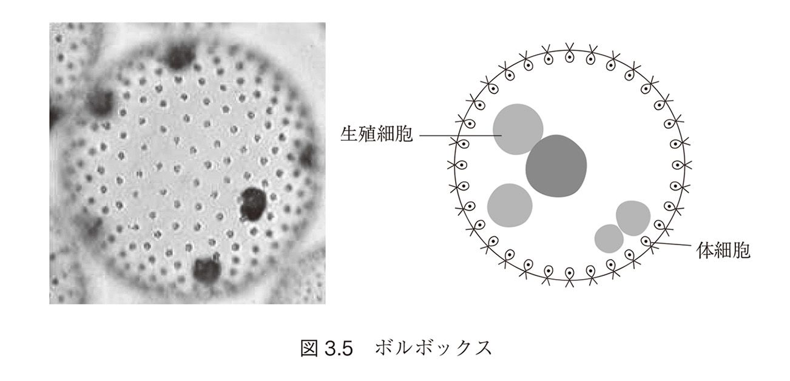
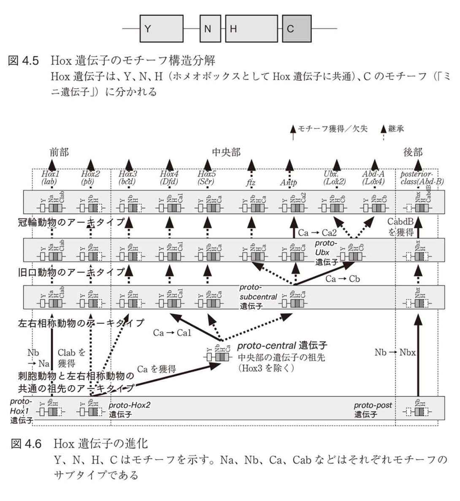
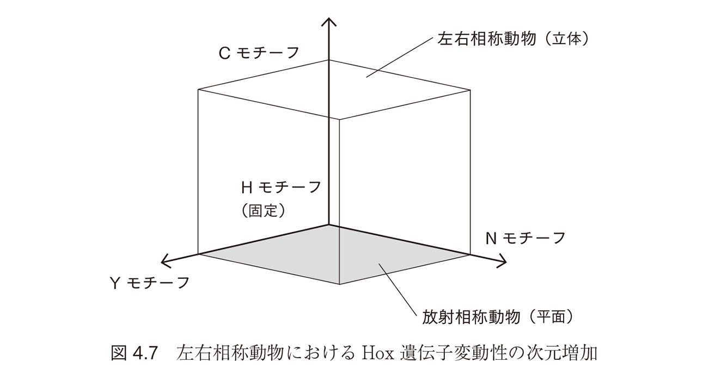

| 生命進化のシステムバイオロジー シリーズ進化生物学の新潮流 | |
| 田中 博 | |
| (2017) | |
◆ シリーズ 進化生物学の新潮流 ◆
［発刊趣旨］
進化はいまも進行中のダイナミックなプロセスであり、すべての生物はつねに変わりつづけている。こうした進化の過程でわれわれヒトを含む生物がどのようにして生まれ、いかにして生命活動を維持し、世代を連ねるようになったのか。本シリーズでは、進化生物学が分子遺伝学をはじめ発生学、生態学などさまざまな研究分野の粋と触れ合うなかでみえてきた新たな地平のもと、目を見開くような興味深いトピックを取り上げていく。
はじめに
「生命進化とは何か」──いまや、「遺伝子の突然変異とそれに対する環境による自然選択（淘汰）」という、かつての古典的スキーマで生命進化をすべて説明できると考えている進化学者はいない。このパラダイムは分子生物学の発展とともに「中立進化説」により修正されていったが、生命進化の基本的な見方に近年、決定的な影響をもたらしたのは「進化発生生物学evolutionary developmental biology（通称Evo-Devo）」である。Evo-Devoは、発生という「生物の形づくり」を調節する「遺伝子発現調節ネットワーク」が、生物進化にともない「多様化・複雑化」していく過程から、生命進化をとらえる新たな見方を提出した。この視座は、それまでは困難であったマクロ的な形態学的表現型レベルの進化（古生物学的進化論）とミクロ的な分子機序による遺伝型レベルの進化（分子的進化論）の統一をもたらすものとして期待されている。このような進化的アプローチが可能になったのは、もちろん形づくり・発生の遺伝子調節ネットワークや遺伝子セット（"ツールキットtool-kit"）が1990年代から2000年代にかけて広く解明されたことによる。いわば、生物発生の「システム生物学」的解明の成果が、生命進化の見方を革新させたのだ。
しかし、Evo-Devoは、生物の形づくり──「ボディプラン」の進化にこだわりすぎた。発生だけではなく、生物の内部調節、行動など、およそ生物のあらゆる秩序的な振る舞い・機能の進化は、それを支える〈シグナル伝達系・遺伝子発現調節系〉などの「細胞分子ネットワーク」の「構造複雑化・多様化」によるものである。
近年新しく発展してきた「進化システム生物学evolutionary systems biology」は、以上のような認識に立ち、生命進化に関する以下の基本的見方を提案する。すなわち、生命はその始原的出現から、分子ネットワークとして誕生した（生命最小実現ネットワーク）、そしてこの分子ネットワークは、環境との相互作用のもとにシステムとして複雑化・多様化していった（この動因として生命システム側の「自己組織化」機能を考える立場もある）。環境との相互作用の対象であり進化を決定する基底的な存在は、個々の遺伝子の変異ではなく、複数の遺伝子の相互作用によってまとまった機能を果たす「分子ネットワーク」である。すなわち、進化の主方向を決めているのは、個々の機能を担当する「作業遺伝子worker gene」の変異ではなく──もちろん、それも進化の素因であるが──遺伝子の「使い方」の変化、すなわち遺伝子発現調節ネットワークなどの分子ネットワークの構造変化である。
進化システム生物学は、生命進化に対する、単なるひとつのアプローチとして自らをとらえているわけではない。かつての進化の総合学説のように、生命科学の統一的な基礎、すなわちグランドセオリーとなることを目ざしている。
このようなパラダイムの到来を予見していた著者は、2007年に「複雑系生物学」および「システム生物学」の立場から、生命進化を、「生命分子ネットワークの複雑化の過程」としてとらえる新しい進化生物学として「システム進化生物学systems evolutionary biology」を提唱し、前著『生命─進化する分子ネットワーク』（パーソナルメディア）にもその基本的な見方を記した。当時、この分野は、全世界的に学問分野として形成されはじめたところであった。著者らも独立に、ほぼ同時的にこの概念に至ったのであるが、当時、この分野の創始者の一人とされるMedina氏を招いて「システム進化生物学」を推進する講演会を開催し、相互に討論した。
その後、著者らのグループは、システム生物学の医学応用（疾患システム生物学）の推進に大きなエネルギーを割かなければならなかったが、進化システム生物学の研究も継続し、Hox遺伝子族やタンパク質相互作用ネットワークの進化的複雑化の研究など、いくつか成果を発表した。本分野は2010年前後より、急速に国際的な広がりをみせ、evolutionary systems biologyという分野の名称も確立し、現在大きく発展しつつある。
しかし、それぞれの生物種に対して、遺伝子発現調節ネットワークをはじめとする分子ネットワークを実験的に詳細に同定し、その進化的変化を具体的に追跡することには、個々の遺伝子の核酸配列の進化的差異を決定するのに比べ、困難も大きい。そのため、理論的研究や計算機シミュレーションによる研究は多いが、具体的なネットワーク進化の研究になると、比較的同定の容易な代謝ネットワークやシグナル伝達系のネットワーク進化の研究がほとんどである。主要な対象である遺伝子発現調節ネットワークの構造進化に対しては、Evo-Devo分野の発生調節遺伝子ネットワークの進化・比較研究がいまだ大半を占めるのが現状である。相同する個々の遺伝子の配列の差異を同定し、変異数理モデルに基づき広範な分野で進化の系統解析を行う分子進化的研究のような、統一的で体系的な方法論の確立が進化システム生物学でも要請されている。
本書は、基本的な理念や主張に関しては賛同の多い進化システム生物学に対して、今後の具体的研究の一層の発展を促進するために、その体系化の「枠組み」を提案するものである。この枠組みのもとに、これまでの生命システム的アプローチによる生命進化研究について最近のいくつかの成果を紹介し、そのシステム進化的意味を論じた。また最後の章では、生命の体制的転移を超えた、生命の「普遍的な形式」に関しても詳しく議論した。生命の普遍的形式に興味のある読者は、まず第5章から読まれてもよい。
本書が、「生命とは何か」、「生命進化とは何か」を真摯に考える読者にとって、思考の契機をいささかでも与えることができれば、著者としてこの上ない欣びである。
2015年6月
田中 博
［目 次］
1.2 進化システム生物学の基本単位としての分子ネットワーク
1.2.4 シグナル伝達系と遺伝子発現調節ネットワークの連携としての分子ネットワーク
1.3 進化システム生物学の基礎としての「システム生物学」と「複雑系生物学」
1.4 進化システム生物学における「生命システム」概念の種類と深さ
1.4.1 「生命システム」概念の3水準とそれに対するアプローチ
第２章 生命の起源と最小生命分子ネットワーク──生命は誕生時から分子ネットワークである
2.1 生命の起源と始原的生命の分子ネットワーク──生命起源に対する3つの基本的立場
2.1.2 生命の普遍的形式──生命は物質の存在様式における「普遍性クラス」である
2.1.3 大域機能構造レベルにおける生命システム論としての生命起源研究
2.1.5 3つの自己再生系の融合──最小生命実現ネットワークとしての生命の誕生
2.3.5 近年のRNAゲノム研究──全ゲノム比較学からの最小生命系の推測
2.5 始原的生命ネットワーク──普遍的共通祖先の基本構造：3つの始原的自己再生サイクル反応の融合としての生命
2.6 生命システムの最小ゲノムと分子ネットワーク、人工細胞
3.1 〈生命系の原始選択〉と生命進化における生命体制の階層的転移
3.2.3 2つの基本進化フェーズ──始原的生命と個体性の進化的転移
3.2.4 多細胞生物の進化的フェーズの発展としての2つの下位進化フェーズ
3.3.1 進化の主要な基本制約と階層的転移における「入れ子」構造化の原理
3.4.2 真核生物への転移──細胞内共生という「入れ子」構造
3.6.7 多細胞生物の大局的な形態構造の設計原理──ボディプラン
3.7 生命の個体性の進化的転移──地球環境の大規模変化：全球凍結と大酸化イベント
3.7.2 全球凍結後の地球上の「大酸化イベント」と生命の進化的転移
4.1.1 具体的な生物レベル（レベル3）の進化システム生物学
4.2 生命のボディプランを支える発生調節遺伝子ネットワーク
4.3 発生調節の原理──Hox遺伝子と胚葉構造特異化カーネル
4.3.1 ショウジョウバエの発生にみられる体節構造による形態形成
4.3.2 「動物型」を定義するホメオティック遺伝子ファミリー
4.3.3 発生調節遺伝子ネットワークの複雑化とHox遺伝子ファミリーの進化
4.4 知と行動の進化──シグナル伝達系の進化と動物の世界認識
第５章 普遍的形式としての生命システム──「生命とは何か」という問いに答えて
5.2 生命は、熱力学の第2法則に反しているのではないか──非平衡熱力学からの生命へのアプローチ
5.4 生命の個別性の基礎としての「自己再帰構造」──生命の個体性と「自己形式システム」
第1章
進化システム生物学の成立の背景と概念
「進化システム生物学evolutionary systems biology」は、従来の進化理論のように、生命進化について、変異や重複を起こす個々の遺伝子を中心に考えるのではなく──もちろんこれらは進化に不可欠な要素的な起因であるが──複数の遺伝子が作用し合って一定の生命機能を果たす「細胞分子ネットワーク」を、生物進化の基本的単位としてとらえ、この細胞分子ネットワークが複雑化していく過程に注目する。対応する表現型の有利・不利をとおして環境から選択されるのは、「個々の遺伝子の変異」ではなく、この複数の遺伝子が協調して機能するシステムとしての「分子ネットワーク」の構造と機能である。このような生命進化に対する見方やアプローチがどのようにして生まれたか、まず簡単に進化学の歴史を振り返り、生命の分子ネットワークが進化の基本的単位として考えられるようになった経緯を述べてみよう（図1.1）。
1.1 進化学の発展の経緯と進化システム生物学の登場
1.1.1 ダーウィンの自然選択説から進化の総合説へ
科学的な進化論がダーウィン（C.R. Darwin）の自然選択説──生物形質の相違・変異が生存に対する有利・不利を生み出し、自然選択により進化（ダーウィンの言葉でいえば「descent with modification〔変化をともなう系統〕」）が起こると考える──から始まることは、誰しもが認める事実であるが、このような変異がどこからくるのか、当時ダーウィンにとっても不分明であった。
1900年にドフリース（H.M. de Vries）らによってメンデルの法則が再発見され、突然変異という機序が知られるようになった。当初、突然変異は「跳躍進化説」として、ダーウィンの自然選択説が主張する漸進進化の否定に使われたが、その後20年代から30年代にかけてフィッシャー（R.A. Fisher）、ホールデン（J.B.S. Haldane）、ライト（S.G. Wright）らによって「集団遺伝学population genetics」が創設され、〈遺伝的変異によって生物形質の多様性が形成され、それぞれの遺伝的変異は、対応する表現型の適応度fitnessに従って自然選択されて集団内に広がっていく〉という学説のもとに、その過程が数学的・統計学的に明らかにされた。ここに、メンデル（G.J. Mendel）の遺伝学とダーウィンの自然選択説が融合され、その後の進化学の基軸となる〈遺伝的変異が、その表現型の適応度に応じて自然選択され進化が起こる〉という基本的な概念が誕生した。
さらにこの学説は、その後、マイヤ（E.W. Mayr）による地理的隔離・生殖隔離による種分化やシンプソン（G.G. Simpson）の古生物学的知見への適応など、当時の新知見をさまざまに取り入れて、1940年代に「進化の総合説」として成立するや、50年代にかけて大きく発展した。
1.1.2 分子進化学と中立進化説の登場
1960年代になって分子生物学が進展し、タンパク質のアミノ酸配列決定法が普及して、種間で共通の機能を果たす相同なタンパク質に関して、種ごとのアミノ酸配列の違いが多く知られるようになった。これら種間のアミノ酸配列の進化的変化・差異を調べると、進化的に隔たっている時間に比例してアミノ酸の違いが大きくなることが見出された。62年、ザッカーカンドル（E. Zuckerkandl）とポーリング（L. Pauling）はヘモグロビンα鎖のアミノ酸配列をヒト、ゴリラ、イヌなどについて調べ、化石上分岐時期が明確な種で相関をとったところ、アミノ酸配列の差と分岐時期に直線関係があることを発見した。そこでアミノ酸配列の突然変異が常に一定速度で発生すると考え、進化の系統解析を分子配列の差異から行う可能性を提唱し、その基礎となる概念を「分子時計molecular clock」と呼んだ（Zuckerkandl and Pauling 1962）［1］。
また、このような一定の速度で変異する分子配列は、必ずしも生体の有利・不利に関係なく中立的に変化していることがわかった。木村は、このことから当時の自然選択万能をかかげる進化の総合説に対して、分子レベルでの変化は自然選択を受けないし、自然選択によっては説明されないとする「中立進化説」を1968年提唱した（Kimura 1968）［2］。この説は当時の自然選択万能論者と激しい論争を起こしたが、70年代の中期からDNA配列決定法が登場し、相同なタンパク質を生み出す遺伝子のDNA配列が80年代にかけてさまざまな種にわたって知られるようになると、中立進化説に有利な事実が相次いで見出された。
そのひとつは、遺伝暗号とアミノ酸の対応関係がもつ冗長性のため、DNA変異には、DNAが変異してもコードするアミノ酸が変わらない変異（同義置換）と、アミノ酸が変わる変異（非同義置換）が存在することに関するものである［Zoom Lens 同義置換と非同義置換］。遺伝子のDNA配列が多数、種間で知られるようになると、同義置換のほうが非同義置換よりも、DNAが変化する進化速度が速いことが見出された。これは、中立進化の正当性を確立するひとつの重要な事実となった。なぜなら自然選択が進化を推し進める唯一のメカニズムであるなら、アミノ酸を変えないDNAの同義置換は、環境から選択されずに変化（進化）しないはずであるから。同様に機能を失った偽遺伝子も変異速度の速いことが知られ、ここにも中立進化の正当性が認められた。
Zoom Lens｜同義置換と非同義置換
DNAのコードはmRNAに転写される。ここではDNAの2重鎖のうち伝えたいDNAの塩基配列であるシグナル鎖の情報を読み取るために、シグナル鎖と相補的なDNA塩基配列の鋳型鎖にmRNAがハイブリッド形成して、DNAシグナル鎖配列を写し取る。写し取ったmRNAも3塩基でアミノ酸1つをコードしていること（この三つ組をコドンと呼ぶ）には変わりない。RNAの塩基はプリン塩基のアデニン（A）、グアニン（G）、ピリミジン塩基のシトシン（C）、ウラシル（U）（DNAのチミン〔T〕と同じ役割）の4種類よりなるので、mRNA 3 塩基では4×4×4＝64種類の分子が暗号化可能であるが、生体を構成するアミノ酸は20種類であるため、冗長になる。すなわち、1つのアミノ酸をコードするmRNAは複数個ある。たとえばセリンは、下の表で最初のmRNA塩基分子2つがUCであれば、3塩基目が4種類のうちどの分子であってもセリンである（同義置換）。したがって、この3塩基目の分子置換はアミノ酸を変える（非同義置換）ものではない。
分子進化学は、分子置換速度一定の前提のもと、多くの分子系統樹解析を行い、古生物学などでは不明確であったり、間違って認識されていた種分化を正していった。たとえば、ヒトとチンパンジーの分岐は、分子進化学以前の古生物学では1500万～2000万年前ごろとされていたが、ミトコンドリアの分子進化解析から、もっと最近の500万年前後ということが判明した。また第3章でも取り上げる生物界の基本的分類として、ウーズ（C. Woese）らは、1977年リボゾームRNAの分子進化研究から、従来原核生物として一緒に分類されていた真正細菌eubacteriaと古細菌archaebacteriaは類似性が低いことを発見し（Woese, Fox 1977）［3］、生物界を動物、植物、菌類、原生生物、原核生物に分ける従来の5界分類を根底から覆す、古細菌、細菌、真核生物からなる3ドメイン分類を90年に提案した（Woese et al. 1990）［4］。これは現在では、生物分類の基本として受け入れられている。そのほか分子進化研究によって古生物学の定説が翻った例は枚挙にいとまがない。しかし分子進化系統解析の方法にもいくつか弱点がある。たとえば、分子進化速度の速い種に分子系統樹が引っ張られるLBA（long branch attraction）効果など、分子進化系統解析におけるいくつかの誤謬の可能性が指摘されている。最近ではマルコフ連鎖モンテカルロ・ベイズ法Bayesian Markov Chain Monte Carlo Method［Zoom Lens マルコフ連鎖モンテカルロ・ベイズ法（ベイズMCMC法）］などの新しい統計的系統樹構築法も急速に進んで、系統解析の正確性が高まっている。
Zoom Lens｜マルコフ連鎖モンテカルロ・ベイズ法（ベイズMCMC 法）
分子進化学の重要な課題は、種間の系統樹を、遺伝子のDNA配列の中立進化による変異（分子置換）のモデルに基づいて構築することである。さまざまな構築法が提案されているが、推測統計学的に明確な枠組みをもつものとして、最尤法とベイズ法がある。
最尤法は、系統解析における分子置換の確率モデルに基づき、①まず系統樹の樹形を決めて、現在の種間のDNA 配列を生み出した尤度（θをパラメータとしたデータxの確率関数（fx/θ）について、データxを固定してパラメータθの関数としたもの）を最も高くするようなパラメータθ、具体的には、系統樹の枝の長さ、すなわち分岐時間や各枝の置換速度などを求める、②樹形をさまざまに変えて系統樹自身の全体尤度を比較し、最大の尤度をもつ樹形を選ぶ、という方法である。最尤法は以前から使用されていたが、計算量が多いなどの欠点があった。
これに対して、複雑な確率モデルが使えるという利点から、近年多用され標準的方法とも呼ばれるようになったのが、ベイズ法で事後確率を最大にする分子系統樹を推測する方法である。ベイズ法は最尤法と違い、事前確率を必要とする、ほかの可能性の確率をすべて計算しなければならないなどの困難があったが、MCMC法の応用が提案されてからは、実用的な計算が可能になった。まず、系統樹の樹形探索をランダムに選ばれた樹形から出発し、それに統計的攪乱を加えて新しい試行（「世代」と呼ばれる）の系統樹を作成し、確率的に生成した採用基準に従って比較し受理か棄却（もとの樹形を維持）を決める。このような系列（マルコフ連鎖）を多数、たとえば10万回ほど繰り返して（モンテカルロ法）、生成される樹形の系列が定常状態に達したとき、定常系列でのそれぞれの樹形の出現確率が、その樹形の事後確率分布に対する非常によい近似となるので、このうち最大の樹形を採用するという方法である。最近では、局所的な樹形解にトラップしないような工夫をはじめ、MCMC法の欠点を改良したプログラムMrBayes、さらに地理的拡散の効果など多様な要因の影響も取り入れたプログラムBEASTによる分子系統解析が広く使われるようになってきた。
ヒトゲノム解読計画にともなって多数の生物の全ゲノムが解読されるにつれ、分子進化学でも、1つまたは数個の遺伝子のDNA配列の置換を扱った時代から、より大規模な遺伝子数で遺伝子変異を扱える時代になり、遺伝子重複などの効果も取り入れるなど、この面からも分子系統解析の精度は高まっている。
現在の進化学では、分子レベルでも正の選択が起こる事例も多く見出され、木村を継いだ太田は「ほとんど中立的なnearly neutral進化」を提唱している。非同義置換速度が同時置換の速度を上回る部分（Kn/Ks＞1、Kn；非同義置換率、Ks；同義置換率）は、正の選択が働いているDNA部分である。現在の分子進化論では、分子レベルにおける中立進化と自然選択の把握は矛盾なく融合している。
分子進化学は、分子レベルにおける系統解析において生命進化の知識を大きく発展させたが、これまで古生物学が扱ってきた生物のマクロ的な進化すなわち、生物にとって基本的な表現型レベルでの形態進化などの分析に関しては、有効な手段をもたなかった。たとえば生物学的な分類の基本である門phylumレベルのマクロ的な分化過程や進化を扱うことは困難であった。
1.1.3 進化発生生物学Evo-Devoの登場
2000年代を境にして、急速に進展した「進化発生生物学evolutionary developmental biology（略称Evo-Devo）」は、この問題に対する進化学からの新しい解答ともいえる試みである。Evo-Devoでは、生命のマクロ進化を特徴づける生物の形態の進化的変化に関して、形態形成を指令する「発生・形態形成の遺伝子発現調節ネットワーク」に注目し、このネットワークの進化的変化が生命の形態の基本体制（「ボディプラン」）の進化をもたらしたとする。すなわち、生物種のマクロ的な形態的進化を、発生・形態形成過程を調節する遺伝子発現調節ネットワーク（あるいは簡明に「発生調節遺伝子ネットワーク」とも呼ぶ）の進化から解明する。このことによって長年、解決を課せられていたマクロ的形態的な（古生物学的な）進化と、中立進化論から発したミクロ的な分子進化への橋渡しが可能ではないかと期待されている。
Evo-Devoが誕生した背景には、1983年にショウジョウバエにおいて、基本的なボディプラン、すなわち体節構造の発生を制御するホメオティック遺伝子（Hox遺伝子）のひとつであるアンテナペディア遺伝子（Antp）の構造が明らかになったことである。しかも、この遺伝子はほかのホメオティック遺伝子と共通の塩基配列部分をもつことが見出され、ホメオボックス（homeobox）と名づけられた（Garber et al. 1983）［5］。さらにショウジョウバエからマウスに至る広い範囲で、発生に関係する転写因子であるHox遺伝子ファミリーが存在することが見出され、系統間で構成数に差があるが、ボディプランの基本である体節構造を共通に決定していることがわかった。さらにショウジョウバエやマウスなどの3胚葉性の左右相称生物だけでなく、下等なクラゲやイソギンチャクといった刺胞生物など2胚葉性の放射相称生物にも──前後方向を決める2個の遺伝子だけではあるが──Hox遺伝子が存在し機能していることが明らかになった。このことによって、真正後生動物のすべての系統を貫いて、Hox遺伝子が動物の体づくりの基本的構造を調節する基軸的な転写因子であること、進化にともなって、ボディプランの体節構造は複雑になり、そのためのマスター転写因子としてのHox遺伝子ファミリーはその構成遺伝子の数を増加させていくが、発現する体節の順序に合わせて、ゲノム上で対応した同じ順序で各体節の発生を指令するHox遺伝子が並んでいること（共線性colinearity）など、基本構造は変わらないことが発見された（図1.2）。すなわちHox遺伝子が動物の体づくりの基盤となる遺伝子ファミリーであることが判明した。その後、発生・形態形成に関するさまざまな下流の遺伝子も同定され、体づくりの遺伝子ネットワークの概要が詳らかになっていき、また種間での発生・形態形成遺伝子の比較も進んで、後生動物におけるボディプランの進化の過程が明らかになった。

このようなHox遺伝子の発見に始まるEvo-Devoの発展は、1990年代、分子生物学において、シグナル伝達系や遺伝子発現調節系に対する研究が急速に発展し、細胞分子ネットワーク、とくに発生の遺伝子発現調節ネットワークに対する研究が大きく進展したことが原動力になっている。
1.1.4 進化システム生物学へ
Evo-Devoの発展により、進化に対する考え方も大きく変化した。これまでの分子進化学で対象とされていたのは、遺伝子、より詳しくいえば生命の機能を実行する作業遺伝子worker geneのDNA配列が大半であったが、Evo-Devoの進展によって、形態進化において重要なのは、その遺伝子の「使い方」を決める転写因子、正確にいえば転写因子のネットワーク、すなわち「遺伝子発現調節ネットワーク」であることがわかった。遺伝子「そのもの」ではなくて、遺伝の「使い方」の変化が進化の基軸を決めていたのである。
しばしば、生物の新しい大域構造が進化史上で出現する前に、その構造を担う遺伝子がすでに誕生していたりする。多細胞生物体制は、化石上は今から6億～5.5億年前のエディアカラ生物群や5.4億年前のカンブリア大爆発などとして一挙に登場してくるが、その体制を構築するために不可欠な遺伝子はすでにかなり前から用意されている。たとえば、第3章で詳しく論じるが、多細胞生物にとって不可欠な遺伝子の一つに、細胞間を接着する分子、カドヘリンがある。また多くの細胞を協調して増殖するために必要なシグナルを周りの細胞から受け取る上皮性の受容体において、それを活性化し、増殖指令シグナルを細胞質内に伝播させて細胞核に伝える「タンパク質チロシンキナーゼprotein tyrosine kinase（PTK；チロシンリン酸化酵素）」もそうである。これらの遺伝子は、最も原始的な多細胞体制で多細胞生物の起源と考えられている海綿動物および、それを構成する襟細胞に相同な〈単細胞生物〉である立襟鞭毛虫においては、すでに存在していた。
しかし、ホメオボックスをもった遺伝子は古くから存在するが（たとえば酵母の性決定遺伝子）、ボディプランを決定しゲノム上でクラスタをなすHox遺伝子ファミリーはいまのところ海綿動物、立襟鞭毛虫では発見されていない。Hox遺伝子が見出されているのは多細胞体制が十分整った刺胞生物からである。これはHox遺伝子がこれらの多細胞生物の機能遺伝子を「使う」マスター調節遺伝子・転写因子であるからであり、多細胞生物の形づくりを指令する遺伝子ネットワークにおいて、Hox遺伝子がこのネットワークの最上流に位置して発現を制御することによって、動物型zootypeとしての多細胞生物、すなわち真正後生動物が出現したからである。
このようにEvo-Devoの成功は、それを推進する当事者には十分意識されてはいないが、進化学の基礎概念を根底から変革するものである。すなわち、Evo-Devoの成果を普遍化すると、〈進化においては、革新的な進化をもたらすのは、個々の遺伝子の変化ではなく遺伝子発現を調節する転写因子群およびそれによって活性化するネットワーク〉、すなわち「遺伝子発現調節ネットワーク」である。進化によって選択されるのは、個々の遺伝子の変異であることはまれで、分子ネットワークとして協調して働く遺伝子発現調節ネットワークおよびそれが果たす機能である。
進化システム生物学は、このようにEvo-Devoで得られた知見を、普遍化することから始まった。マクロ的に観測される進化は形態進化だけではない。たとえば、重要なものとして、生物の内的調節機構の高度化、外的な振る舞いや行動の進化、そして認知能力の進化などがある。これらはみな、分子ネットワークによって担われている機能である。
ここで、遺伝子ネットワークと限定せずに、分子ネットワークという拡張した概念を用いているのは、生命の分子ネットワークには、遺伝子発現調節ネットワークだけではなくシグナル伝達系や、（生物秩序の維持ではないが）エネルギーと物質代謝に関係する代謝ネットワークも存在し、それぞれが進化とともに複雑化しているからである。以上から、進化システム生物学では、進化の基本的な単位を、一般の分子ネットワーク全体と考える。
進化システム生物学は、進化の新たな統一理論として構築することを目標とするもので、これまでの遺伝子中心的な進化理論から、概念的な枠組みを造り変え（パラダイム・シフト）、ネットワーク中心の進化生物学へと再構成することを目的とするものである。
ここで次の節へ移る前に、進化システム生物学の基本理念をまず整理しておこう。
〈進化システム生物学の基本理念〉
生命の機能は、単独の遺伝子によって個々独立に果たされるのではなく、生命系の組織化された振る舞いを可能にする複数の遺伝子やタンパク質の相互作用、すなわち生命の分子ネットワークによって遂行される。生命の進化においても、この分子ネットワークを進化の基本単位とすることによって、生命進化の機序をその全体性において理解することができる。生命進化とは分子ネットワークの複雑化の過程である。
この理念では、いくつかの概念がまだ未定義である。まず生命進化の基本単位としての分子ネットワークの内実について具体的に記述していく必要があろう。また最後の記述である分子ネットワークの複雑化の過程とは、現在の主流の進化理論で説明できるのか、あるいは新しく別の進化機構を加えるのかどうか、このことについても明らかにしておかなければならない。これらについて以下で順次論じていこう。
1.2 進化システム生物学の基本単位としての分子ネットワーク
1.2.1 分子ネットワークの種類と構成
まず進化システム生物学の基本単位である分子ネットワークの概念と構成について述べよう。
分子ネットワークの最も基本となる部分は、定まった機能を遂行するため複数の遺伝子を共発現させる遺伝子発現調節ネットワークである。しかし、分子ネットワークには、遺伝子発現調節のネットワークだけでなく、遺伝子発現を介さないタンパク質間の相互作用によって、協働で機能を遂行するネットワーク、たとえばシグナル伝達系などのネットワークがある。代謝ネットワークのような生命の秩序形成には関係ないが、エネルギーや生命材料形成などに重要なネットワークを加えると、分子ネットワークは表1.1のようになる。
それでは、秩序形成的な分子ネットワークのそれぞれについてみてみよう。
1.2.2 遺伝子発現調節ネットワーク
生命の機能は、1つの遺伝子発現によって遂行されることはほとんどなく、たいていは複数の遺伝子の統制された発現とそれによる機能タンパク質の生成によって遂行される。その意味ではシグナル伝達系から伝播した情報を基礎に、複数の遺伝子を協調的に発現させる遺伝子発現調節ネットワークが構成されることにより、生命機能の調整された発現が実現される。
大半の遺伝子は、ゲノム上の配列では、タンパク質に翻訳すべきDNA配列が並んでいる遺伝子本体（コーディング領域）の主として上流部位（5'方向）に位置する、プロモータやエンハンサー配列などの「シス調節エレメントcis-regulatory element」をもち＊1、転写因子と呼ばれるタンパク質が、これらシス調節エレメント上のDNA結合サイトDNA binding sitesと結合することによって、遺伝子の発現が調節される。遺伝子発現調節を媒介する分子としての転写因子はヒトでは1800前後あるといわれている。またシス調節エレメントは1遺伝子について数カ所あり、それぞれが転写因子結合サイトを複数個含む。結局、発現している転写因子とシス調節エレメント結合の組合せが遺伝子の発現を決定している。
転写因子はDNAと結合する構造部分をもったタンパク質であり、やはり、それをコードする遺伝子の発現によって産生される。このために、最下流の機能遺伝子の発現を調節する転写因子、その転写因子を産生する遺伝子、その転写因子の遺伝子の発現を調節する転写因子というように、転写因子-遺伝子発現-転写因子-......、という調節系の連鎖が続き、この階層的な総体が複数の遺伝子の発現をシステムとして実現する遺伝子発現調節ネットワークがつくられる（図1.3）。図1.3では、上流から下流への流れのみを図示したが、下流の転写因子が上流の遺伝子をフィードバックして制御する場合もある。
このように、遺伝子発現調節ネットワークは、転写因子とシス調節エレメントの結合を介して複数の遺伝子の発現を調節するためのネットワークである。このネットワークは、遺伝子発現をつなぐ転写因子の役割に注目して「転写因子ネットワーク」とも呼ばれる。通常は、3～5層ぐらいの階層になっており、次に述べるシグナル伝達系と比べればそれほど連鎖の度数は深くはない。遺伝子発現調節ネットワークという言葉は長いので、簡単に「遺伝子ネットワーク」と呼ぶときも多い。
次に述べるシグナル伝達系によって核内に細胞内外の状況が情報伝達され、それに応じて必要な遺伝子ネットワークが発現されるが、シグナル伝達系の最末端となるタンパク質は、通常は遺伝子発現調節ネットワークの最上流の転写因子になっており、シグナル伝達系から遺伝子発現調節へとつながっている場合が多い。
1.2.3 シグナル伝達系
分子ネットワークを構成するもうひとつの重要なネットワークは、遺伝子発現を介さない「タンパク質間相互作用による機能タンパク質の活性化」と、細胞内外の情報を伝達する「シグナル伝達系signal transduction system」で、これは「細胞内外の分子的な情報伝達の経路」である。このシグナル伝達系に関しては1990年代から2000年初頭にその分子生物学的解明が急速に進展した。
シグナル伝達系は、細胞間および細胞内での情報伝達を担う分子ネットワークである。多細胞生物が約10億年前に出現するまで、生命は長い間、単細胞であった。単細胞生物のため、情報伝達を担うのに多細胞生物が使用している神経細胞などを使うことができない。そこでシグナル伝達系では、タンパク質がシグナルを運ぶ媒体となる。タンパク質間相互作用によって、次つぎと情報がタンパク質のカスケードを伝播していく。
生命は単細胞生物の時代から、外界の情報を収集し、光や栄養成分に向けて、鞭毛を動かし行動している。多細胞生物で眼などの感覚細胞・器官sensorに相当する外界の認識を、単細胞生物で担当するのは、細胞膜上の受容体分子である。多細胞で筋肉などの効果器官effectorに対応するのは、細胞に付いている鞭毛である。多細胞生物で、これら感覚器官と効果器官の間の情報をつなげる神経細胞に相当するのは、細胞膜上で受容体から収集した情報を細胞内に中継し、遺伝子発現や機能タンパク質活性化を導く「情報応答分子」である。
最も簡単な単細胞である原核生物では、第4章で詳しく述べる2コンポーネント系2-component systemがシグナル伝達の役割を果たしている。細胞膜上に存在する「受容体分子」（第1成分）が外界から刺激を受けると、細胞内に存在する「情報応答分子」（第2成分）がこの受容体から活性化を受け、細胞内を移動して、目的とする機能の遺伝子の転写因子として働き（原核生物のゲノムは細胞質に露出している）、その遺伝子を発現させて機能を担うタンパク質を産生したり、あるいはすでに細胞質に存在する機能タンパク質を活性化させてその機能を発揮させる（図1.4）。このような〈受容体分子-情報応答分子〉の組は大腸菌でも40以上存在し、「if-then（こういう条件ならば、こうせよ）」型の「知識」を実現している。
真核生物や多細胞生物へと発展するにつれ、細胞のサイズも大型化し細胞内の情報伝達に対する条件も複雑化して、原核生物で使用された、1つの情報応答分子が受容体から情報を取得して遺伝子発現制御に伝達する機構では、対応できなくなった。そのため細胞質内で多数の情報伝達分子を連携したネットワークとして複雑化していった（図1.5）。
第4章に詳しく述べるが、真核生物では細胞規模が容積にして1000倍以上に増えるので、膜上の受容体から、生命機能を遂行する核内の遺伝子発現系へと信号を伝播するのに、〈受容体分子-情報応答分子〉の2コンポーネント系では、細胞膜から細胞核までつながらない。そこで信号媒体タンパク質をリレー状につなげ、増幅するシグナル伝達系（あるいはシグナルパスウェイsignalling pathway）が発展した。タンパク質で担われているシグナル伝達分子に信号のon-offを示すために、主としてシグナル伝達を担うタンパク質の特定のアミノ酸をリン酸化して目印とし、これが次つぎと伝播していくリレー方式、すなわちリン酸化カスケードが用いられた。
このようなシグナル伝達系は、単に細胞膜上の受容体の情報を細胞核や細胞質内に存在する酵素に伝えるだけでなく、その経路において、複雑なネットワークを形成して、信号の増幅やネットワーク型の情報処理を行えるように発展していった。その意味で、シグナル伝達系は、生命の秩序的な振る舞いを形成する骨格となる分子ネットワークの一つで、情報の流れと情報選択・処理のロジックを分子の信号として実現している。
1.2.4 シグナル伝達系と遺伝子発現調節ネットワークの連携としての分子ネットワーク
細胞内外の状況を知らせるシグナル伝達系と、それに対応した生命の機能を実行させる遺伝子発現調節ネットークが連携して、生命のまとまった機能を実行する分子ネットワークが生まれる。1990年代以降の分子ネットワーク研究の進展によって、発生や分化、がんなどを規定する、分子ネットワークの解明が進んだ。がんに関しては、細胞増殖やアポトーシス、細胞周期制御やDNA修復など、多細胞生物に特有の成長や老化を担う、〈シグナル伝達系と遺伝子発現調節ネットワークが連携した複雑な分子ネットワーク〉が調節異常を起こしたものと考えられている。さらに1.1節でも述べたように発生・形態形成の分子ネットワークに対する研究の興隆が、Evo-Devoの興隆につながったといえる。
分子ネットワークに関する研究はシグナル伝達系も遺伝子発現調節ネットワークも、最近約20年で急速な発展をとげた。これによって、〈生命の本質は「DNAやタンパク質などの生命マクロ分子の分子的機能」にある〉とする見方（分子的生命理解）から、〈「生命マクロ分子がつくる細胞分子ネットワークの振る舞い」こそ生命の本質である〉という見方（システム的生命理解）へ変わった。生命科学のパラダイム変換を導いたのである。このようなパラダイム変換の影響の1つとして、Evo-Devoが生まれ、その方向上に進化システム生物学が誕生したともいえる。次の節で一連のこの過程について述べよう。ここでもう一度、進化システム生物学の基本的立場を表明しておこう。
〈進化システム生物学の基本的概念〉
進化にとって重要なのは、個々の作業遺伝子worker geneの変異だけではなく、遺伝子の「使い方」を決める転写因子、シス調節エレメント、シグナル伝達タンパク質の変異であり、それらによって分子ネットワークのトポロジーが変化することである。
1.3 進化システム生物学の基礎としての「システム生物学」と「複雑系生物学」
生命の分子ネットワークの生物学的な事実に対する研究が急速に発展し、豊富な知識が蓄積されるようになり、生命理解のパラダイムに変化が起きるとともに、これらの事実の蓄積を整理し、理解するための新しい学問分野が必要となった。歴史的には、分子ネットワークについての事実的知識の急速な発展に呼応し、それを受けて「システム生物学systems biology」が出現した。進化システム生物学は、システム生物学が発展して自らの初期の限界を打ち破り、進化的時間スケールに拡大したものと理解することができる。
システム生物学とともに、分子ネットワークの事実的研究の発展と並行した時期に進展した「複雑系complex systemの生物学への応用」である複雑系生物学も、進化システム生物学には重要な理論的寄与を与えつつある。両学問は、生命をシステムとしてとらえる深さに違いがあるが、急速に発展した分子ネットワークの事実的知識をまとめる概念的な枠組みを提供したといえる。まず、システム生物学から述べてみよう。
1.3.1 システム生物学
「生命をシステムとして理解する」システム生物学の出現
分子ネットワーク研究の発展を背景として、2000年初頭に「システム生物学」と呼ばれる学問分野がわが国の北野によって提案され（Kitano 2002）［6］、急速な国際的展開を見せた。ハーバード大学をはじめとするさまざまな大学にシステム生物学のコースが構築されるとともに、国際学会の開催やこの分野を専門とする国際学術雑誌も刊行されるなど、生命科学の一大パラダイムを形成した（表1.2）。
システム生物学は、「生命をシステムとして理解する」観点から、生命システムの見方全体に大きな変革をもたらしただけでなく、定量的生命科学として、計算機科学の観点から生命のさまざまな分子ネットワークをモデル化し、計算機シミュレーションによって再現するなど、実験的検討とともに、生命システムの振る舞いの構造的な理解に力を発揮した。
システム生物学は、単なる生命へのアプローチの一つというだけでなく、これまでの生命科学を主導する基本概念にパラダイム変換をもたらした。分子的な生命科学研究のパラダイム遷移を述べると表1.3のようになる。
「システム生物学」の生命理解の限界
これまでのシステム生物学における研究は、シグナル伝達系や遺伝子発現調節ネットワーク、さらには代謝ネットワークなどの生命の分子ネットワークを対象に個別の具体的なシステムのレベルでのモデル化や分析を行う研究がほとんどであった。時系列的な研究もあるが、それらは、生物の内外からの入力に対する個別の分子システムの応答に対する時間的シミュレーションや動的振る舞いの分析など、短時間の時間スケールに限られていた。通常のシステム生物学では、系の振る舞いについて分析することは多くても、「分析の対象となる生命系そのものの構造は不変な枠組み」として、そのもとでの、個々の生命システムの挙動が扱われていた。
この「構造不変性のもとでのシステムの振る舞いの分析」というシステム生物学の前提は、2つの方向で拡張される。ひとつはシステム生物学の医学への応用である。メンデル的な遺伝疾患のように特定の遺伝子の変異によって起こる疾患もあるが、高血圧症や糖尿病、一般のがんなどの「ありふれた疾患common diseases」は、システムの構成要素の異常というより、正常な生命分子ネットワークの構造全体の「調節不全」による。これをわかりやすく「分子ネットワークの歪み」によって生じるといってもよい。したがって、疾病領域にシステム生物学を拡張して適応するためには、生命システムの疾病による構造変化についてのシステム生物学が必要になる。ここではこの方向についてこれ以上深く立ち入らない。著者らのこの分野の研究の総説は、単行本『先制医療と創薬のための疾患システムバイオロジー』（培風館）に詳しく述べた。
「進化システム生物学」の誕生
もうひとつの方向が本書で取り上げる進化システム生物学である。生命のシステムとしての構造は、より長期な進化的時間スケールでみれば、その構造自体が変化している。すなわち分子ネットワークが進化とともに構造的なレベルで変化・転移しており、これこそが進化システム生物学の対象となる。この進化的扱いのためには、システム生物学は、自らの「生命システム構造不変性」の前提を打ち破って、進化的時間スケールの「構造変化」のシステム生物学へと変革されなければならない。進化システム生物学が誕生することによって、そうした前提を超えた新しいシステム生物学の発展が加速される。
Evo-Devoの出現によって、まず最初に発生調節ネットワークに対するシステム的アプローチによる研究が、個々の代表的なモデル生物になされ、次にそれらの結果を進化的時間スケールで比較する研究が出現して、発生調節システムやネットワークの進化的変移に関しての研究が始まり、進化システム生物学の進展へと至ったと考えることができる。
進化的時間スケールの、生命に対する広義のシステムアプローチを、むしろ主に扱っていたのは、システム生物学より前の1990年代に出現して一時代を画した「複雑系生物学complex systems biology（あるいはbiocomplex systems theory）」である。その意味では、進化システム生物学は、現行のシステム生物学の進化過程への応用というより、より原理的な生命のシステム的究明である複雑系生物学の進化への応用といった要素も大きいといえる。
1.3.2 複雑系からの生命系の理解──複雑系生物学の再興
「複雑系生物学」は、一時代を画した「複雑系理論」の生物学への展開である。このような分野を「生命への複雑系によるアプローチ」、あるいは「複雑系生物学」と呼ぶのは適切であり、著者は以前に『生命と複雑系』（培風館）（田中 2002）［7］でこの分野を総括し、はじめてこの名称を使用した。その理論的な核心については「複雑系生命理論」と呼ぶことも可能である。また、「複雑系生命科学」あるいは「複雑系アプローチによるシステム生物学」とも呼ばれている。
複雑系の理論は、カオス現象などで知られる非線形ダイナミクスの研究分野の発展を基礎とし、非平衡熱力学などの理論を取り入れて、「複雑なシステム」が示すさまざまな創発的現象emergenceについて研究する科学である。主要な課題として、部分システムが合わさって全体システムができるとき、部分の総和を超えた「全体」が創発するemerge現象や、動的システムが「秩序」的領域から「カオス」的領域に移行する境界（「カオスの淵」）で最も複雑な挙動を示し、高い秩序性を示すことの発見など、さまざまな非線形動的システムの知見をもたらした。この複雑系理論は登場後、社会科学や生物科学へ応用されて、当時多くの話題を呼んだ。
とくに生命科学への応用が盛んで、カウフマン（S.A. Kaufmann）をリーダーとして築かれた複雑系生物学（Kaufman 1993）［8］は、生命の起源、進化や発生など、生物に本質的でダイナミックなシステム現象についての理論研究が行われた。生命の「系としてのあり方」の解明を目的とする学問分野として、当時ローゼン（R. Rosen）の関係生物学（Rosen 1958）［9］などと並び注目された。
複雑系生物学と「情報によるシステムの自己組織化」
システム生物学は工学分野で発展した「通常のシステム論」を基礎にしているが、システム論という分野は与えられた系の分析や設計論が基本である。生命を「系としてのあり方」からとらえるわれわれの目標は、現にある構造だけでなく、同時にその構築過程も明らかにすることである。システム自体の構築の原理的過程はシステム論よりむしろ複雑系の分野において、とくに系の自己組織化論で扱われている。なかでも生命系に有用なのは「情報のもつ系形成能力を取り入れた自己組織化論」である。
複雑系という概念は、もともとは「自己組織化論」から発展したものである。自己組織化論は、近年カオスやフラクタルの理論あるいはアルゴリズム情報理論などが出現して以降、これらの理論の基本にある複雑性complexityの概念に強く影響を受けて大きく発展した。古典的な自己組織化論は物理的決定論に基づく動的なダイナミクスの概念を基礎としていたが、カオスの発見以降、初期条件が系の未来を実質的には決定できないこと、それにもかかわらず概周期性などの大局的構造が現れること、実際には状態が一意に決まらない物理的多義状態が予想以上に多く発生することなどが明らかになり、動的なシステムに対する認識が大きく変化した。複雑系生物学はこのような基本概念を受け継いで、それを生命系の理論的解明に利用するものである。たとえばカウフマンは、自然選択の意義を認めつつも、生命側の要因として生命系がもつ自己組織化の特性が、生命進化の基盤をなすとの考えを示している。
複雑系生物学と生命科学のビッグデータ時代
この複雑系生物学は、時代的に後で出現するシステム生物学よりも理論的で、物理-数学的である。しかしヒトゲノム解読計画以前に出現し発展したため、ゲノム・オミックスのような大量の網羅的分子情報がまだ利用できない時代で、また分子ネットワークの詳細な知識が爆発的に増える以前であったため、研究の実証にはtoyモデルによる数値的シミュレーション実験が多く、現実の生物科学への実質的な寄与はもたらさなかった。
しかし、いまや次世代シーケンサなど、ヒトのゲノムが1日で10万円以下のコストで配列解読できるようになった。またゲノムをはじめ数々のオミックス情報が大量に生産され、データベースが整備されてきているのでそれらのデータを利用できる。これまでの複雑系生物学は、一般の生物学者からは「理論家の遊び」と見なされて、あまり生物学主流から評価されてこなかったが、現在では生命科学ビッグデータが存在し、複雑系生物学のさまざまな概念も豊富な生命情報によって立証できる段階に到達したため、発生や進化など動的な現象が本質をなすシステム理解に理論的な支柱を提供すると期待される。
システム生物学が、疾患や進化を扱うために「構造不変性」の前提を脱し、構造の変化の学へと飛躍するときに、複雑系生物学は、豊富な生物学的知識と融合して、新たなシステム生命科学の基礎理論として再度登場し、発展しつつある。
1.4 進化システム生物学における「生命システム」概念の種類と深さ
ここまで、進化システム生物学について、その位置を論じた。ここでいったんまとめよう。
まず、進化学の発展の観点からの進化システム生物学の意義は、〈分子変異から分子ネットワーク構造変化へ〉という進化の基本単位に対する認識の発展、〈遺伝子「そのもの」から遺伝子の「使い方」へ〉という進化対象の発展である。次に、それを扱う学問としての意義は、「生命をシステムとして理解する」システム生物学が、初期の限界を超えて、進化的時間軸での生命システムの構造変化の学として進化システム生物学が生まれたということと、通常のシステム生物学では扱えない進化の基礎概念の解明のために複雑系科学の成果を積極的に適応したということである。
1.4.1 「生命システム」概念の3水準とそれに対するアプローチ
進化システム生物学で、「生命システム」と呼ぶ内容にはレベル（水準）があり、深さ（階層）があることを明確にしておこう。この区別は、それを扱う方法論や進化概念に違いをもたらす重要な観点である。
大局的に論じると、生命系における「システム」には3つの水準が存在する。生命系と物質系の本質的な違い（生命の起源論）に関係し、生命の「システムとしてのあり方」を扱う、普遍的な生命システム論のレベルから、通常の生物学レベルにおけるシグナル伝達系や遺伝子発現調節系など具体的な、生物学的な個別事実としての生命システム論まで、生命の「システムとしてのあり方」においてどのような階層があるか、論じてみよう（表1.4）。
現象論的なレベル3と本書で呼ぶ生命システムは通常の生物学レベルにおける個々の分子ネットワーク、すなわち、個々の遺伝子発現調節ネットワークやシグナル伝達系の進化に関するものである。本書でも発生調節遺伝子ネットワークやシグナル伝達系の分子ネットワークの進化の具体例に関する研究についていくつか第4章で取り扱う。通常のシステム生物学的アプローチによって扱われる個別的な分子ネットワークである。
分子ネットワークの進化には連続的な漸進的進化もあるし、非連続的、跳躍的で階層的なシステム転移としての進化も存在する。前者の連続的な変化においては、分子ネットワークという分子システムの部分的な変更をともなう漸進的な進化であるが、後者の非連続的変化においては、第3章で述べるように生命の分子ネットワークの大域構造が進化的に転移する。
第2のレベルの生命システムは、この大域的なレベルでの生命システムで、生命の大域機能構造の枠組み、生命体制の階層的-転移的進化（いわゆる「大進化」）に関係する、生命の枠組みとしてのシステムである。生命は、推測される始原的形態から、現実に観測される原核生物、真核単細胞生物、有性生殖生物、多細胞生物、など、同じ生命ではあるが、明らかに質的な構造の違いがある生命体制を転移してきた。こうした生命の大域機能構造の階層的進化は、生命進化のシステムアプローチにおいて重要な研究対象であり、これらの主要な構造間の転移が、生命進化をいくつかの進化的フェーズに区分する。かつて古生物学で生物進化を、急激な変化期と、停滞的な持続期に分けることを提唱したグールド（S. J. Gould）やエルドリッジ（N. Eldredge）の「断絶平衡punctuated equilibrium」も、このような進化的事実を反映したものである。
進化にはこのように単なる種的多様性にとどまらない「体制的な差異」（Maynard-Smith, Szathmáry 1995）［10］が存在する。メイナード・スミス（J. Maynard-Smith）はこのシステムの質的差異を「生命の階層的跳躍」あるいは「生命の主要転移major transition」と呼んだ。またミコッド（R.E. Michod）（2000）［11］やヘロン（M.D. Herron）ら（2008）［12］は、原核生物から細胞内共生によって真核単細胞生物が形成され、さらに真核単細胞生物が構成要素になって多細胞生物が形成される過程でみられるような、生命の基本体制の進化を、「生命の個体性のあり方」が質的飛躍を行っているととらえ、「個体性の進化的転移evolutionary transition in individuality（ETI）」と呼んだ（第3章参照）。いずれも各体制の生命は、生命単位のあり方の「大域機能構造overall functional structure」に質的な差異があることをあらわす概念である。
この大域機能構造のシステム進化と、特定の具体的な生命分子ネットワークのシステム進化の間に、いくつかのレベルが存在する。先に述べたドメイン（原界）レベルより下位のレベルであるが、個別的な分子ネットワークより上位に属する、界、門、綱レベルの生命体制での進化がそうである。たとえば哺乳類は、脊索動物門-脊椎動物亜門-哺乳綱に属する。哺乳類のボディプランなどはEvo-Devoの中心的な研究課題であるが、進化システム生物学にとっても重要な研究対象の「生命システム」で、大域機能構造レベルの進化の下位と見なせる。
しかし、さらに種レベルでの体制構造やボディプランの変化に関していえば、レベル3の進化システム生物学で特定の分子ネットワークのシステム進化を扱う場合ときわめて近く、そのアプローチは明確には分離できないので、ここではこれらの体制的な差異はレベル3と考える。
そして最後の、レベル1と本書で呼ぶ生命システムは、これら大進化の体制変移を通じて変わらない、より本質的な「生命の普遍的形式」についてのシステム論で、これはシステム生物学というより複雑系生物学が受けもつ生命系のシステム的性質の解明である。とくに、生命系の動的システムとしての原理的性質を解明する。生命の自己再帰性や志向性、強靭性や進化可能性、情報秩序形成機能や非平衡性などが議論される。進化のシステムアプローチの基礎理論である。これについては前著『生命と複雑系』で詳しく論じたので、本書では最近の研究も含め、第5章にて改めて基本的な形式を論じる。
以上の議論をまとめると、「生命システム」という概念に含まれる内容の深さに大きく3水準があることがわかる。この3水準は進化システム生物学で十分に認識されているが、まだ全般的に承認されてはいないので、本書で今後の記述のために提案する枠組みととっていただきたい。
1.4.2 生命システムの各レベルと進化の多重レベル理解
これらのレベルに応じて、対応する研究方法も違ってくる。先に述べたように、進化システム生物学には、2つのシステム生命科学方法論がある。すなわち、「（通常の）システム論に基づいたシステム生物学」と「複雑系理論に基づくシステム生命科学である複雑系生物学」である。
生物の特定の分子ネットワークに関係している、具体的なシステムの振る舞いに関しては（レベル3）、通常の分子生物学的なシステム生物学が対応する。また生命の起源や生命の普遍的形式──生命の自己再帰replicator性や情報を用いた秩序形成あるいは土台としての非平衡散逸構造など──に関しては（レベル1）、複雑系生物学が対応する。生命の大域機能構造に関しては（レベル2）、より深いレベルのシステム生物学、あるいはより具体的なレベルの複雑系生物学が対応する。両者の融合領域といってもよい。
進化システム生物学は、この3つの水準のすべてに関わる。生物学的な個々の生物現象の進化のメカニズムを具体的で特定の分子ネットワーク構造の進化としてとらえ、そのシステム進化的な解明を行う場合、上でいうレベル3の研究である。さらには、原核生物、真核生物、多細胞生物の大域機能構造について、たとえば真核細胞の生成を、ミトコンドリアや葉緑体という原核生物の細胞内共生過程としてとらえる場合、あるいは真核生物の多細胞化の過程を解明する場合など、体制の階層的複雑化の過程としてシステム進化の過程を解明するとき、これは生命の大域機能構造のレベルでの議論、上でいうレベル2である。これはいままで「大進化」とか「階層進化」との名前で呼ばれてきた。また、Evo-Devoが哺乳類のボディプランの進化を扱うときも、レベル2の生命システムを扱っているといえよう。
さらに、生命系の普遍的あり方、すなわち生命の構成原理に関するレベル1のシステムがある。生命の誕生時である始原的生命が非生命的物質から生成したとき、物質集合系の「系のあり方」のひとつの普遍性クラスuniversality classとして出現した（始原的生命系）。このときの生命系のもつ性質、自己複製、代謝による自己維持、非平衡構造、「情報」生成、進化可能性などの系の普遍的形式は、その後の多様な生物の進化をとおして、全体を制御するものである。
進化システム生物学が扱う3つの水準について述べたが、これは、本書で展開する、進化システム生物学を基礎づける生命進化の認識の基本図式でもある。生命の普遍的形式のもとに、原核生物-真核生物-多細胞生物と発展し、多細胞生物出現以降はボディプランの複雑化に至る進化の主要経路が存在する。このような大域機能構造という枠組みのうちに、個々の種の進化と分子ネットワークの進化があるわけである。
生命進化を一次元の直線的な概念でとらえるのではなく、生命系を非生命系存在と区別する普遍性クラスとしての土台的な制約のもと、生命体制の主要転移によってもたらされた大域機能構造（原核、真核、多細胞）の枠組みにおいて、個々の生命の進化が把握できる。図1.6に示したように、生命進化に対して多重レベルで認識する必要がある。
1.5 進化システム生物学の基本理念
進化システム生物学の形成に関して、進化学説からの進展とシステム生命科学からの進展について述べた。ここで1.1節の最後で定式化しておいた「進化システム生物学の理念」の後半の部分に戻って、すなわち「分子ネットワークの複雑化による進化」を起こす基本機構に関しての議論を紹介しよう。
結論から述べると、進化システム生物学全体で、統一された学説と呼べるものはまだ確立していない。これは進化システム生物学が、「分子ネットワーク進化の基軸性」の概念を中心としてさまざまな背景をもつ諸学派が集まった学問分野であり、進化理論としての体系化がまだ十分なされていないからである。本書で、できるかぎり体系化した記述を図りたい。
1.5.1 複雑化進化の基本機構についての考え
分子ネットワークの複雑化進化を起こす機構については、進化システム生物学を唱える研究者の間において、見解は以下述べる2つの立場の間で連続的に分布している。
①現在の主流進化理論と同じ進化機構を考える立場
現在の主流進化理論のように、〈進化の原動力としては、遺伝子変異、遺伝子重複、ドメインシャッフリングなどの遺伝的変異機構を起因として、中立進化と自然選択によってこれら変異が固定化される〉という基本概念をそのまま踏襲し、このような進化機構が分子ネットワーク進化にも適応できると考える立場である。主に、生命進化の事実的な個別的なシステムの研究において、分子ネットワークを進化の基本単位として注目しつつ、記述的に進化の過程を解明する研究に採用されている。以下で詳しく述べるが、この立場は「システム生物学」の概念を基礎として、進化システム生物学の研究を行う立場の研究に多い。
②ネットワークの「自己組織化」を進化機構のひとつの要素と考える立場
現在の主流進化理論の〈遺伝的変化機構-自然選択・中立進化による固定〉の図式に、生命システムが備えていると考える「自己組織化力」を加え、生物進化の機構として、環境による自然選択や中立進化（遺伝浮動）によってのみ進化が推進されるのではなく、生命システムがもつ自己組織化力が、生命側の機構として働いているとする。複雑系のシステム概念を基礎として進化システム生物学を構築している立場の研究に多い。この系統は複雑系生物学の先駆であるカウフマンの流れを踏襲する進化システム生物学研究者が採用している。ここでは生命システムの自己組織化力が「生命秩序の起源」と見なされ、進化の原動力のひとつと考えられている。生命起源や大域機能構造の階層的進化を考えるとき、進化学の主流が考える進化機序ではこれらの跳躍性を説明できないとして、自己組織化論の「相転移」論などが援用される。
この2つの立場は、画然と分かれているのではない。進化システム生物学の研究は、この両視座を2つの極としつつも、それぞれの立場を強調する度合いに応じて連続的な分布をとる。これは進化システム生物学の基盤となる「生命システム」に対する見方について、どのシステム生命科学の分野の概念に比重をおいたかによると思われる。
基礎とするシステム概念の違いに応じて、システムの自己組織化力を積極的に取り入れ、複雑系生物学を基礎とする、より「理論的」な進化システム生物学（複雑系進化生物学）と、分子ネットワークを基本単位に事実として生命進化を追跡・理解する「記述的」な進化システム生物学が両端となり、その間に連続的に分布する。こうしたスペクトルの中で、個々の進化システム生物学の研究者が基づく生命システムの基本的なとらえ方の差異が存在する。
1.5.2 分子ネットワークの全体構造による内部選択の原則
上のいずれの立場、すなわち現在の主流進化論に立つか、複雑系進化論に立つかにかかわらず、広く認められている原理についていくつか述べよう。
ネットワークの全体から部分への制約
進化システム生物学で新しく進化機構として広く認められているのが、内部選択・周辺進化の法則である。これは、分子ネットワークの全体としての構造自体も、その構成要素の進化に対して内部的な拘束を課す環境となって、ネットワークを構成する個々の遺伝子の変異や重複・欠失・挿入などを制約するという原理である。すなわち、分子ネットワーク自身の構造がその構成要素の遺伝子変異を選択している。
その顕著な例として、分子ネットワークの中心部に位置する遺伝子・分子は、周辺部に較べて進化速度が遅い。遺伝子の点変異の蓄積や遺伝子重複などの遺伝的変化のプロセスは分子ネットワークの各部分について一様に起こるが、その固定化の比率は中枢部と周辺部で異なる。変異がネットワークの中枢部の遺伝子に起こる場合、この遺伝子（タンパク質）がネットワークを介して結合する遺伝子（タンパク質）数が多いため、ネットワークによる制約が強く、ネットワークからの選択は厳しい。ネットワークにおいて結合度数が高いノードである遺伝子ほど制約が強く、進化の速度が遅い。すなわち、ネットワーク理論で定義されている中枢性（度数中心性degree centralityや媒介中心性betweenness centrality［Zoom Lens 度数中心性と媒介中心性］）が高い分子には変異に対する制約が強く、進化速度は遅い。これに対して、分子ネットワークの周辺に位置する遺伝子は、制約が弱く進化速度が速い。つまり、「分子ネットワークは、辺縁部から進化する」といえる。このことはタンパク質間相互作用ネットワークや代謝ネットワークで証明されている。これが分子ネットワークの全体構造による内部選択の原則である。
Zoom Lens｜度数中心性と媒介中心性
いずれもネットワーク理論の概念である。ネットワーク理論では、頂点（ノード）の間を辺（エッジ）が結び付けて、ネットワークの構造を抽出したグラフができあがる。辺に矢印のような方向性をもたないグラフは無向グラフと呼ばれる。頂点に結合している辺の数がその頂点の度数degreeである。度数中心性degree centralityとは、ネットワーク中の頂点で最大の度数（結合数）をもつもので、ハブである場合が多い。しかし単純に度数だけみてネットワークの中心と考えると、われわれの直感と合わないことも出てくる。
これに対して媒介中心性betweenness centralityとは、ネットワークのそれぞれの頂点間の最短路の集合において、一番通る頻度が高い頂点である。ネットワークをサブコミュニティに分ける時などにも頻用される。このほか近接中心性closeness centrality（自分以外の頂点への最短距離の和を頂点数で除して得られる平均最短距離が最大となる頂点）がある。たとえば、下図のようなネットワークでは度数中心性、媒介中心性、近接中心性のいずれも「4」である。
部分の変化によるネットワーク構造変化の原則
反対に、ネットワークの要素や部分の変化が、ネットワーク全体の構造や機能を変える場合もめずらしくない。大半の遺伝子変異はネットワーク全体からは、上記のような制約すなわち負の選択を受けるが、約10％の変異は正の選択を受け、生命系が新しい能力を獲得する方向に進化するのに使われるとされている。また部分がネットワーク全体を構造変換する例としては、細菌類に多い遺伝子の水平移動がある。ほかの種から新しい機能をもった遺伝子が到来する機構である。細菌類では100遺伝子ぐらいが水平移動で獲得され、そのうち30％は機能を残存して活用される。
細菌類では遺伝子の水平移動が大きな寄与を示すが、多細胞生物では、分子ネットワークが拡張して新たな機能を獲得する最大の機構は、遺伝子重複である。重複した遺伝子はほとんどが時間とともに消えるが、発現量を増加させる効果があり、しばしば選択されて固定化する。
遺伝子重複の重要な作用は、もとの遺伝子が残って機能を果たしているため、重複した遺伝子は比較的に機能的制約から解放されることにある。そのため、その後の変異を受けて、新たな機能を獲得する機会も多い。いずれにせよ、遺伝子数は増加し、より複雑な生命機能を果たす可能性（次元性）が拡大し、そのうちの何割かが現実に新しい機能を獲得する。このことによって部分の変化がネットワーク（全体）の構造を進化させる。
逆に遺伝子の機能喪失変異はネットワークのリンクを喪失させ、ネットワークの大域的な構造や機能を変える。内部寄生性・内部共生性の単細胞生物では、環境の変化によって遺伝子は大きく失われ、ネットワークの機能が著しく失われたりする。
たとえばブフネラBuchnera菌は、昆虫のアリマキ（アブラムシ）の細胞内部に共生する、大腸菌の親戚にあたる細菌である。これは相利共生であって、ブフネラは宿主であるアリマキに必須アミノ酸を提供する。何万年にもわたる共生の間に、ブフネラは多くの遺伝子を失った。大腸菌の代謝ネットワークは900以上の反応からなるのに、ブフネラのそれは263しかない。大腸菌は数十種類の炭素源で生命を維持できるが、内部共生者であるブフネラにはそうした機能は必要ないので、自立した代謝ネットワークを失ったのである（Wagner 2012）［13］。
これ以外の生命系の分子ネットワーク進化の原理に関しては、現在の主流の進化学に準じる立場と「自己組織化」の力を取り入れる立場の間に、連続的な差異があることは、すでに述べたとおりである。
ここで、「生命をシステムとして理解する」生命のシステム的認識の発展の経緯を述べよう。生命のシステム的認識は、進化システム生物学を支える生命理解の基盤であり、その歴史を振り返ることは、同時に進化システム生物学の発展をたどることでもあるからである。
1.6 進化システム生物学の学問分野としての発展過程
2000年代の初め、システム生物学が登場する時期の前後から、生命の分子ネットワーク・システムの成立機序を進化的な視座で眺める研究が現れてきた。とくに生命システムとしての研究が進んでいた代謝ネットワークについてはシステム生物学が登場する前から、生物「門」間の比較などの研究をとおして、代謝系の分子ネットワークの進化に関する研究が行われていた。これらの進化システム生物学の淵源にあたる研究は表1.5である。
これらの研究は発展して、現在の進化システム生物学が包摂される分野となっている。とくに分子ネットワークの進化についての研究は、初期には代謝ネットワークの進化的変化などに関するものが多かった。代謝ネットワークはさまざまな種において解明されており、データベースも完備し、また「metabolic control analysis」という代謝反応システムの数学的-制御論的分析の分野が1980年代から発達しているので、比較的早期から取り組まれ、その種間比較、進化解析がむしろ進化システム生物学の道を拓いたといえる。
ところで明示的に「進化システム生物学evolutionary systems biology」という分野が現れたのは2000年代の中ごろである。本文中にこの名称が記載された論文は、2003年にも見受けられるが、タイトルに明記されたのはメディナ（M. Medina）（2005）［14］の"Genomes, phylogeny, and evolutionary systems biology"が最初である。サンゴと褐虫藻の共生関係をマイクロアレイで解析し、共生の分子メカニズムの解明にシステム生物学の概念を取り入れている。ただし、この論文では進化システム生物学の明確な理念形成がまだ不十分であった。しかし2005年、2006年に刊行されたクーニン（E.V. Koonin）の2つの論文（Koonin 2005［15］, Koonin and Wolf 2005［16］）のうちのひとつは、タイトルが"Evolutionary systems biology: links between gene evolution and function"で「進化システム生物学」と明記され、この学問分野の新しい可能性を論じている。Kooninは、遺伝子ネットワークと生命機能を関係づける試みを示し、進化的思考とゲノムワイドな網羅的分子の比較を合体させた。このころから研究室や研究所の名称、分野の名称として進化システム生物学の語が使われるようになった。
そして進化システム生物学の今後の研究方向を提示する研究が2007年、Wuらの論文で報じられた（Chen, Wu 2007）［17］。この論文は、「大規模遺伝子ネットワークの進化的（比較論的）分析」だけでなく、「強靭性、可塑性や進化可能性などのネットワーク特性の理論的分析」も重要であると強調している。後者の課題は、システム生物学というより、複雑系生物学の精神を受け継ぐ研究である。これらは遺伝子ネットワークの設計原理を究明する研究へと結びつき、現在の合成生物学にもつながる分野である。
2009年にはLoeweによって「進化システム生物学の枠組み」が刊行される（Loewe 2009）［18］。彼の関心は、システム生物学的アプローチを集団遺伝学へ導入することである。その手段としては進化適応地形の概念を複数のレベルに分解して、それぞれのレベルを定量的-数学的に解明することである。
2009年は今からみれば、進化システム生物学のターニングポイントである。文献データベースによると進化システム生物学の刊行論文がこのころより増大しはじめた。半数以上の論文は2009年以降に刊行されている。進化システム生物学という名称の学会も開催され、現在の興隆に至っている。またこの年、ヨーロッパ進化生物学会（European Society for Evolutionary Biology ; ESEB）2009でLoeweやPappらにより進化システム生物学のワークショップが企画・開催された（図1.7）。
ちなみに著者らは2003年のマルセイユ進化生物学会において、システム進化生物学systems evolutionary biologyという名称で、Hox遺伝子ファミリーの後生生物の全系統におけるシステム分子進化についての研究を発表した。この名称は国際的には広がらなかったが、この種の概念の提案として最も初期に属する。著者らはその後、2007年にMedina博士をわが国に招聘し、システム進化生物学セミナーを開催した。
1.7 進化システム生物学の主要分野
進化システム生物学の主要な分野は遺伝子ネットワークなどの分子ネットワークの進化的構造変化であるが、関連する他の分野を含めたいくつかの研究分野が存在する。O'Malley（2012）［19］の分類を少し修正して、以下に各分野を簡単に紹介する（表1.6）。
比較分析や関連分析的な進化システム生物学
ゲノムがさまざまな種で解読されるにつれ、種間でゲノムを比較する比較ゲノム学の研究が盛んになった。従来の比較ゲノム学研究を、多種類の種に拡張し進化的時間スケールで展開したものに、代謝ネットワークやシグナル伝達系、遺伝子発現調節ネットワークなどについて、定性的ながらシステム的な観点からの進化的アプローチが見られる。本来のシステム進化研究のように、数理的-システム論的な視点はないが、ゲノム編成の進化的種間変化、またはゲノムワイドな遺伝子発現の進化やその速度解析、さらに宿主と寄生体との共進化など、概念的には生命システムの構造の進化的変化についての考察を含んでいる。進化システム生物学のパラダイムを理解し、その枠内にある研究である。
ネットワーク構造の進化的変移を扱う進化システム生物学
進化システム生物学の本来の分野で、生命系の分子ネットワーク構造（architecture）の進化的変化について、システム論的-機能論的観点からの解明が精力的に行われている。ゲノムワイドな代謝ネットワークの進化的分析の研究が先陣となってこの分野を開いた。現在では、タンパク質間相互作用ネットワークやシグナル伝達系・遺伝子発現調節ネットワークの進化的解析も盛んである。
分子ネットワークの進化にともなう保存性と多様化については、各種の分子ネットワークからネットワークモチーフ（共通にみられるネットワークの特徴的な部分）を抽出して、それが進化あるいは種間でどう変化するか検討している研究も多い。とくに代謝ネットワークでは、生物と環境の相互作用に影響が大きい。たとえば寄生性の生物の代謝ネットワークは、宿主依存的にいくつかの反応経路が喪失されることはすでに述べた。
この分野で代謝ネットワークの研究とともに大きな影響を与えたのは、先にも述べたようにEvo-Devoである。Evo-Devoでは、単なる定性的な比較論だけでなく、発生の遺伝子発現調節ネットワークのシステム的なモデル化と進化的分析が主要になりつつあり、進化システム生物学の一分野と考えられる。発生学者デイビッドソン（E.H. Davidson）は、「発生過程は、ゲノムによる調節機能のシステム的性質から理解するのが、最良である」といっている（Davidson 2006）［20］。遺伝子発現調節のシステム進化的解明が、現在課題となっている後生生物の進化・発生に関する基本的な問題を解決すると思われる。
ネットワークの動的な特性を理論的に扱う進化システム生物学
生命系の普遍的存在形式のひとつとして自己再帰（再生産）性などと並んで進化可能性evoluvabilityをあげる研究は多い。このような生命系の本質的な動的性質を複雑系理論から解析する研究は、先に述べた複雑系生物学の主要な分野であり、生命進化の非線形動的システム研究として特徴づけられる。最近では強靭性robustnessや柔軟性plasticityなどのシステム進化の基本的性質が研究されている。これらは生命系の「創発」的な性質として扱われる。そのほかに、生命分子ネットワークの系としての内部制約（Hase et al. 2010）［21］と進化可能性の関係、ネットワークのモジュール性と進化可能性など、ネットワークが進化するとはどういう動的システム特性なのか、システム進化をめぐる動的理論上の問題点の解明が主題である。
集団遺伝学の進化システム生物学からの解明
集団遺伝学は、集団における遺伝子型の分布が、進化とともにどう変化するかを統計学-数学的に解明する学問であるが、変量は集団的な統計量であり、細胞プロセスに関するメカニズム的な説明は与えられていない。あくまでもブラックボックス的に諸変量がマクロ的に定義されている。遺伝子型がどのように形態的な表現型に変化されるかの説明が欠如している。このような集団遺伝学に生命分子ネットワークの進化のメカニズムを補って、生命システムとの関係から集団遺伝学で用いる諸変量に具体的内実を与え、システム進化的に解釈することが目ざされている。
おわりに
本章は最初の章として、進化学の発展のなかで進化システム生物学がどのような必要性と背景のもとに出現し、進化をどうとらえているか、その基礎となる科学は何かについて述べ、現在の分野構成について紹介した。次章から、システム進化の具体的な内容の叙述を始めよう。
＊1：cis-は「同じDNA分子上にある」という意味をなす。
第2章
生命の起源と最小生命分子ネットワーク
──生命は誕生時から分子ネットワークである
2.1 生命の起源と始原的生命の分子ネットワーク──生命起源に対する3つの基本的立場
2.1.1 始原的生命へのアプローチ
進化システム生物学の最初の課題は、〈始原的生命primordial lifeがどういう生命システムであったか〉を究明することである。始原的生命とは、地球上に現れた最初の原始的生命であるから、その後の生命のさまざまなあり方をとおして、共通で不可欠な構成要素により成り立つ〈生命システムの最小実現〉である。したがって、始原的生命とは、具体的に存在する生命体でありながら、生命にとって不可欠で普遍的な構成要素そのものがそれ自体で直接、顕現している生命システムである。始原的生命のあり方を究明することは、とりもなおさず「生命の起源」を解明することである。
進化システム生物学も、この課題に関しては、2つの方向から研究を進めてきた。第1章で著者が導入した生命システム研究の水準の区分に従うなら、生命起源や始原的生命系に対する研究は、原理的に生命の普遍的形式を究明しようとする立場からの研究（レベル1）と、生命の大域機能構造の進化の最初の段階として生命システムの体制を解明しようとする立場からの研究（レベル2）である。
始原的生命そのものの直接的証拠は、もちろん現在は存在しないが、太古の地球環境や、現在の生物のゲノムに残存する太古の痕跡を手がかりとして遡及的に追跡される。しかし、わずかに残る太古的事実に基づいた科学的分析だけでは限界がある。それ以上先に進むには、生命であるために最小限必要で、かつその後さまざまに進展する生命をとおして普遍的な条件は何であるか、についての根本的概念が、少なくとも推論を進めていく駆動力としてなくてはならない。
本章では、生命系の大域的な機能構造の進化における一段階として、始原的生命のシステムを論じる。これはまた始原的生命段階の最後の時期に出現し、現行の生物の最終祖先型とされるルカLUCA（last universal common ancestor）あるいはコモノートcommonoteについて究明することでもある。レベル1の生命システムである生命の普遍的形式に関しては、第5章で展開するが、本章での展開の基礎でもあるので、以下、この問題に関する基本的な議論を少し行っておこう。
2.1.2 生命の普遍的形式──生命は物質の存在様式における「普遍性クラス」である
生命系の普遍的な形式を論じる研究は、進化システム生物学の最も基礎的な分野であるとともに複雑系生物学の固有の分野でもある。生命の起源や始原的生命システムを根本的に論じる立場は、普遍的形式論のレベルで「生命とは何か」を問うことである。ここでは、生命の大域構造のレベルでの議論に必要な程度で、生命の普遍的形式について少し論じておこう。
生命はわれわれ自身も含め、地球上のさまざまな場所で日常的に見受けられる。しかし、改めて「生命とは何か」と問うと、納得のいく答えを提示するのが難しいことがわかる。この問いは近年、さまざまな局面で問われている。たとえば、生命探査衛星がある惑星に着陸して地球外生命が存在するか調べるとき、どのような「生命反応」があれば、生命の存在が確証できるか。また最近の次世代DNAシーケンサの急速な進歩は、生命とは膨大な遺伝情報のどこまでも続く長いリスト、という印象を与える。
生命は、非生命的な物質系と同様に、物理・化学的法則によって説明される物質系のひとつの存在様式であることには間違いない。生命を成り立たせるのは物理・化学的法則とは異なるという考え方、いわゆる〈生気論vitalism〉は科学的にはもはや存在しない。しかし、同時にゲノム情報の進展によって生命がいまや膨大な「情報」の集塊として明らかになりつつある現在、生命を単純な物理決定論的な因果機構だけで説明できるとする考え方も、もはや成り立たないであろう。したがって、「生命とは何か」という問いを生命の普遍的形式として問うときに期待されているものは、生命を物質系のひとつの存在様式として認めたうえで、それがどのように特有な存在様式なのか、さまざまな生命系のあり方をとおして、非生命存在と区別される普遍的形式を定義することである。
これは、生命系を物質系のあり方の中の、普遍性をもったクラス、すなわち、物理学でよく使う概念である「普遍性クラスuniversality class」のひとつとして、その構成原理を明らかにすることである。物質のあり方における生命系という「普遍性クラス」が、さまざまな生命の基本属性を生み出す。このレベルでの複雑系生物学での研究は第5章で詳しく論じるが、以下に展開する大域機能構造レベルの議論の、生命のさまざまな特性をさらに深化して考えれば、①遺伝情報やシグナル伝達など「情報」を構成原理としてシステムを構成している存在である点や、②遺伝情報に基づいた自己複製や継続的で自己再生産的な代謝反応系、などの点があげられる＊1。このような特性に共通な構造を調べると、自己再帰的な構造とそれを可能にする将来-現在-過去という志向的意味もった生命的時間構造の出現などが、生命の基本ではないかと思われる。すなわち志向的時間性の上に成り立つ自己再帰的システムが、生命システムの普遍的形式として定義できるのではないか。この議論は第5章で詳しく行うが、ここでは、しばらく〈志向的時間性における自己複製・自己再生産〉の意味での〈自己再帰系〉を生命の普遍的形式と仮定して、本章の議論を進めよう。
2.1.3 大域機能構造レベルにおける生命システム論としての生命起源研究
それでは、もう少し具体的なレベル、すなわち大域的な機能構造レベルの生命進化の視点で、生命の起源や始原的生命システムの問題を扱ってみよう。
生命システムの基本特性を原理的ではなく枚挙的に述べてみるなら、次の3つの特性があげられるであろう。これらの特性は、生命起源に関するほとんどすべての研究で取り上げられている。
①自己複製する
②代謝系を有する
③細胞という境界をもった単位である
すなわち、始原的生命とは、自己複製し、代謝系により自己維持し、かつ閉じた境界をもつ最小限の存在である。この3特性に加え、進化する特性を要件に加える場合もある。たとえばNASA（米国航空宇宙局）の生命の定義では、ダーウィン的進化可能性が生命の定義の基幹をなしている（「生命とは、ダーウィン進化を受けることが可能な、自己保存的な化学系である」）。
しかし、完全な自己複製は実際には不可能で、複製エラーすなわち、さまざまな変異を起こして必然的に多様化し環境に適したものが選択される。その結果、集団としてダーウィン進化するので、進化する特性は上の3特性から導かれると考えるのが妥当である。これまでの始原的生命の研究においては、この3特性のうちどれが優先的かという議論がさかんに行われた。
地球上の生命の起源に関しては、現在でも確立した学説があるわけではないが、大半の研究者に受け入れられる学説も増え、しだいに生命の始原的な状態への一般的な定説が形成されつつある。物質は宇宙の進化の過程で形成されたが、これら物質から形成された化学的集合体が生命システムへと発展したと考えられる。この物質集合系における相転移ともいうべき、物質系の生命への進化は、前生物学的prebiotic進化あるいは化学進化と呼ばれる。さて、生命はどのような化学進化によって地球上に誕生したのであろうか。
2.1.4 生命の起源に関する諸説
①Information(gene)-first仮説
まず代表的なのは、自己複製を生命の基本とする立場であり、この立場からみれば「生命とは（遺伝情報のような）情報のreplicatorすなわち自己複製装置」である。生命起源の研究とは、核酸などの情報マクロ分子が担う遺伝情報を中心とした自己複製の仕組みが、どのように形成されたか、どのような分子ネットワークとして実現されるか、その過程を解明することである。大半の生命起源論者は、生命系における「（遺伝）情報の自己複製」を担う分子や仕組みの誕生を生命の出発点としている。このアプローチは、複製子先行replicator-first仮説、または情報先行information-firstあるいは遺伝子先行gene-first仮説と呼ばれている。
②Metabolism-first仮説
2つ目は、自己維持・代謝を基本とする立場であり、外部から栄養素を摂取して、エネルギーと自己を構成する材料分子を産出する代謝反応系の誕生・確立を第一と考える立場である。代謝反応ネットワークとして、継続的に自己を維持・再生産することこそが生命系の基本であるとする。この立場では、まずはエネルギーの一方向的な流れである非平衡な場（たとえば太陽光-地球-冷たい宇宙空間という流れ）において化学的反応系が自己組織化し、かつ自己維持するメカニズムの解明が中心となる。これは代謝先行metabolism-first仮説といわれる。著名な数学者かつ物理学者であるダイソン（F. Dyson）は、有名な著書『生命の起源』（1985）［1］で生命には2つの要素、すなわち自己維持する代謝系と自己複製する遺伝系が必要であるとし、始原的生命段階の遺伝系を担う遺伝物質の誕生にばかり関心が集中している現状は発展がなく、代謝システムの始原的形成にもっと議論を集中すべきであると述べている。
③Compartment-first仮説
3つ目は、自己境界性を重要視する立場で、生命系が周囲と一定の独立性をもつ膜に囲まれた環境を形成したことを重要視する立場である。前二者に比べると、これを強調する生命起源論者は少ないが、スイス連邦工科大学のルイージ（P.L. Luisi）らの実験的小胞作成グループや、オートポイエーシス論者＊2（H.R. Maturara and F.J. Valera）（1980）［2］は生命の自己境界性・閉域性を強調する。ルイージはこれを区画論compartmentalization的アプローチと呼んでいる（Luisi 2006）［3］。前二者に習えば区画先行compartment-first仮説といえよう。この立場では、外部との境界、すなわち何らかの膜構造を継続的に自己再生産する化学反応の究明が必要である。
2.1.5 3つの自己再生系の融合──最小生命実現ネットワークとしての生命の誕生
これらの学説で指定された3つの生命の始原過程は、いずれも自己を継続的に存続させる〈自己再帰的あるいは自己再生産的な反応機構〉に支えられており、始原的生命が出現する前には、この3つの自己再生産系は並行して存在していた時代があったのではないかと考えられている。この3つの不確定な自己再生産系、あえていうなら「前生命」は、生命らしさをもちつつも完全な自律性を獲得できなかったと考えられる。
この3つのなかでどの系統が最初かと議論するよりも、この3つの自己再生産システム、すなわち遺伝情報の自己複製系、代謝反応系の自己維持系、膜構造の自己再生産系が、1つにつながって、一体化した統合反応系として融合したときに、現在に至る「細胞的生命」の祖先が誕生したと考えるのが、最も妥当ではないかと最近では考えられている。この3つのうちどれが最初に出現したかではなく、この3つをまとめて、information-compartment-metabolism-first仮説と呼ばれることもある。
それぞれの自己再生系は、分子間相互作用のネットワークを形成して自己再生産系としての機能を実現していた。自己複製系は核酸やタンパク質などの情報マクロ分子ネットワークを、代謝系は酵素を触媒として代謝物質の異化・同化の化学反応ネットワークを、境界膜形成系も代謝系の一部として境界分子の生成・分解の化学反応系ネットワークを、それぞれ形成していた。各ネットワークはその機能を果たす最小のネットワークであったと考えられる。いずれのネットワークも「円環」的な自己再生産的反応系であったため、融合して一体化することができた。したがって、始原的生命系とは、これら3つのネットワークが、統一的な自己再生産系として一体化し融合して、一元的な「閉じたネットワーク」として実現したとき生まれたと考えるのが妥当である。
近年の始原的生命ないし生命起源論では、この融合をもって最初の始原的生命が生まれたと考えることが主流である。しかし、一歩踏み込んで、分子ネットワークとしてこの融合したネットワークの実現型を提示したのは、ガンティ（R.K. Gánti）（1971）［4］とこれを生命の最小モデルとして紹介したメイナード・スミス（J. Maynard-Smith）（1995）［5］以外あまり見あたらない。本書では、ガンティが具体的に示した3つのネットワークの融合モデルを取り上げ、進化システム生物学の立場からその意義を強調したい。
後に第5章で展開する、普遍形式論レベルでの生命システム論では、3つの自己再生産系に共通するものとして、前節で述べた自己再帰性が抽出される。著者は前著『生命と複雑系』（培風館）以来、生命の普遍的あり方は、動的な構造を可能にさせる志向性（未来的時間性）と、その上での自己の進展可能性を支える自己再帰性が基本であると考えている。
さて、大域機能構造のレベルに戻って、まず生命起源に関する諸学説の歴史的発展をみてみよう。科学的な生命起源論の端緒を開いたオパーリンらの古典論から、最近の生命起源に関する議論まで概観したい。
2.2 生命の起源に関する古典論
2.2.1 オパーリン-ホールデンの古典論的枠組み
オパーリンの従属栄養起源説
現在につながる科学的な生命起源論が始まったのは、1924年に当時若い植物学者であったオパーリン（A.I. Oparin）が『生命の起源』（Oparin 1924）［6］と題する著作を発刊した時からである。オパーリン以前は、最初の生命は今日と変わらない環境の中で、簡単な藻類として、すなわち単細胞の植物プランクトンとして自然発生的に生じたと信じられていた。これは現在の生物の食物連鎖の体系を前提としてその階層の下から生命が進化したと考えたもので、独立栄養autotrophicである植物が最初に存在し、その後、従属栄養heterotrophicの動物が引き続いて出現したという説である。
オパーリンはしかし、植物細胞は動物細胞に比べ光合成など動物細胞より精緻な細胞装置を必要とするので、生命の進化が単純なものから複雑なものへと発展するのであれば、動物のような生態系における消費者（従属栄養生物）が先に出現して、その後、それより複雑な植物のような生産者（独立栄養生物）が現れたと考えた。始原時代に有機物を溶かし込んだ「原始スープprimordial soup」があってこれを利用した従属栄養生物がまず存在したとされる。このオパーリンの学説は「生命の従属栄養起源説」と呼ばれる。これは当時の一般的考えに反するものであったが、生命の起源に関する科学的議論に道を開いた意味できわめて画期的な学説であった。
生命起源の古典理論──オパーリン-ホールデン仮説
オパーリンの生命起源論の基本は、原始的で簡単な有機物からしだいに進化してより複雑になり、ついに生命の発生に至ったという考えにある。数年遅れてオパーリンと同様の考えはホールデン（J.B.S. Haldane）によっても提唱された。したがって、両者を合わせて現在では「オパーリン-ホールデンOparin-Haldane仮説」あるいは古典的生命起源論と呼ぶことが多い（表2.1）。この理論では、始原的地球環境では酸素がなかったため大気は還元的であったと考える。火山活動や雷などのエネルギーが大気中の分子に作用して生み出す簡単な有機物は、酸化されず、そのまま原始の海に溶け込んで有機物に富んだスープ、前述した「原始スープ」を形成した。この原始スープおいては、簡単な有機物から複雑な核酸やタンパク質などの有機物が生成され、それらがさらに自然合成して生命へと進化した。すなわち、嫌気的で従属栄養的である最初の生物は、この自然がつくり出した原始スープを栄養分として生存したと考えられた。光合成を行う独立栄養生物は、原始スープの栄養が枯渇したところで出現したとされる。
オパーリン-ホールデン理論はその後多くの新たな地球史的な発見などにより修正されたが、当時、この古典理論を実験的にも支えたのが次に述べるミラーの原始スープの模擬実験であった（Miller 1953）［7］。
2.2.2 ミラーの模擬原始大気での生命構成分子の構成
ミラー（S.L. Miller）はシカゴ大学化学科の大学院生であったころ、当時の惑星理論の大家ユーリー（H.C. Urey）教授の講義に触発され、原始大気の組成が還元的であると考えてオパーリン-ホールデン理論を検証する実験系を、ユーリー教授を説得して作成した。
ミラーの実験では、遊離酸素の存在しない原始地球の大気の組成をユーリーの理論に基づいて、木星などほかの太陽系惑星と同様にメタン（CH4）、アンモニア（NH3）、水素（H2）そして水蒸気（H2O）から成り立っていたと仮定した（還元的大気論：CH4-NH3-H2大気説）。この大気に稲妻や高エネルギーの紫外線が照射して、化学反応が促進され現在の生命を構成している有機分子を形成したとして、生命系の構成する有機分子の非生物学的生成を考えた。そこで、模擬大気が絶え間なく循環する図2.1のような実験系をつくり、系の中に還元的な仮想大気を封じ込め、化学反応を引き起こす火花（稲妻の模擬）を電極間に発生させて、仮想大気を通過させる。その結果生じた化合物は冷却されて水滴となり、残った気体と一緒に「原始的な海」に雨として降る。ここで原始の海で熱せられて溶けた大気は再び蒸発して気体となる。閉じた模擬的地球環境の中にあって、このような加熱、放電、冷却、蒸発という「循環的な反応過程」を1週間にわたって繰り返す。この実験により、生命を構成するタンパク質中に存在する3つのアミノ酸（グリシン、アラニン、アスパラギン酸）を含む7つのアミノ酸が見出された。オパーリンの理論はむしろこのミラーの実験により信憑性が高まったといえる。同様の実験は多数の研究者によって繰り返された。たとえば、フォックス（S. Fox）は1964年、1000℃の熱を加えて12種類のアミノ酸を生成した。
オパーリンの古典理論は、最近急速に蓄積されてきた、初期の地球的環境に関する新たな知見によって修正されつつある。たとえば、原始大気は還元的であるというより弱酸化的あるいは中性的であったとされている。
2.2.3 核酸の非生物学的合成
奇しくもこのミラーの実験が行われたのは1953年であり、ワトソン（J.D. Watson）・クリック（F.H.C. Crick）がデオキシリボ核酸（DNA）の2重らせん構造を発見したのと同年である。この発見に促されて、生命起源の研究コミュニティにおいても、核酸の非生物学的生成が重要であると考えられるようになった。オロ（J. Oro）はアンモニア水に高濃度のシアン化水素（HCN）を溶かした溶液を熱して核酸を構成するアデニン（H5C5N5）を生成した。アデニンはその化学式からわかるようにシアン化水素の5量体であり、その5分子が反応して生じたとされた。核酸に関しては原始大気の組成を変えることによってDNAやリボ核酸（RNA）などの基本となるプリン塩基やピリミジン塩基も精製できることがわかった。たとえば、原始大気がメタン/アンモニア/水であるとアデニン（A）、グアニン（G）のプリン塩基が、メタン/窒素/水であるとシトシン（C）、ウラシル（U）、チミン（T）のピリミジン塩基が生成される。後者の条件ではアデニン、グアニンも生成され、核酸の基本要素であるピリミジン塩基およびプリン塩基が非生物学的に合成されることが示された。
また、核酸の骨格である5炭糖のリボースは、ホルモースformose反応、すなわちアルカリ性の条件下で塩基性触媒を含んだホルムアルデヒド（HCHO）水溶液中で、ホルムアルデヒドが自発的に縮合する自己触媒反応により、非生物学的に合成されることも示された。
核酸単量体（鎖状分子であるDNAやRNAの繰り返し単位）を合成するためには、これらの塩基とリボースが合成され（ヌクレオシドの合成）、さらにこれにリン酸基が結合（ヌクレオチドの合成）しなければならない。これらは脱水縮合反応で得られるため、水溶液中の反応では得られず、縮合剤を加えたり乾燥させてから加熱するなどの反応によって合成できたという報告がある。近年ではパウナー（M.W. Powner）らが、核酸塩基とリボースが結合したままで合成を進行させ、それにリン酸基を結合させるという複雑な反応を経てヌクレオチドを合成させた（Powner, Sutherland 2011）［8］。
最近では、DNA、RNAの糖-リン酸骨格の非生物学的合成よりも、非生物学的な合成が容易なペプチド結合を骨格として、これに塩基が結合しているペプチド核酸PNA（peptide nucleic acids）（図2.2）がRNAより以前に存在したという説も提出されている。PNAはエチレンジアミンモノ酢酸のポリマーであり、原始的細胞の脂質膜に填め込まれて、自己複製のためのテンプレートとして働いたのではないかと推測されている。いずれにせよ、タンパク質を構成するアミノ酸よりも核酸の非生物学的生成は困難で、現在も始原的段階で働いたと考えられる反応に関しては、広く受け入れられているものはない。
2.3 前生物的RNAワールド理論
2.3.1 生命起源における循環論
さて、始原的地球環境において有機的ポリマーが非生物学的合成され、生命の始原的分子として形成されていく前生物学的進化について現在、多くの研究者に受け入れられている説明を行ってみよう。まず、基本的な問題としてタンパク質と核酸のどちらが生命にとって始原的なポリマー分子であったか。現在の生物では、生命の機能は化学反応を触媒する酵素をはじめ、信号伝達・運動など基本的にはタンパク質によって遂行される。しかし、このタンパク質を構成するアミノ酸配列の情報は核酸に保持されていて、この〈情報を基礎にして〉しか、タンパク質は形成されない。特定のアミノ酸配列の定義されたタンパク質をこのようなテンプレート（鋳型）となる核酸情報なしに、自然的（非生物学的）な化学反応で生成することはできない。これらの情報は総体としてゲノムを形成し、自己複製をとおして子孫へ継承されるが、この遺伝情報を複製したり、それを発現させる酵素はタンパク質である。
現在の生命はこの循環論的関係のうえに存在しており、どちらかを分離・独立することはできない。しかし、生命起源論においてはこのループを切断してどちらかから始めなくてはいけない。
2.3.2 ポリペプチド様分子塊による原生命モデル
生命の起源論の初期の議論では、核酸について知識も不十分であったため、分子が集合体となって生命へと至る原生命のモデルとして、タンパク質やタンパク質様分子の境界をもった集合体がいくつか提案された。オパーリンのコアセルベートcoacervateやフォックスのプロテノイドprotenoidによるミクロスフィアmicrosphereなどがこれである。コアセルベートは水中でタンパク質が濃厚なゾルとなり液滴として分離したもので、プロテノイドは塩基性・酸性のアミノ酸を混在すると生成されるアミノ酸の重縮合体である。塩溶液で冷却するとミクロスフィアが生成される。生命の始原的段階では、このように生成しやすい、タンパク質様proteinaceriousの「原始的な分子集合系」が最初に存在したと考えるのが適切である。
しかし、このような自然に生成されるタンパク質様の分子塊では、再現性のあるアミノ酸配列としてタンパク質を恒常的に安定に生成することができない。タンパク質様の分子塊に基づく生命様存在（前生命）は物理的に先に生成されたと考えられるが、論理的には核酸という情報をコードできる分子が存在しなくては生命の自己複製による継続性はない。情報分子のなかでも、DNAよりも起源も古いRNAが始原段階で情報をコード化する役割を担っていたのではないかと考えるのがRNAワールド説である。
2.3.3 始原的生命分子としてのRNA
現在の生物のセントラルドグマではDNAが遺伝情報の流れの起点であるが、非生物学的生成の観点からは、DNAの糖であるデオキシリボースの合成が困難なのに対し、RNAの構成要素であるリボースは、前述したホルモース反応によって非生物学的にも合成できる。実際、現在の生物でもデオキシリボースは、リボースから合成されている。RNAはDNAに比べて安定性が低いこともあって、次に述べるRNAの多くの機能のうち、情報蓄積の役割がDNAへ移行したと考えられる。とくにDNAの2本鎖は非常に安定である。現生命にもRNAが祖先的情報分子であることを推測させる、いくつかの進化的痕跡が残っている。
①触媒としてのRNA──「リボザイム」
RNAを生命の始原的分子として考える理由は、RNAがいくつかの触媒機能、すなわちリボザイムribozymeとして働くことである。米国のチェック（T.R. Cech）は1981年、原生生物の一種であるテトラヒメナのリボゾームRNAの前駆体がタンパク質の関与なしに自分だけで不必要なイントロン部分を切り出し、両端のエクソン部分が結合することを見出した。このような自己スプライシングself splicingするイントロンはその後30種類ほど見つかっている。これらはRNAが単独で、あるいはタンパク質が補助的な役割として参加しRNAが主要な分子として、触媒反応を遂行している例である。
②補酵素としてのRNA
リボザイムやRNA主導型の生体触媒だけでなく、タンパク質の触媒作用を助ける重要な補酵素coenzymeとしても、RNAあるいはその誘導体が使われていることが多い。この場合、主な触媒分子はタンパク質の酵素であるが、補酵素であるRNA誘導体と協働してその効果を発揮する。この補酵素にはアデニン・ヌクレオチド（分子名中にAと表記）の誘導体が多い。たとえば酸化還元反応の補酵素には、NADHやNADPHまたFADなどアデニン・ジヌクレオチドの誘導体が、転移反応の補酵素ではATPやADPなどのヌクレオチドリン酸が、多く使われている。これらはRNAが始原的段階で主要な機能分子であったことを示す。
③逆転写酵素およびプライマーからの推測
エイズの原因ウイルスHIVなどのレトロウイルスでは、自らの遺伝情報をコードしているのはRNAである。現在のウイルスにはRNAをゲノムとするレトロウイルスが、このほかC型肝炎ウイルスなどいくつか存在する。レトロウイルスは宿主細胞に感染すると、自らのRNAゲノムを鋳型として、自らがもつ逆転写酵素reverse transcriptaseを用いてDNA配列を合成して宿主細胞のDNAの中に組み込む。
この酵素は、生命がRNAゲノム時代からDNAゲノム時代へと移行する時期に安定な情報蓄積のために、RNA情報をDNAに移し変える機能を担当したと考えられている。またDNAの合成の開始にはプライマーprimerと呼ばれる短いRNAの配列が必要あるが、RNAの生物内での合成にはプライマーは必要ではない。これもRNAが最初の自己複製分子であったこと、RNA分子の始原性・古代性を示唆するものである。
④RNAウイルスの長さの限界
上記のRNAウイルスは宿主細胞にはないRNA依存性RNAポリメラーゼ（RNAを鋳型にしてRNAを合成する酵素）をもっている。さてこのRNAウイルスは1万塩基対（10kbp）以上の長さのゲノムになるとRNAポリメラーゼの複製精度の低下のため、分節化して多数の10kbp程度の長さのRNAゲノムの集合になる。これらは情報分子の複製の精度によって、自己複製できる情報量（ポリマー長）に限界があるというエラー・カタストロフィー理論（Eigen 1979）を裏づけるものである。
2.3.4 RNAワールドの概念
以上のように、さまざまな分子化石的な証拠から、生命の始原的ゲノムは〈複数の短いRNAゲノムの集合〉であり、DNAゲノムに先行してRNAゲノム時代があったことは確実と広く認められている。また、リボザイムの存在から、RNAが同時に現在のタンパク質の酵素の役割を一定程度果たしていたことも間違いない。このようなことから「RNA分子と補助因子だけで最初の細胞に必要な化学反応の酵素群をまかなえた」（Gilbert 1986）［9］とするRNAワールドRNA world説が提案されたのも当然といえる。1980年代強い支持を受けたこの説も、非生物学的にRNA分子を合成することがきわめて困難であること、RNAの自己複製を触媒するリボザイムが発見されないことなどの理由から、RNAだけで成り立つ生命が始原であるという狭義の意味では、受け入れられなくなったが、RNAがゲノムを形成し〈主要な多機能生命分子であった始原的段階〉があったという意味では、前生物学的RNAワールドprebiotic RNA worldの存在は広く認められている。
2.3.5 近年のRNAゲノム研究──全ゲノム比較学からの最小生命系の推測
1995年にインフルエンザ菌の全ゲノム配列（1.8Mbp；Mbp＝100万塩基対）が解読されて以来、すでにバクテリア、古細菌、真核生物（酵母・線虫・ショウジョウバエ）などの数万種に及ぶ生物の全ゲノム配列が解読されている。全ゲノムが解読された種を比較することによって、最小ゲノム生物の姿が明らかになってきた。最小ゲノムの研究の草分けは、インフルエンザ菌の解読後まもなくクーニン（E.V. Koonin）ら（1996）［10］が、マイコプラズマ菌（486遺伝子）とインフルエンザ菌（1703遺伝子）を比較し、両者に共通な「進化的に直系な遺伝子のクラスタcluster of orthologous gene（COG）」を抽出して、共通の祖先となる最小の生命が256遺伝子で構成されるとした研究である。そのなかでも最も多くの遺伝子が割り当てられているのは、RNAからタンパク質への翻訳に関する遺伝子（95遺伝子）で、その次はエネルギー代謝（34遺伝子）、核酸代謝（23遺伝子）の順で、ほかに生体膜の脂質合成系などの遺伝子があった。これからわかるように〈RNAとタンパク質の相互機能連関（コード関係）〉の構築が、生命系の形成における最も重要で困難な課題であったと考えられる。
また後で述べる生物の3大ドメイン（原界）を構成する真正細菌と古細菌の間でDNA関係機能を担当する酵素に、関連性が皆無か、あるいはきわめて遠い関連しかないことを考慮すると、DNA関係の酵素は、共通の祖先から細菌と古細菌が分岐して以降に発達したと考えられる。これらの事実からクーニンは、最小生命系は、ウイルスに似た短いRNAゲノムの集合体から始まったという考えを提唱している。このように全ゲノム解読生物のデータ集合から、現在は存在しない最小生命の姿を情報解析によって浮かび上がらすことができる。
2.4 現代の生命起源論
2.4.1 新たな知見で修正される古典論
初期の地球の大気
近年、生命の起源論も急速な展開をとげた。これは初期の地球環境などに関して多くの知見が得られたためである。とくに原始大気に関しては、現在ではミラーの模擬実験とは違って還元的ではなく、中性あるいは弱酸化的であったとされている（Tianら〔2005〕［11］により原始大気が水素を大量に含んでいた、すなわち強還元的だった可能性も指摘されているが、これについては反論も多い）。原始大気は星雲ガスの成分をそのまま反映したものではなく、地球の初期の形成過程に固有のものである。地球は約46億年前に生まれたとされるが、地球の形成期では頻繁に隕石が衝突し、地球上は高温となったマグマ海の状態にあった。地球の揮発成分は蒸発し、脱ガス化して軽い元素、たとえば水素は宇宙空間へと散逸した。したがって、原始大気は二酸化炭素（CO2）、一酸化炭素（CO）、窒素（N2）、水蒸気（H2O）より構成された中性ないしは弱酸化大気で、このような組成の厚い原始大気がマグマ海を囲んでいたとされる。これは「CO2-N2-H2O大気説」といわれる。
海底熱水噴出孔での生命の起源説
マグマ海で高温化した原始大気は、超低温の宇宙空間へと連続しているため急冷されて雨となるが、地上に向かって落下する雨は途中でマグマ海の高温に熱せられ、地表近くで水蒸気となる。地表上に対流が起こり、マグマ海の熱がしだいに宇宙空間へと散逸して地球全体が冷えてくると、水蒸気となるレベルが下がるため液体となり、40億年前には原始海洋が出現したと考えられる。
さて弱酸化型大気では、ミラーの実験のように紫外線のエネルギーで有機分子を非生物学的に構成することは一般に難しい。ただし、より高エネルギーの陽子線などを照射すると、一酸化炭素、二酸化炭素、水蒸気、窒素の原始大気でもアミノ酸が発生しうることが報告されている。さらに近年有力になってきたのは、深海の中央海嶺で見られる熱水噴出孔thermal ventのブラックスモーカ付近で原始生命が発生したのではないかという説である。1979年にブラックスモーカをともなう海底熱水噴出が発見されたが、その周辺に系統的にも原始的な生物群が見出された（図2.3）。

化学進化に適した環境──エネルギー代謝、炭素同化
熱水噴出孔付近はメタン、硫化水素（還元型の硫黄）、水素、アンモニアなどの濃度が周りの海水よりも高く〈還元的な環境〉を提供している。熱水噴出孔の周りの生態系は、還元型の化合物を海中の酸素分子と反応させることによって得たエネルギーと水素イオンを用いて、炭酸同化する生物（化学合成生物）より構成される。現在の地球上の生物は植物が行った光合成（太陽光より得たエネルギーと、水を分解して得た水素イオンを用いて炭酸同化する）の産物に依存しているが、始原的段階では、複雑な機構を要する光合成は出現していなかった。硫化水素などの還元型の硫黄を用いた化学合成によるエネルギーを利用する生物が始原的段階に存在したとの考えは、現在では広く受け入れられている。
たとえば、現在の熱水噴出孔でよく見られる生物として、群生するチューブワーム（図2.3のC）があるが、これは1～2mの細長いチューブ状の生物で口、消化管、肛門がなく、チューブ状の先端にあるエラから海中の酸素とともに硫化水素を取り込む。体内の細胞内には硫黄酸化細菌が共生しており、これらが硫化水素を酸化して、このとき得られたエネルギーと水素イオンで炭酸同化を行い糖を合成して、チューブワームに提供する（独立栄養）。チューブワームはこのように、化学合成菌との細胞共生で生存している。
化学進化に適した環境──生命マクロ分子の生成
熱水噴出孔の熱水は、海水が地殻の裂け目から入り込んでマグマに接し350℃ぐらいまで熱せられて噴出したもので（海底は圧力が大きく水蒸気にはならない）、化学反応を進めるエネルギーも豊富なので有機物の非生物学的合成の場としても適している。350℃以上では炭素（C）は還元的形態のほうが安定である、すなわち、CO2よりCH4として存在するほうが多いという特性もある。
①加熱-冷却循環過程
この噴出した熱水は周りの海水で100℃ぐらいに冷却されるが、海嶺の裂け目をとおしてマグマに再度接し、また噴出されるという「海底熱水系hydrothermal system」を形成する。この加熱-急冷却という過程は、ミラーの実験でも用いられた循環反応過程で、始原的環境におけるアミノ酸の生成などが期待できる。この循環反応はまた合成された生成物が熱によって分解されることを防いでいる。加熱-急冷却という過程の反復が、RNAやポリペプチドの鎖を伸張させたことを示唆する実験も報告されている。
②チムニーの多孔構造
熱水噴出孔から煙突のように伸びるチムニーと呼ばれる柱状の構造物（図2.3のA）は、熱水に溶けていた物質が冷たい海水に冷やされて抽出されたもので、多孔質の構造をもっている。それぞれの鉱物「細胞」の中では、生命の材料が濃集され、化学進化にとって都合のよい環境を提供しているといわれている。
③黄鉄鉱表面代謝説
生体ポリマー合成反応は、いずれも脱水重合反応で、海中で進行するのは困難という反論も多い。これに対しては、以前から提案されている生命起源の表面代謝説のひとつであるヴェヒタースホイザー（G. Wächtershäuser）の黄鉄鉱説、すなわち〈黄鉄鉱（FeS2）表面で有機物の重合反応を含めたあらゆる化学反応が発生・進行し、初期の生命は単位膜によって覆われず黄鉄鉱表面に存在する代謝系であった〉とする学説（Wächtershäuser 1990）［12］が、熱水噴出孔生命起源論を補強している。黄鉄鉱説自体は、場所は問わないが、海底火山には硫化鉄が豊富に存在する。これがさらに硫黄化すれば、黄鉄鉱（パイライト）になり、その表面ではアミノ酸同士が結合し、水分子が抜ける脱水重合反応も起こりやすいと考えられる。また、硫化水素と同じく酸化によって化学エネルギーを得て炭酸同化も起こる。
このようなことから、熱水噴出孔付近では生命への化学進化が進んだ可能性が高いと考えられる。
分子系統樹からの推測
現在の生物の遺伝情報に残された痕跡を手がかりに、生命の共通祖先を遡及する方法として、分子進化系統解析法がある。ウーズ（C. Woese）はリボゾームRNA（rRNA）の系統樹から、これまでの生物の分類法を覆し、生物の原界domain分類を提示した。すなわち生物は、バクテリア（真正細菌）、古細菌、真核生物の3原界よりなることを提唱した（Woese et al. 1990）［13］。発表当初は激しい反論を受けた原界説であるが、現在では定説として受け入れられている。真核生物はこのうち古細菌系統から進化したと考えられており（反論もある）、これら3原界の共通の祖先は古細菌とバクテリアの中間にあるとされている。ここで、現行の生物でこの共通祖先の系統樹の根元に近い起源の古い生物になればなるほど、古細菌でもバクテリアでも高温で棲息する生物となる。ウーズは、始原的生命は高度好熱菌であったと結論づけている。現在では、大半の生命起源研究者は始原的な生命は高温の環境、すなわち熱水噴出孔付近に棲息したと考えている。山岸ら（Akanuma et al. 2013）［14］は、進化系統解析と遺伝子工学によって復元した祖先タンパク質の耐熱性を調べ、地球における全生物共通の祖先生物は75℃以上の高温環境で棲息していた「好熱菌」であったことを示す実験的な証拠を得ることに成功したと発表している。
最古の生物化石
最古の生物形状の化石としては、35億年前の地層である西オーストラリアApexチャート層（Schopf 1993）からバクテリアに似た最古の細胞様化石が発見されている。この地域は、一時は太陽光が届く浅海や潮間帯と思われていたが、最近の調査では深海の中央海嶺が存在した場所と考えられている。さて生命が炭素（C）のうち原子量の軽い同位体を摂取することを利用して、C同位元素のうち重い13Cに対する軽い12Cが占める割合によって生物構成炭素かどうかがわかる。この生物構成炭素として最古のものが、40億年前のグリーンランドIsua島中央海嶺ブラックスモーカアパタイト結晶の中に含まれていたものである。これらの事実は、生命が中央海嶺の熱水噴出孔付近で出現したとする説を補強するものである。また38億～44億年前に地球に巨大な隕石が衝突し、この結果、月が形成されたといわれる。したがって、現生命の起源はこれ以後と考えるのが妥当である＊3。
オパーリン-ホールデン古典理論の修正──始原的生命、少なくともその最終段階は独立栄養であった
オパーリンらの古典理論では、始原的生命は「原始的スープ」にすでに存在していた有機物を代謝する従属栄養生物（炭素源を有機物に依存している生物）とされていた。しかし、現在ではほぼ熱水噴出孔付近に始原的生命が誕生したと考えられているので、古典論の前生物学的化学進化の過程は正しいとしても、少なくとも始原的生命の最終段階で、現在の生物の3原界に分岐する系統樹の根元に存在したとされる生命体、いわゆるLUCAあるいはコモノートは独立栄養的すなわち二酸化炭素から有機物を合成したと考えられている。
すでに述べたように、熱水噴出孔周辺では化学合成による独立栄養細菌群が発見され、硫化水素のような還元的な無機物を酸化することによりエネルギーを得て、二酸化炭素から糖を同化代謝している。その意味では、従属栄養の始原的生命が、原始の有機スープの化合物を異化代謝していたというオパーリン-ホールデン古典理論は、修正されつつある。たしかに「原始スープ」が存在していた可能性も否定できない。しかし、それらはすぐに消費され枯渇したと思われる。
少なくとも現在の原核生物などの最終段階の共通祖先は、熱水噴出孔付近の硫化水素の酸化を通してエネルギーを収集し、それによって炭水化物を合成していたと考えるのが、現在では一般的な見解である。
2.4.2 生命始原分子に関する最近の認識
「ガラクタ」ワールドとペプチド様分子塊による触媒作用
先に、RNAの非生物学的合成の困難さなどから狭義のRNAワールド説は受け入れられなくなったと述べたが、現在では、RNA分子が化学進化によって最初に現れたとは考えられていない。RNAのような複雑なポリマーの合成は、マクロ分子の触媒作用なしには不可能と考えられる。やはり、何らかの触媒作用が確立されてから、RNA分子が合成されたと考えるのが一般的である。このため、RNA合成を「触媒する」生命の始原的段階（pre-RNA world）が存在したと考えられるようになった。
そのひとつの有力な説が、RNAなどでタンパク質の配列情報を指定されるRNAコード確立時代の前の段階で、ポリペプチド様の分子集塊がRNA分子自体の生成を触媒したとするものである。ポリペプチド様分子集塊は、フォックスのプロテノイドのようにアミノ酸の原始的な高温混合によって自然発生的に形成される。タンパク質様分子塊が触媒したという説以外では、ドデューブ（C. de Duve）のようにさらに先行してチオエステルの時代を考える立場や、ケアンズ・スミス（A.G. Cairns-Smith）の粘土や先に紹介したヴェヒタースホイザーの黄鉄鉱など表面代謝説がある。
表面代謝説の成否はともかく、RNAワールド段階においても、必要な触媒機能をすべてリボザイムが実現できたとは現在では考えられていない。最初は、自然発生的に生成されたポリペプチド様分子集塊がリボザイムと協働して生命に必要な触媒機能を提供したと考えられる。
ダイソン（F. Dyson）（1999）［1］は、原始海洋中では、さまざまな分子を詰め込んだ袋（「ゴミ袋」garbage bag）が存在し、それらのbag群が機能的な競争を行い、より優れたbagへと進化していったという「ゴミ袋ワールドgarbage bag world仮説」を提唱している。また横浜国立大学の小林は、このような「ガラクタ」が存在し、「タンパク質や核酸に類似した、しかし機能的にはずっと低い」分子の集まりが、競争的選択によって進化したと考え、RNAをつくる場として「ガラクタ」ワールドがあったと考えている（Kobayashi 2010）［16］。
また池原の「GADV仮説」（Ikehara 2012）［17］では、最初にグアニン（G）、アラニン（A）、アスパラギン酸（D）、バリン（V）からなる原始ペプチドワールドが出現し、それらの触媒機能のもとに核酸合成が行われたとしている。
不完全な形態まで含めると、きわめて早い時期から〈RNAとタンパク質様（ポリペポチド様分子塊）が相互作用・協働して生命は始まり、選択による化学進化によってRNAとタンパク質をコード関係を確立する段階に達した〉といえよう。この対応を仲介するのは、現在ではtRNAというRNA分子であるので、始原的段階でも〈始原的tRNA分子〉がコード対応関係を物質的に実現したであろう。自己複製的な前生命は、RNAコードによってアミノ酸が指定される以前から、RNAとタンパク質様物質の協働関係によって出現したため、（RNAコードのない、その意味でprimitiveな段階の）RNP（ribonucleoprotein）ワールドであったと考えられる（Cech 2006）［10］。
生命起源に関する推論
これまで紹介した分子進化や地球史的な見地より、現在の段階で妥当と思われる生命の形成過程を推測してみよう。生命が38億年ほど前に中央海嶺の熱水噴出孔の付近で出現したというシナリオは現在のところ最も広く受け入れられている学説である。非生物学的生成の容易さから考えると、前生物的段階では物理的自己集合化現象による「閉じた膜系の生成」や「ポリペプチド系の集塊」が、まず出現しやすかったと考えられる。また膜も現在のようなリン脂質ではなく、ミクロスフィアなどのようなポリペプチド様分子系による閉包であったろう。
したがって〈第1段階〉は、海底熱水系でのアミノ酸の生成と非特異的なポリペプチド様分子集塊の出現である。このポリペプチド様分子の集塊は複雑化するにつれて分子認識的な機能を示し、やがて〈原初的な触媒機能〉をもつようになったと考えられる。このような原初的な触媒作用を背景にRNAやPNAなどの〈核酸の祖先型の形成〉が非生物学的に可能になった（ここで、黄鉄鉱などの海底の還元型鉱物も表面触媒として働いたかもしれない）。
したがって〈第2段階〉はポリペプチド様分子集塊の触媒作用に支えられた核酸祖先型分子の形成である。ペプチドやタンパク質の集塊だけでは、結局生命に至らず、RNAがポリペプチド様分子集塊の原始的な触媒のもとに現れてはじめて現在に至る生命が出現したと考えられる。しかし、RNAなどの核酸祖先型が出現すると、それは現在の生物のDNAと同じく〈相補的な2本鎖としてのRNA分子が開裂して、一方の1本鎖をテンプレートにして新しくRNA1本鎖を合成する〉という、自己複製に適した構造のため、それ以降は第一義的な生命分子となって自己を複製し、急速に勢力を伸長していったと考えられる。いわば「自己複製子＝遺伝子」としてのRNA分子の誕生である。
生命は物理的にはポリペプチド様分子集塊から始まったが、論理的には核酸祖先型が出現してから始まったといえる。さて、最初のRNA（あるいは核酸祖先型、以下それがRNAであるとして記載する）の自己複製は、〈ポリペプチド様分子集塊を触媒とした〉原始的な自己複製過程であった。RNAは同時に自ら触媒機能（リボザイム）をもつ化学活性の高い分子であり、原始的なポリペプチド様分子集塊と協働して、この不完全なRNA自己複製反応を触媒したであろう。この段階は広い意味での（ペプチド様分子集塊と協働した）RNAワールドである。原始的なポリペプチド様分子集塊の触媒作用とRNAの自己触媒作用が協働して、自己複製分子としてのRNAが生まれたと考えると、正確にはRNAワールドではなく、生命は最初からRNPワールドであったといってもよいかもしれない。
さて、非特異的に自己複製するRNA分子の出現だけでは、生命としての活動はまだ不完全である。生命機能はリボザイムとしてのRNAに担われていたと考えられるが、より効率的で強力な生命機能を担う分子であるポリペプチドやタンパク質を、自然に生成されるペプチド様分子集塊の段階を越えて再現性高く生産することが課題になる。したがって次に達成すべき課題は、自己複製子RNAが、多彩な機能を期待できるポリペプチドやタンパク質のアミノ酸配列の情報を有し、それを指定することである。すなわち、〈RNAがタンパク質のアミノ酸配列を記述する〉原初的コード関係の確立である。
この過程は、カウフマン（S.A. Kaufmann）（1993）［18］によれば以下のとおりである。まず、RNA分子とアミノ酸を、曖昧にでも対応させる、現在のコード表に比べきわめて簡単な〈原初的コード関係〉が最初に現われたと考えられる。もちろんこのコード対応関係を仲介し、物質的に実現したのは〈始原的tRNA分子〉であろう。最初は、RNAの1塩基分子とアミノ酸様分子を対応させたとも考えられる。これだと4つしかコード関係が成立しないが、その後RNAの2塩基分子、さらに3塩基分子が1つのアミノ酸をコードする形式へと、コード関係が多様化したとも考えられる。
さらにこのコード関係に基づいてアミノ酸を合成するために、現在ではrRNAとタンパク質からなるリボゾームが必要である。始原期においてもリボゾームの機能遂行の主要分子は〈始原的rRNA分子〉であったであろうが、リボゾームタンパク質もやはりリボゾームの安定化のため必要であったろう。このタンパク質自身の配列もまたRNAの原初的コードで記述されなければならないので、ここにRNAとタンパク質の間に循環的な関係性が出現する。この原初的には曖昧であった対応関係は、特異化する方向へポジティブフィードバック的に進化していき、始原的〈RNA-タンパク質〉系は一方が他方の再生産を支える相互触媒系となって、生命の始原的情報マクロ分子ネットワークの根幹として確立したと考えられる。
したがって〈第3段階〉は、祖先的なRNA-タンパク質相互関係系（RNA原コード）の形成である。これは、タンパク質アミノ酸配列のRNAによる記述という、物理的世界における最初の〈情報〉世界の出現である。
さて、このようなRNA-タンパク質相互関係（コード）系ができると、〈RNA合成酵素タンパク質によるRNAの自己複製〉と〈RNAコードに基づいたRNA合成酵素タンパク質の合成〉による循環的な分子ネットワーク、すなわち情報マクロ分子ネットワークが形成される。次に、これらの反応を支えるための材料とエネルギーを供給する化学反応系──代謝ネットワークが必要になるが、これらは情報マクロ分子ネットワークと並行してすでに出現していたと考えられる。すなわち始原期には、熱水噴出孔の付近などの、非平衡のエネルギー流れの場で、自己維持的な化学反応系が、所々に発生していたと考えられる。しかし、これらの化学反応系は、RNAやタンパク質などによる触媒作用がないと持続しない。そのためには、RNA-タンパク質による情報マクロ分子ネットワークが、代謝ネットワークの反応過程を取り込み（take over）、情報マクロ分子ネットワークが生成する酵素というタンパク質のもとで化学反応が進むことが肝要である。すなわち、代謝という化学反応ネットワークと情報マクロ分子ネットワークが相互浸透する必要がある。こうして、2つのネットワークが融合して1つのネットワークになり、統一した始原的生命分子ネットワークが誕生する。
したがって、〈第4段階〉は、RNA-タンパク質ネットワークと代謝ネットワークの相互浸透によるネットワークの融合的統一である。このことによって、代謝系が持続的に確実に行われるようになると同時に、情報マクロ分子ネットワークも必要な分子材料とエネルギーを代謝ネットワークから供給され、ほとんど、生命系としての自己複製-自己維持性が確立される。
このようなRNA-タンパク質-代謝系と並行して、小胞構造を再生産する化学系が進展していたことはすでに述べた。最初はプロテノイドやミクロスフィアなどのようにペプチドやタンパク質でつくられた小胞vesicle構造であった。この小胞構造は、膜物質を絶えず生成して自己維持する化学反応系である。
RNA-タンパク質-代謝系が正確に機能するためには、周辺からの攪乱を抑止して、境界をもつ化学的閉空間の内部で反応を進める必要があった。この閉包化の段階は、この段階より前の段階で起こったかもしれない。すでにRNA-タンパク質ネットワークが確立するのに閉空間が必要かもしれないので、ここでは最後にふれたが、RNA-タンパク質-代謝系の成立に至るまでの、いずれの途中段階においても出現した可能性がある。膜形成化学反応は最初、自立した自己再生産反応系として登場したので、RNA-タンパク質-代謝系にさらに融合し、一体化する必要があった。すなわち境界膜形成系は、代謝系の一部門として取り込まれることによって、統合反応系として1つの分子ネットワークに融合された。
したがって〈第5段階〉あるいは第2段階以降の任意の段階で、自己再生産する小胞構造内へ、代謝と自己複製の融合ネットワークが内包化された。
これが始原的生命としての、3つの自己再生産ネットワークの統合の過程である。それ以後、混然と出現した始原的生命は、そこに含まれていた要素をしだいに明確な機能構造へと分離して、明確に3つの大域機能的構成（情報系、代謝系、膜系）よりなる構造を形成したと考えられる（図2.4）。
現在のDNAゲノム生物は、このようなRNA始原生物が、ウイルスに感染することで生み出されたと考えられる。
以上のような、地球上で生命が誕生したとする学説とは別に、生命は地球以外で長い期間をかけて誕生し、宇宙から隕石とともに微小生命として飛来したというパンスペルミアpanspermia説が存在する。この説の根拠は、生命が地球の誕生からあまりにもはやく出現したこと、また隕石などにも有機分子が含まれていることによる。当初、この説を信奉する生命起源研究者は少なかったが、最近になり、火星からの隕石に微生物様の微化石が発見されたりして、この説を支持する研究者も増えてきた。この学説に従えば、宇宙生物学（アストロバイオロジーastrobiology）的な視座で生命創成の過程を検討しなおす必要があろう。いずれにしても現在推進されている地球外生命探査の結果とともに、より明確な結論が出るであろう。
2.5 始原的生命ネットワーク──普遍的共通祖先の基本構造：3つの始原的自己再生サイクル反応の融合としての生命
本節では、始原的細胞の分子ネットワークの部分について、現在、広く受容されているinformation-compartment-metabolism-first学説に基づき、メイナード・スミスやサトマーリ（E. Szathmáry）ら（1995）［5］やルイージがしばしば引用するガンティのケモトン仮説を参照しつつ、3つの自己再生ネットワークそれぞれの特徴を述べるとともに、それらが融合に至る過程を詳述してみよう。
生命の起源論の最近の議論では、最小限の細胞的生命システムは、最初に述べたように表2.2に示す3つの自己再生産ネットワークによって成り立っている。
まずは簡単な代謝ネットワークから始めよう。
2.5.1 代謝ネットワークの構造
代謝反応系の基軸は閉じた円環の化学反応ネットワークである
代謝は情報マクロ分子ネットワークや膜生成系にその素材となる〈基本代謝物質〉を提供する。そのほかにエネルギー含有分子（ATPなど）や生合成のための化学還元力なども提供する。〈基本代謝物質〉は生物種で異なるが、一般には20種のアミノ酸、8種のヌクレオチド、25種類の糖類、8種類の脂肪のおよそ60種程度からなる基本生体材料分子である。
代謝における化学反応は、それぞれの代謝分子の間をつなぐ有向的な変換過程で、これらが過程として連結すると1つの構造、すなわち閉じたネットワークが構成される。生命の構成物質はそのままでは劣化し分解するので、絶えず生産されていなければならない。絶えず反応し続けるためには、代謝反応系の基軸部分は円環的構造をなす必要がある。
実際は、代謝ネットワークは文字どおり1つの円環ネットワークを形成するのではなく、円環を折り畳んで、集中部と分枝部よりなる集中-分枝構造、すなわちhub-branch構造を形成する。そこでは解糖系-TCA回路が代謝ネットワークの集中部である。ここからアミノ酸合成や脂質合成などの分枝部が伸びる。これらの枝は一方向的ではなく、異化と同化の両方向があるため、全体として入出力（摂取と排泄）を除き「閉じた構造」を示す。代謝ネットワークは食物分子の供給と老廃物の駆出の入出力部分を除くと、「ネットワークのノードにどこからも可到達なreachable閉じた構造」を形成している。
大局的には、代謝反応は異化反応と同化反応よりなる。ATP生成と基礎代謝物質生成の異化反応と、ATPを利用した必要な分子の生成の同化反応が存在するので、反応全体をみると、得られた分子・エネルギーによって自らの反応を促進するという自己触媒的な反応系である。
自己触媒系とは反応の産物が触媒分子となって反応を増大する反応過程である。材料とするX分子に触媒となるI分子を反応させると
X ＋ I → 2I
正しくは、
X → I
の反応である。
自己触媒反応は、本質的にポジティブフィードバック反応である。したがって、生命系の根底は不安定といえる。しかし、自己触媒反応系であるということは、単なる自己維持を超えて、自己拡大していく傾向を備えているということである（図2.5）。また、注意しなければならないのは、代謝ネットワークが成り立たせているのは、代謝物質による自然発生的な化学反応ではないという点である。酵素というマクロ分子が「反応促進・調節分子」の「分子機械」として必要である。
化学反応ネットワークの調節分子としての酵素──酵素の集合は代謝反応ネットワークの調節系を構成する
生命の化学反応はプロセスであって物質的な存在ではない。しかし化学反応おのおののプロセスは実体的な物質に対応づけられている。それは、これらの反応を触媒する酵素というタンパク質である。酵素には特異性（基質特異性）があり、特定の化学反応にしか作用せず、化学反応プロセスといわば1対1の関係にある（反応選択性）。すなわち、酵素はとらえどころのない化学反応というプロセスを実体化したもので、酵素量の産生を調節することによってプロセスとしての化学反応、すなわち化学反応ネットワークの全体の状況を調節できる。
代謝の調節は、速い時間スケールでは反応プロセスの実施を決める〈酵素のリン酸化による活性化〉によって行われたり、一連の反応の最終産物が初段の反応へフィードバックすることによって阻害する〈最終産物阻害end-product inhibition〉や、〈アロステリック調節〉のように特定の代謝反応系において局所的に反応を調節する酵素分子に影響をもたらすことでなされる場合もある。基本的には次に述べる情報マクロ分子ネットワークが酵素の遺伝子発現の程度を調節することによって必要量が調節される。現実の細胞内代謝分子の分布量の情報については、栄養分子が遺伝子発現制御の信号物質として働いたり＊4、細胞内の代謝状況とともにさまざまな転写因子＊5が変動することによって調節されるので、細胞内シグナル伝達系や遺伝子ネットワークの制御を受ける。したがって代謝ネットワークは、情報マクロ分子ネットワークによって調節されているといえる。
また、酵素は単に細胞内で遊離的酵素として存在するのではなく、膜上に反応の順序に対応して配列されるなど反応経路を局所化したり、順序を制御したりして代謝反応を構造化している。
2.5.2 情報マクロ分子ネットワークの構造
情報マクロ分子ネットワークの中央に循環的反応系がある
情報マクロ分子ネットワークには遺伝子発現調節ネットワークだけでなく細胞内情報伝達系もあるが、ここでは原初的な細胞的生命ということもあり、簡単のため遺伝子発現系だけを対象に論じよう。
情報マクロ分子ネットワークとは、現行の生物を例にとると、DNA、RNA、タンパク質の3種類のマクロ分子によるネットワークである。この情報マクロ分子ネットワークの中枢部分には〈再帰的な循環的反応系〉が存在する。
ここでは始原的生命が、前述したように、RNAゲノムであるとする。RNAの自己複製には、RNAワールド説で提唱されたように、リボザイムが担う段階もあったかもしれないが、細胞的始原生命の段階では、〈タンパク質合成のコードとしてのRNA〉という関係性は完成されているので、RNAの自己複製を担うのは、タンパク質の複製酵素replicaseである。乖離した1本鎖RNAゲノムをテンプレートとして、RNAゲノムを自己複製する。
タンパク質の合成はRNA遺伝子の1本鎖を基準として、最初は、対応するアミノ酸とのコード関係を具現する分子である始原的tRNA分子と始原リボゾームribosomeが協力してタンパク質を合成する翻訳システムを実現する。
すなわち、RNAゲノム、RNA複製酵素、RNA転写酵素、リボゾーム内のタンパク質合成酵素が、始原的情報マクロ分子ネットワークを構成する基本的なマクロ分子である。全体で自己再生産系を構成する。自分で自分の生成反応を触媒してポジティブフィードバック反応を示すので、反応に関係している分子種を併せて「自己触媒集合autocatalytic set」ともいわれる。自己再生産系は情報マクロ分子ネットワークの内部に循環的な中枢ネットワークを形成する。これは情報マクロ分子ネットワークにおけるhub-branch構造である。
情報マクロ分子ネットワークの代謝調節と遺伝子ネットワーク
さて始原的核酸（始原RNA）上には、中枢部の合成酵素だけでなく、代謝ネットワークでの個々の反応を促進する酵素もコードされている。酵素というマクロ分子は、情報マクロ分子ネットワークの中枢部のように循環的な反応系によってではなく、始原的核酸から転写と翻訳という一方向的反応によって生産され、それが代謝ネットワークを調節する。しかし、これら酵素は、代謝ネットワークの反応を進め、基本代謝物質を生産して、情報マクロ分子ネットワークの構成材料を提供することから、生命の化学反応ネットワークという、より大きな規模においてみれば、その作用は還流しているといえよう。
代謝ネットワークは基本代謝物質のプールを安定に供給する。情報マクロ分子ネットワークは、タンパク質を始原的核酸から産出し、そのうち酵素となるタンパク質は代謝ネットワークの活動を可能にして調節する。この調節とは有限のタンパク質合成酵素を、代謝を触媒する酵素、生体構築のための構造タンパク質の生成、さらに合成酵素自体の生成のどれに使うのかを需要に合わせて制御することである。
2.5.3 膜形成系と3大域機能構造の統合
膜形成系は領域的に生命区画を形成する
生命の第3番目の基本分子ネットワークは、生命の境界の形成と維持を実現する生体膜系である。区画化はエントロピーの増大を抑え、構造を維持し自己組織化を容易にする。細胞膜によって代謝ネットワークや情報マクロ分子ネットワークが囲まれてはじめて生命が出現したと考えられる。ルイージらは、マトゥラーナ-バレーラのオートポイエーシス（自己創出系）の具体的な試作として、膜内に膜を生成する反応系を化学的に合成し、外部から素材物質を輸送することによって、化学的最小オートポイエティック単位を実現した。したがって、細胞膜は生命が外部と情報・エネルギー・物質を交換する場所であると同時に、自己同一性を領域的にも実現する機構である。オートポイエーシス論で強調されるのは、「生命が作用的に閉じているoperationally closed」ことであるので、自己生成的な境界の存在が生命にとって不可欠である。図2.6はルイージらによる最小オートポイエティック単位で、彼らはオクタン酸オクチルoctyloctanoateの水離反応を利用して、ミセルを継続的に形成する反応系をつくった。
3つの分子ネットワークが融合して「閉じた単一の最小生命分子ネットワーク」となったとき始原的生命が誕生した
3つの分子ネットワークを統合した最小生命系は、すでに抽象的なモデルとして提示されている。これらの3つの機能構造は化学反応として1つにつながらなければならない。いわば「（作用的に）閉じた」化学反応式でつながる必要がある。この試みのひとつがガンティの原細胞protocellモデルであるケモトンchemoton（Gánti 1971）［4］で（図2.7）、3つの部分よりなる。このモデルは化学量論的にも設計されている。
・代謝サイクル
・自己複製テンプレート・マクロ分子
・外包としての流動2重膜
各部分反応システムの間は化学量論的にも一貫しており、この反応系は1つの統合した自己触媒的単位をなしている。
このように、ガンティの試みのような理想化した生命の化学方程式系の分析が最小生命系の分子ネットワークの機能解析を進める。ケモトンのような最小化学反応系をベースに、具体的に人工的な細胞をつくることも可能と考えられる。生命の大域機能構造を明らかにする複雑系生物学は、そのような人工細胞設計の基礎論ともなりうる。著者はより現実的なモデルとして図2.8の生命システムを、3つの分子ネットワークが融合した始原的細胞生命の最小構成として提案している。
ただ最近の観点からすると、ガンティのケモトンも、モデル化されているのは情報マクロ分子ネットワークとしての遺伝子発現系のみである。遺伝子発現系に連絡する細胞内情報伝達系は、単純化した細胞的生命の大域機能モデルでは取り込みにくい構造ではあるが、細胞内外の環境変動に対応して適応・恒常性維持を行う情報伝達・制御ネットワークがなければ、大域機能モデルといえども安定ではないだろう。代謝パスウェイとシグナル伝達パスウェイの両者を取り入れた、細胞的生命の振る舞いの原理的理解をもたらす大域機能モデルが必要である。
以上のようにさまざまな難点もあるが、ガンティのケモトンを生命の最小実現ネットワークのモデルとして、メイナード・スミスらは進化における主要転移の最初の段階に位置づけている。
2.6 生命システムの最小ゲノムと分子ネットワーク、人工細胞
最小遺伝子数
現実の細胞的生命は遺伝子によって実現されている。前節ですでに述べたように、始原的生命は、3つの自己再生産的ネットワークが、1つの自己完結的な分子ネットワークになったときに誕生したが、このような推測的な生命存在から進化して、現在の生物より遡及的に推測される、より現実的なLUCAがどのような遺伝子で構成されたか、議論してみよう。本節では、LUCAの具体像に迫りたい。
LUCAがどの程度の遺伝子数をもっていた生命であるか、検討してみよう。すでに生命の起源の節（2.3節）で、クーニンらがインフルエンザ菌とマイコプラズマ菌とを比較し、最小規模の遺伝子は256遺伝子であるという結論を得たことは述べた。この研究の基礎になったマイコプラズマは、寄生性の生物であるから、十分な栄養が外界に存在すればという条件のもとでの結果である。後にKoonin（2000）［20］で述べられたとおり、この遺伝子数は、枯草菌に対する遺伝子破壊や生殖器マイコプラズマ菌や肺炎マイコプラズマ菌に対する遺伝子ノックアウトの実験で決定された生存可能な最小ゲノムサイズと一致している。
また、Venterらのチーム（Glass et al. 2006）［21］は、実験的に最小ゲノムを決める別のアプローチを推進している。その実験的研究で明らかになった最小遺伝子数は、クーニンらの結果ともほぼ一致している。彼らはマイコプラズマ菌の486個の遺伝子のうち実験室の生育環境において必須な遺伝子数は、265～350個程度であることを明らかにした。
共生生物のDNA量は一般に非常に小さい。昆虫に細胞内共生するブフネラBuchnera菌というγプロテオバクテリアの一種は45万塩基対（450kb）であり、これまで最小とされていたが、最近では、同じ昆虫の共生細菌であるCarsonella ruddiiというγプロテオバクテリアのゲノムサイズは160kbという破格の小ささ（Nakabachi et al. 2006）［22］で、正確には全ゲノムで15万9662塩基対であった。ゲノムサイズが極端に小さく、推定された遺伝子数（正確にはORFの数）もわずかに182個しかなく、しかもその9割が近接する遺伝子とオーバーラップするほど密に詰め込まれていた。
これまでもクーニンなど多くの研究で使用されていたマイコプラズマMycoplasma菌は580kbである。これは最小のゲノムサイズに関して約600kbとするShimkets（1998）［23］の予想にほぼ一致する。これらの生物は、進化の過程で寄生性のため大量のゲノムを喪失したであろうと考えられており、ホスト細胞内の環境に適応した結果である。この最小ゲノムサイズに搭載できる遺伝子数のうち、現実の生物が安全のため重複してもっている冗長な遺伝子を除去して考えると、最小遺伝子数はどうなるであろうか。Moyaは（Gil et al. 2002）［24］ブフネラの研究によって206個の遺伝子によって生命が生存可能であることを示した。現在のところ、このMoyaの最小遺伝子セットが確証のある最小ゲノムである（表2.3）。
しかし、表2.3のリストをみるとまだ複雑な項目リストであり、さらに遺伝子数を減らせるように思われる。ルイージはさらに単純化を行い、約150個の遺伝子の最小セットを提案している（表2.4）。Lascanoによると生存可能な最小遺伝子セットは100程度であろうと予測されているので、ルイージの予想は非常に近い。
ルイージはさらにここから55個のリポゾームタンパク質を削除、さらにポリメラーゼの種類をRNA、DNAともに1種とし、またアミノ酸の種類を減らすことでtRNAの数を減らし、最終的には45～50個程度が最小限の生命遺伝子数であるとしている（Luisi 2006）［3］。
いずれにせよ、情報マクロ分子（RNA、タンパク質）による情報マクロ分子ネットワーク、代謝ネットワーク、そして膜合成ネットワークが、1つのネットワークとして総合的に結合されたときに、細胞的生命の最小ネットワークが生まれた。生命は誕生したとき、生存可能性を満たす最小分子ネットワークとして存在した。そしてその数は、50程度の遺伝子すなわち50種類のRNAとタンパク質であったろう。
これらの最小遺伝子の研究に付随して特筆すべき研究がある。2010年Craig Venterらは、DNA合成装置を用い、1.08MbのMycoplasma mycoidesの配列情報に基づいて合成したゲノムを受容細胞M. capricolumに移植して、合成された染色体だけで制御される人工バクテリアとしてのM. mycoidesをつくりあげた（Gibson et al. 2010）［25］。遺伝子欠失や多型も設計に含められ、また遺伝子変異は作成中に生じたとされる。この合成バクテリアはすべての表現型を示し、継続的に自己増殖することが確かめられた。このような「合成生物学」的な方法を用いて生命の最小遺伝子が決定される日も近いと考えられる。
おわりに
始原的細胞生命の生成過程をふまえて生命誕生時の分子ネットワークを論じた。大城機能構造のレベルで検討したが、その深い意味はもう一度第5章で論じたい。それでは生命誕生後、生命進化における体制の主要な転移について述べよう。
＊1：自己複製self-replicationと自己再生産self-productionを厳密に区別する立場もあるが、ここではほぼ同義に生命の再帰的な生成系およびその性質をもつ部分系（情報、代謝、区画）を指すときに使う。
＊2：オートポイエーシスとは、1970年にマトゥラーナ（H.R. Maturana）とバレラ（F.J. Varela）によって提唱された細胞的生命に関する理論で、自己創出系とも訳される。系として閉じていて自己創出する自己言及的な自己領域決定過程であり、全一性のある系を指す。生命だけでなく社会などに対しても適用される概念である。
＊3：なお最近では、陸上の温泉が生命誕生の場ではないかという説も提出されている。これまで地上で生命が誕生したという説は、当時の地球上では強い紫外線が降り注いでいたことが難点になっていたが、提唱者は硫化亜鉛（ZnS）がこれを遮蔽したとしている。この説に従うと現在の細胞内イオンとしてカリウムイオン（K+）が多いこと、海底熱水噴出孔では生態系維持に必要なエネルギーが少ないことなど、海底熱水噴出孔説の難点のいくつかに説明がつく利点がある（山岸 2013）［15］。
＊4：ヤコブ（F. Jacob）・モノー（J.L. Monod）のオペロン説で有名な原核生物の遺伝子制御機構では、ラクトース分解酵素（オペロン）の発現を抑制するべくオペレータ領域にリプレッサー分子が結合するが、環境にラクトース（栄養分子）が存在する場合、これがリプレッサーと結合することでリプレッサーを乖離させ、ラクトースオペロンの発現を開始させる。
＊5：大腸菌で炭素源代謝を大域的に制御するものとしてはCra（catabolite repressor activator）やCrp（cAMP receptor protein）がある。
第3章
生命進化の主要な転移
3.1 〈生命系の原始選択〉と生命進化における生命体制の階層的転移
前章で、始原的生命、すなわち生命誕生時の原始的な細胞生命がどのような生命システムであったかを論じた。生命の起源に関する諸説を総覧した後、〈遺伝子-タンパク質〉の情報マクロ分子ネットワークと代謝反応のネットワーク、膜分子の生成・分解ネットワークの3つの円環的（自己再帰的）分子ネットワークが融合して、全体として自己触媒的な円環反応構造が成立したことが、現生命まで続く細胞的生命誕生を可能にした条件であった。この構造の始原的生命系の誕生に至るまで、さまざまな形態の不完全な自己再生産系（前生命）が試行的に出現したであろう。しかし、3種の円環反応融合系による細胞的生命形式が出現することによって、ほかの種々の生命への試みが絶滅した。この形式の細胞的生命が「化学進化の競争」の勝者となった。ほかにも生命系の基本構造となる可能性があったに違いないが、とにかくこの生命構造（「閉じられた領域に情報マクロ分子ネットワークと代謝ネットワークが融合して1つの完結な統合反応系を構成する生命系」）が〈原始選択〉されて、現在まで続く生命の基礎となった。この構造の選択はわれわれ地球上のその後の全生命を制約する根本的構造である。
それでは、生命は、始原的生命システムからその後どのように進化していったのか。われわれの見地、すなわち進化システム生物学の立場からは、生命進化は、生命システムを構成する分子ネットワークの複雑化の過程である。これ以降の生命は、この原始選択された構造の制約のもとで生命としてのあり方を進化させていった。生命は進化のどの瞬間においても、複雑さの違いがあるとはいえ、生命系として全一でなければならない。生命は、生命の絆を連綿とつなげていくかぎり、どの瞬間においても生命系として存在しつつ、この構造に変更を加えていく方法しか取れない。生命を要素に分解してもう一度組み替えるということは、その作業のなかで生命が死滅してしまうので取りえない戦略である。その意味で、生命は進化の過程で「生存を継続したまま」「生きながら」、構造を変更していかなければならない。
この基本的制約は、漸進的進化に関しては、問題が少ない。重大な影響を与えるのは、この章で扱う原核生物・真核生物や多細胞生物などの生命のマクロ的な体制進化、すなわち、著者がいうところの「大域機能構造」（レベル2の生命システム）での構造変化に関しても、この原則が貫かれることである。
生命進化においては、連続的な漸進進化を基調としつつも、大域機能構造のレベルで質的な飛躍変化を起こし、いくつかの段階で体制転移を行っていることは、いまやよく指摘された事実である。この生命の大域機能構造レベルでの質的変化は、多くの進化学者の注目を集めることとなり、すでに述べたようにメイナード・スミス（J. Maynard-Smith）はこれを生命進化における「主要な転移major transition」（Maynard-Smith, Szathmáry 1995）［1］と呼んでいるし、ミコッド（R.E. Michod）やヘロン（M.D. Herron）は生命の「個体性の進化的転移evolutionary transition in individuality（ETI）」と呼んでいる（Michod 2000［2］；Herron, Michod 2008［3］）。また地球と生命の共進化を追跡した地質学・古生物学者クラウド（P. Cloud）も、生命進化を化学進化・原核生物期、真核単細胞生物期、多細胞生物期に分け、さらにシアノバクテリア発生によって地球大気が酸素化した22～19億年前を境に、地球史の原生代を前半・後半に分けて原核生物期と真核生物期の境とし、多細胞生物は顕生代と対応づけている（Cloud 1968）［4］。
生命進化における体制転移のメカニズムは、遺伝子変異・重複と選択の概念では、いまだ十全に説明できていないが、地球史的-生命システム的には妥当な説明がなされている。生命は、いくつかの主要転移によって切り開かれた「進化的フェーズ」＊1に大きく区分されている。本章では、これらの議論を総覧し、生命が、生命システム（レベル2）として非連続的に転移し、生命体制の進化的フェーズを形成する、いくつかの主要な転移から生命進化を眺めてみよう。
3.2 生命の体制転移の主要な進化的フェーズ
3.2.1 生命システムの大域機能構造レベルでの進化
第1章で述べたように、生命を「システムとして理解する」立場においては、基本的に3階層のレベルがあり、生命の普遍的形式という原理的な議論のレベルの次に、生命の大域機能構造という基本的な生命体制の違い（「レベル2の生命システム」）が存在する。これは単なる生物の多様性にとどまらない「体制的な差異」である。この大域機能構造の進化に関しては、いくつかの体制転移（「階層的跳躍」〔Maynard-Smith 1995［1］〕）がある。まず、第1章でも提示した、生命システムの水準と進化の図式を再掲しよう。ここで前出の図1.6に、レベル2の部分を少し追加変更した図式を提示したい（図3.1）。
現在の生命はすべて細胞からできているが、細胞の構造に基づき生物は基本的に2種類に分類される。すなわち、遺伝情報を格納しているDNAが細胞内において露出している原核生物prokaryoteと、これが核膜に囲まれている真核生物eukaryoteである。原核生物には真正細菌と古細菌があり、根本的な違いがあるので、現在では生命は3つのドメイン（原界）があるとするウーズ（C. Woese）の説が現在定説となっているが、ここでは、まず、原核生物、真核生物という分類で進めていこう。もちろん生物であるからこの分類は進化と関係する。
3種の円環反応の融合を成しとげた始原的生命の誕生のあと、いくつかの改良や整備を経て、現在の原核生物につながる最終共通祖先（LUCAあるいはコモノート）、または原生物progenoteが出現したと考えられる。ゲノムをDNA型にする大きな変更を経て、現在までつながる安定な存在として原核生物がその後に出現した。これらの生命の始原的段階の開始は、現在から38億年ほど前といわれている。原核生物は、前述した現在最古の生物化石である35億年前の西オーストラリアのチャート層から発見されている。
真核生物が見出される時期は今から約20億年前であることを考えると、生命誕生から今日までのほとんど半分に近い約20億年間、生命は原核生物として過ごしてきたといえよう。真核生物から現在の多細胞生物が出現し、動物・植物・菌類へと進化した。多細胞生物の出現は、今から9～10億年前とされており、原核・真核生物時代を含めて30億年近い期間を単細胞生物として過ごしたことになる。表3.1に大域機能構造の具体的な進化年代を示した。
3.2.2 生命進化の主要転移
生命の大域機能構造のレベルでの進化、いわゆる生命体制の階層的-転移的進化（いわゆる「大進化」）に関しては、推測的な始原的生命から、現存する原核生物、真核単細胞生物、有性生殖生物、多細胞生物と、同じ生命ではあるが、明らかに生命系を構成する構造に質的な違いがある生命体制を転移してきた。これらの生命の大域機能構造の階層的進化は、生命進化のシステム的アプローチにおいて重要な研究対象であり、これら主要な構造間の転移が、生命進化をいくつかの主要な進化的フェーズに区分する。かつて古生物学から生物進化をみて、グールド（S.J. Gould）とエルドリッジ（N. Eldredge）は、進化を急激な変化期と停滞的な持続期に分ける「断絶平衡punctuated equilibrium」説を提唱した。主要転移論もこの学説の類似にみえるが、生命の大域機能構造レベルにおける生命システムのあり方に関する進化システム生物学的な概念であり、生命系に対するアプローチは質的に異なる。本章では「主要転移とそれに引き続く漸進進化相（major transitions and followed gradual-evolution phases）」という生命のシステム的なあり方の観点から進化過程を取り扱う。
生命進化を、主要転移（大転移major transition）とそれに区分づけられた進化的フェーズからなるとする考え方は、基本的には多くの進化学者が表明している概念である。クーニン（E.V. Koonin）らは主要転移概念を前提として進化を論じた（Koonin 2007）［5］。主要転移論としてはメイナード・スミス、サトマーリ（E. Szathmáry）らの議論（1995）［1］が有名である。彼らは、生命の進化の大転移を8段階考えたが、そのほかにも10段階に分ける説（Lane 2009）［6］など、さまざまである。われわれは、主要転移の概念を一段高めて、ミコッドらの個体性の進化的転移論を参照しつつ、より妥当な進化転移に関する説明を試みたい。
詳細な議論に入る前に、このような議論において注意すべき点を再確認しておこう。生命進化は単純な生物から複雑な生物へ向かう過程を示しているが、それはあくまでも進化を先導する主要な流れに関してである。原核生物の真正細菌は、初期の進化では進化の先導的な流れとして登場したが、その後は、太古から長期にわたって──進化的な洗練をうけたであろうが──非常に保守的に体制を保持している。たとえば生命進化史上、大変重要な役割を果たしたシアノバクテリアは、出現してから何十億年も経ているにもかかわらず、現生のシアノバクテリアと先カンブリア時代の化石に残されたシアノバクテリアの間で、細胞形態、成長、振る舞い、生育環境などがほとんど変わりがない。ショップ（W. Schopf）は、これをシアノバクテリアの「超緩進化」と呼んだ。
このように、先導的な進化の流れにあって登場したときは、革新的な生命体であったが、そのまま現在までほとんど同一にとどまっている生物も多く存在する。しかし、進化は一方では、原核生物、真核生物、多細胞体制など新しい大域体制に次々と転移していく先導的な進化的流れも存在し、この系統が進化を主導しているようにみえる。とくに真核生物体制が樹立されてから、進化の速度・多様化の程度は一挙に加速した。この主要な経路に注目すると、生命進化がいくつかの主要転移と、それによって複雑性の次元を高めていく進化的フェーズの継起からなることが認められる。このような進化の先導的な流れのなかにあっては、生命はそれぞれの進化的フェーズでは、1つの課題解決に向け集中して実現形態を探求するがごとくにみえる。
さて、メイナード・スミス、サトマーリ、ミコッドらの議論を参考に、大域機能構造の差異による体制的区別として、より細かい転移をいったん無視すれば、次の基本的な体制的区分をまず考えることができる。
①始原型生命primordial type
②原核生物型生命prokaryote type
③真核単細胞型生命protista type
④多細胞型生命（真核多細胞）multicellular type
始原的生命系から、現在でも存続している原核生物、さらに真核・多細胞生物へと進化する生命進化の全歴史を俯瞰すると、生命の体制の進化過程は、まずは大きく2つの基本進化フェーズに分かれる。
3.2.3 2つの基本進化フェーズ──始原的生命と個体性の進化的転移
生命進化の第1基本進化フェーズ──生命の原始選択と始原生命系の生成
まず、第1の基本進化フェーズは、これまでも述べた、生命系の〈原始選択〉ともいうべき3円環反応構造よりなる生命系の基本構成が成立した段階から、DNAをゲノムとする原核生物の直前までの段階である。これは生命の誕生という大きな進化的イベントを特徴とする基本進化フェーズである。すなわち第1の基本進化フェーズは、生命系の原始選択と始原生命系の生成である。
ここでいう始原的生命系は、生命の3つの自己再生産系の融合としての始原型で、推測的な生命系ある。いわゆるコモノートや3原界の最終全生物共通祖先LUCAに至る、始原的細胞出現の時点での生命である＊2。始原的生命の特性に関しては、推測的な側面がともなうが、第2章で展開した議論をもう一度まとめると、表3.2になる。
生命進化の第2基本進化フェーズ──個体性の進化的転移（ETI）：原核生命⇒真核生命⇒多細胞有性生命
第2の基本進化フェーズは、ミコッドやヘロンのいう一連の〈生命の個体性の進化的転移〉をまとめた基本進化フェーズであり、生命の構築単位に着目した体制転移をひとつの大きな基本的進化段階としてとらえたもので、始原的生命系の完成系としての原核生命系から始まり、真核単細胞生物、真核多細胞生物と生命を担う基本単位としての個体性の「最も適応した形態を探索、追跡した一連の転移によって特徴づけられる基本進化フェーズ」である。すなわち、最も適応性の高い個体体制を試行的・探索的に追跡する〈生成-選択〉過程としての基本進化フェーズである。
原核生物が生命の基本単位となってから、後述する「階層的進化の原理」である「入れ子」構造的な構造拡大によって、既存の生命単位を土台に新たな生命単位を生成するという大域機能構造化の生命進化が始まった。
まず、生命は約20億年の非常に長期にわたり原核単細胞生物という体制のもとで生存した。その後、今から約20億年前、原核生物が「細胞内共生endosymbiosis」の結果、より階層の高い体制である真核単細胞生物が現れた。この真核生物の誕生により、生物進化が加速された。生命は、約9億年前に、さらにこの真核単細胞をシート状に密結合して3次元化した集合として真核多細胞生物体制を誕生させた。そのことにより生命体制は爆発的に多様化し、急速に進化をとげた。
この体制に到達するために、生命は、原核細胞から真核単細胞、さらに真核多細胞へと、基礎となる生命単位を階層的に転移している。生命は、進化の主要過程としての個体性の進化的転移（ETI）をとおして、原核生物の誕生（35億年前）から、シアノバクテリアの誕生（27億年前）、真核生物の誕生（18億～21億年前）、多細胞真核生物の誕生（9億年前）を経て、最終的な生命個体体制、すなわち多細胞有性生物体制に到達している。同時に生殖系列細胞と体細胞に分離し、生命系列と個体の区別を導入した。このようにして最終的な個体体制の確立に至った。
3.2.4 多細胞生物の進化的フェーズの発展としての2つの下位進化フェーズ
最適な生命個体構造の構築は、多細胞有性生物体制によって終了した。その後の生命進化の先導的流れはこの体制にとどまり、それ以後、大域的な構造が転移することは現在までない。その意味では多細胞有性生物は、個体性の観点からは最後の転移であり、進化的フェーズとしてはこれが現在まで続いていることになる。それから以降の進化の主要な流れは、この多細胞有性生物体制のなかでの下位的な進化フェーズになる。
多細胞体制下での第1の下位進化フェーズ──多細胞体制の設計原理（ボディプラン）の複雑化：多細胞生物の「門型phylotype」の進化と適応性の高いボディプランの探索
多細胞生物体制が完了した以後は、大域機能構造としての多細胞体制の枠組みにおいて、いかに多細胞体制を大型化・複雑化し、生命の適応度を上げるかが進化の主要な過程となった。下位進化フェーズの出現である。多細胞生物体制の決定とともに、ここで多細胞生物体制の下での現在まで続く体細胞体制の下位進化フェーズとして、より適応性が高い体づくりを探求する進化段階である。
多細胞生物における体づくりの原理の複雑化がこの過程での特徴的な傾向である。したがってこの下位進化フェーズは、〈ボディプランの探求を行う過程〉といってよい。多細胞生物としての分節構造の決定、さらに外骨格か内骨格（脊索生物）かの決定、結果的には脊椎動物のボディプランの発見と確立がこの進化的探索での到達点のようにみえる。
進化の主要な舞台は動物型の多細胞体制の進化であるが、もちろんその他の、たとえば陸上植物へも、藻類から裸子植物、被子植物と進化している。ここでは、多細胞動物の体構造の複雑化が進める主要な進化的流れを中心に、進化をみていこう。
真核生物のビッグバンのあとに植物・菌類・動物の各系統で、多細胞化が開始された。とくに動物は、密結合のシート状の細胞集合体制を構築し本来の多細胞生物を完成させた。まずは胚葉構造の進化である。多細胞体制が無胚葉生物の海綿動物より始まってから、刺胞動物の放射相称2胚葉生物、さらには左右相称3胚葉動物が生まれ、3胚葉動物の形づくりの原理となる発生調節遺伝子ネットワークの進化が主導する系統展開において、豊かな種が生成されていく。それらが、カンブリア大爆発をとおして、いくつかの「門型（系統型）」で特徴づけられる各種後生動物系統の大展開・大繁栄を導き、最終的には哺乳類・ヒトの出現に至る。主として3胚葉左右相称動物の進化を中心とした、6億年前から始まる古生代、中生代、新生代にわたる顕生累代全体をとおした進化である。ここでの主要過程は、形づくりの分子ネットワークの多様化である。
多細胞体制下での第2の下位進化フェーズ──知・行動の進化過程：神経系の発展と脳-行動の構造化
多細胞生物体制の下位進化フェーズの第2は、〈知的振る舞いの高度化〉である。生命知の探索の進化フェーズである。シグナル系と知的振る舞いの基礎である脳神経系の進化が主な対象となる。多細胞体制の複雑化が地球上に繁栄する方向性が確立された後、進化の主要過程は、生命の振る舞いの適応的な複雑化を次の探求の主要過程にしたようにみえる。もちろん、生命の環境に対する応答に関しては、原核生物の段階から「知」の原型がみられる。大腸菌といえども40種類の膜上の受容体と機能タンパク質活性化あるいは遺伝子発現系をつなぐ、原初的なシグナル伝達系（2コンポーネント系；TCS）をもっていて、環境に応答して行動する。これが、多細胞体制になると、それぞれの感覚-行動の要素が分子でなく、役割分化した細胞となり、感覚-神経-運動細胞系が誕生する。と同時に社会性行動も出現する。やがて昆虫などの旧口動物では散在神経系が、脊椎動物などの新口生物では中枢神経系が生まれて、動物の認識と行動が複雑化する。動物行動学的観点からは、鍵刺激に対する生得的解発機構innate releasing mechanism（IRM）に始まり、理性型ratiomorphなどの発展や世界認識に至る過程を経た後、霊長類からホモサピエンスの進化にともなって知の発展と社会形成が行われる。
前二者（3.2.3節）と後二者（3.2.4節）とでレベルが違うが、本章ではこの4つの主要転移過程を中心として、以下、複雑化進化を論述しよう。
3.3 進化における大域機能構造の転移の原理
大域機能構造の区別に基づく生命体制の原核・真核・多細胞の体制転移は進化学的な事実であるが、その転移がどのような進化的メカニズムによって起こったかに関しては、いまだに明確な分子進化的な説明は困難である。その意味では進化学の特異点といえる。ここでは、現在受け入れられている細胞レベルの説明をシステム的論理によって解釈する。
まず大きな区別としては、単細胞生物と多細胞生物の体制区別がある。多細胞生物は、すべて真核生物であり、動物や植物、菌類である。生命の進化38億年の大半において、生命は単細胞生物（原核単細胞生物と真核単細胞生物）で過ごしたが、最近の約10億年は多細胞生物が進化の表舞台に出現した。
原核生物から真核生物への発展については、すでに述べたように現在ではマーグリス（L. Margulis）（Sagan 1967）［7］が提唱した細胞内共生が受け入れられている。酸素をエネルギー代謝に利用するミトコンドリアや光合成を行う葉緑体などは、かつては単独の真正細菌で、それが真核生物のもととなる細胞の内部に共生（「細胞内共生」）したことによって真核生物が誕生した。すなわち、真核生物の細胞は、原核生物の細胞より階層の高い、原核生物の生態系と見なせる生命体制である。さらに、この真核単細胞生物が集合化して、植物や動物のような多細胞生物を形成し、生命体制の階層が上がって、「細胞の集合としての生命」というあり方をとり、生命の個体性の概念が一段と高次化したと考えられる。
3.3.1 進化の主要な基本制約と階層的転移における「入れ子」構造化の原理
「生命が体制転移的に進化した」ことは事実であり、この体制的転移の機構を、何らかのレベルで説明する必要がある。ここでは、細胞内共生や多細胞化の過程を、複雑系生物学・進化システム生物学から再解釈したい。
生命の各瞬間でのシステム的全一性
生命の体制に関する原則は、本章の冒頭部で述べた「生命はどの進化段階においてもシステム的全一性を有さなければならない」というものである。生命系は「物質集合系の特有なあり方」である。生命とはその構成物質の総和ではなく、その間に成り立つ「関係のあり方」が特有な物質集合体である。その意味で生命とは出現したときから、程度の違いはあっても、ネットワークとして完成されていなければ存在できない。始原的生命の段階でも、生命は3つの自己再生産系の融合的統一として最小限の複雑性が必要であった。
生命進化における構造転移といっても、生命はあくまでも「生きながら」、構造を変化させることに注意する必要がある。体制的進化において、生命のシステムの構造を根底から変えるやり方では、その体制を一度捨てることになり、生命の連続性を断ち切り、生命を死滅させるので、生命にとって採用できない戦略である。
生命は原始選択した構造の延長の上にしか、生命システムを継続できない。また、根底からやり直すことはできない。その瞬間ごとに生命は生きていなければならない。この制約は、漸進的進化ではそれほど重大ではない。問題なのは、体制的転移・階層的跳躍を遂げなければならない大進化である。以下に述べる「入れ子」構造nested structuring的な外からの包摂化による体制転移の原理が、唯一の解決方法である。
「入れ子」構造による体制転移──〈全体-要素〉関係の相転移
それでは「生きながら」、高い適応度を示す新たな「大域機能構造」に到達できるのか、その原理は何か。
これのためには、現実に生命が行った方法をみていくことが望ましい。まず原核生物から真核生物への体制転移においては、真核細胞のもととなる細胞に、酸素を使うエネルギー代謝を行うαプロテオバクテリアが、ミトコンドリアとして、細胞内共生した。また植物の真核細胞においては、ミトコンドリアに加え、さらに太陽光と水、二酸化炭素を材料として、栄養物を光合成するシアノバクテリアを、葉緑体として細胞内共生した。ここに、転移前の生命系を破壊せず、より大規模な生命個体へと包摂し、構造転移した、生命の知恵をみることができる。
まず、要素として生きた細菌をおそらく食作用によって取り込み、最初はαプロテオバクテリアの生命としての自律性を犯さずに、「弱い」要素的生命の集合としての真核生物の「全体」系を構成し（この時点ではそれぞれ取り込まれたミトコンドリアや葉緑体は、独立の生物として振る舞う）、しだいに「全体」のほうの統一性を高めていく（ミトコンドリアや葉緑体の各自の遺伝子を全体細胞の核に移していく）という方式をとる。すなわち、生きたまま高次構造へ転移するために、生きた要素的生命を包摂し、最初は、弱い〈全体-要素〉結合であり、要素生命の自律性が保持されるが、やがてこの〈全体-要素〉関係が相転移して、全体の優位性へと移行する。最終的には、ミトコンドリアは細胞内小器官となって、部分的には遺伝子が残るが、細胞内でないと生存できない存在になり、全体生命が生きる個体となり、全体化は完了する。
このように、要素としての包摂と〈全体-要素〉間関係の相転移によって、体制の階層を上昇させている。われわれは、これを要素的生命の「入れ子」構造的な外延的包摂化と〈全体-要素〉関係の相転移の原理と呼ぶことにする（図3.2）。
この「入れ子」構造的な高次化は、新しく形成された全体的生命への統合を確立し、新しい個体性が十全に樹立する方式である。転移前生命系を「生きながら」より高い生命系体制へ転移するためには、この方式しか高次体制化の方向はありえない。ミコッドが生命の個体性の進化的転移と呼んだ過程は、転移前生命形態の「入れ子」構造的な外延的包摂化による、新しい高次体制の形成方式である。
また次の多細胞生物への転移も、真核生命を要素生命として、今度はシート状にこれを密結合（胚葉構造形成）し、最初は要素的生命の単なるシート的集合であるが、やがて細胞間結合が相転移し、情報伝達や物質交換ネットワークによって全体としての統合性を高め、細胞から組織、組織から器官というように体系化する。具体的にはシート的細胞集合を折り畳んで、3次元の全体生命系を形成する。たとえば、多細胞生物への移行過程にある海綿動物では、要素的生命（襟細胞；単細胞生物の立襟鞭毛虫と相同）の自律性がまだ強く、要素的生命の結合は疎な状態であったが、その後のクラゲなどの刺胞動物では、細胞（要素的生命）間の情報伝達や物質伝達を十全に達成する細胞間接着機序が発達し、個々の細胞の自律性が統制され、全体的生命系としての多細胞生物の個体性が樹立されている。
3.3.2 体制転移と分子ネットワークの複雑化と階層化
前章で述べた始原的生命のネットワークは、非常に単純な構造でもそれ以後の大きな流れの枠組みをつくったと考えられる。この選択された生命の始原的構造は後戻りできない。構造を根底から変えることは、生命の流れを中断させることになる（「生命進化の連続性」）。したがって非可逆的に、生命体制は複雑化する方向しか進化の方向はない。もちろん退化する器官は存在している。しかし、それらも退化した痕跡をとどめており、システムが先祖返りしたわけではない。進化は停滞するか、複雑化する方向にしかない。これは生命進化の連続性から必然的に導き出される結果である。
このため、跳躍的な階層的な進化とはいえ、以前にあった生命型のその上から外側に重ねていくことになる。上に記載したように、生命系の構造形成の原理は「入れ子」構造的な階層的包摂・外延化による進化にある。このような「入れ子構造」のため、体制が転移しない間は、生命体制というシステム的拘束に適合的な微小進化のみが許されるのである。この点を進化発生学者ホール（B.K. Hall）（1999）［8］は「内部選択」と呼んだ。
もちろん、始原的生命・原核細胞では、全体が同じレベルの平板な統合ネットワークであったが、「入れ子」的構造化を経た真核細胞では、ネットワークの部分は、たとえばミトコンドリアという区画内のネットワークになって、内部がすべて透明ではなく、同一レベルの平板的なネットワークではなくなる。すなわち、ネットワークは階層的構造になる。全体のネットワークにおいては、ミトコンドリアなどの共生生物のネットワークの部分がカプセル化して、内部遮蔽性が生じる。しかし、最初は自律的に振る舞う細胞内共生細胞であるが、体制転移以降、カプセル化した部分ネットワークは、内部状態は見えなくても外部、すなわち全体生命のネットワークからの可制御性・可観測性が増加し、全体生命の分子ネットワークは、カプセル化した領域への入出力をとおして可能になる。すなわち、生命の分子ネットワークは、始原的生命・原核生命と異なって、同一レベルの融合的円環反応系ではなく、要素生命系のところがカプセル化されるが、全体生命が統一した生命である以上、カプセル化した部分の挙動に関する可制御性・可観測性が達成される。この傾向は多細胞生物への体制転移のとき、より明確になる。個々の要素細胞の細胞内ネットワークが単位となり、組織、器官、個体レベルでそれぞれの階層レベルの細胞間ネットワークが形成される。その意味で、それぞれのレベルにおいて、下位の単位のネットワークはカプセル化される。しかし、全体生命が統合性をもっている以上、基本的には部分系は可制御である。
それでは、もう少し具体的に生命の大進化の過程を振り返って、このような生命の「入れ子」構造的な体制進化の概念の具体的内容をみていこう（図3.2）。
3.4 生命の個体性の進化的転移──真核生物へ
3.4.1 ウーズの3原界論と原核・真核生物
真核生物の体制転移を述べる前に、原核生物について外観しておこう。現在の生命はすべて細胞からできているが、細胞の構造に基づきすべての生物は基本的には2種類に分類されることはすでに述べた。遺伝情報を格納しているDNAが細胞内において露出している原核生物とこれが核膜に囲まれている真核生物である。
原核生物
原核生物は明確な細胞内構造をもたず、膜構造をもった細胞内小器官、たとえばミトコンドリアや葉緑体などは存在しない。また遺伝物質（DNA）も一つの円環状のゲノムで、複数の線状の染色体からなる真核生物と違い、一端は細胞膜につながっているが、その存在する区画は核膜には囲まれていない。その存在領域は核様体と呼ばれている。
原核生物は単細胞生物（ときには単細胞生物が集まって「糸状体」を構成）として存在する。原核生物は2種類に大きく分類される。ひとつは真正細菌eubacteriaで、通常の細菌や原核藻類である。もうひとつは古細菌archea（あるいはarchebacteria）で、主として高温環境や化学組成が異常な環境に棲息する。
原核細胞は、主として〈拡散〉というメカニズムで細胞内の物質循環や輸送を行なってきた。そのため、その大きさには限界がある（通常の細菌で0.2～10μ：μ〔ミクロン〕＝10-6m）。またこの体積内に可溶なマクロ分子の限界として、細胞増殖の速度を高めるため極度に切り詰められ、密にコードされた遺伝子をもっている。
真正細菌は通常の細菌と下等な藻類（原核藻類）よりなる。原核藻類とは藍藻や原核緑藻で、併せてシアノバクテリアcyanobacteria類と呼ばれ、緑色植物と同じくクロロフィルをもって酸素を発生する光合成を行う。通常の細菌はグラム液に対する染色の有無（陽性、陰性）や形状（桿状、球状）、嫌気性・好気性などで分類される多様な種類がある。動物様の運動性のあるものから、マイコプラズマのように細胞外膜（細胞膜を取り囲む膜）がなく寄生性のもの、独立栄養でもシアノバクテリアのような酸素発生型光合成だけではなく、それ以前から棲息した酸素を発生しない古い形式の光合成を行う細菌（紅色光合成細菌、緑色硫黄細菌）などもある。
古細菌は形態的には真正細菌と区別がつかない原核生物であるが、①極限的な環境、たとえば高濃度の食塩や高熱の環境に棲息して、特殊な代謝経路をもち、②真核生物に似たタンパク質、核酸の生合成を行い、③真正細菌や真核生物の細胞膜が、脂肪酸とグリセロールのエステル結合による脂質膜であるのに対し、古細菌の細胞膜は融点が高く高温に適したイソプレノイドアルコールとグリセロールのエーテル結合よりなる脂質膜である、などの違いがある。
前述したように生物界を古細菌、真正細菌、真核生物を3つの原界（ドメインdomain）に分けるウーズ（Woese 1977）［9］の分類が現在の生物界の大分類である。古細菌には、メタン生成菌、好塩菌、好熱好酸菌などがある。地球の始原環境に近い環境で棲息しているのでこの名があるが、分子進化的研究からはわれわれも含めた真核生物は真正細菌ではなく古細菌の系統から発生したとする説が有力であり、またこれをさらに細分化した下記のエオキサイト説も提唱されている。
エオサイト仮説・TACK仮説
ウーズの3原界説が広く認められ、真核生物の起源は古細菌であるとの学説を支持する研究者も多いが、古細菌を単系統とせず、クレンアーキオータ（クレン古細菌、エオサイトとも呼ばれる）、ユリアーキオータ（ユリ古細菌）さらにタウムアーキオータ（タウム古細菌）に分類し、古細菌系統すべてではなく、クレン古細菌（あるいはそれにタウム古細菌を加えた）系統が真核生物の祖先とする仮説が、エオサイトeocyte仮説（Lake et al. 1984）［10］である。ウーズの3原界説が発表されてから、少し遅れて提唱された。これは伸長因子EF-1α/TuのGTP結合部位に挿入された11アミノ酸残基配列がクレンアーキオータ（およびタウムアーキオータ）と真核生物で共通して見出されているが、ユリアーキオータには見出されていないことを根拠としている。この学説は最近では、新しく見つかった古細菌の系統であるアイグアーキオータ、コルアーキオータを加え、その頭文字をとってTACK仮説として提案されている。
3.4.2 真核生物への転移──細胞内共生という「入れ子」構造
生命は、およそ15億年以上にわたり、原核生物の時代にあったとされるが、シアノバクテリアによる光合成が進み地球上に酸素が満ちると、遺伝情報を収めたDNAを保護する意味もあって、明確な細胞核が現れてきた。核の形成に関しては、さまざまな説があるので、以下に節を立ててまとめて論じる。
また細胞内はミトコンドリア、葉緑体、小胞体、ゴルジ体などの明確な膜構造をもった細胞内小器官に富んでいる。酸素を使用したエネルギー代謝は非常に効率が高く、代謝の最終段階を担当するミトコンドリアが細胞内共生してこれを担っている。ほかにはすでに述べたように、植物の場合は光合成を担当する葉緑体が代表的な細胞器官である。また細胞内を支える細胞骨格も発達し、バクテリアの体長にして10倍、体積にして1000倍の真核細胞が誕生した。
ミコンドリアや葉緑体などの細胞内小器官は、かつては原核生物であったとされ、そのときの遺伝子を各自がもっている。ミトコンドリアは酸素を代謝に利用できる好気的細菌、αプロテオバクテリアであり、葉緑体chloroplastは、酸素発生型光合成細菌（ラン藻類）のシアノバクテリアが細胞内共生したと考えられている。すでに述べたが、真核生物は「細胞内共生」という、原核型生命のαプロテオバクテリアや葉緑体を包摂した「入れ子」構造による新しい生命型である。これらは、細胞膜が包み込むように行う食作用（エンドサイトーシス）によって取り込まれたものとされている。これらと共生する基盤となる細胞は、古細菌由来ではないかといわれているが、前述したエオサイト仮説など異論もある。
細胞内共生後、やがてミトコンドリアや葉緑体はその遺伝子を細胞核に部分的に移動して（細胞内遺伝子水平移動）、現在のように真核生物の細胞内小器官になった。
真核生物の核の起源とイントロン・スプライシング
真核生物では、遺伝物質は染色体構造をとって核膜により囲まれている。真核生物は生命進化の過程では、地球上の大気の酸素濃度が急上昇した約20億年前に、遺伝物質が酸化されないように2重の膜構造で保護したことから出現したとされる。また、発達した細胞骨格によって遺伝物質が剪断されることを防ぐためという説もある。最近有力なのは、イントロン説と連動した学説である。
真核生物の遺伝子は、タンパク質にコードされるエクソン部分とタンパク質に翻訳される前に切り出されるイントロン部分よりなっている（原核生物の遺伝子はイントロンがない）。このイントロン部分の出現はミトコンドリアの出現に続いて起こったとされている。遺伝子DNAは、mRNAにイントロンを含めて転写され、タンパク質への翻訳の前にスプライシング機構によってイントロンを切り出す。しかし、このスプライシングの進行反応は一般的に遅いため、細胞内を核と細胞質に区画化しないと、スプライシングと翻訳が同時に進行し、スプライシングがまだ終了していないmRNA鎖の部分をタンパク質に翻訳してしまう危険がある。そこで、核の区画をつくり、リボゾームが存在している細胞質から隔離して、核内でmRNAのイントロン除去作業であるスプライシングを終了させてから、細胞質区画に移送し、完全なリーディングフレームをもつmRNA上でのみ、高速の翻訳が行われるようになったと考えられる。これが、核と細胞質の区画分けを生じる選択圧として働いたとする学説である（Martin, Koonin 2006）［11］。
アーケゾア仮説（「古動物仮説」）とその否定
以前は、ミトコンドリアが細胞内共生する以前に、「ミトコンドリアの存在しない真核生物」の段階があり、その真核生物にミトコンドリアが細胞内共生したと考えられていた。ミトコンドリアが存在しない現存の真核生物としては、アーケアメーバや微胞虫類およびガーディアGardiaなどのディプロモナス類などいくつかの種類が存在する。18Sr RNAを使った分子系統樹の解析でも、これらが系統樹の基盤部分位に現れることから、キャバリエ・スミス（T. Cavalier-Smith）はこれをアーケゾアarchezoaと名づけ、原始的な真核生物として位置づけた。
しかし、分子系統樹の方法論が発展すると、これは系統樹の長い枝をもった種に引き釣り込まれるアーティファクト（long branch attraction；LBA）であることがわかった。また、ガーディアをはじめミトコンドリアをもたない真核生物も、ミトコンドリアに関連する遺伝子や痕跡的あるいは退化したミトコンドリアが見つかったため、これらミトコンドリアを有していない真核生物は、最初はミトコンドリアをもっていたが、後に2次的に喪失したと考えられるようになった。
したがって、真核生物は、その誕生の段階から細胞内共生を行っていた。真核生物は酸素呼吸によるエネルギー利用によって大型化を可能にした生命である。
植物の場合は、植物系に枝分かれする真核生物の1つの系統（アーケプラスチダ；古色素体類、後述）において、ミトコンドリアに続いてシアノバクテリア起源の葉緑体とも共生したと考えられている。
現在の真核生物は、後の節で述べるが非常に多くの系統よりなっており、この系統分岐もほぼ同時期に、一斉に形成されたと考えられる。ほとんどが単細胞生物で原生生物Protistaであるが、多細胞化する系統も、コケなどの菌類Fungiや後生動物Animaliaを含む系統（オピストコンタ）および、植物系統（アーケプラスチダ）などが含まれ、これらは並行して独立に多細胞生物の方向を探索したと考えられている。
多細胞真核生物の祖先は、分子進化研究から今から約9億年前に出現したとされている。その後、今から5.5億年前のカンブリア紀に多様な形態をもった多細胞生物が爆発的に出現した（カンブリア大爆発）。これ以降の時代は生物化石も豊富に残っているので顕生代Phanerozoic eonと呼ばれている。それ以前を先カンブリア時代Precambrian periodと呼ぶ。
真核生物はこのように形態的に原核生物と異なっているだけでなく、遺伝情報の蓄積、表現など、さまざまな点で原核生物と異なる。
3.4.3 真核生物の「ビッグバン」
現在生存している真核生物の系統は、詳細にみると、細胞内の微細構造の差異によって、大きな系統だけでも10程度、詳細には数十の生物群よりなる。これらの系統は、現存する真核生物の分子進化データからは正確には分離できないような短期間で分岐したと考えられ、真核生物の誕生はほぼ同時期に誕生したとされている（図3.3）。この現象は、Philippeら（2000）［12］、Koonin（2000）［13］が提唱している「真核生物のビッグバン」が起こったことを示す。真核生物は約20億年前に出現したが、ゆっくりと進化し、おそらく9億～12億年前に短期間のうちに爆発的に放散し、現在の真核生物の祖先が出そろったのではないかと考えられる（Knoll 1992）［14］。これは、現在の真核生物の遺伝子を用いた分子系統解析によれば、すべての系統の根は、9.5億～12.5億年前ごろの根に収斂するからである。
真核生物は、18億～21億年前に誕生したといわれている。現在まで知られている最古の真核生物の化石はグリパニア・スピラリスと呼ばれ、おそらく藻類の一種で19億年前とされている。それでは現在の真核生物種の起源が9億～12億円前であるのはなぜか。おそらく、真核生物は約20億年前に出現し、ゆっくりとした進化を遂げていたが、地球環境上の急変、大気中の酸素濃度の急上昇によって、種分化が急速に進み、より適応度の高い系統を生み出したのではないかといわれている。
しかし、この真核生物の爆発的多様化の時期については、基礎とする分子進化データと解析する分子系統樹の方法論によって、大きな相違がある。いずれにせよ、このビッグバン以前の真核生物は、この大規模な新たな真核細胞種の爆発的発生によって絶滅したものと考えられている。現存する真核生物の系統は、この爆発的多様化を「最後の真核生物の共通祖先last eukaryote common ancestor（LECA）」として進化したと考えられている。現存する真核生物の大部分は単細胞生物で原生生物であるが、菌類や後生動物を含むオピストコンタ（後方鞭毛生物）生物群や、灰色植物、紅色植物（海藻類など）、緑色植物（陸上植物を含む）を含む植物系統であるアーケプラスチダ（古色素体）などの系統をはじめ、複数の系統で、次の体制転移である多細胞生物への進化がみられる。多細胞体制への試みは25回以上あったと考えられているので、これらの系統における多細胞化は独立に進行したと考えられる。
3.5 生命の個体性の進化的転移──多細胞生物体制へ
3.5.1 細胞シートの折り畳みとしての多細胞生物
真核生物は、ミトコンドリアや葉緑体を細胞内共生することによって、酸素を用いたエネルギー代謝を可能とし、植物系真核生物では、より効率のよい光合成による栄養物質の合成を可能とした。真核生物の大きさはすでに述べたように、容積にして原核生物の1000倍になった。生命は大型化することによって生存競争に有利な点があった。しかし真核生物も、単細胞生物のままで大型化することは、機械的強度や物質の取り込み・排泄などの点からも不可能である。真核生物が誕生してからも長い間、真核・原核を問わず、生命は単細胞生物として生存した。
その意味では、多細胞体制への転移は生物大型化の実現に向けた必然的な選択であったといえる。多細胞体制は、外界との間で必要な物質交換の実現など、大型化にともなうさまざまな問題を解決する方法を編み出すことによって誕生した。生物進化における重要な体制転移としての多細胞化は、真核生物の各系統に独自に並行で起こったと考えられている。たとえば、植物や菌類では動物と異なった多細胞化への進化が進み、多細胞体制に大きな相違がみられる。
初期の試み──細胞内共生をさらに高次化する藻類の試み
αプロテオバクテリアやシアノバクテリアなどの原核生物が、細胞性寄生あるいは食作用（エンドサイトーシス）による「細胞内共生」という「入れ子」構造的包摂化を行い真核単細胞生物が生まれたことは、すでに述べた。真核単細胞生物のこの共生は生物進化において、唯一回起こったとされる。このミトコンドリアや葉緑体の細胞内共生は、1次共生primary intracellular symbiosisと呼ばれる。真核単細胞のいくつかの藻類の系統でなどで、ひきつづき細胞共生が試みられ、より高次の細胞内共生も試みられた。
事実、クロミスタなどの藻類では、葉緑体を取り囲む膜は4重であり、葉緑体のかたわらにヌクレモルフといわれる核に似たオルガネルが存在する。これは、現在では藍藻（シアノバクテリア）を1次細胞内共生した真核紅藻類などの単細胞生物を、さらに鞭毛虫類と考えられる生物が食作用によって包摂した、2次的細胞共生である。このような例はいくつか見出されよう。たとえば、渦鞭毛藻などでは、このクロミスタをさらに細胞内共生した形になっていて（3次的細胞共生）、細胞内共生の高次化がさらに進んでいる。しかし、この共生の高次化による大型化は、藻類にだけ見出され、それ以降の大型化への進化の主役にはなりえなかった（"evolutionary dead-end"）。
細胞内共生的に、「入れ子」構造的に食作用による包摂化を繰り返すよりも、細胞内共生は1次的レベルにとどめ、多数の1次的細胞内共生の生命単位（真核単細胞生物）を同等な資格で集合させる多細胞体制を、生命は戦略として選んだといえる。
シート状の細胞集合を基礎にした多細胞体制
細胞を多数集合させて生命を形成する多細胞生物への転移が始まったのは今から9億～10億年前とされている。多細胞生物は最初、いつでも分離して独立できる自律性の高い細胞が集合して、統合した行動をとる細胞群として登場した。しかし、シート状のエディアカラ生物が6億年前に出現したあたりから、「入れ子」構造の進化方式として真核単細胞を接着し、シート状の組織をつくり、これを何回か折り畳んで高次構造をつくるという多細胞生物形成の戦略が開始された。このシート状の細胞集合の基本は、胚葉構造といわれた。
この多細胞体制は2次元シート的な細胞集合を基礎とする生命構築であり、基本的に生命は細胞シートを折り畳んで3次元的な構造をとる。その意味でわれわれ生物は本質的には3次元ではない。いわば2.5次元的存在である。この多細胞体制は、個体性の進化的転移の歴史でも最終的に登場する生命の「入れ子」構造化の決定的試みである。
後生動物の具体的な進化においては、中空の細胞層が1重の球状の細胞シートの一部を内部へと陥入（原腸陥入）して、裏側から内部シートによって2重打ちした。この陥入した穴を口として、内側の空間を消化腔とした。これは、イソギンチャクやクラゲなどの2胚葉生物（放射相称性）の始まりである
このシート状の胚葉構造による多細胞体制の原理が成功し、後生動物が大きく繁栄した。基本的な体づくりは、新たに中胚葉を加えた3胚葉生物（左右相称性）へと進化する。そしてカンブリア紀（5億年前）の大爆発で、現在のすべての後生動物の形づくりのレパートリの基本をなす37の動物門型phylotypeがそろった。カンブリア紀以降、生命に新たな門はつくられなかった。それどころか、その後17の動物門型は消滅した。形態的な複雑化だけではない。プラナリア以降、神経系（脳）が加わり、顎のない魚であるヤツメウナギなどの無顎類からは、多細胞生物に共通な免疫系がさらに加わってきた。こうして、ボディプランの完成形として脊椎動物のボディプランが達成される。
3.5.2 多細胞生物体制へのさまざまな試み
多細胞化への試みは、現在ではいくつかの進化的経路があり、真核単細胞生物から、陸上植物、後生動物、菌類、紅藻、褐藻など10以上ある真核生物の系統のなかで、多細胞化を実現した系統は植物、動物、菌類である。これらは並行に進んだと考えられている。多細胞化への経路の代表的なものをみてみよう。
粘菌と環境栄養と多細胞化
多細胞化においても重要な点のひとつが、栄養状態を認識しそれに対応する能力である。よく知られているように、2倍体酵母は、栄養が枯渇した条件下では、減数分裂し、飢餓に強い胞子状態をとる。粘菌は、栄養状態が悪くなると、cAMPを情報物質として用い、単細胞の粘菌が集合する（マウンド）。そして多細胞の「移動体」（スラッグ）となって環境を大きく移動する。さらに子実体を構成して胞子をばら撒く。これが栄養状態のよいところに散布されると、単細胞生物として生活する（成長期）が、そうでなければ、また集合体を構成する。粘菌の生活史は、胞子状態と集合体を繰り返す（図3.4）。このcAMPを介した粘菌の集合過程は多細胞化への試みのひとつと考えられている。これは多細胞化が飢えに対する体制としての価値を示す一例である。
ボルボックスと生殖細胞と体細胞の分離
ボルボックスは、多細胞化を比較的最近に行った種として、多細胞化過程を観測する適切な対象となっている。前述の「個体性の進化的転移」を提唱したミコッド、ヘロンたちも、ボルボックスを多細胞化の過程として分析を行っている。緑藻の一グループである群体性ボルボックス目において、単細胞のクラミドモナスから、細胞分化が起きているボルボックスまで、表現形質の進化の過程が中間的な状態の生物、すなわち細胞数や分化の程度で中間的な種が現存する。クラミドモナスのような単細胞生物からの多細胞化の過程は、7600万～1億1600万年前に起こったと推測されている。
まず、ボルボックスVolvox carteriは、体細胞と生殖細胞gonidiaの各種類に属する細胞が1種類ずつで、合計でも2種類の細胞種だけからなる多細胞藻類である。ボルボックスでは、群体になると細胞の分化がみられ、生殖を分担する生殖細胞が現れる。生殖細胞は群体の内部で細胞分裂を繰り返して娘群体となり、親から抜け出して成長する。体細胞はそのまま枯死する。この生物は単純な体制を有しているが、その生活環においては、卵割、不等分裂、細胞のダイナミックな変形、プログラムされた細胞死など、多様な生命現象を経て増殖する。
ボルボックスは生殖細胞と体細胞との分離という多細胞体制の大きな特徴を示す典型的な例である（図3.5）。

海綿動物から動物の多細胞化へ──動物型体細胞体制への定説的な経路
さて、現在、動物系の多細胞体制への移行の経路として、広く認められているのが海綿動物の形成をとおした多細胞体制への転移である。上記の2つの細胞群体より多細胞体制が明確である。海綿動物では、細胞の分化の程度が低く、外側の扁平細胞と内側の襟細胞など数少ない細胞型よりなっており、襟細胞は立襟鞭毛虫類と類似しており、襟鞭毛虫が集合した形をなしている。海綿動物は、このように完成した多細胞体制ではない。しかし、この襟鞭毛虫から海綿への多細胞化の過程は、現在では真核単細胞生物から後生動物へつながる多細胞化の過渡的過程と考えられている。
①ヘッケルの「ガストレア説」とその分子進化的証明
後生動物の多細胞化については、古くは、2つの仮説が議論された。ひとつは、反復説で有名なヘッケル（E. Haeckel）の「ガストレア説（群体鞭毛虫起源説）」であり、もうひとつはハッジ（J. Hadži）の「繊毛虫起源説（多核繊毛虫起源説）」である。ヘッケルのガストレア仮説は、鞭毛虫の群体から多細胞生物（後生動物）が生まれたとする説で、海綿動物や刺胞動物を祖先的動物と考え、その仮想的な祖先動物を「ガストレア」と名づけた。これに対して繊毛虫のような単細胞生物が多核化してそこから多細胞生物（後生動物）が生まれたとするのが繊毛虫起源説である。
海綿動物の内側の空洞部（胃腔）に多数存在する襟細胞は、立襟鞭毛虫に形態的にも似ている（図3.6）。立襟鞭毛虫も群体を形成するので、襟細胞を多数有する多細胞生物の海綿動物は立襟鞭毛虫から進化してきたと考えられ、ヘッケルの仮説はほぼ定説として受け入れられてきた。しかし、海綿動物は、ほかの真正後生動物の多細胞体制とは異なり、細胞接着機序がない原始的な体細胞体制なので、議論が確定しなかった。
最近の分子進化研究の発展により、ウェインライト（P.O. Wainright）ら（1993）［15］は18S rRNAの分子系統樹を構築して、多細胞後生動物が単系統であり、多細胞動物に最も近縁な原生生物は、立襟鞭毛虫であることを示した。これと同等な結論はHP70遺伝子やミトコンドリア遺伝子を用いた分子系統樹でも得られている。また、星山らRNAポリメラーゼの分子系統樹によっても、多細胞動物の単系統性および立襟鞭毛虫と多細胞動物の近縁性が強く示唆されている（星山 2007）［16］。したがって、襟鞭毛虫が海綿動物を経て後生動物群へと進化した経路は現在ほぼ確定している。
海綿は最も原始的な動物であるが、十数種の細胞型を分化させており、インテグリンintegrinや Wntファミリーなどタンパク質による細胞接着や細胞間コミュニケーションの仕組みも不完全ながら存在する。最近では襟鞭毛虫（単細胞～群体性）からも細胞接着やコミュニケーションに関わる遺伝子が存在することが知られており、完全な多細胞化を果たす以前から、多細胞化のためのツールをもっていたことが判明している。
植物も、今では葉緑体を1次・2次共生する以前は鞭毛虫類であったと考えられている。植物系（光合成）真核生物は、鞭毛虫起源の生物が、シアノバクテリアを葉緑体として取り入れ、細胞壁構造を組み入れて多細胞化することによって独立栄養の固着生活形態を選択した。
動物は、捕食栄養を行う襟鞭毛虫を直接に多細胞化させ、運動性に富み情報伝達系を発達させた完成度の高い多細胞体制を完成させた。
②海綿動物の細胞間構造
立襟鞭毛虫は1本の鞭毛とその周りを囲む襟状の構造をもつ鞭毛虫の仲間で、海綿動物は、これがボルボックスのように群体をつくる段階を経て、多細胞化してきたと考えられる。しかし、海綿動物はほかの動物とは体制が大きく異なる。海綿動物の細胞は、骨片細胞が細胞間に分泌したカルシウムによって形成された骨片や中膠が介在することで集合し、細胞間が密着する上皮組織のような緊密な細胞結合は形成されていない。多細胞生物が本当の体制をつくるのは、シート体制を構成したところからであるから、これは多細胞化の前段階で、単細胞の集合体の最終形態とみたほうがよい。
上皮組織のように基底膜は存在しないが、それでも、同種の細胞同士が接着して、弱い細胞間結合を形成している。細胞外に部分的に突き出た接着分子が「糊」の役目を果たし同種細胞が接着するところからみても、非常に原始的な〈細胞間認識〉は有しているようである。前述のように多細胞生物特有の接着分子の遺伝子などは発現こそしていないが、海綿あるいは立襟鞭毛虫においてもすでに存在している。
この上皮体制から出発した多細胞生物への戦略は、すでに述べたシート状細胞集合の胚葉構造形成という、後生動物の多細胞生物特有の「入れ子」構造の実現形態である。受精卵からの発生過程の拘束を受けながら上皮体制を構成し、内胚葉へと折り畳まれ、胚葉構造を形成する。現在では先にも述べたように、海綿動物から2胚葉生物への進化が後生動物への多細胞化の経路と考えられている。
3.5.3 植物系統の真核生物の多細胞化
本章では、最も完成した多細胞体制として後生動物の多細胞体制とその「形づくりの原理（ボディプラン）」やそれを支える遺伝子ネットワークについて、以下記載していくが、その前に、後生動物の多細胞体制とは大きく異なる植物の多細胞体制について簡単にふれてみよう。
葉緑体を細胞内共生している真核生物の植物系統についてみてみると、最初にシアノバクテリアを灰色植物が細胞内共生し、少し遅れて紅色植物（紅藻）や緑色生物（緑藻）が、ごく初期にシアノバクテリアと1次共生した。それ以外の真核光合成生物の系統は、すべてこれらの藻類を2次共生で取り込むことによって植物化した系統である。計9種類の光合成真核生物の系統が存在し、そのうち、紅色植物、緑色植物、ストラメノパイルにおいて多細胞化が生じている。これらの多細胞化はそれぞれでかなり異なっている。
①紅色植物（紅藻類）
海藻類の仲間である紅色植物の多細胞体制に関しては、ピットコネクションと呼ばれる構造で真核細胞が連絡していることがあげられる。すなわち細胞同士は膜が連絡しているので、後で述べる後生動物の多細胞体制とは区別すべきものである。
②緑色植物（陸上植物を含む）
緑色植物のなかでも陸上の植物では細胞間は原形質連絡（プラズモデスム）によって連絡している。隣接する細胞は直径約50nm（n〔ナノ〕m＝10-9m）の管である原形質連絡を介してお互いに細胞膜でつながっている。すなわち、植物では細胞膜が連絡しているだけでなく、小胞体によってつながっていて、糖やアミノ酸などは通り抜けられる。その意味では植物は、生物体全体で実質的には単細胞生物であるといってもよい。
その他の緑色植物の系統で緑色海藻類などは、原形質連絡はなく細胞壁で細胞が仕切られているだけであったり、多核細胞が細胞隔壁なく細胞壁だけであたかも分化した体制を形成している。
③ストラメノパイル
ストラメノパイルとは、鞭毛に中空の小毛をもつ真核細胞の系統で、コンブやワカメなどを含む藻類の一大分類群である。多細胞生物も多い不等毛植物（黄色植物）が含まれる。この系統の多細胞化はストラメノパイルが紅藻の葉緑体を獲得し（2次細胞内共生）黄色植物となったときに、複数回起こったとされる。黄色植物の黄緑色藻綱とくに褐藻綱は根や茎など分化した体制を示す。
3.5.4 後生動物、植物、菌類の多細胞化の違い
光合成真核細胞（植物系）の多細胞化については、光合成を行う生物（生産者）として大型化を行うことは、生産力の増大につながり、有利であることから進化したと考えられる。そのため、多細胞化が機械的強度を保ちながら大型化するという目的で行われ、基本的には「多核細胞の巨大な体を、入り組んだ細胞壁で補強した体制」（井上 2007）［17］としての植物系の多細胞体制ができた。緑色、紅色、黄色植物の複数の植物系統で独立して進化したにもかかわらず、多細胞化への方向に向けて進化したと考えられる。しかし、この植物系の多細胞体制は、後生動物の多細胞体制（細胞間接着分子と情報伝達）と著しく異なっており、動物系の多細胞化と比べると本来の多細胞体制とはいいがたい。
光合成真核細胞（植物系）の多細胞体制と後生動物の多細胞体制は著しく異なる。ひとつには動物の多細胞体制には細胞壁がないということである。次に植物にみられるような、細胞同士が細胞質によってつながっている原形質連絡やこれに類似する構造（紅色植物のピットコネクションなど）で、複数の細胞の細胞膜が連結していることはない。
動物ではさまざまな細胞間結合構造があるが、隣接する細胞同士は個別の膜に囲まれ互いに独立していて、植物のように単純な物質拡散を許す細胞間結合はない。膜を介する情報伝達によって、細胞間の機能的調整が行われている。このため各細胞が種々の細胞型に分化しつつ連携して組織や器官を形成し、階層的な相互作用によって生命系の組織化が行われる。
さて後生動物を含む真核生物の系統は、オピストコンタOpisthokonta（後方鞭毛生物；opistho＝後方、konta＝鞭毛）といわれる。これには後生動物以外に多くの綱が含まれるが、多細胞化をとげた3大生物である菌類も含まれる。これも植物、動物とは独立して多細胞化したと考えられる。菌類も細部壁を獲得して多細胞体制を構築した。
以上から考えて、後生動物の多細胞化は植物、菌類と異なり、細胞壁をもたないこと、細胞間で膜を介する情報伝達を行うことなど大きな特徴がある。細胞壁をもたないことにより柔軟な運動性を獲得し、細胞間の膜を介した情報伝達系を構築することによって、個体全体の協調・統率を可能にした多細胞体制である。これに比べると植物・菌類の多細胞体制は、大型化を果たしたこと、固着生活を可能にしたこと以外、多細胞化のメリットはなく、大きな細胞壁で形をはめ込まれた単細胞生物と見なすことができるぐらいである。その意味で生命における「個体性の進化的転移」として、後生動物の多細胞体制が、完成された、真の意味での大域機能構造の進化的転移である。ただ陸上植物に関しては、多細胞体制を有効に活用し、乾燥に対する耐性をもった仕組みや生殖の機序を発展させたといえる。
3.6 多細胞生物の完成形としての後生動物の体制
3.6.1 動物における多細胞体制へ
前述したように真核生物の多くの系統で多細胞化が複数回起こった。しかし、多細胞体制を完成することは、単細胞生物として原始的に踏み出した生命にとって至難なことだった。それは、最も完成度の高い後生動物の多細胞化に、30億年近くかかったことからも推測される。
いずれにせよ生命は、このように多細胞生物へと体制を一層複雑化することによって、環境に対して自らの営みをより安定で確実なものにし、多様な応答能力を備えるようになった。多細胞化の利点はいくつかあるが、単細胞生命の疎な集団でいるよりもエネルギー利用に対して効率的で、栄養状態の枯渇に対して強靭なことがあげられる。
また、これまで1つの細胞が兼ねていた、栄養を摂取して生を営む機能と子孫を残す機能を、体細胞と生殖系列細胞に役割分担させることで、それぞれの機能を別々に発展させることができる。すなわち、体細胞のほうは分裂して複雑な機能を遂行できる「体づくりの設計原理（ボディプラン）」に基づいた体制を発展させ、多様な系統に分岐して適応度をさらに向上させた。
また多細胞体制は、生殖系列細胞と体細胞の分離によって、これまで単細胞生物が担っていた「永続する生命」を生殖細胞にゆだねた。この生殖細胞は、受精による2倍体（ディプロイド生物）体制を発展させ、有性生殖（減数分裂と遺伝子組み換え）体制を確立し、ウイルスなどの外敵に強靭で、また子孫の多様性の生成をさらに一段増加させた。この分離のために、多細胞体制で築かれる生殖系列細胞以外の「個体」の部分は、いずれ崩壊して死を迎えることになったといえよう。一方生殖系列細胞のほうは、ほかの個体の生殖系列細胞と受精して生命の流れを次の世代へつなぐ。多細胞体制によって「個体としての生命」と「永続する生命」の区別が明確化し、個体体制の適応度と生命の連続性を上昇させたといえよう。
多細胞動物の主要な系統
ここで、近年分子系統樹の研究が進み、後生動物（多細胞動物）の主要な系統についての認識も大きく修正された。
海綿動物が後生動物から最初に分岐したことは先に述べた。海綿動物の次に分岐するのは、有櫛動物、刺胞動物という2胚葉生物と平板動物である。2胚葉生物では原腸が形成されるが、原腸腔は突き抜けてはいない。したがって放射相称性の生物である。刺胞動物と有櫛動物は、神経系をもち体軸（前後軸）を形成する。ここで、体づくりにおける基本ボディプランとしてスラック（J.M.W. Slack）らが提唱した「動物型zootype」論がある（Slack et al. 1993）［18］。これはHox遺伝子族による分節的な基本ボディプランであるが、最も簡単ながら2遺伝子系のHox遺伝子族による遺伝子ネットワークが出現している。これらのグループのうち有櫛動物のほうが分子系統樹では先に分岐する。
その次には3胚葉生物が出現する。刺胞動物など4動物門を除き30以上存在する動物門の大半は3胚葉生物である。原腸腔が突き抜けて口と肛門ができる。前後軸に加え、背側・腹側の区別があり、左右相称生物である。これまでの体腔の形態区別などから分類していた3胚葉左右相称生物について、アギナルド（A.M.A. Aguinaldo）ら（1997）［19］は18S rRNA分子系統樹の解析により、原口が口になる旧口動物を「脱皮動物Ecdysozoa」と「冠輪動物Lophotrochozoa」に新しく分けた。脱皮動物には線形動物と節足動物が含まれる。アギナルドの分類は、原口が肛門になる新口動物にも適用され、これまでの体腔の形態区別、すなわち無体腔、偽体腔、真体腔による区別を越えて分子進化的裏づけをもった系統解析として、現在広く使用されている（図3.7）。
3.6.2 カンブリア大爆発と多細胞動物の発展
エディアカラ生物群と「ベンドビオタ」
これらの動物門はいつ形成されたのであろうか。多細胞生物化への進化的経路を考えるうえで、現在でも多くの人びとの関心をひき依然として謎の部分が大きいのは、「カンブリア大爆発」と呼ばれる進化史上の一大イベントである。これは、多細胞生物、そのうちでも後生動物のほとんどすべての種類が、5億4000万年前に、わずか数百万年から1500万年の間に一挙に出現したことである。この爆発的大イベントは、その地質年代がカンブリア紀と呼ばれていることから、このように名づけられた。
カンブリア紀に突如として膨大な種類の後生動物が現れる事実はいまだに議論の多いところではあるが、原始的な後生動物やその祖先型はカンブリア大爆発から少なとも1億年前、学者によっては5億年ほど前に、すでに存在していたとされる。
この時代の化石はカンブリア紀以降に比べて非常に少ないが、数少ない先カンブリア時代の化石群のなかでも有名なものは、6.2億～5.5億年前、先カンブリア時代の末期にあたるベンド紀（V）（2004年からエディアカラ紀と名称変更）に発見されたエディアカラ生物群である。エディアカラ生物群は、外骨格をもたない軟体の多細胞生物で、南オーストラリアのアデレード市郊外のエディアカラ丘稜で発見されたのでこの名がある。これは、7.5億年前ごろから地球上に分子状酸素の量が急速に増加したこと、さらに後述する最後のスノーボール・アース（全球凍結）イベントが起こったマリノアン氷河時代（6.5億年前）も終わって海が暖かくなり、生物を取りまく環境が緩暖になったことから、浅海に広く棲息したのではないかといわれている。
エディアカラ生物群は、クラゲなどの刺胞動物やゴカイなどの環形動物の仲間も見出せるが、それ以降の時代に見かけない風変わりな生物も多い。体はやわらかく、砂地や泥地で生きていた様子が、痕跡（生痕）の化石によっても知られている。
エディアカラ生物群のなかには、動物なのか植物なのか、それともまったく別のタイプの生物なのかはっきりしないものが多数含まれている。このため、「動物群」ではなく「生物群」と呼ばれる。しかし、そのなかには、確かに動物だと思われるものも含まれていて、その意味で起源は陸上の植物より古く、10億～7億年前にさかのぼる。エディアカラ生物群は地球最古の動物化石を含み、動物の起源を探るうえで非常に重要である。
エディアカラ生物群は、一部のクラゲ以外、カンブリア紀の生物と同様、現在の生物とかけ離れた形状の生物も多い。たとえばディキンソニア（図3.8）は楕円形をした平らなシート状をしており、ほぼ放射状に伸びる分割線によって多数の体節に分かれている。平らな石に縞を刻まれたような生物で、大きさも硬貨ぐらいから大皿ぐらいの大きさまでさまざまなサイズがある。また、エディアカラ生物群を代表する化石には、根、茎、葉のような構造がみられる。葉のような部分にはたくさんのポリープが集まっており、原始的な刺胞動物の群体と考えられるものや管状の生物なども存在する。エディアカラ生物群は、放射相称型の生物だけでなく左右相称型の生物もいて、これが後生動物の左右相称型生物の祖先かは議論のあるところである。
ドイツの古生物学者ザイラッハー（A. Seilacher）は、エディアカラ生物群をこの時期に特有な生物として「ベンドビオタ」と命名した。実際ベンド紀とカンブリア紀の間には生物大絶滅期（V/C境界）が存在する。ザイラッハーは、エディアカラ生物群をこの大絶滅によってそれ以後の生物とは断絶した特有の生物群と見なした（Seilacher 1992）［20］。現在ではカンブリア紀へも少数が残ったと考えられている。その意味ではエディアカラ生物群は、2胚葉生物と左右相称生物の原始的祖先の2つが混在した時代とも考えられる。いずれにせよ、カンブリア紀以前には放射相称型の原始的後生動物である海綿動物や刺胞動物などは、すでに存在したことは確かである。
カンブリア大爆発と後生動物のレパートリ
地質年代は、地層に含まれる化石によって区分されていて、カンブリア紀以降、古生代・中生代・新生代と分けられているが、古生代以前は、先カンブリア時代として一括してまとめられてきた。これは、長い間、先カンブリア時代の地層からは生物化石が見つからず、約40億年続くこの長い年代は生物の存在しない時代として、ひとまとめにされていたためである。これに対して、古生代であるカンブリア紀に入ると、突如として複雑な形態をもつ完成された多細胞生物が多数出現する。
カンブリア紀での化石に関しては、最初は三葉虫など生物の硬質部分のみが残存したものがほとんどであったが、比較的近年になって少し時代が下るが同じカンブリア紀の化石で、柔らかい部分が残った化石が大量に見出された。これは当時の泥に埋もれた生物が化石として残ったバージェス頁岩の化石で、カナダ・ブリティッシュコロンビア州のシェールで発見された。頁岩といわれるように、薄くはがれる岩石である。この発見によってカンブリア紀の生物像も一新した。これまでの馴染み深い三葉虫だけでなく、ハルキゲニア、アノマロカリス、オパビニアなど、現在では見られない、さまざまな「奇妙な」形態の生物が見出されたからである。
このカンブリア紀の奇妙な生物の紹介は、断続平衡説で有名なグールドの著作『ワンダフル・ライフ』（Gould 1989）［21］で詳細に描かれて有名になった。またモリス（C. Morris）のカンブリア・モンスターという言葉も有名である（Morris 1989）［22］。あまりに奇怪なデザインのためにすぐに絶滅した種も多く存在した。ハルキゲニアHallucigeniaは、ラテン語で「幻想hallucionから発生したgeniaもの」という意味であり、細長い脚が90度をなして、これが6～7連ぐらい出現している。オパビニアOpabiniaは、現存する今日の節足動物甲殻類と思われるが、長いチューブの先に鋏のような口があり、眼は5つも存在した。同様に節足動物甲殻類に属するアノマロカリスAnomalocaris（「異常なえび」の意味）は、大きいもので全長60cmであり、当時最大の獰猛な肉食動物であったといわれている（図3.9）。
カンブリア大爆発では、5.4億年前に約1000万年という短期間で今日見られるほとんどの多細胞生物の祖先が出現した。生物の分類で「門phylum」というと、学説によって少し数の違いがあるが、およそ37程度であるとされている。驚くべきことに動物界にある、苔虫動物門を除くすべての門がカンブリア紀のこの時期にそろった。カンブリア紀以降は、むしろ多くの門が消滅したといわれている。後に中国の澄江でもカンブリア紀前期中盤の動物（澄江動物群）の化石が発見されている。カンブリア大爆発の原因に対して近年の関心をひいているは、三葉虫をはじめとする〈眼〉の獲得とそれに基づく種間闘争の激化による「光スイッチ説」である（Parker 2003）［23］。
3.6.3 後生動物体制の原理
細胞シート層を基礎とする胚葉構造──2.5次元の構造体
これまでも動物の多細胞体制は、シート状に細胞を連結し、これを何重にも折り畳んで体を構築すると述べた。エディアカラ生物群では、化石から平たく薄い構造のシート状の放射相称性の多細胞生物が多く認められる。これは、受精卵が分裂を繰り返して1層の細胞層に囲まれた中空の球状の生物が押し潰されて平らな形状になったものとみられ、多細胞動物の最初の段階と考えられる。動物型の生命の形づくりの最初の選択は、細胞シートの殻で囲まれる中空の球を形成し、この球を平坦化して、2重の細胞層からできる平らな形状を構成し、さらにそれを袋状にして消化腔を形成するボディプランである。実際の発生過程では細胞層が1層からなる球状の中空をつくった後、ある場所（原口）から陥入して（原腸陥入）、内部へ折り畳み外側の表面細胞層を内側から裏打ちして、細胞シートが2重化した細胞層の殻に囲まれる消化腔をつくる方式がとられる（図3.10）。
最初は、エディアカラ生物群のように、平板的な生物が、地面に接する部分を凹ませて、消化腔をつくったと考えられる。いずれにしてもこのことによって、1つの体細胞体制が、外側表面層と内側表面層の2層からなる閉じた境界層によって消化腔を囲む1つの連続した空間（図3.10のA）をつくり、また外部に影響を比較的受けない2層細胞シートに包まれた消化空間（図3.10のB）をもてた。これが多細胞生物の適応能力を飛躍的に増し、現在において刺胞動物にみられる2胚葉性の構造といわれる体制が完成した。
しばらくは、この2胚葉性の形づくりについて、さまざまな試みがなされたと考えられる。エディアカラ生物群は、V/C境界で大絶滅したため、大半はその後の生物系統に影響を与えなかったと考えられるが、多細胞集合を袋状にして安定で連続した消化空間をもつことができたため、単細胞と同じような「個体性」が可能になったといえる。その後その絶滅によって生態学的に空白ができたこと、さらにこのことにより飛躍的に適応度を増した生物が誕生し、カンブリア大爆発にみられる生物種の放散につながったと考えられている。
ここで注意したいのは、多細胞生物は本質的にはシート状の細胞層（胚葉）を構築の基本とし、これを何重にも折り込んだ生物である。その意味で多細胞生物は2次元構造体を折り畳んだもので、本質的に3次元の充満体ではない。フラクタル次元の意味で、先にも述べたように生命は2.5次元と呼んでもよいかもしれない。
3.6.4 体細胞と生殖細胞の分離
単細胞生物は生殖細胞と体細胞の区別なしに分裂する。多細胞体制化のなかでも最も基本的な細胞機能の分化は、体細胞somatic cellと生殖系列細胞germline cellの分離である。生殖系列細胞と分離した体細胞は体細胞のなかでさらに機能分化して、生存に有利に複雑な体制を構築できる。体細胞と生殖細胞における役割の分化、個体としての生存と種としての維持の役割分離が、多細胞化において重要となる。
真核単細胞生物における「生殖系列細胞」状態と「体細胞」状態の区別
生殖系列細胞と体細胞に分離する前の単細胞生物においても、すでに「生殖系列細胞」状態と「体細胞」状態を1つの細胞の生活史として交代にとる方式が確立されていた。それまでは、単純な遺伝情報（染色体）の複製と2つの娘細胞への分配（分裂）という増殖による生活サイクルにおいては、通常の生活を営む体細胞状態の細胞では2倍の染色体をもつが（倍数体；ディプロイド）、生活サイクルのある時期においては、減数分裂して、半分の数の染色体をもつ2つの生殖系列細胞（半数体；ハプロイド）を形成し、それら2種の生殖細胞が合体する受精によってもとに戻る方式をとった。後者の有性的な増殖の生命段階は、単細胞生物の単純な細胞分裂による増殖とは違った方式として、真核単細胞生物においてみられるものである。真核生物のほとんどは、減数分裂を行う。もちろん真核細胞においても原核細胞のような分裂だけの増殖もあるが、多くは減数分裂して、接合などによってもとの倍数体に戻る。この半数体の受精による方式は、遺伝情報の新たな組み換えの可能性が生じるので、進化的な多様性がより可能になる方式である。
生殖細胞と体細胞の分離の初期の過程を観察するのによい例は、前述したボルボックスである。ボルボックスでは、群体になると細胞の分化がみられ、生殖を分担する生殖細胞が現れる。生植細胞は群体の内部で細胞分裂を繰り返して娘群体をとなり、親から抜け出して成長する。体細胞は、ある期間を経るとそのまま枯死する。
多細胞における発生という過程の基本構造
この分離は発生段階でも明確である。発生の最初の段階で、まず体細胞と生殖系列細胞の区分が起こり、そのあと多細胞の体細胞分化による体制化という動物的生命の形づくりが行われるが、ここにボディプランという形づくりの設計デザインが関与する。この過程の初期には、受精卵に存在した母親由来のRNAが発生とともにタンパク質に翻訳されて、遺伝子の発現制御因子として働きはじめる。原始的な体軸の決定など大局的な構造形成には、初期発生段階における受精卵内のこの母性効果転写因子のわずかな濃度の差異が影響を及ぼす。しかし、やがて胚由来の遺伝子発現に引き継がれ、自らの発生調節遺伝子ネットワークのカスケードが機能を発揮して体制化が実現されていく（図3.11）。
3.6.5 多細胞動物の細胞密結合体制
動物の多細胞体制の最大の特徴は、密結合されたシート状の細胞集合である。この組織形式について少し詳しく述べよう。
細胞間コミュニケーション
多細胞化において重要な課題は、単独でも生きていける真核細胞たちを多数集めて、どのようにして1つの全体としてまとめ、単一の（動物型）生命体として振る舞えるようにするかであった。すなわち集合としての細胞群がどのようにして協調的な挙動を行えるかという課題である。
この実現のために使用されたのが、単細胞生物ですでに環境への適応的な応答を行うために発達していた情報系、すなわち第1章でもふれ、第4章で詳述する細胞間および細胞内シグナル伝達系である。細胞間が協調して1つの生命体として活動するために、細胞間で情報をやり取りし、それ（情報分子）をそれぞれの細胞の表面にある受容体で捉えて各細胞の振る舞いを協調させることが必要である。
このような情報分子を介した細胞間協調が多細胞体制を可能にさせる大前提であった。ここで、シグナル伝達の主要な舞台は細胞間に移動して、「細胞間コミュニケーションの場」が中心となった。この細胞間コミュニケーションの方式は、多細胞生物の形づくりなどにも多用され、時間的順序に従った発生のプログラムを支える重要なメカニズムとなった。タンパク質チロシンキナーゼなどのリン酸化酵素による協調した細胞増殖は、動物型の多細胞体制とともに出現した。ひるがえって、この機構の変調はがんの原因となった。
細胞認識と結合の機構
細胞間は、シグナル物質を介してコミュニケーションするだけでなく、直接結合して組織という細胞の集合体制を形成する必要がある。まず組織を形成するためには、各細胞がお互いに、異物ではなくて「同一の生命体」を形成している同士的な細胞であることを認識する必要がある。同一の生命体に属する細胞ならば、これと結合して生命体とならなければならない。また多細胞生物がより分化して組織ごとに細胞種が異なっているなら、組織を形成する細胞同士が同じ組織に属する細胞であると認識する必要がある。
①自己と非自己の認識
そのためには、それぞれの多細胞「生命体」ごとに、あるいはその部分となる組織ごとに、それに帰属する細胞には個別の「目印」がついていなければならないし、またそれを同一の生命体・組織に帰属する細胞同士で認識しなければならない。ここに、生命体の表面構築物による「情報提示」の個体特異性の概念が現れる。細胞ごとに個性の誕生である。
詳しく述べると、細胞にとってほかの細胞は、自分と同一の生命を構成する「自己」の細胞であるか、あるいは他の外来性の、すなわち「非自己」の単細胞生物であるかを認識しなければならない。細胞には多細胞生物としての「自己」を築く構成単位となる細胞以外にも、単細胞生物として生きる細胞が多く存在し、そのなかには、多細胞生命体に寄生したり攻撃したりして、これを滅ぼすものが存在する。したがって、多細胞生物にとって、生命体内で遭遇する細胞が「自己」か「非自己」の目印を認識して、それが自己の細胞か非自己の他の生物の細胞かを識別する必要がある。この「自己」と「非自己」の認識細胞間相互作用の機構は、相手の表面上にある目印を認識して判断するところにある。まず、表面の目印（表面抗原）に「自己」と「非自己」の区別を明確にする。自己と非自己の認識は多細胞生物に特有な免疫系の基礎となる。
②細胞間接着機序
自己の同一組織を構成する細胞ならば、細胞間は確実に結合していなければならない。細胞接着の機構は、動物の多細胞体制の基本的特徴である。
細胞間は細胞接着分子をとおして結合する。接着分子をとおした細胞結合は組織形成の基本となっている。細胞-細胞接着、細胞-基質接着が主要な機構であるが、そのほかに共通分子を橋渡しにして細胞が接着するリガンド架橋接着もある。細胞接着には、細胞-細胞間ではカドヘリン、細胞-基質間では膜貫通タンパク質としてインテグリンがあり、細胞外マトリックスとしてはフィブロネクチンなどが、またギャップ結合にはコネキシン、シナプス結合ではインテグリンなどがある。
3.6.6 有性生殖と2倍体生物
ここで、有性生殖生物の成立を論じなければならない。有性生殖は、細胞分裂による増殖が普通である原核生物においても例外的に見受けられる。たとえば大腸菌はほとんどの場合、細胞分裂による増殖であるが、栄養環境などが悪い場合、接合という形の有性生殖の原型が認められる。
真核生物では単細胞のアメーバ類では、単純な細胞分裂で増殖するが、それ以外の単細胞真核生物も有性生殖を行う場合がある。酵母では異型が存在する。細胞分裂による単為増殖では、真核生物では継代する世代が限られていたりする。永遠に分裂するためには、有性生殖が必要である。
多細胞生物においては、有性生殖が基本となる。もちろん単為生殖も存在する。一般に多細胞生物は、各ゲノムが2セットある2倍体（ディプロイド）世代と1セットしかない1倍体（ハプロイド）世代に分かれたライフサイクルを行う。1倍体が通常で、2倍体が特定な時期である菌類を除き、動物は体細胞が2倍体で通常組織であり、生殖細胞が1倍体である。
1倍体への移行には、細胞の減数分裂が必要で、これによってゲノムの継代がリセットされる。有性生殖は、減数分裂とその後の受精における遺伝子組み換え過程による遺伝情報多様化の仕組みを発展させ、生命の環境に対する強靭性を付加したと考えられているが、2倍体生物と1倍体生物を階層的に異なる生命の形式ととらえ、飢えに対する方法として1倍体生物が生まれたとする考えもある（団まりな 1996）［24］。この場合、多細胞生物は階層を上下するライフサイクルをたどることになる。
本章ではこれ以上、有性生殖の問題に立ち入らないが、メイナード・スミスも有性生殖を主要な進化転移として扱っている。有性生殖や生殖細胞と体細胞の分離は、個体の生命に死をもたらした意味でも重要な生命進化転移であったと思われる。もちろん多細胞生物は有性生殖を基本としており、今後、多細胞体制というときには多細胞有性生殖体制を指すものとして、理解していただきたい。
3.6.7 多細胞生物の大局的な形態構造の設計原理──ボディプラン
動物の体づくり（ボディプラン）は先にも述べたように、原始的な後生動物である2胚葉放射相称型の動物を除くと、左右相称3胚葉構造を基本とした体制を形成している。この基本体制である動物型といわれる体制の上に、体腔構造が発達してくる。これらの体づくりの基本的体制は、ボディプランを大きく決定する。分類の門型はこのボディプランの差による。
多細胞生物の体制を構築するには、細胞間の認識やコミュニケーションによる局所的機構だけでなく、細胞の集合を取りまとめる多細胞生物という体の形づくりの設計原理、すなわち、「バウプランBauplan」あるいは「ボディプラン」が必要である。カンブリア大爆発にみられるように、多細胞生物は多様な形態を示した。
まず、エディアカラ軟体生物群では、細胞層が1層の平板的生物も存在したかもしれない。しかし、これらは存在したとしても絶滅し、後の生物進化には影響を与えていない。事実としてわれわれが観測できるのは、基本的には多細胞シートを袋状に折り返して形成する構造を中心とするボディプラン、すなわち2胚葉性の「胚葉構造」が動物における後生動物の最初のボディプランであるということだ。シートとして結合した多細胞体制を袋状にしたものを基礎構造とすることが、形態プランの基礎である。しかしこの基礎だけでは3次元である立体の構造が決まらない。次にボディプランを決める第2の原理は、対称性と胚葉構造の多重化である。
形づくりの対称性については「放射相称性」をもつ動物Radiataが最初に試みられた。袋状の2胚葉性の生物で、海綿動物やヒトデ、クラゲ、イソギンチャクなどの刺胞生物がこれにあたる。その他に有櫛動物（クシクラゲ）があり、これらの動物分類3門が放射相称動物である。
この放射相称性の動物（「原始的後生生物」）とそれ以降の左右相称性の動物には大きな隔絶があるが、3胚葉の左右相称型動物の起源（Urbilateria）は現在のところ明確ではない。ともかく左右相称性の起源となる動物が存在し、それ以降の動物の多様な展開が可能になった。左右相称性の動物は、消化腔（原腸）を貫通させて口と肛門を結ぶ管口を形成し、この軸を主軸として左右相称性のボディプランの基本軸をつくる方式である。この左右相称動物では、細胞層も単純な2層の細胞層のシートではなく、シート構造も変化し真の意味での体腔が完成する3胚葉構造となる。
先に述べたエディアカラ生物群では、放射相称性でも左右相称性でもない、回転相称性などの生物がみられる。これらはV/C境界の絶滅によって滅び、二度と進化史に現れることがなかった。
動物の形をみると非常に多様であるが、形づくりの基本は原理的ともいえる特徴をもっている。基本パターンはそれほど多くはない。カンブリア大爆発で発生した37の動物門型を頂点に、以降、17の動物門は消滅した。ここで、門を分類するときに発生の一定の段階で共通して現れる体の形態を「門型」といっている。たとえば、脊椎動物の門型は咽頭胚pharyngulaで、〈脊索、体節、神経管、咽頭、尾〉の構造よりなり、正弦的泳ぎを行うためのものである。
より具体的な概念としては、ショウジョウバエから始まり、環形動物、軟体動物まで、広く左右相称の後生動物全体を特徴づける、「動物型」がある。左右相称動物は、体の主軸が明確に存在するわけであるから、主軸に沿っての、各部門の特殊化が全体としての体づくりの基礎となる。すなわち、左右相称動物の体づくりの原理は、体軸に沿った細胞分化である（図3.12）。
細胞分化においては、細胞単位で起こると詳細すぎるので、体節という大局的な単位を設け、体節ごとに一定の器官を構成するデザインがとられる。すなわち、動物の形づくりの原理は分節構造と変形の論理である。このような体づくりの基本構造を支える遺伝子やシグナルのネットワークが存在する。この分節構造による左右相称動物のボディプランを調節するマスター遺伝子が、次章で詳しく論じる、体づくりの遺伝子ネットワークの中心をなすHox族である。
3.7 生命の個体性の進化的転移──地球環境の大規模変化：全球凍結と大酸化イベント
生命系の「あり方」を根本的に変えるような個体性の進化的転移には、どんな原因があったのであろうか。そのひとつの説明が、地球規模の自然的環境の大規模な変化に基づくものである。「全球凍結（スノーボール・アース）」とその終了直後に地球上の酸素濃度の急激な上昇（「大酸化イベント」）があり、これらが個体性の進化的転移につながったという説が広く受け入れられつつある。
3.7.1 スノーボール・アース（全球凍結）
地球史には、数度の氷河時代がみられるが、いくつかの氷河時代においてとりわけ厳しい寒冷が襲った時期があった。地球の気温が低下し、いったん氷床が緯度30度よりも低緯度まで地球上を覆うと、地球全体としての反射能（アルベド）が上がり、地球が吸収する太陽エネルギーがさらに減って正のフィードバック（「アイスアルベド・フィードバック」）を起こし、その結果、地球は数十万年程度の間にスノーボール状態（「全球凍結」状態）になることが近年判明した。
これは、1992年にカリフォルニア工科大学のカーシュヴィンク（J.L. Kirschvink）が、かつて赤道領域にあったと思われる低緯度地域に氷河堆積物があることなどの発見を根拠に提案したもので、「スノーボール・アース（全球凍結）仮説」と呼ばれる（Salyards et al. 1992）［25］。その後、1998年ハーバード大学のホフマン（P.F. Hoffman）が南アメリカのナビアで、原生代末期の氷河堆積物を覆う炭酸塩岩の炭素同位体比からその時期に光合成が行われていなかったことを発見し、全球凍結を支持する論文をScienceに発表して、広く知られるようになった（Hoffman et al. 1998）［26］（図3.13）。現在は仮説ではなく科学的事実としてほぼ受け入れられている。
それまでは、全球凍結が起こると太陽光で溶けることはなく、永遠にその状態から抜け出せないと考えられたが、スノーボール・アース仮説では、火山活動による二酸化炭素の蓄積による温室効果で、二酸化炭素が0.12気圧以上になれば凍結から脱することができることを明らかにした。全球凍結状態では、海が二酸化炭素を吸収できないことや植物の光合成が行われていないことから、二酸化炭素の蓄積は急速である。
全球凍結は、原生代初期のヒューロニアン氷河時代（約24億5000万～22億年前）の最終期（約22億年前）と、原生代末期のスターチアン氷河時代およびマリノアン氷河時代（約7億3000万～6億3500万年前）の合計3回、起こったことがわかっている。カーシュヴィンクによれば、とくに約22億年前の全球凍結の原因は、約27億年前の地球上に現れた酸素発生型光合成菌であるシアノバクテリアの活動にあり、当時は二酸化炭素ではなくメタンが地球の温室効果を担っていたが、シアノバクテリアの活動によって急速に酸化され、メタンが消費されて寒冷化が起こったとしている。
全球凍結の間、海洋表面は厚さ1000m近くの氷で覆われていたと考えられるので、生物がどのようにして生き延びたかは、重大な問題であるが、火山地域の近くで生き延びた、あるいは赤道付近では氷の厚さは数十mぐらいであった、など諸説がある。
3.7.2 全球凍結後の地球上の「大酸化イベント」と生命の進化的転移
約22億年前には大気中の酸素密度が急速に上昇し、それまで現在の10万分の1程度であった酸素濃度が1000倍以上に増加し、現在の100分の1ぐらいになった。この原生代前期に起きた酸素濃度の急速な上昇は、「大酸化イベントgreat oxidation event」と呼ばれている。これは地球史上の大転移であり、嫌気的な地球環境が、好気的な地球環境に変化したということである。これより規模が小さいが、約8億～6億年前にも酸素濃度は再び上昇して、現在のレベルに至っている。この原因はまだ確定してはいないが、近年、全球凍結と関連が強いのではないかと考えられている。
カーシュヴィンクによると、二酸化炭素の温室効果のために全球凍結状態を地球が脱すると、全球凍結中に海底熱水系で蓄積されていたリンが、温暖化後に海面表層に浮遊する。リンは生命に必須な物質なので、シアノバクテリアの大量発生を招き、これが急激な酸素濃度の上昇を招いたと考えられる。
生命の個体性の進化的転移である、真核生物や多細胞生物の生成と、この〈全球凍結-大酸化イベント〉の地球的規模の環境変化とは時期的に一致する。最古の真核生物の化石である藻類グリパニアは、すでに述べたように19億年前とされている。これは22億年前、全球凍結-大酸化イベントの最初の過程の後である。このとき急速に転換した好気的な環境に対応する生物として真核生物が誕生した。真核生物のような大型の生物をエネルギー的に支えるには、高い酸素濃度が必要であったろうし、加えて真核生物の細胞膜を構成するステロールは、その形成に酸素を必要とする。
また、多細胞生物が登場した時期は、マリノアン氷河時代の全球凍結（6億5000億年前）の後である。前述したエディアカラ生物群が5億7000万年前で、少し期間があくが、最初の動物化石は中国南部に発見された胚化石で、古くは6億3000万年前のものが見つかっている。これはマリノアン氷河時代の全球凍結の直後である。
このように生命の個体性の進化的転移すなわち、原核生物から真核生物、真核単細胞生物から多細胞生物への2つの生命体制の大転移は、全球凍結-大酸化イベントという地球的な環境転移の影響のもとに生命が選択した大跳躍であり、これにより大域機能構造の階層的転移を行ったと考えられる。
おわりに
本章では、原核-真核単細胞-多細胞と生命の個体性を定義する生命単位の進化的転移を追跡してきた。これらは高度に適応的な個体体制を探索する生命の営みのようにみえる。多細胞有性生物体制をもって、この生命の個体性の構造は一応の解決をみた。その後、生命が目標として追求するのは、この多細胞有性体制のもとでの、適応度の高い体づくりの設計原理の進化、および認知・行動の進化である。
＊1：ここでは生命システムの3水準論と合わせて「進化的フェーズ」あるいは「進化フェーズ」という概念を導入したい。これは体制転移や主要転移による進化的階層変化を区分点として、次の跳躍的な転移が起こるまで、前転移によって支配されている進化的状態を指すための概念として、適切と考える概念である。
＊2：第2章で述べたように、始原的段階の生命に関しては始原的生命と最終全生物共通祖先LUCAという2つの概念がある。時系列的には化学進化を経て始原的生命が出現し、それが進化して共通祖先に至るという段階が想定される。始原的生命は化学進化のいずれかの段階で出現した、生命の誕生と見なされる段階であり、多分に推測論的な生命概念であるが、共通祖先は現行の生物からさかのぼって、遺伝子解析から系統づけた結果として生まれた概念である。両者は時間的なギャップと同時に概念の相違がある。生命は始原的生命に始まるが、進化学的な研究では共通祖先から始まる。
第4章
生命進化のシステム生物学
4.1 進化システム生物学──再訪
4.1.1 具体的な生物レベル（レベル3）の進化システム生物学
これまで、生命進化をシステム的に解明するにあたって、「生命系のシステム的なあり方」に対する3水準論から（第3章図3.1の基本図式）、生命進化を大きく2つの基本進化フェーズに分けて、ひとつは〈始原的生命系の誕生〉に至る基本的進化フェーズ、もうひとつは、生命における〈個体性の進化的転移〉の基本的進化フェーズに大区分し、それぞれ第2章、第3章で詳しく論じた。すなわち第1の基本進化フェーズでは、化学進化をとおして細胞的生命の誕生に至る過程と始原的生命系の最小分子ネットワークを論じた。第2の基本進化フェーズでは、生命があたかも最適な個体性の体制を探求するがごとくに、原核生物-真核単細胞生物-多細胞有性生物へと個体の体制を転移していく過程を論じた。これら2つの章を通じて、われわれが生命をとらえる立場は、第1章で論じた、大域機能構造のレベルでの「生命のシステム的なあり方」であった。本書でいうところの「レベル2」の生命システムの理解である。本章では、より具体的な生物学レベル（レベル3）において、生命のシステム進化を論じよう。
具体的な生物レベルの進化システム生物学（レベル3）に関するこれまでの研究成果は多岐にわたる。すべてを取り扱うことはできないので、ここでは、われわれの生命のシステム進化に関する原理的図式（図3.1）に従って、とくに〈ボディプランのシステム進化〉と〈知・行動のシステム進化〉を対象にして議論したい。第3章でも述べたように、個体性の進化的転移をとおして、生命は最適な個体性の体制として〈多細胞有性生物〉体制を見出し、現在に至るまでこの個体性の枠組みは変わっていない。すなわち、生命は〈多細胞有性生物〉という大域機能構造を10億～8億年前に選択し、このレベルの生命体制では、新しい体制を生み出してはいない。おそらくこれは、このレベルでの最終の選択であろう。
4.1.2 ボディプランの進化
それでは、この個体性の枠内での次の探求は何か。生命は、この体制の枠内で、ボディプランの進化を追跡しているかのようにみえる。おそらくこの追跡的な探求により、左右相称動物体制をとおして、最終的には脊椎動物体制へと複雑化した。それゆえ第3章でも、個体性の進化的転移の基本進化フェーズの枠内での詳細な発展として下位の進化フェーズである「ボディプランの探求」を設けた。もちろん進化は目的論的ではありえないので、これはあくまでもretrospectiveな「みえ方」である。
生命が個体性の体制として多細胞有性生物の体制に到達して以降、生命進化の主導的流れとしてボディプランの探索過程が始まったと考える。進化システム生物学の対象は、発生・形態形成遺伝子の遺伝子発現調節ネットワークのシステム進化である。この分野は、進化発生生物学（Evo-Devo）の分野でもある。代謝ネットワークの進化学・比較学とならび、ボディプランの進化システム生物学はこの分野では本流ともいえ、非常に活発な分野である。本章では主としてこの分野の主導的な研究者であるキャロル（S.B. Carrol）ら（2001）［1］、デイビッドソン（E.H. Davidson）（2006）［2］の進化システム生物学に従って議論しよう。
4.1.3 知・行動の進化
もうひとつの探求は知・行動のシステム進化である。これは、多細胞有性生物体制に特徴的なシステム進化というよりも、細胞的生命の単細胞体制から継続しているシステム進化であり、見方によっては、これを生命誕生から現在につながる基本進化フェーズと見なすことも可能である。なぜなら、生命は誕生した時から外界に対する適合的な行動を模索し、よりよい生存を目ざしたといえる。単細胞生物におけるシグナル伝達系は、このような振る舞いの基礎となる〈感覚器sensor-効果器effector〉の情報連結過程の役割を果たした。この役割は、多細胞生物においては神経細胞が担うようになって、より適合的な行動が可能になった。単細胞時代のシグナル伝達系は、多細胞段階では、個々の細胞間の協調的増殖のシグナル・コミュニケーションを担当する役割に変換された。さらに「ボディプランの進化」のある意味での到達である脊椎動物は、ボディプランを前方に集中させ、脳を膨大化させた。このことは、「個体の経験」による学習に基づいた、世界に対する知的行動を可能にした。
多細胞生物の行動や外界への適応は、脳神経系の発展をとおしてより高度化された。これにより、動物の世界に対する認知や行動選択の枠組みがつくられ、「動物が世界をどう見るか」に関して、進化的に系統学習された「世界に対する先験的態度」すなわち〈世界に対する知〉が形成される。本章ではこの過程にもふれたいと思う。それでは、「ボディプランの進化」から記載を始めよう。
4.2 生命のボディプランを支える発生調節遺伝子ネットワーク
前章で、われわれは個体性の進化的転移として「多細胞有性生物」体制に到達した生命系について、その最初の段階に海綿動物（無胚葉性）、そしてイソギンチャクやクラゲなどの刺胞動物（二胚葉性）を取り上げ、最後に三胚葉性の左右相称動物Bilateriaの基本的な体の形づくりの原理としての分節構造についてふれた。本節では、この最後の段階である左右相称動物の形づくりとその進化について、「進化システム生物学」の立場、すなわち〈遺伝子発現調節ネットワークをはじめとする分子ネットワークが進化の基本単位であり、その複雑化の過程が生命進化である〉という立場から、少し詳細に論じてみよう。
多細胞生物の段階に到達して、生命は生殖系列細胞と体細胞に自らの細胞を区分した。生殖系列細胞は種としての永続的な存続の役割を担う一方、体細胞は生命個体のよりよい適応を目ざしてその体制（形態）を適合的な「構造」へと進化させた。このマクロ的な表現型である〈生命の形態・形づくり〉とその進化は、さまざまな偶然的な事象に影響されながらも、一定の「形づくりの原理」のもとに進展してきた。
第5章で再び詳しく述べるが、生命は、自己集合化などの物理的・自発的秩序形成を利用しつつも、主要な秩序化機構としては、情報マクロ分子ネットワークによる秩序形成、すなわち「情報による秩序」によって支えられている。したがって、当然のことながら生命の形態形成、「形づくり」も、遺伝子発現調節ネットワークや、それへの情報のコミュニケーションを担当する細胞内・細胞間の情報伝達系よりなる「分子ネットワーク」によって支えられている。生命の形態体制、「ボディプランの原理」とは、（周辺のシグナル伝達系も含めて）発生・形態形成を行う「遺伝子調節ネットワーク」の構成原理を指す。この発生調節遺伝子ネットワークは、左右相称動物の進化にともない、複雑なボディプランを実現しているところをみると、決して単純なネットワークではないことがわかる。それは、それぞれの役割を果たすサブネットワークが階層的な構造を形成し、1つの全体的な分子ネットワークとして生命の体制づくりを遂行している。この構造に関してはさまざまな議論があるが、ここでは、広く受け入れられている構造を論じよう。
4.2.1 発生調節遺伝子ネットワークの構造
生命の形態・発生の遺伝子ネットワークとしては、すでに第1章（1.2.2節）で述べた遺伝子発現調節ネットワークが主役になる。そこで簡単にふれたが、改めて遺伝子発現調節ネットワークの構造について説明しよう。
第1章で概念図（図1.3）を示したように、遺伝子発現調節ネットワークのネットワークの節点にあたるのは、個々の遺伝子である。遺伝子が発現するためには、転写因子transcription factorというタンパク質が、通常は遺伝子がゲノム上にコーディングされている領域の前方（5'方向）に存在するDNA結合サイトDNA binding sites（機能性調節サイト）に対して「上流から」結合する必要がある。この遺伝子がネットワークの末端に存在する作業遺伝子woker geneでなければ、発現して産生するタンパク質は「下流」の標的遺伝子の転写因子であり、これが下流の遺伝子を発現させる。このようにして、上流の転写因子の結合-遺伝子発現-下流の転写因子産生-下流の転写因子結合-下流の遺伝子発現-......というネットワークが形成される。ここではその実際をもう少し詳しく紹介する。
4.2.2 シス調節モジュール
この転写因子と結合する機能性調節サイトには、さまざまな種類があるが、最も頻繁に見出されるのは、「シス調節エレメントcis-regulatory element」と呼ばれるエレメントである。cis-とは、調節対象の遺伝子と同じDNA分子上にあることをいう。シス調節エレメントは、1つの遺伝子に数個あり、それぞれのエレメントにはさまざまな調節因子と結合できるサイトが密集しており、クラスターをなしているので、「シス調節モジュール」とも呼ばれる。
シス調節エレメントには基本転写装置に含まれる「プロモータpromoter」以外に「エンハンサーenhancer」と呼ばれる遺伝子発現を促進するシス調節モジュールがあるが、これは遺伝子のコーディング領域やプロモータ領域（基本転写装置）から遠く（たとえば数十kb程度）離れた領域に位置することが多い。この場合は、基本転写装置の近くにあるシス調節エレメント（「近位エレメント」）にループを形成して相互作用する。また遺伝子の発現を抑制するものとして「リプレッサー」も、シス調節モジュールに結合して負の効果を及ぼす。シス調節モジュールには、転写因子、リプレッサーだけでなく、補助的役割を果たすコアクティベータやコリプレッサーも結合する。そのためシス調節モジュールには、平均して4～8個の転写因子が情報を提供している。発生調節遺伝子の場合、シス調節モジュールへの入力は、通常の「上流」の遺伝子の転写因子からの制御入力だけではない。近位の細胞からの細胞間シグナルを運ぶ転写因子、発生のある時期だけ時間ゲートとして働く転写因子や、胚の特定の細胞系譜を伝える転写因子など、さまざまな入力信号を受ける。
また遺伝子1個につき数個のシス調節モジュールがあるので、その遺伝子が発現する度合いは、多様な転写因子や結合因子の組合せによることが多い。図4.1に後で述べる体節形成の調節遺伝子even-skippedのシス調節モジュールの例を示した。シス調節モジュールは、先に述べたように主に5'前方にあるが、イントロンの中や、後方3'方向にも分布する。
4.2.3 発生の「ツールキット」遺伝子群
ここでは、まず初期発生・形態形成での遺伝子発現調節ネットワークの機能様式を理解するため、ボディプランのいわゆる「ツールキット」遺伝子の概念を紹介しよう。ツールキット遺伝子とは、形態形成を制御する一群の遺伝子で、多くは転写因子とシグナル分子からなり、形づくりの遺伝子の発現を調節する。ツールキット遺伝子は、形態形成における時空パターンの変更を引き起こす、動物門を超えて保存されている発生調節遺伝子で、前章で述べた体節のアイデンティティを決定するHox遺伝子もその一つである。キャロルによると、表4.1のようなツールキット遺伝子がある（Carrol et. al 2001）［1］。
ツールキット遺伝子の主要なものは、体の全体的なパターニングを決める遺伝子や、定まった領域や器官での発生過程を制御する遺伝子、個々の細胞型の制御を決める遺伝子などが含まれる。また、発生は多細胞組織に関する広がりをもつので、細胞間のコミュニケーションによって、一定の範囲の形態形成を行っている。その意味では、細胞間および細胞内のシグナル伝達もツールキットに含まれる。
これらの動物門を超えて共通なツールキット遺伝子を部品（ツールキット遺伝子の「保存性」）として、発生調節遺伝子ネットワークが階層的に形成される。これが「形づくりの原理」を構成している。
4.2.4 発生調節遺伝子ネットワークの大局構造
このような道具立てをもとに、発生・形態形成調節ネットワークの構造が決められる。基本的には表4.2に示す3つの部分よりなっている（Davidson 2006）［2］。
発生・形態形成の調節遺伝子ネットワークは、最上段で情報入力を受け、それが基幹部に送られる。ここで、カーネル型かスイッチ型かによって基幹部の構造は異なる。カーネルとは、カーネルを構成する遺伝子が相互に帰還的（回帰的）に制御するrecursive wiring、保存性の高いネットワーク中核部を意味する。デイビッドソンによると、動物門あるいは上門を定義する保存性の高い基幹ネットワークである。このカーネル、あるいは高水準の入出力スイッチが、発生調節遺伝子ネットワークの振る舞いを根幹で決める。そして、領域的な調節サブネットワークや細胞間のシグナル伝達系の助けを借りつつ、最終的には、最も下部で詳細なレベルでの発生・形態形成を実行する遺伝子群の実行系、すなわち分化遺伝子バッテリーが機能を果たす。これらを図示すると図4.2のようになる。
では、より具体的に発生調節遺伝子ネットワークの過程をみてみよう。
4.3 発生調節の原理──Hox遺伝子と胚葉構造特異化カーネル
発生にとっての大きな課題は、ボディプランに従った形態形成を、1つの受精卵からの分裂と分化という連続的変形によってつくりあげることにある。生命のボディプラン自体は、発生という過程で構築できるかどうか、すなわち「発生的拘束条件」によって縛られているものである。すでに述べたように発生過程を制御する「形づくりの原理」は、「情報マクロ分子ネットワーク」である発生調節遺伝子ネットワークによって決定されているが、生命の形づくりのすべてが「情報による秩序」によって実行されるのではなく、とくに初期胚の形づくりにおいては、物理的な法則や自己集合化の力を借りている。すなわち、発生の過程は、母性効果転写因子の受精卵内の濃度勾配など物理的な法則に対する期待の上に、調節遺伝子の発現がコード化されている。したがって、期待されたとおりに物理的状態が成立しないと、発生は誤った方向に進行し、奇形を生む。発生や形態形成は、物理系と情報系の相互作用の上に成り立っているのである。
4.3.1 ショウジョウバエの発生にみられる体節構造による形態形成
ここではまず、広く知られているショウジョウバエを例にとり、分節化による体づくりを述べよう。
発生遺伝学のモデル生物としてのショウジョウバエ
発生の遺伝的メカニズムの研究をリードしてきた生物として、キイロショウジョウバエDrosophila melangasterがあげられる。この生物の染色体は巨大で観測しやすいということがあるため、発生遺伝学において研究が蓄積され、いわば発生遺伝学の聖典（バイブル）となっている。
この生物が研究の対象になった始まりは、メンデルの法則が再発見されたばかりの20世紀初頭にさかのぼる。後に大発生遺伝学者となる米国のモーガン（T.H. Morgan）は、獲得形質の遺伝を調べるために、暗闇に何日間もハエを飼育するという実験を行った。1910年の5月のある日、彼は、発生遺伝学の今後を決定する一大発見をする。眼が白く変異したショウジョウバエが見出されたのである。このハエはwhiteと名づけられ、獲得形質の遺伝という最初の仮説は証明できなかったが、この変異を起こした遺伝子こそが、発生のメカニズムをその後解明する研究の第一歩となった。
続いて1915年、モーガンと一緒に研究していたブリジッズ（C. Bridges）が、正常のハエは2つの翅があるのに対して、トンボのように4つの翅がある変異種を発見した。本来ハエでは、翅がある胸部の後ろは翅が退化した平均痕となっているが、これが翅に変異して4枚翅のショウジョウバエが生じたと考えられる。このように、いわば胸部が2つ発生したハエは、二重胸部という意味からバイソラックスbithoraxという変異として記録された。
器官が単に変形したのではなく、別の器官にそっくり変わるという現象は、器官の発生が1つのまとまった発生プログラムによって制御されていて、最初のスイッチを間違えたのではないかと思わせる。すなわち、スイッチとなる遺伝子の変異によって方向が変わった以外は、通常のコースに従って発生のプログラムが順々に進行するという考えである。このような発生制御の最初のところに関わる変異は、ホメオティックhomeotic突然変異と名づけられた。
モーガンらの研究グループはwhiteのみならず、眼の色や翅の形などさまざまな形質を決定する遺伝子（この時代はまだ実体が明らかになっていなかったが）について、それらの染色体上の位置を、各変異の連鎖の程度を指標にして、精力的にマッピングしたことでも有名である。
この一まとまりの発生プログラムを制御する遺伝子について、その遺伝子座を決定しようとする研究が1945年、ルイス（E.B. Lewis）らによって始まった（Lewis 1978）［3］。さらに1978年、ニュウスライン・フォルハルト（C. Nüsslein-Volhard）とヴィシャウス（E.F. Wieschaus）は、これまで見出された発生・形態形成関連の遺伝子を系統的に調べ、ショウジョウバエの形づくりの大枠を決める、発生段階での階層的制御性を明らかにした（Nüsslein-Volhard, Wieschaus 1980）［4］。ショウジョウバエの発生遺伝学的研究は、節足動物にとどまらず、われわれ脊椎動物のボディプランを明らかにするものである。1995年にルイスとニュウスライン・フォルハルトとヴィシャウスの3名は、ルイスがバイソラックスbithorax複合体などのHox遺伝子の研究で、ニュウスライン・フォルハルトは後述する母性効果転写因子bicoidの研究で、またヴィシャウスは後述するギャップ遺伝子、ペア・ルールpair-rule遺伝子などの体節形成遺伝子の研究で、ノーベル生理学・医学賞を受賞した。
形づくりの原理とショウジョウバエ
さて、ショウジョウバエの発生過程について述べると、受精卵はまず核だけ短時間に多数回分裂して、1.5時間後、1つの細胞内に多くの核が存在する〈多核性胞胚〉の時期が出現する。これは合胞体状態である。その後、核が卵の表層に移動した段階で細胞膜が形成され、1つひとつが細胞となる。この段階が〈細胞性胞胚期〉である。さらに中腸原基陥入があり、1日後には孵化して幼虫、5日後にはさなぎとなって、9日後に成虫となる。
形づくりの原理は、すでに述べてきたように、繰り返し構造とモジュールの個性化である。分節構造とも呼ばれる。最初は有爪動物のように比較的単調なパターンの繰り返しよりなっている。これが昆虫や甲殻類などでは分節した単位が多様化されている。ショウジョウバエでは繰り返し構造がいかにつくられ、それがどのように個性化したかを述べよう。
発生調節は「ツールキット遺伝子」が支えている。そこには、前述したように調節の階層性がある。そして発生調節遺伝子ツールキットの発現の時空的パターンは、遺伝子が作用する部位に依存する。
発生を制御する主なツールキット遺伝子はすでに分類したが、大別して、
①発生場の同一性を制御する遺伝子
②体軸を形成する発生制御遺伝子
の2つである。最初の発生の場のアイデンティを決定する遺伝子は、左右相称動物の場合、軸に沿った分節構造に関わる。これには動物型を決定する遺伝子として、これまで何度も取り上げたホメオティック遺伝子（Hox遺伝子）が存在する。これはそれぞれの分節のアイデンティを与える遺伝子で、セレクター遺伝子と呼ばれる。Hox遺伝子は体節のアイデンティを決定する遺伝子であるが、調節する体の分節の順序とゲノム上の遺伝子の位置の順序が揃っている（共線性colinearity）。
その他には、眼、脚などのより詳細な発生場を決定する「場field」特異的セレクター、そして各体節のなかでの詳細構造に関係する「区画compartment」セレクター遺伝子がある。これには各体節の後方だけで発現するengrail遺伝子がある。さらに、細胞型を決定する細胞型特異的セレクターもある。たとえば、神経芽細胞に特異的な発生調節遺伝子（achaete-scute複合体）などである。遺伝子の発現の順序としては、まず軸決定遺伝子が発現して「座標」や「住所・番地」がふられたあと、その発生場に特有な遺伝子が発現する。ここでは、ニュウスライン・フォルハルトやヴィシャウスが発見した、歴史的にも有名なショウジョウバエの初期発生における体節構造の発生制御を述べてみよう。
形づくりの基本としての前後軸決定と母性効果転写因子bicoid/nanos
1つの受精卵が細胞分裂を繰り返して胚を形成していく過程で、初めに体軸が決定される。細胞が分裂して数が多くなると、それぞれの細胞を区別する必要があり、その位置に応じて将来どのような細胞に分化するかを決定していかなければならない。頭の位置では頭が発生してこなければならないし、尾の位置に脚が生えては困るわけである。
もちろん体は3次元であるから、前後軸、背腹軸、左右軸が必要であるが、まず基本となるのは前後軸である。前後軸を決めているのは、卵極性遺伝子といわれ、これらは受精以前の卵形成期に働く母方の遺伝子である。実際は、母方の遺伝子が卵形成に際して発現し、哺育細胞内でmRNAとなって卵細胞に受け渡されている。ショウジョウバエの受精卵では、初期には核だけ分裂して多核細胞状態（多核性胚胞）、すなわち核だけが複数ある大きな単細胞状態（合胞体状態）が生じることはすでに述べた。この状態で、前後軸を決める過程が現れる。
まず、母性効果転写因子のビコイドbicoidが多核性胚包の段階で母性mRNAから翻訳され、転写因子タンパク質となって発現する。これが、受精卵の前部に高い濃度で存在するために、多核胚内に濃度勾配を構成する。bicoidは転写因子であり、bicoidと結合する次の形態決定遺伝子（ギャップ遺伝子）が、bicoidの濃度によって異なった発現を行う次第となっている。この時点で、多核性胚包の後部にナノスnanos遺伝子が発現する。これも母性効果転写因子である。したがって、発生初期の多核性胚胞内の濃度勾配のパターンは図4.3Ａのようになる。
ギャップ遺伝子、ペア・ルール遺伝子などの詳細構造決定遺伝子
bicoidタンパク質は、それぞれの核がまだ細胞膜に囲まれていない時点なので、直接染色体のDNAと相互作用し、次の形態決定遺伝子であるギャップ遺伝子を発現させる。ギャップ遺伝子の代表がハンチバックhunchback（hb）遺伝子である。これは母性効果によるものではなく、受精卵が産生したタンパク質（接合子型）である。hb遺伝子は、bicoidの濃度勾配に依存して発現し、これにより前後軸に沿って胚は2つに区分される。
hb遺伝子はシス調節エレメントに複数の結合部位をもっているが、それらをbicoidがすべて占有することによって、明確な境界をもったhb遺伝子の発現が得られる。bicoidがhb遺伝子のシス調節エレメントの結合部位を占有するためには、bicoidの濃度がある閾値を超える必要がある。したがって、hb遺伝子はbicoidの濃度の高いところ、すなわち、受精卵の前方に発現する。こうして、hb遺伝子はbicoidの勾配を「読む」ことができる。このように濃度によって次に形態形成のスイッチを押させる働きをする遺伝子を形原morphogenという。bicoid遺伝子は形原として働いている。
ギャップ遺伝子にはこのほかにクリュッペルKruppelやクナープスKnirpsなどの遺伝子が存在する。いずれも体部の大局的構造を決定する。ギャップ遺伝子もまた、ほかの遺伝子のDNAと結合する能力（「Zn-フィンガー構造」）をもっているので、やはり後続する遺伝子の発現を調節する転写因子である。このギャップ遺伝子が次に制御するのは、分節遺伝子である。分節遺伝子には、さらに体節構造の詳細を制御するペア・ルールpair-rule遺伝子、セグメント・ポラリティsegment-polarity遺伝子がある。
hb遺伝子とは反対に、bicoidはコーダルcaudal遺伝子の発現を濃度依存的に抑制するので、図4.3のＢに示したように、母性効果転写因子とギャップ遺伝子からなる4種類の濃度パターンが存在する。それぞれの濃度の組み合わせによる領域区分に応じて、pair-rule遺伝子が周期的な発現パターンを形成する。このときには、受精卵は合胞体状態を脱して多細胞状態になっている。図4.1でシス調節エレメントの例として掲げたeven-skipped遺伝子も体部に７つの縞を形成するpair-rule遺伝子である。
細胞間では互いにシグナルをやりとりして、具体的にはwingless（Wnt）系とhedgehog系が働いて細胞間の周期的発現を支えている。シグナルの細胞間のやりとりは細胞発生場の特徴である。
発生におけるパターニングの原理──大域から局所への発生調節遺伝子のカスケード制御と物理的構造による遺伝子発現の媒介性
本書では、これ以上詳しく体節構造の形づくりを記載しない（興味のある読者はショウジョウバエの発生生物学に関する成書を参照されたい）が、ここで注意したいのは、大域的な発生場から局所的な発生場へと体構造を階層的に領域限定していく発生調節遺伝子群の差次的発現と、シス調節エレメントを介したカスケード制御である。また、〈発生調節転写因子の濃度勾配〉という「物理的構造」を媒介として、下位のより詳細な発生過程へとカスケード的に発生制御が受け渡される点である。発生過程は、すべてが「情報による秩序」の遺伝子発現調節ネットワークの働きによるのではない。転写因子の受精卵スペースにおける濃度勾配の物理的形成が、次の遺伝子の発現をつないでいる。ここで人為的に重力場を変えると、発生過程は破綻する。遺伝子を発現させてつくられた物理場を利用して、次の遺伝子を発現させる。物理的自発過程に対する確率の高い期待に依存して、発生の全過程は構成されている。受精卵の情報構造と物理構造が交互に織りなして「形づくり」を行っている点に注意する必要がある。これはまた、環境によって変化しうる自由さが存在することでもある。この「自由さ」の程度に応じて、比較的発生の制御が厳密なホヤなどのモザイク卵と自由度の高い大半の動物門が属する調整卵に分類される。第5章でも述べる「情報構造」と物理的「非平衡構造」の融合として生命系が成り立っているさまを認めることができる。
形原の濃度分布による転写調節の原理
ここで、形原という概念について少しふれたい。形態の発生調節においては、前節で述べたように、形態形成を調節する転写因子の物質の濃度が次の発生プログラムのスイッチとなる。これは、形態形成調節の転写因子がさまざまな発生遺伝子の発現を調節する部位であるシス調節エレメントに作用して、その濃度によってこれを活性化する閾値が存在するからである。このような形態形成を濃度で調節する物質をウォルパート（L. Wolpert）は形原と呼んだ。図4.4はこの概念を提案したウォルパートの三色旗モデルである（Wolpert 1969）［5］。
たとえば、2つの遺伝子Aと遺伝子Bについて、そのシス調節エレメントに結合する形原が存在すると考える。形原が遺伝子Aと遺伝子Bのシス調節エレメントに結合する度合いが、それ自身の濃度によって異なるとする。このとき濃度によって両者が発現する濃度範囲、片方が発現する濃度範囲、両方が発現しない濃度範囲が分離する。すなわち濃度勾配が存在すると、場所の前後に依存して、遺伝子が発現する。このように、ショウジョウバエの形づくりに関しては、物理的な原理が働いていることが重要である。胚におけるそれぞれの細胞の位置情報は、大域から局所へ優先的に決定されるが、これらの位置情報をもたらすのは形原と呼ばれる分子の連続的な濃度勾配なのである。
4.3.2 「動物型」を定義するホメオティック遺伝子ファミリー
さて、基本的な領域区分が、ツールキット遺伝子の体軸形成遺伝子群のカスケード的制御によって確立された後は、それぞれの領域のアイデンティティを、すなわち発生の場のアイデンティティを決める遺伝子の発現となる。後生動物の前後軸にそった体節構造は、後生動物を定義づける基本ボディプランである。Hox遺伝子ファミリーがこの体節のアイデンティティを決めている。この転写因子は、60アミノ酸よりなるDNA結合部分の共通配列（180塩基：ホメオボックス、タンパク質ではホメオドメインと呼ばれる）をもつ発生制御転写因子で、体節構造と各体節を特徴づけることで、ある遺伝子ネットワークの最上位のスイッチとしての役割を果たす。Hox遺伝子ファミリーは、動物のボディプランを決定する基本的遺伝子族であり、Hox遺伝子はすでに述べたように「動物型zoo type」を定義する。また左右相称動物の祖先型（Urbilateria）を決める基本遺伝子と見なされている。大野は、Hox遺伝子をコラーゲン架橋結合を担うリシルオキシダーゼ、血液の酸素運搬のヘモグロビンや眼のPax6とならんでPan Animalia genome（汎動物ゲノム）を構成する基軸遺伝子としている（Ohno 1996）［6］。Hox遺伝子は後生動物にすべて存在し、始原的には刺胞生物（クラゲ）にも2つ認められるが、遺伝子重複を重ね、ショウジョウバエをはじめとする昆虫などの節足動物やマウスなどの哺乳類にいたるまで、広く存在する遺伝子族である。
ホメオティック変異と転写因子としてのHox遺伝子
ショウジョウバエでは8個のホメオティック遺伝子がある。ショウジョバエのホメオティック遺伝子は、バイソラックスbithorax複合体とアンテナペディアantennapedia複合体の2つの遺伝子の複合体に分かれる。これらは総称してhomeotic gene complex（HOM-C）と呼ばれている。antennapedia複合体にはlab、pb、Dfd、Scr、Antpが含まれ、bithorax複合体には、Ubx、Abd-A、Abd-Bが含まれる。これらの遺伝子は3'側から5'側へ、発現の場所に相応して遺伝子が並んでおり、発現の順序とゲノムでの位置が対応している。すでに述べた共線性である。Hox遺伝子ファミリーは体節発生の遺伝子ネットワークのマスター遺伝子で、これによって指令され、下流の多くの遺伝子が特徴づけのために活性化される。これには、4枚翅が生じる変異を起こすバイソラックスや、触覚が生えるべきところに脚が生える変異を起こすアンテナペディア遺伝子などが知られている。ホメオドメインは、DNAと結合するヘリックス-ターン-ヘリックスの構造をとっている。
HOM-Cに対応する遺伝子は哺乳類ではHox-Cと名づけられている。ショウジョウバエのHOM-Cと哺乳類のHox-Cとの間で遺伝子構造上の対応関係は非常によい（図1.2）。マウスやヒトの遺伝子は2回にわたる全ゲノム重複whole genome duplication（WGD）の結果によって4つの染色体にHox遺伝子ファミリーは存在し、それぞれクラスターを形成している。染色体の位置は異なるが、その配列には対応関係がある。それぞれの位置に対応するHox遺伝子をパラログといい、これは遺伝子が重複して出現したことを意味する。また発現する体節と空間的にも対応し、ショウジョウバエと同じく共線性がある。ホメオティック遺伝子はショウジョウバエで発見された遺伝子であるが、ヒトに至るまで、後生動物の形づくりのために進化してきた普遍的遺伝子であることを示すものである。
発生調節遺伝子ネットワークの階層的構造
発生を制御する形態形成制御遺伝子は、大域的な発生場から局所的な発生場へと、発生場を形成する遺伝子群によって〈階層的に〉組織化されている。発生に関係する遺伝子がコードするタンパク質は、次の遺伝子の調節エレメントに結合してその発現を促進する転写因子であったり、シグナル分子であったりする。Hox遺伝子自体も、遺伝子発現のDNA上のシス調節エレメントに結合する共通のアミノ酸配列（ホメオボックス）で特徴づけられる形態形成に関する転写因子のファミリーで、ホメオボックスは、支配下にある下流のシス調節エレメントに結合する共通配列である。先に述べたHox遺伝子ファミリーは、この階層的-ピラミッド的な遺伝子ネットワークの最上位に位置しているマスター転写因子、すなわちマスタースイッチである。したがって、この遺伝子が変異を起こすと、もし下位の遺伝子が正常に働いていたら、発生する体節を間違えただけで、完全な体節構造が形成される。たとえば、アンテナペディアという触角に脚が発生するホメオティック変異がそうであった。
4.3.3 発生調節遺伝子ネットワークの複雑化とHox遺伝子ファミリーの進化
まず、発生調節遺伝子ネットワークの進化であるが、階層的に構成されたネットワークの進化では、ネットワークの結合部であるシス調節エレメントの変異による分子ネットワークの構造変化が、システム進化の最も主要な機構である。しかし、発生調節遺伝子ネットワークの進化においては、転写因子とシス調節エレメントの相互作用を考えなければならない。その意味では、発生調節遺伝子ネットワークの最上流のスイッチであるHox遺伝子の進化的変化が発生システムの進化につながる。Hox遺伝子は遺伝子重複や、全ゲノム重複を経て、哺乳類では39種のHox遺伝子ファミリーへと発展したが、転写因子としてのHox遺伝子の配列を構成するモチーフの変化によって、発生形態形成の複雑性の度合い増加、多様化を導いたと考えられる。この考えに従った著者らの研究を紹介しよう（Ogishima, Tanaka 2007）［7］。
後生動物のHox遺伝子ファミリーに関しては、短い遺伝子であるがHox遺伝子を構成するモチーフ（ミニ遺伝子）の得失過程（モチーフ分解進化系統樹）を通じて、Hox多重遺伝子族の進化過程を推定できる［Zoom Lens モチーフ分解進化系統解析］。すなわちモチーフの得失過程ににおいて、大域的なモチーフarchae-type（アーキタイプ）と、共通のモチーフ群をもつグループうちのより小さなモチーフphylotype（ファイロタイプ）に分けて、階層的にHoxファミリーの進化過程を推定できる。大域的にはマルチプルアライメント（複数DNA配列の整列化）しにくい場合でも（もしくは有効サイト数が少ない場合でも）、本法を用いれば、共通のモチーフ群をHox遺伝子間で、モチーフをつなぎ合わせた配列についてマルチプルアライメントすることにより、より多くの有効サイトに基づき、モチーフの得失過程を追跡することによって進化過程を推定することができる。
Zoom Lens｜モチーフ分解進化系統解析
①モチーフ発見プログラムを用いてモチーフを発見
アルゴリズムMEMEを39種のHox遺伝子に適用して、zoops（zero or one occurrence per sequence）、PAM120の条件下で、ギャップを許さず、最大50個のモチーフを発見した。最大アミノ酸数を50とし、最大のモチーフとして、ホメオボックスドメインそのものではなく、DNAへの結合に直接関与する3つのヘリックス構造のみをモチーフとして発見するように調節した。
②発見したモチーフを整理し、モチーフ・プロファイルを構築
同じ生物種にのみにあるモチーフ、2つの遺伝子にのみにあるモチーフ、主に繰り返し配列からなるモチーフを除外した。
③構築されたモチーフ・プロファイルから、最節約的なモチーフの得失過程を満たすarchae-typeの進化を推定した
同じモチーフをもつグループ内で、複合分子進化系統樹を構築し、その分子進化的な距離関係から、phylotype の進化すなわち、動物間の進化にともなうHox遺伝子ファミリーのモチーフ（ミニ遺伝子）の組合せの進化を推定した。
モチーフの実体としては、
①機能をもつミニ遺伝子やドメイン
②空間的な制御のための細胞内局在シグナル
などが考えられ、これらの得失過程として進化解析すると、Hox遺伝子はいくつかのモチーフに分かれ、これを利用すると以下のような進化過程となる。
モチーフによる転写因子Hox遺伝子の分解と発生調節遺伝子の進化
図4.5に示すように、Hox遺伝子はY、N、H（ホメオボックス）、Cの構成ブロック（モチーフ：「ミニ遺伝子」）よりなり、それぞれの構成ブロックが進化することによって、発生の制御遺伝子の複雑化が行われることが見出された。
図4.6に示すようにPhylotype内の系統樹は、モチーフを限定して同一モチーフ内で行うと、それぞれのHoxファミリーの形成過程が明らかになる。すなわち、体軸の前後を決定するのに必要なA/P領域（anterior/posterior）が最初に獲得され（proto Hox）、続いて中央部の始原中央Hox遺伝子（proto-central）が生まれた。左右相称生物の進化で前方のHox遺伝子より中央部のHox遺伝子が分岐していったことは特筆に値する。ボディプランの複雑化は前方より始まり、全体へと波及していったことがわかる。また転写因子としての変動性は、刺胞動物の段階ではY、Nモチーフだけを変化させていたため、Hox遺伝子の自由度は2（2次元）であったが、その後proto-central遺伝子が生まれ、C部分も追加してモチーフを増加させることで、変動性を1次元増やしたといえる。すなわち転写因子としての多様性の次元を増加させることによって、左右相称動物のボディプランを可能にするHox遺伝子のレパートリを増したと考えられる。これは機能的な意味で、外側に層を増やす外延的「入れ子」構造化である（図4.7）。


4.3.4 胚葉構造と発生調節遺伝子ネットワークの進化
進化システム生物学者のデイビッドソンは、発生調節遺伝子ネットワークの進化を研究するにあたり、ウニとヒトデの発生調節遺伝子ネットワークを比較して、両者に不変なネットワーク基幹部分を見出した（Davidson 2006）［2］。彼は、これを発生調節遺伝子ネットワークの〈カーネル〉と名づけ、下位にworker遺伝子群である〈分化遺伝子バッテリー〉が働いていることを見出した。そして種間の相違は、分化遺伝子バッテリーのシス調節エレメントの変化、とくに古いシス調節エレメントを新しい役割で使用するco-optionに基づくものが多いことをつきとめた。すなわち、発生調節遺伝子ネットワークの周辺部から進化が起こることを明らかにした。このように発生過程を、ショウジョウバエのようなパターニングの変化から論じるだけでなく、胚葉構造を形成する発生調節遺伝子ネットワークを不変部分と周辺の変化部分に分けて形づくりの分子ネットワークから論じる立場が存在する。
デイビッドソンの考える発生調節遺伝子ネットワークの大域的構造については、すでに表4.2や図4.2に論じた。すなわち、発生調節遺伝子ネットワークには中心部にカーネル（核部）が存在して、これは遺伝子間を相互に作用し合う基幹サブネットワークである。デイビッドソンは、ウニの受精後24～30時間の分裂期から胞胚期にかけて、活動する発生調節遺伝子ネットワークを実験的に同定し、発生調節過程の「過程ダイアグラムprocess diagram」（図4.8のA）を描いた。左側のブロックは、ウニの骨格を形成するテリトリー（領域）の予定骨格細胞への分化を制御するサブネットワークである。左部と中央部を含めた発生調節遺伝子サブネットワークは、内胚葉と中胚葉の特異化を担当する。ここで、デイビッドソンは、とくに内胚葉特異化の遺伝子サブネットワークに注目し、それを構成する各遺伝子に再帰的に結線されて、保存性が高くほかのサブネットワークへ制御信号を送っていることを見出し、これをウニの内中胚葉特異化に対するカーネルととらえた。このカーネル部分は、図4.8のＢに示したようにOtx遺伝子とGatae遺伝子が相互にフィードバックして両者の発現を促進している。このような自己回帰的なサブネットワークは、同じ棘皮動物であるヒトデの発生調節遺伝子ネットワークと比較すると、カーネルのネットワーク部分はほとんど変わらない。ウニとヒトデはカンブリア紀の末期に存在した共通の祖先を最後にたもとを分かち、約５億年経ているにもかかわらず、カーネルの発生調節遺伝子サブネットワークはほとんど同じである。これがため、門特異的な発生調節遺伝子のカーネルと考える理由である。
デイビッドソンは、左右相称動物などの上門レベルの発生調節遺伝子が存在するのではないかと考えている。
4.3.5 ボディプランの進化の理解へ
発生調節遺伝子ネットワークの進化に関しては、カーネルレベルは動物門を定義する基幹部で、進化に対して保存性が高い。ボディプランの進化を早いレベルで担当するのは、発生調節遺伝子ネットワークの周辺部、すなわち細胞型への分化を担当する分化遺伝子バッテリーのサブネットワークである。「節点node」の結線トポロジーとは、「〈転写因子〉とその標的遺伝子の〈シス調節モジュール〉の結合状態」である。それぞれの側における変異、欠失、重複が、サブネットワークの結線トポロジーを変える。分化遺伝子バッテリーはそれより下位に調節すべきサブネットワークが存在しないので、比較的制約なく進化的にネットワークを変える。ウニとヒトデのようにカーネル部分は不変であるが、周辺部の分化遺伝子バッテリー部が変化をして、種間の形態的な差異をもたらすと考えられる。
カンブリア大爆発において動物門はほぼすべて出現して、それ以降は、門レベルの制約の中でのボディプランの進化であると述べた。脊椎動物は、脊索動物門のひとつの亜門とされている。基本進化フェーズとして多細胞体制の個体性構造が到達され定着した後、より下位ではあるが、進化フェーズは、多細胞生物のボディプランの進化に移行したようにみえる。そのなかでも、進化の先導する主要な流れは、脊椎動物のボディプランの進化を押し進めているようにみえる。
脊椎動物のボディプランの進化に関しては、発生過程における「咽頭胚」の段階に門特異的、すなわち〈ファイロタイプなphylotypic〉ボディプランが生じ、脊椎動物の共通性が生じることは、現在では広く承認されている。脊椎動物は咽頭杯の時期に、咽頭部に生じる複数の咽頭弓という、支柱状に突出した形態を呈する。しかし、これの分子ネットワーク的解明となると、咽頭胚期の遺伝子発現プロファイルの研究などは行われているが、その発生調節遺伝子ネットワークとしての特徴、すなわち門特異的な基幹ネットワーク回路は、頭部の発生を調節するOtx遺伝子の重要性が高いことはわかっているが、まだ詳細は明確になっていない。今後の、発生調節遺伝子ネットワークに関する研究に期待したい。
発生調節遺伝子ネットワークのネットワーク構造の進化やネットワーク・カーネル部の進化についての進化システム生物学的研究は、発展速度が速い。発生調節遺伝子ネットワークの進化はどのようであったのか。現在のところ、進化にともなうネットワークのシス調節モジュールの変化などが詳細に決定されている種は少なく、明確な体系化はできていない。
一方で、シス調節モジュールの詳細な進化的解析を経なくても、前節の著者らのHox遺伝子ファミリーを軸とした転写因子の複雑化から体節構造の進化を追跡する研究などにみられるように、master regulatorである転写因子の発展からも、分子ネットワークの進化過程に迫ることができる。今後の進化システム生物学の発展がもたらす、生物のボディプランの進化というマクロ進化の解明に期待したい。
4.4 知と行動の進化──シグナル伝達系の進化と動物の世界認識
4.4.1 単細胞生物の認知-行動としてのシグナル伝達
環境へ反応する単細胞生物
われわれが生物に対して、これが「生きている」と見なすひとつの要件は、環境に対して適応的に反応することである。代謝や増殖も生命らしい性質で、バクテリアなどは顕微鏡下でみるみるうちに増殖するが、それぞれの単細胞生物の行動をみると、栄養素や光の射す方向を目指して移動し、あるいは忌避すべき対象があれば、それから離れるように遊泳していく。その運動の様子は必ずしもスムーズではなくジグザグであったりするが、それをみていると、大げさにいえば意識や思考をもっているのではないかと思えてくる。しかし、われわれが思考を担うものとして考える神経系は、多細胞生物になって出現するもので、実際、神経情報の伝導は中継するニューロン（神経細胞）を連結して構築される神経線維をとおしてであり、そもそも単一の細胞しかない単細胞では望むべくもないメカニズムである。それでは、光を感受したり、栄養素を見出してそれに向けて遊泳することを可能とするためには、どのような機構が働いているのであろうか。
分子シグナル系での情報伝達
単細胞生物の場合、多細胞生物の神経系のように細胞を単位としてシグナル伝達・処理機構を構成することができない。単細胞生物では情報伝達を担う媒体、すなわち情報チャンネルを構成する単位は、タンパク質分子である。シグナルの伝達を担うので、このようなタンパク質分子は、シグナル伝達分子と呼ばれる。ちょうど神経線維の場合のように、タンパク質のシグナル伝達系でもタンパク質分子がつながって、この情報の伝達経路を構成する。いわば「単細胞生物における神経系」である。といっても、神経系のように物理的にも連結していくのではなく、情報を受容したタンパク質が次つぎに、情報を伝達すべきタンパク質分子に会合して作用を伝達していく、「玉突き」状態での情報伝達である。そこでカスケードともいわれる。さて、第5章で詳しく述べるように情報は、伝達媒体すなわちチャンネルの上で「コード化」されなければならない。神経細胞では電気的に興奮した状態イコール、情報がonになっている状態であり、このon状態が神経線維の上をすべり情報を伝播させる。これは計算機が電子スイッチのonとoffを情報のコードに使っているのと同じである。
タンパク質分子のon-offシグナルとしてのリン酸化
タンパク質の場合は、最も代表的な方法として、特定のアミノ酸に高エネルギーリン酸結合を付加し、シグナルタンパク質のon状態を構成する。具体的にはリン酸化であり、これは「リン酸（基）が付く」いう反応である。リン酸基とはリン（P）に酸素（O）が3つ結合したもので、3つの酸素のうち1つが配位共有結合で、ほかの2つが化学結合に供される。ここでのリン酸化はon状態の目印であって、それ自体に化学的意味があるわけではない。むしろ、周囲のシグナル分子に自らがonであることを示す「符号」的意味がある。神経の電気的興奮は数十mV（ミリボルト）の電位差を1ms（ミリ秒）間に変化するスパイク状の反応で、神経の「発火」と呼ばれている。リン酸化も構造変化をともなうので、「発火」といえる。リン酸化のターゲットとなるアミノ酸もそれぞれのシグナル伝達系によって特別に種類が決まっている。
さて、リン酸化が情報のコードであるとすると、前の段階のタンパク質が次のタンパク質のリン酸化を担うことによって情報伝達が行なわれることになる。いわば、情報伝達とはリン酸化のカスケードである。リン酸化するタンパク質、すなわちリン酸化酵素は「キナーゼ」と呼ばれる。そしてこのタンパク質をonにする酵素とoffにする酵素が対抗して存在する。リン酸化する酵素は、情報伝達を担うが、この間には交換反応がある。シグナルのうちon信号の必要性はわかりやすいが、onをoffに変える機構もそれに劣らず重要である。細胞増殖の信号伝達において、on信号がリセットされないで、つけっぱなしになっているのが「がん」のひとつの原因であるからである。
4.4.2 シグナル伝達系の原型としての2コンポーネント系
バクテリアの「神経ネットワーク」
最も簡単なシグナル伝達系は、細胞膜上の受容体タンパク質と応答調節タンパク質よりなるシグナル伝達系で、2コンポーネント系2-component system（2成分系）と呼ばれる（図4.9）。原核生物、とくにバクテリアではいたるところに見受けられ、大腸菌ではすでに40以上も報告されている。もちろん、2コンポーネントシグナル伝達系自体は細菌だけのものでなく、原核生物では古細菌にも、また真核生物では、酵母などの菌類の単細胞真核生物、さらにシロイヌナズナなどの植物などにもみられる。しかし、動物界ではみかけない。いずれにせよ2コンポーネント系はバクテリアの"脳"といえる。
2コンポーネントシグナル伝達系の第1のタンパク質は、「コンポーネントⅠ」とも呼ばれるセンサータンパク質sensor proteinで、外界の環境の情報をモニターし、その情報を細胞内へと伝達させる。これは通常、細胞膜上にある受容体（センサー）タンパク質である。もうひとつのタンパク質は「コンポーネントⅡ」ともいわれ、細胞質に存在し、応答を調節するタンパク質response regulatorで、特定の生命機能を果たす酵素を活性化したり、特定の遺伝子の発現レベルを変化させて、適応的応答を起こさせる。2コンポーネントシグナル伝達プロセスは、大多数のバクテリアの応答をつくっている。受容体が外界からの刺激（情報）を受けて自分のヒスチジンをリン酸化し、そのリン酸基を応答調節タンパク質のアスパラギン酸に転移する。このような機能を果たす受容体タンパク質の存在が明らかになって、2コンポーネント系の概念が生まれた。このリン酸基の移動は、「リン酸リレーphosphorelay」と呼ばれる。以下、少し順を追ってみていこう。
2コンポーネント系は〈シグナル伝達-遺伝子発現調節系〉の原始的かつ最小の形態として進化的な観点から非常に重要で、バクテリアではさまざまな機構の調節のために使われている。そのなかでもとりわけ、浸透圧に対する応答osmoregulation、あるいは栄養素があると近づき、忌避物質があると遠ざかる化学走性chemotaxis、また栄養状態が悪いとき胞子sporeを形成して、悪条件に耐える胞子化sporulationなどがよく研究されている。
受容体タンパク質と応答調節タンパク質
受容体タンパク質は、ヒスチジンをリン酸化する酵素（ヒスチジンキナーゼ）である。このタンパク質のN末端ドメインは、このセンサーより上流にある受容体と相互作用するかあるいは直接受容体となって環境刺激を探知する入力領域として機能する。受容体タンパク質は細胞膜に埋め込まれた多数のドメインをもったタンパク質である。特定の信号が受容体に結合すると細胞質側のキナーゼが作用して、自らのヒスチジン領域（H-boxといわれる）をリン酸化する。このリン酸基を、受容体タンパク質のリン酸基が、応答調節タンパク質のアスパラギン酸というアミノ酸に転移することで、それをリン酸化する。センサー領域は非常に多様で、広範な種類のシグナルに対しても特定の受容体タンパク質が存在し、信号を受け取って処理する。
応答調節タンパク質の主要な目的は、入力シグナルのレベルに対応して応答を調整することである。その意味で応答調節タンパク質は、応答を"チューニングする"タンパク質である。刺激がないときには、ほとんどの受容体タンパク質のヒスチジンキナーゼは、リン酸化した応答調節タンパク質を不活性化してもとに戻す役割を果たす。すなわちヒスチジンキナーゼは、環境刺激があるときは応答調節タンパク質をリン酸化し、環境刺激がないときは応答調節タンパク質を脱リン酸化する。キナーゼ作用とホスファターゼ（脱リン酸化酵素）作用を同時に果たすセンサータンパク質の役割は、環境の状態に合わせて、応答調節タンパク質のリン酸化量を調節することであるといえる。
リン酸化サイクル
センサータンパク質の細胞質側、すなわちC末端側には非常に保存された240アミノ酸からなるドメインがある。ほとんど不変のアミノ酸残基の配列で、ヒスチジンのリン酸化に関係し、H-boxといわれている。
タンパク質キナーゼは2つの種類に分かれる。ひとつは、2コンポーネント系の標準形で、膜上に外界の刺激を受ける受容体をもつセンサータンパク質である。大腸菌の浸透圧調節（タンパク質EnvZ）や、周囲のリン酸基を検出するタンパク質PhoRと呼ばれる受容体キナーゼが、これに相当する。もうひとつは、大腸菌の化学走性を導くCheAや硝酸基を検出するNtrBである。これらは古典的な2コンポーネントモデルというより、少し複雑化した拡張型（リン酸リレー）の場合に相当し、より複雑な経路の一部となっている。たとえばCheAは、誘引物質や忌避物質を検出する受容体と相互作用する、入力側のキナーゼであるが、受容体そのものではない。これに対して後述するEnvZのN末端の膜貫通領域あるいは周辺領域は、直接外界の刺激を感受するように仕組まれている。細胞内キナーゼは細胞外の信号に応答すると考えられている。
応答調節タンパク質は、特定の受容体キナーゼと対をなして働く。応答調節タンパク質は通常、2つのドメインをもっていて、つねに保存された配列がある。N末端に120アミノ基の配列が存在する。これはレシーバ・ドメインと呼ばれている。タンパク質を折り畳んで、活性化部位を形成する。レシーバ・ドメインは、受容体のリン酸化酵素のヒスチジンからリン酸基の転移を触媒する。一方C末端側の効果領域は、大半の場合遺伝子の発現調節（転写制御）を行なう。これは適応的な応答の適切なレベルでの発見を導く。ほとんどの応答調節タンパク質は、へリックス-ターン-へリックスというDNA結合モチーフをC末端にもっている。真核生物の酵母にも、大腸菌と同様の応答を示す浸透圧調節系がある。
古典的2コンポーネント系としての大腸菌の浸透圧調節系
最も古典的な2コンポーネント系は、大腸菌の浸透圧調節系であり、よく調べられている。この2コンポーネント系の受容体タンパク質は、EnvZと呼ばれる膜貫通型タンパク質である。そして応答調節タンパク質は、遺伝子発現調節因子OmpRである。通常の環境ではバクテリアは環境より高張である。したがって、外部から水が浸透して圧勾配をつくり、これが細胞に膨張力（膨圧）を形成する。バクテリアの浸透圧調節機構は環境の変動に対してこの膨圧を一定に制御するものである。この機構のなかで最も「迅速な」応答を構成するものとしては、カリウムイオン濃度の調節による応答機構がある。浸透圧が高い環境におかれると、水が外部に失われて細胞が収縮してしまうが、これに対抗して細胞内を高張にするため、カリウムとプロリンを細胞内に蓄積させる。反対に低張の環境になると水が入ってきて膨張する。このときには、細胞内の浮遊分子とくにカリウムイオンやグルタミンを外に放出する。
このほかにも多くの2コンポーネント系が存在する。最初に述べたように大腸菌では、40以上の系が発見されている。これは原型としての2コンポーネント系が遺伝子重複して、さまざまな機能をもつ2コンポーネント系としてレパートリを増やしたと考えられる。とくに受容体タンパク質のヒスチジンキナーゼ領域（ドメイン）や応答調節タンパク質のレシーバ領域、出力領域では配列の相同性が高く、染色体上の遺伝子の位置なども進化的に保存されており、共通の祖先2コンポーネント系の存在を強く示唆する。しかし、周囲の情報に感応する受容体の入力領域は非常に多様で、何らの相同性もない。すなわち超可変領域であるといえよう。
2コンポーネント系の2つのタンパク質の共進化
2コンポーネント系の多様化・進化の機序に関しては、「リクルートrecruitmentモデル」と「共進化coevolutionモデル」が存在する。
リクルートモデルでは、新しい2コンポーネント系は、旧来の2コンポーネント系のひとつのコンポーネントが、遺伝子重複して新しいタンパク質をつくり、もうひとつの対となるコンポーネントは、異なった起源の系からリクルートしてきて、系を構成するように転用したとする立場である。この学説の根拠は、応答調節タンパク質が分子構造的にもよく似ていて、数個のアミノ酸残基の違いで2コンポーネント系のさまざまな違いを生み出すのに十分であるという事実、そして、並存する多くの2コンポーネント系の間で相互作用crosstalkが存在するということにある。
共進化モデルは、2つのコンポーネントが同時に大域的に2つとも遺伝子重複して、その後、一体的に分化・特異化するという進化モデルである。この学説の根拠として、多くの系では2コンポーネントに対応する遺伝子が、ゲノム上で近隣にあることがあげられる。
Shengら（2012）［8］はどちらのモデルが正しいか、大腸菌K-12の30組（60タンパク質）2コンポーネント系を基準にして、ほかのバクテリア950種についてこれらと相同なタンパク質系を配列解析で調べる（相同なタンパク質が2つ揃っているか、一方だけか、あるいは両方存在しないか）とともに、相同な遺伝子がある場合、ゲノム上での2つのコンポーネントの位置の近接性や、さらにバクテリアの棲む生活環境と特定の2コンポーネント系の有無との関係を調べた。その結果、決定的な差異はないものの、共進化モデルの尤度が高かったと報告している。これは、2コンポーネントシステムは2つのタンパク質よりなる最小レベルの分子ネットワークであるが、個々の遺伝子が独立に進化するというより、2つの遺伝子（タンパク質）が一体となって、システムとして進化していることを示す一つの事例である。
進化の過程で出現した多くの高度シグナル伝達系
シグナル伝達系の複雑化は進化の過程にともなって進んだ。この過程において、多くの種類のシグナル伝達系が出現した。原核生物-真核生物-多細胞生物の段階に従い、それぞれの段階で始めて現れるシグナル伝達系もある（表4.3）。
高次で多様なシグナル伝達系では、それぞれある進化的段階にならないと現れない信号などがある。原核細胞から真核細胞への進化で大きくシグナル伝達系は発展した。
また、多細胞生物になると、多数の細胞が相互作用し結合して生命体を構成する。したがって、個体としての生命と細胞としての生命の2つの生命のレベルが存在するようになる。多細胞生物の細胞内シグナル伝達系は、外界のセンサーだけでなく、自分を構成するほかの細胞からの発せられた情報を受け取って多細胞コミュニティのなかでのその細胞の振る舞いを決定する。すなわち、単細胞生物では、シグナル伝達系は環境応答、つまり自らの外界認知と行動のための「意思決定機構」であった。それは〈認知-行動〉サイクルを構成するものである。これに対して、多細胞生物におけるシグナル伝達系は、発生のような「自己形成」や免疫のような「自己維持」など、多細胞生物としてのまとまりを形成するための協働作業を行うものである。すなわちcooperativityを実現するための「細胞間コミュニケーション」を行っている。
GTP結合タンパク質（Ｇタンパク質）系も酵母から存在する。またMAPキナーゼ（MAPK）系は酵母から脊椎動物まで比較的よく保存され、すべての真核生物に共通である。細胞増殖だけでなく、さまざまな細胞の運命と機能制御に関わっている。哺乳類には複数のMAPキナーゼが存在する。最初に発見され、増殖因子で活性化するシグナル伝達系を古典的MAPキナーゼ系という。MAPキナーゼはセリン・スレオニンキナーゼであるが、酵母から存在している。
しかし、タンパク質チロシンキナーゼ（PTK）は酵母にはない。細胞内リン酸化されたチロシンの割合は、リン酸化された全アミノ酸の数パーセントに過ぎない。一方でタンパク質リン酸化の機能をもつがん遺伝子に限ると、PTK活性をもつものが大半である。このことから、細胞増殖の制御にPTKが中心的な機能を果していることがわかる。真核単細胞の酵母ではPTKが存在しないことから、これは多細胞生物に必須の高次機能である。とくに多くの増殖因子受容体がその細胞内領域にPTK活性をもつことや、細胞接着、免疫担当細胞の増殖と分化、神経のネットワーク形成可塑性などにおけるPTKの役割が明らかになりつつある。
したがって、PTKと付随するシグナル伝達系は多細胞生物固有のものであるが、多細胞でも線虫やショウジョウバエになく、脊椎動物に固有な免疫系や血液凝固系などのサイトカインは、脊椎動物以降で機能を発現する。
後生動物のより発達したシグナル伝達系への中間的段階
①酵母の浸透圧調節系──MAPキナーゼ系につながる2コンポーネント系
酵母の浸透圧調節系は、後生動物のシグナル伝達系と2コンポーネント系が融合した中間形を表している。
酵母は、高浸透圧環境に対しては、グリセロール（通称グリセリン）を産生するとともに、その膜透過性を減少させる。酵母や後生動物では、ストレス活性化タンパク質キナーゼ（SAPK）が浸透圧に対する主なシグナル分子である。SAPKはMAPキナーゼのファミリーに属している。MAPキナーゼは、3つのファミリー（SAPK、ERK、MARK3）よりなっていて、SAPKファミリーはそのひとつである。SAPKファミリーはSAPK1/JUNKとSAPK2/p38、そして酵母のYSAPKよりなる。
酵母のYSAPKはHog1ともいわれるMAPキナーゼで、上流には2つのキナーゼを経て、浸透圧受容体に結合している。それはSln1とSho1である。これらが、高浸透圧グリセロール応答経路を構成している。この2つの浸透圧センサーは異なった振る舞いをする。
受容体Sln1を経由するシグナル伝達系は、原核生物と同様に、受容体から応答調節タンパク質まではヒスチジンキナーゼによる2コンポーネント系である。それを細胞核に伝達する過程で新しいシグナル伝達系としてMAPキナーゼ系が使用される。まず、受容体Sln1は、細胞外領域にセンサードメインをもち、細胞質領域にはヒスチジンキナーゼをもつ。いわゆるハイブリッド受容体で、受容体タンパク質のなかに、ヒスチジンのリン酸基を受け取るレシーバ領域としてアスパラギン酸が存在する。ここで典型的な2コンポーネント系ではみられないYpd1と呼ばれるタンパク質が存在して信号を仲介する。信号の受容とともに受容体Sln1タンパク質のセンサー領域のヒスチジンが自己リン酸化され、Sln1のレシーバ領域のアスパラギン酸にリン酸基が転移する。これが、Ypd1のヒスチジンのリン酸化に導き、それがSsk1と呼ばれる応答調節タンパク質のアスパラギン酸のリン酸化につながる。通常の多段階リン酸リレーでは、これが遺伝子発現の調節因子となって応答が完成するが、酵母は真核生物で、細胞核までにはリン酸リレーではリン酸化信号が減衰して十全な伝達が保障されない。そのため、MAPキナーゼカスケードと呼ばれるシグナル伝達増幅系が、接木されたように接続されている。これによりグリセロールを発現・生成することによって外部の高浸透圧に対抗する［8］。
後半の接木されたシグナル伝達系では、MAPKKK（MAPキナーゼキナーゼキナーゼ）であるSsk2/Ssk22がリン酸化され、それによりHog1に特異的なMAPKK（MAPキナーゼキナーゼ）であるPbs2がリン酸化され、それがMAPキナーゼであるHog1の活性化をもたらす。この信号系は、やがて前半の2コンポーネント系が実は不要で、MAPキナーゼ系だけで細胞核に到達することがわかり、直接Sho1受容体からつなげる系を発展させた。Sho1受容体は、高浸透圧下で活性化し、MAPKKKとしてのSte11を活性化し、あとはPbs2へとつなげる。Hog1は、Pbs2によって活性化すると細胞外の高浸透圧に対抗する分子を産生するGPD1やGPP2などの遺伝子の発現を促進する。
酵母に見出された2コンポーネント系とMAPキナーゼ系との併用は、その後の後生動物にはみられない。酵母ではSho1受容体は直接、MAPキナーゼ系に結合している。しだいにこちらの入力系が使われるようになって、2コンポーネント系が使用されなくなったと考えられる。その意味では、酵母の浸透圧調節系は原核生物のシグナル系の分子的痕跡であり、過渡的な存在（"始祖鳥"）であると考えられよう（図4.10）。
MAPキナーゼ系は比較的早く、真核生物が誕生してすぐに現れたのではないかとされ、起源の古い系である。MAPキナーゼ系は細胞周期やアポトーシスなどにも関係するストレス応答シグナル伝達系であり、細胞的生命の根幹をなすと考えられる。
②MAPキナーゼ系は真核生物から始まる古い後生動物型信号系
MAPキナーゼ系は真核生物から始まる高次シグナル伝達系のなかでも最も早く現れた。これは、真核生物化によって細胞膜と核との距離が長距離化するにともない、信号の多段増幅装置として現れた。MAPキナーゼ系には3種類あり、細胞外信号制御キナーゼexternal signal regulatory kinase系、すなわちERKと、ストレス応答に対応するHOGなどのSARK（stress activated protein kinase）である。ERKは植物などにも存在することから、SARKとは違って、一番出現が早く、古典的なMAPキナーゼ系である。これに対してSARKは、酵母と後生動物にしか存在しないことから、後になって現れたと思われる。SARKにはストレス応答で現れるJUNK、p38などの系がある。これらがまず高次系として現れた。その後、Gタンパク質や新たに免疫においてJAK系が現れたものと思われる。TBF-βなどは多細胞生物の発生シグナル伝達に現れた後生動物に典型的な系である。
③シグナル伝達系の遺伝子族の多様化
では、多細胞生物の細胞間シグナル伝達系において重要な役割を果たしているGタンパク質は、どのようにして多様化してきたのだろうか。Gタンパク質の分子進化解析によると、後生動物のGタンパク質は1つの共通の祖先遺伝子から、後生動物の系統内だけで遺伝子重複を繰り返してつくられたことがわかっている。そして、その多様化は、カイメンとその他の後生動物が分岐する前に、すなわちカンブリア大爆発の前に起きているらしい。後生動物のGタンパク質にみる、さまざまなサブタイプは、後生動物の進化のごく初期にすでに登場していたのである。
後生動物の系統で多様化を遂げた、シグナル伝達系に関与する遺伝子ファミリーとして、ほかにチロシンキナーゼ族が知られている。これについても、カンブリア大爆発の前に多様化が起きていたという同様の結果が得られている。
ドメインシャッフリングも、同様に、後生動物の進化の初期に起きている。宮田らは、ホスホジエステラーゼ族でこのことを確認している。
単細胞である原生生物の多様化は、新たな遺伝子はほとんどつくらず、既存の遺伝子をやりくりして達成できた。たとえば前述した酵母のHOG-MAPKシグナル伝達系がそうであり、既存の遺伝子をやりくりし、モジュラーに進化した。
続いて、10億年前に立襟鞭毛虫のような原生生物から多細胞動物が進化するや、1億年も経たぬうちに多細胞動物特有の細胞間シグナル伝達系や形態形成に必須な基本遺伝子をつくり終える。この遺伝子の爆発的な多様化は、それに先だちDNA領域での倍加が起きたことが背景にあると予想される。その後、この種の遺伝子はほとんどつくられないまま2億年ほどが過ぎ、6～7億年前に、地球環境が整ったことから、カンブリア大爆発を迎えた。カンブリア大爆発がどのようにして起きたかについては、ダーウィン（C.R. Darwin）も彼の漸進的な進化理論と相容れず、理由づけすることはできなかったが、実はカンブリア大爆発が起きる以前に素地となる遺伝子の爆発的な多様化が起きていたのである。
なお、出芽酵母、分裂酵母、線虫、ショウジョウバエ、シロイヌナズナを用いた最近の解析で、多くの遺伝子族、とくにシグナル伝達系や転写因子、酵素に関する遺伝子族は、系統特異的に拡張したことがわかっている。シロイヌナズナでは、最大80％が系統特異的な拡張によるものであるという結果が得られている。これは、Gタンパク質やPTKのような基本的な遺伝子族以外は、個々の環境に対応するため、系統特異的に遺伝子族が拡張したことを示唆している。たとえば、シロイヌナズナでは、植物に特異的なキナーゼやF-boxドメインを含むタンパク質などがあげられる。
4.5 生命の進化と知の進化
最後に、生命における〈知〉の問題を取り扱おう。有名な動物行動学者ローレンツ（K. Lorenz）は、「進化とは知識獲得の過程」であるといっている（Lorenz 1977）［9］。本節でいう知識あるいは〈知〉とは、より広い意味で、生命系が複雑化して自然や生態系の法則性に適合して適切な行動をとる現象を指す。
4.5.1 進化と系統発生的な〈知〉──進化論的認識論
生命の進化を知の進化として把握するローレンツの生物的な〈知〉に対する考え方は、キャンベル（D. Campbell）（1977）［10］、フォルマー（G. Vollmer）（1975）［11］によってさらに認識論に純化され、現在では〈進化論的認識論〉という 学説を形成するまでに至っている（Riedl 1984）［12］。
生態法則系の獲得と進化
生命は、個体秩序を維持し種を存続させていくためにも、①自己生存のための栄養源の獲得、②絶滅的環境からの逃避、③種生存のための自己複製や生殖行為を、成功裡に遂行しなければならない。そのためには自然法則を包含した「生態法則系」の生存価の高い部分を反照的reflectiveに自らの内部に同型的に写し取っていき、これに基づいた行為により、高い生存確率を得る必要がある。最初の〈知〉の形式は、「AならばBをせよ」というルール形式と考えられる。それでは、どのようにして生命は生態法則系の知識を獲得していくのか。
系統発生的学習と個体学習
生命の最初の段階では、知識をコード化し蓄積できる機構は遺伝子情報系しか存在しない。そのため生命は、突然変異と選択という進化の機構をとおして遺伝子に知識を書き込むことによって「学習」を行う。生態法則系に適応した、より有効な行動を引き起こせる遺伝情報系をもつ生物は選択され、その情報は生命圏に蓄積される。進化をとおしての系統発生的適応は生命の「種としての学習」といえる。系統発生的な学習に対して、より狭義な意味での学習すなわち個体学習は、神経系の発達とともに出現してくる。進化は系統発生的学習phylogenetic learningであり、いわゆる狭義の学習は個体学習individual learningである。ただ、個体学習は神経系が発達した高等動物以降だけにみられるものではない。単一の介在細胞のような非常に原始的な神経系においても、単に遺伝的知識の表現型だけでなく、可塑的な処理を示すものが存在している。進化とともに系統発生的学習から神経系による個体学習へと、主体や機構あるいは時間スケールが異なる学習の段階へと移行していったと考えられる。
認識の進化の諸段階
生物は環境や生態系から「法則性」を学ぶ装置を発展させることで、適応度を向上していったが、そのなかでも次のような段階を踏んだものと考えられる。
①分子学習
情報の蓄積や環境に対するその発現が、遺伝情報系をとおしてしか可能でなかった段階では、ランダムな変異と選択をとおして、種が成功した行動・適応の情報を遺伝子プールに蓄積、すなわち種として〈記憶〉していった。
②有性生殖
有性生殖以前は、細胞は遺伝子のセット（染色体）を1組保持する1倍体（ハプロイド）であり、これが変異を受けて系統的学習を蓄積した。これに対して有性生殖以降では、生殖細胞は1倍体であるが、受精時に相同な雌雄の生殖細胞からきた両染色体が融合して、同じ遺伝子2組のセットからなる2倍体（ディプロイド）細胞になる。このとき染色体が交差cross-overして子孫の遺伝子を新しく構成するという強力な多様化機構（遺伝的組換え）が加わり、分子学習の学習能力は飛躍的に増大した。ここまでの学習は「種としての学習」と考えられる。
③個体学習
神経系の発展によって個体学習が可能になった段階である。個体学習はまた、条件反射や強化学習、コミュニケーションによる学習などのさまざまな段階がある。
このような認識のもとに、生命における〈知〉の発展を少し詳しくみてみよう。
4.5.2 生命における知の進化
単細胞生物の認知
まず単細胞の原核生物の認知であるが、当然のことながら介在細胞としての神経細胞があるわけではないので、情報を受容する機構も効果を発揮する機構もすべて細胞内の分子系である。
最も簡単なのは栄養・代謝物質などの単一分子が、環境の状態を知らせる情報となって、効果を起こす機構につなげる〈認知-行動〉機構である。直接的に転写因子などに働きかけて遺伝子発現という効果を引き出す有名な例としては、第2章で述べたジャコブ（F. Jacob）とモノー（J.L. Monod）のラクトース分解酵素の例がある。
さらに発展すると、認知に相当する中間的情報処理は、環境からの情報を細胞内で変換しつつ伝達する細胞内情報伝達系（signal transduction cascade）が受けもつことになる。細胞内の情報伝達系は、タンパク質-タンパク質相互作用やリン酸化によるon-offを介した情報処理機構で、共通経路での総和・閾値処理などを行う、"単細胞でのニューラル・ネットワーク"である。
伝達された情報を実現する効果器としては、遺伝子発現系の場合もあるし、鞭毛の運動やタンパク質を活性化させるなど、直接的に酵素をリン酸化して活性化させる場合もある。バクテリアなどでは、すでに述べた最も簡単な2コンポーネント系が代表的であり、情報を感知する分子とそれを受容して遺伝子発現や酵素リン酸化を仲介する分子より構成される。
遺伝子発現をともなう場合は、細胞内伝達系は転写制御系に連携し、伝達系がもたらす情報に基づいて遺伝子の発現が制御される。バクテリアで有名な系として、窒素固定に関するNtrB/NtrCの2コンポーネント系による転写制御がある。効果器が酵素などの機能的タンパク質をリン酸化して効果を発生するものには、たとえば走性taxisの分子的機序がある。よく分析されたものはバクテリアの化学走性で、化学受容体からの信号がChe AタンパクおよびChe Yタンパクをカスケード的にリン酸化していき、鞭毛の回転方向を決定する。反時計周りのときは直線的に走行し、時計周りのときは方向転換のタンブリン（回転）が起こる。
同じ単細胞でも酵母などの真核生物になると、多細胞生物と同じ複雑な細胞内情報伝達系であるGタンパク質受容体やMAPキナーゼ系が発達している。フェロモンを受容して細胞を接合に備えさせる情報伝達系が典型例である。細胞内情報伝達系や転写ネットワークは後の神経ネットワークに比するものである。
多細胞生物の認知
多細胞生物では、2つの情報系が発達してくる。ひとつは単細胞生物からの流れである液性の情報伝達機構で、内分泌や免疫系などの細胞外情報伝達である。もうひとつは、その後の進化で大きな役割を果たす神経系の発展である。受容器と効果器細胞を中継する伝導性細胞であった神経細胞は、さらに高度になると神経ネットワークとなって複雑化する。腔腸動物ではまだ散在神経系と呼ばれる無方向な神経ネットワークであるが、扁形動物になると神経細胞がある部分に集中してくる。プラナリアなどでははしご形神経系をとるが、しだいに高等化すると神経細胞集団が大型化して神経節となる。節足動物では頭部・胸部・腹部などに大きな神経節ができる。脊椎動物になると神経管形式の中枢神経が出現してこれが脳脊髄に分化し、ヒトでは大脳化が進展する。
この神経系の発展とともに、遺伝情報で決定され進化とともに系統発生的に学習された認知（「種としての知」）ではなく、個体の生存期間に学習される個体学習が発展してくる。したがってこれ以後、認識や学習は二重化していく。しかし、進化とともに学習の主役は系統発生的な学習から個体学習に代わっていったと考えられる。
生得的解発機構と鍵刺激
生得的解発機構（IRM）とは、昆虫や魚類・鳥類などの動物行動学から現れた概念で、特定の解発因子release factor、いわゆる鍵刺激に驚くほど敏感に反応する認知機構である。対象を捉えるのに最小の刺激フィルターが用いられる。たとえば、ダニは対象が哺乳類であることを2つのルール、すなわち「体温が37℃」「酪酸の匂いがする」のみで判定する。このような例はタチウオの求愛ダンスなど動物行動学で明らかにされた例には枚挙の暇がない。しかし蓋然性に準拠しているため、生態法則系では遭遇しない条件を設ける人為的なダミー実験では欺かれる。たとえば水面の代わりに鏡を置くと、鳥類のなかには水を求めて急降下して鏡に激突するものがみられる。これは、太陽の光に反射するという性質が水の認識の鍵刺激になっているためである。
動物の行動は内的欲求から発せられる欲求行動appetitive behaviorと刺激によって解発される定結行動consummatory behaviorの2つの要素からなっているといわれる。解発機構は後者に相当するのであるが、個体学習によって生得的解発機構の適応性や選択性が増強される現象がある。「慣れ」「刷り込み」「選択的増強」「自己充足」などである。とくに解発機構だけで決まっていて、鍵刺激が決まっていない場合も多い。一定時期に遭遇した対象に鍵刺激が決まる現象が「刷り込み」である。これらをとおして解発機構と相補的に適応機能も発展してくる。
情動システムと生物学的価値判断
動物が高等になっていくと、しだいに生得機能から個体学習に移行していく。学習行為へと駆り立てる自己刺激（報酬系）が現れてきて、これは行動の動機づけを与える。また反対に行為の継続を放棄させる罰系も存在する。これらはいずれも視床下部あるいは大脳辺縁系にある。大脳辺縁系は古い脳であり、ウサギの脳などはほとんど大脳辺縁系であるが、新皮質系に対抗して独自の入力系と出力系をもっている。視床下部が情動の内的欲求の中枢であり、大脳辺縁系が情動行動の認知を統合するといわれている。
視覚野から出力される信号は2つに分離される。ひとつは新皮質の頭頂連合野へ向かい（背側経路）、もうひとつは大脳辺縁系へ向かう（腹側経路）。頭頂葉へは、空間的自己定位を目標とした認知（space vision）であるが、大脳辺縁系へは攻撃・接近・逃避行動の判断対象としての認知（object vision）であり、伊藤は生物学的価値判断の認知であると述べている。生態法則的認識-内的欲求形成-報酬・罰系の行動機構は内的欲求から発する〈動機motivation型行動〉であり、自発的（オペランド的）行動で、解発機構のように本質的には〈応答的なrespondent行動〉とは異なる段階にある。
「理性型」機構と世界への構造的な期待
さらに無意識的な推論を支えるものとして、ブルンズウィック（N. Brunswik）は理性型機構ratiomorphic apparatusと彼が呼んだ装置が存在すると指摘した。この「理性型」は、われわれの思考を制約し形式づける認知スキーマである。われわれの思考の枠組みがある種の先験性をもっていることは、すでに古来から認識論の分野で指摘されてきたことである。これをカント（I. Kant）の「先験的認識論transzendentale erkenntnis」のように、認識を可能にさせるアプリオリな構造と考えるより、生物の進化によって学ばれ、われわれの認知機構に蓄積された「世界に対する期待構造」と考えるほうが適切であろう。
この議論は先に述べた「進化論的認識論」を掲げるフォルマーやリードル（R. Riedl）にも詳しい。すなわち、世界はこういう構造になっていると「あらかじめ期待」することによって、蓋然的にも妥当性のある世界認識を可能にし、生存価の高い行動に導く。キャンベルは仮説的実在論としていくつかの世界期待を掲げている。
たとえば、「世界はあり続ける」、「頻繁に起こったことはこれからも起こる」などである。〈世界は混沌ではなくて何らかの様式性を備えている〉という、解釈学的先行理解ともいうべきこの前提は、生命が世界との応答の過程で進化的に集積してきた世界構造に関する「集合的期待」である。われわれの世界に対する態度や見方を規定しているのは、カントのいうような「感性や理性の先験的形式」ではなく、進化によって蓄積され、系統発生的学習によって獲得された生物学的知であり、蓋然的な認知-行動による成功の〈種としての記憶〉である。すなわち、系統発生的な認識は、先験的スキーマとしてわれわれの認識の先行的な枠組みを形成している。
おわりに
本章ではレベル3のシステム進化を論じた。紙幅の関係もあり、ボディプランの進化と知・行動の進化についてのみ扱った。ボディプランの進化では、Evo-Devoを遺伝子ネットワークから体系化しようとするキャロルやデイビッドソンの発生調節遺伝子ネットワーク論を中心に論じた。また知・行動の進化では、単細胞生物のシグナル伝達系が知と行動を担う分子ネットワークの発祥であることを述べた。高等動物については脳内のネットワークを中心に近年研究が進んでいるが、進化学的レベルでの研究は少ないので、主としてローレンツによる動物の〈知〉に対する議論を中心に、近年の進化論的認識論を著者の観点からまとめた。〈知〉ついてもネットワーク進化論が論じられる日が到来するのを期待したい。
第5章
普遍的形式としての生命システム
──「生命とは何か」という問いに答えて
5.1 「生命とは何か」の問い──生命の普遍的形式を求めて
すでに第2章でも述べたように、「生命とは何か」と改めて問われると、われわれ自身も含め、生命は地球上のさまざまな場所で日常的に観測しているにもかかわらず、納得のいく答えを見出すのに苦労する。
生命とは、非生命的な物質系と同様に物理・化学的原理によって説明される物質系のひとつの存在様式である。しかし、単なる例外・偶然的なあり方ではない。生命は1000万種ともいわれ、地球上に繁栄している＊1。「生命とは何か」という問いで答えとして求められているのは、生命系を、物質系のあり方の「普遍的形式」、すなわち、物理学でよく使う概念である「普遍性クラスuniversality class」のひとつとしてとらえ、その構成原理を明らかにすることである。
本章では、かつて著者が単行本『生命と複雑系』（培風館）や『生命─進化する分子ネットワーク』（パーソナルメディア）で述べた「生命の普遍的形式」についての概念をさらに深めて記載したい（田中 2002［1］，田中 2007［2］）。
まず、物理・化学レベルの物質集合系の階層においては、その基本的レベルを決定するのは、物質集合系を構成する〈要素〉と集合化する〈力〉の種類の区別である。物理・化学階層の1番目の層として原子などのミクロのレベルでは、要素として〈素粒子〉があり、これらを束ねて原子を形成するのは〈核力〉である。また、日常的なスケールの物質系では、構成要素は、〈分子〉であり、集合的力は〈電磁力〉である。また、宇宙規模のマクロ的な世界では、天体などの要素〈巨視的物体〉に対して働く集合的な力は〈重力〉である。このように、生命以外の物質集合系に関しては、その構成要素とそれを集合化する力が、物理的存在として異なっている。
しかし、同じ普遍性クラスである生命系に関しては、日常的なスケールの物質系の枠内で、生体高分子など構成要素として特徴的な分子はみられるものの、通常の化学分子がほとんどで、構成要素間に差がみられないし、またその集合化に特別な物理的力の種類が見出されているわけではない。したがって、生命システムは、物質集合系の「普遍性クラス」であるが、「生命としてのあり方」を特徴づけるものは、構成生命分子の特性や新しい種類の力ではない。そこでわれわれは、関係生物学を提唱し明確にこの主張を行ったローゼン（R. Rosen）にちなんで、その原理的な表明を「ローゼンの原理」として定式化しておこう（Rosen 1958）［3］。
〈生命系の根本命題（ローゼンの原理）〉
生命とは、物質集合系の「系としてのあり方」あるいは「系としての組織化organization」における特有なクラスであって、構成分子の特性に帰着される性質ではない。
生命を特徴づけるものは、物質集合系の構成要素でなく超分子集合系と呼ぶべき、分子の間の「関係性」である。それでは、生命システムの普遍的形式とは何か。
これに対しては、2つの方向から解明しよう。
（1）1つは、2番目の物理・化学階層の存在（日常的スケールでの物理・化学的存在）として、生命システムは、はたして熱力学的に可能なのかという見地からの議論である。熱力学の第2法則「エントロピーは増大する」によれば、自然界は何らの操作も加えなければ、平衡へと向かう、すなわち「秩序」は崩壊する。それでは、生命のように秩序を維持し、あるいは増大する系は熱力学的に可能なのか、すなわち、合理的に存在が許されるのかという問いである。これが、生命システムの普遍的形式についての1番目の議論であり、生命の存在の物理的な前提条件である。
（2）2つ目は、多くの人が正しく理解していないが、生命という系は、物理的な因果作用では形成されず、「情報」こそが生命という物理的存在を構成するという議論である。すなわち、遺伝子に記載された「情報」がなければ、生命は形成されない。物理的法則に反してはいないが、物理的法則だけでは生命は構築できない。物理法則でなく「情報」が生命を形づける。
それどころか、正確に再現性のあるアミノ酸配列からなるタンパク質は、自然がつくった分子ではなく、生命のもつ遺伝子に記載されている「情報」に従ってつくられた分子である。つまり、タンパク質などの生命高分子は生命の産物であって、自然が分子間の電磁力で形成した無機化合物とは違い、生命の誕生以降に存在するようになった物質である。では、生命という存在が物理法則でなく、「情報」によって構築されているとはどういうことか。「情報による物質集合系」の特徴とは何か。このことが生命システムの普遍的形式をめぐる2番目の議論である。
以下、順に議論していこう。
5.2 生命は、熱力学の第2法則に反しているのではないか──非平衡熱力学からの生命へのアプローチ
古来、熱力学者たちも「生命」の秩序形成には興味をもった。それは生命が熱力学の第2法則に一見反しているからである。エントロピーについて深く思索した学者で、生命との関連を考えなかったものはいない。熱力学の第2法則が成り立つのは、あくまでも平衡熱力学系であって、孤立系内での法則であり、宇宙・地球規模に拡大するには限界があることを発見するまでには、多くの思考が費やされた。現在では、非平衡熱力学からこの問題は正当に解決されており、「生命の非平衡構造」を、生命系の普遍的形式の基盤として理解することが基本である。
5.2.1 生命とエントロピーに関する議論の歴史
生命が一見エントロピー増大の法則に逆らって自己の秩序を形成・維持している問題に関しては、多くの生物学者、物理学者がその機序を解明しようと試みてきた。それは、エントロピーに最初に統計的な解釈を与えたボルツマン（L.E. Boltzmann）をも悩ませた問題である。ボルツマンは、1886年の講演で「生命の戦いはエントロピーに対する戦いである」と語った。また彼は、その「戦い」において、生命は地球へ流れ込む太陽の光エネルギーを利用していること、そしてそのために光合成作用があることを示唆したが、当時のレベルでは光合成の機構が十分解明できず、彼自身にとっても、この問題は未解明のままにとどまった。
その後、生物学者のベルタランフィ（L. von Bertalanffy）は、生命を外部との間でエネルギーおよび物質の交換を行う「開いた系」と考え、外部からのエネルギーの流れのなかで系が定常状態を保持するという意味で、生命を流束平衡系flux equilibrium systemと呼んだ（von Bertalanffy 1969）［4］。現在では「動的平衡系」とも呼ばれる概念である。ベルタランフィのいうように、生命は「自己維持を行う定常的な開放システム」である。後にクリック（F.H.C. Crick）が生命の必要最小条件といった生命の「開放系」としての性質の認識は、この問題に対する一定の進歩につながった。エントロピー増大の熱力学第2法則は、孤立系において成り立つ法則であり、開放系では境界を通したエントロピーの移動があるため、第2法則は必ずしも成り立たない。しかし、ベルタランフィ自身は、この開放系でのエントロピー移動の概念、さらには非平衡性の重要性を十分認識していなかったので、結局、生命の抗エントロピー構造について明確な結論に達しなかった。
この問題にある意味で決定的な前進をもたらしたのは、1943年のダブリン、Trinity Collegeで行われたシュレディンガー（E. Schrödinger）の有名な講演である。この講演は後に『生命とは何か』という小冊子にまとめられ（Schrödinger 1944）［5］、邦訳（岩波文庫）もあるが、このなかでシュレディンガーは、生命系を成り立たせている原理として、「秩序から秩序へorder from order」と「無秩序から秩序へorder from disorder」について言及している。前者は子孫へと受け継がれる形質、すなわちDNAなどの遺伝物質に関するもので、その後の分子生物学に多大な影響を与えた。後者は生命系の熱力学的な構成原理に関するものである。
この2つの原理は、これから本章で述べる生命系の普遍的形式、「情報としての生命」と「非平衡構造としての生命」に奇しくも対応し、生命の普遍的形式論がシュレディンガー以来の歴史的な議論に根差したものであることを示唆するが、この節の主題に関係するのは、後者に関する彼の見解である。シュレディンガーは、生命を定常的な開放系としてとらえるだけでは不十分で、生命におけるエントロピーの収支構造に注目しなければならないと考えた。有名な負のエントロピーnegentropyという概念は、ここから生み出された。この概念を論じている部分を引用すると、
「生物体は絶えずそのエントロピーを増大しています。──あるいは正の量のエントロピーをつくり出しているともいえます。...（中略）...エントロピー最大という危険な状態に近づいてゆく傾向があります。生物体がそのような状態にならないようにする、すなわち生きているための唯一の方法は、周囲の環境から負エントロピーを絶えずとり入れることです。...（中略）...『生物体は負エントロピーを食べて生きている』、すなわち、いわば負エントロピーの流れを吸い込んで、自分の身体が生きていることによってつくり出すエントロピーの増加を相殺し、生物体自身をかなり低いエントロピーの水準に保っている」（Schrödinger 1944〔シュレーディンガー著、岡・鎮目訳『生命とは何か─物理的にみた生細胞』岩波文庫、2008、p.141およびp.145より〕［5］）。
このフレーズは現在読んでも含蓄のある文章であるが、この論述の巧みな表現の背後にある重要な熱力学的な内容を正確に摘出する必要があろう。この文章は次の2つの事実を述べている。
①生命過程は不可避的にエントロピーを生成する
生命は開放系として外界と物質とエネルギーの交換をしているが、生命体内部においては、生命過程である物質代謝やエネルギー代謝を進めることによってエントロピーが不可避的に生成される。これは後にプリゴジン（I. Prigogine）（1955）らのブリュッセル学派により、〈不可逆過程に必然的にともなうエントロピーの発生〉という概念として明確に定式化されたものである（Prigogine, Nicolis 1977）［6］。
②生命は絶えずエントロピーを環境に廃棄することによって存続する
生成されたエントロピーが生体内に蓄積されるだけでは、系が破綻する。それが行われないように、生命はまわりの環境へ絶えずエントロピーを廃棄している。「負のエントロピーを食べる」とは、環境に比べてエントロピーが低く質の高いエネルギーを取り込んで、エントロピーの高い物質/エネルギーを環境に排出することを意味する。生命に出入りするエントロピーの収支は負である。
シュレディンガーは、負のエントロピーに対していくつかの批判があるのを鑑みて、この本の増補版では上の2つの点を合わせた表現として、生命は、「生命の営みを行う限り絶えずつくり出す余分なエントロピーを処分する」（同上、p.148［5］）といい直している。この言葉ほど、生命のエントロピーに抗する構造を簡潔にいい表したものはなく、実質的にはこの表現でほとんど尽きているといえる。
しかし、どのような基本的仕組みによって、このような生命の抗エントロピー的な構造が可能になるのであろうか。ここで基本的な原理となるのは非平衡性non-equilibriumnessという概念と秩序形成との緊密な関連である。実はシュレディンガーの述べた「負のエントロピー」とは、非平衡性そのもので、その関連を十分明確にするためには、シュレディンガー以降に発展した、新たな理論が必要であった。それは、オンサーガー（L. Onsager）やプリゴジンからはじまる非平衡熱力学・不可逆過程の熱力学である。これらの理論が明らかにしたのは、非平衡性が秩序形成を駆動する、エントロピー的な力であるということである。次項では、生命の抗エントロピー構造論と関連しつつ、生命の普遍的形式のひとつとしての非平衡再帰構造の特徴を明らかにしたい。
5.2.2 生命の抗エントロピー構造
宇宙における非平衡性の流れ
さて、それでは熱力学の第2法則に抗して生命はどのようなエントロピー構造をとって自己を維持しているのか、シュレディンガーの生命論に沿って、さらに議論を進めてみよう。シュレディンガーも述べたように、生命は、生きていく過程で不可避的にエントロピーを発生する。これは、不可逆過程は必ずエントロピーを発生するという不可逆熱力学の基礎である。現実の生命活動は、熱力学的な不可逆過程であり、エントロピーを生成する。生命はこの生じたエントロピーを廃棄しなれば、それが系内に蓄積され、系として崩壊する。それでは、生命はいかにして「生命過程とともに発生するエントロピー」を「捨てる」のか。あるいは同じ意味であるが、生命を取り巻く環境（地球大気圏）でエントロピーが飽和し平衡状態（熱的死を意味する）に達して「しまわない」理由は何か。その解答は、生命が、地球大気圏がこれらの余分なエントロピーを〈冷たい宇宙空間〉へと捨てることができる〈非平衡な場〉のなかにあることにある。
〈太陽光-地球-冷たい宇宙〉という流れ、すなわち、太陽光の秩序性の高い（エントロピーの低い）エネルギーが地球表面を介して低温の宇宙空間へと熱的に散逸していく流れの存在と、そのなかに生命が存在しているという、基本的な枠組みが、生命が生命活動で発生したエントロピーを廃棄することを可能にさせる（図5.1）。
秩序性の高いエネルギーとは、周囲の環境に対して熱平衡にまだ到達していない、すなわちエントロピーがまだ最大化していない〈非平衡な〉エネルギーである。この非平衡性こそ生命存在の源泉であり、生命は〈太陽光-地球-冷たい宇宙〉の非平衡性の流れの勾配のなかに存在し、これを利用することによって、生命活動を行うとともに、それにともなって不可避的に発生するエントロピーを廃棄する。
それでは太陽光からくる非平衡性はさらにどこからくるのか。太陽光の低エントロピーを可能にしているのは、太陽が燃焼し周囲の〈冷たい宇宙空間〉との非平衡状態にあることである。それではまた、〈冷たい宇宙〉はいつまでも冷たいのか、熱的に飽和することはないのか。
これに関しては、宇宙がその創造以来、高速で膨張していて、非平衡状態をむしろ拡大していることを指摘したい。宇宙は、宇宙内の事象が平衡に向かう速度より高速に膨張するため、その差がますます拡大している（Frautschi 1982）［7］。すなわち「宇宙全体が非平衡性を拡大している」といえる。この非平衡性の拡大をダイソン（F. Dyson）は、hang-up現象と呼んだ（Dyson, 1971）［8］（図5.2）。
自然の非平衡性の源泉をたどっていけば、究極に存在するのは、宇宙自体が膨張しているという〈根本的な非平衡過程〉にたどりつく。もちろん、宇宙が永遠に膨張しつづけるか不明であるが、膨張宇宙が続くかぎり（図5.3）、非平衡性は拡大し、このような根本的非平衡構造を根拠にして、物質の生成をはじめ、生命の抗エントロピー構造など秩序の生成が可能となる。
非平衡性の流れの直線-円環変換とモロヴィッツの非平衡循環過程論
しかし、非平衡性の勾配もそのまま流れるだけでは、たとえば高温熱源から低温熱源への熱伝導のように無為に消費してしまう。したがって、非平衡性を短絡的に消費するのではなく、これを抗エントロピー的な秩序形成活動やエントロピー処理に利用するメカニズムが必要である。非平衡性から、本来含まれている抗エントロピー的作用を取り出すための機構は、直線的な流れのなかに円環的メカニズムを挿入することである。これは特別のことのように思えるが、通常に熱エンジンなどでわれわれが行っていることである。
熱力学の第2法則は、エントロピーの増大の法則といわれているが、これは同時に、多くの要素からなる系の熱力学的変化の方向を与える法則で、高温から低温に熱が流れたり、力学的エネルギーなどの高級なエネルギーが低級なエネルギーである熱エネルギーへ変わるような、物理的に自発的な変化の方向を与えるものである。
しかし、〈物理的に自発的な、エントロピーが増大するような変化〉と〈物理的に単独では自発的に起こらないエントロピーが減少する、あるいは秩序性の増す変化〉を、連動（共役）させ、2つ合わせた合計の変化としてエントロピーが増大するならば、これは後者の抗エントロピー的過程も物理的に実現可能である。円環的な物理過程は、このようなエントロピー的過程と抗エントロピー的過程を組み合わせた（共役させた）ものである。
たとえば蒸気機関を考えてみよう。蒸気機関では、作業を担う気体（作動物質）は蒸気で、これを高温部で熱し、ピストンのような容器に入れて拘束すると、一方向へ膨張する。したがって熱エネルギーは、力学的に1次元の力へと変換される。しかし、その気体は、外から与えた温度と平衡する体積になれば停止するため、このままでは1回だけの仕事である。いったん冷やして体積を小さくして、次のサイクルで、これをまた高温部分に接触させ、力学的仕事を再び行えるようにする。このように、熱エネルギーから水蒸気を充填したピストンを介して力学的エネルギーを取り出している。
蒸気機関などの熱エンジンの本質を抽出したのが、19世紀の熱学者カルノー（N.L.S. Carnot）が論じたカルノーサイクルである（図5.4）。これは4つの状態変化よりなり、その意味は図の説明に述べておいた。ここで重要なのは、熱機関には、高温部と低温部の2つの系が存在し、かつ両者が乖離して温度差（非平衡性）を保持するように維持されている点である。決して高温部と低温部が接触して平均の温度になるような自然的変化は起こらないようになっている。自発的変化によって平衡になる現象を防ぎ、非平衡性を維持する。この保持された温度格差の間を作動物質（蒸気）が循環することによって、力学的エネルギーを引き出している。
この格差を維持した状態では、高温部は、エントロピーが低い高級なエネルギーを供給し、低温部はエントロピーが高い低級なエネルギーの排出を担う。このエントロピー格差、いわば「負のエントロピー差」を維持する機構が、秩序を生み出すのである。カルノーサイクルの状態図は、単に熱エンジンの原理を描いているように思えるが、とくに右図は〈非平衡性のなかに存在する循環的過程〉というスキーマを明確に表したものである。
非平衡性こそ「負エントロピー格差」を生むもので、それを利用して非自発的な変化方向、すなわち秩序化方向への変換が可能となる。このように、熱機関という非平衡構造は一見、熱力学第2法則に反する秩序形成を行う。
自然を動かす力は、エネルギー最小の原理とエントロピー最大の原理による。物質を拡散させる力は、後者のエントロピーを最大化させる力、すなわち〈エントロピー的な力〉による。すなわち、エントロピーが最大でない状態（非平衡状態）は、エントロピー最大化に向けて事象を駆動する力がある。非平衡性とはこのようなエントロピー的な駆動力をもたらすポテンシャルである。円環的過程は、こうしたエントロピー的な力を利用して仕事や秩序形成を行う仕組みである。
蒸気機関は、人間が構築したもので、非平衡構造は自然においては自発的に現れないように思われる。しかし、実は非平衡構造は一般的にさまざまな場面でみられ、むしろ、熱力学第2法則がそれ自身で成り立つような孤立系・平衡熱力学系こそ自然では例外であり、自然界にあるものすべては平衡へ移行しつつある途中の過程に存在していて、非平衡の状態にあるといえる。これには、すでに述べたように宇宙自体が膨張しているという〈根本的な非平衡過程〉がその根底にある。〈太陽光-地球-冷たい宇宙〉の非平衡性の流れにおいて、地球は、非平衡循環過程を働かせている。
ここで、この熱機関について一般化すると、熱学的循環過程は、高温熱源と低温熱源の間に存在する〈熱的な非平衡性〉を利用して作動物質のサイクル的な状態変化を起こして外部に仕事を行う。熱源間の直線的な熱の流れに円環過程を挿入し、自発的過程と非自発的過程を円環反応として共役して実現することによって抗エントロピー的過程（熱から力学的仕事を取り出す）を実現する。もちろん熱エネルギーは100％力学エネルギーに変換されない。カルノーサイクルでは、低温部に熱の一部を捨てないかぎり、このサイクルは動かないのである。これは熱力学第2法則が示すところである。
生命における直線-円環変換
非平衡性の流れの場のなかに円環反応を挿入することによって、自発的には起こらない不可逆反応を起こす「非平衡系での循環構造生成の原理」、すなわちモロヴィッツ（H. Morowitz）の原理（「非平衡流れは円環的な過程を引き起こす」という内容の定理）（Morowitz, 1968）［9］が、生命系の抗エントロピー構造の基軸である。
〈太陽光-地球-冷たい宇宙〉の非平衡性の勾配のなかに存在する生命も、同様に非平衡性の流れを利用して円環的反応を駆動し、これらを連結することによって多重サイクル的な化学反応ネットワークを駆動させている。もちろん、生命系は等温過程で、熱機関のように温度差による非平衡性を利用しているのではないが、原理的には同じスキーマのなかにある。太陽による低エントロピーの光エネルギーは、光合成機構を介して食物分子の化学的な電子エネルギーに変換され、従属栄養性の生命はこれを摂取して〈生体内に非平衡性の流れ〉を生じさせ（ATP産生など）、これが円環的な反応系を駆動して生命活動を行い、生成されたエントロピーは最後に熱などの低級なエネルギーに変換されて廃棄される。
熱力学の第1法則にあるように、エネルギーは減少しない。それは保存され形態を変えるだけである。秩序性のあるエネルギー（高温の光）が消費されて、円環反応系が駆動されエントロピーの高いエネルギー（熱）になる。消費されたのは非平衡性で、その相当分だけ増大したのはエントロピーである。シュレディンガーが、この非平衡性を負エントロピーと呼んだのはこの意味においてである。
非平衡性をもたらすエネルギーの形態は違うが、生命も熱学的循環過程も非平衡性の勾配のなかに円環的反応系を駆動させて、抗エントロピー的な秩序形成活動を共役過程として可能にしている点では同じである。
生命の抗エントロピー機構とプリゴジンの非平衡熱力学
以上の議論をまとめる。生命がエントロピー増大の法則に逆らって秩序を維持できるのはなぜか、という最初の問いに対しては、「生命は生きることによってエントロピーを絶えず生成するが、〈太陽-冷たい宇宙〉の非平衡性の流れのなかに自身をおくことによって、発生したエントロピーを排出するだけでなく、余剰の非平衡性を秩序形成に使用できる」と答えることができる。
これを正確に表現するためには、不可逆熱力学の発展が必要であった。ブリュッセル学派は、不可逆過程が生じている非平衡開放系にも適用できる、エントロピー等式を定式化した。ここではこの分解をプリゴジンのエントロピー分解式と呼ぼう（Prigogine, Nicolis 1977）［6］。
プリゴジンのエントロピー分解式
系の微小変化によるエントロピー変化ΔSは
ΔS＝ΔSi＋ΔSe
と分解できる。ここでΔSeは外界との間のエントロピー移動entropy transportで、ΔSiは系の内部の不可逆過程によるエントロピー生成entropy productionである。
この式でΔSeは外界とのエネルギーまたは物質の交換によるエントロピーの変化分で、エントロピー流束entropy fluxともいわれる。この式は一見単純な分解にみえるが、エントロピーの理解においてきわめて重要な区別をもたらしたものである。エントロピーは平衡系の熱力学で元来、状態量として導入されたが、上式では、これが生成量ΔSiでもあり、また移動量ΔSeでもあることを示している。すなわち、系の〈状態量としてのエントロピー〉の増減は、系内部の〈発生量としてのエントロピー〉変化と系の境界を通して出入りする〈移動量としてのエントロピー〉変化の2つによって変化する。
生命の場合、ΔSiが生命活動にともなう生成量としての不可逆な内部エントロピーの生成であり、生命過程に必然であるが、ΔSeは境界を通したエントロピーの移動、すなわち排出である。単純な式であるが、不可逆熱力学の体系的な展開の裏づけのもとに導かれた式である［Zoom Lens 生命過程における発生エントロピーの計算］（Glansdorff, Prigogine 1971）［10］。
Zoom Lens｜生命過程（不可逆過程）における発生エントロピーの計算
本書ではこれ以上深入りしないが、近年の非平衡・不可逆熱力学の発展により、不可逆過程が生成するエントロピーΔSiは具体的に計算できることを述べておこう。これは、非平衡性によって駆動される一般的な意味での〈流れJ〉とそれを駆動する、非平衡性の格差を表す一般的な〈駆動力X〉の積で表される。エネルギーや物質の輸送現象では実際の流れと温度や濃度の差、化学反応などでは、各分子の濃度の変化と化学ポテンシャルの差などの積になる。
一般的に表現すると、エントロピー生成の変化ΔSiは、〈一般的な流れJi〉とそれを駆動する〈一般的な非平衡的駆動力Xi〉によって
である。
5.2.3 生命の普遍的形式としての非平衡循環構造
散逸構造としての生命
前節の結論は、エントロピーの法則に抗して生命系を維持する方法は、熱力学的には低エントロピーのエネルギーの流れの場において循環構造をとること、というものであった。これは、第2章で述べた始原的生命の大域機能構造での「閉じた」化学反応ネットワークの形成と関連する。このネットワークがエネルギーの流れに駆動されて絶えず自己を再生産するためには、サイクリックに反応しつづけなければならない。生命は循環することによって非平衡状態を保っている。エネルギーや物質の流れに対して開いた非平衡不可逆系がとるこのような循環構造は、本書では非平衡循環構造とよんでいるが、一般には、散逸構造dissipative structureと呼ばれる構造の一種である。ここでは散逸構造について少しふれよう。
生命の構造を物理学から追究している学者たちが、生命にできるだけ似た自己組織化する物質系を見出して、生命の機構のヒントを得ようとした時期があった。そこで注目を浴びたのは、後に散逸構造の代表例となるベロソフ-ジャボチンスキー反応（Belousov-Zhabotinsky反応；略してBZ反応と呼ばれる）であった（図5.5）（Winfree 1984）［11］。
これは、セリウムイオンを触媒とし、臭素酸によりマロン酸を酸化する化学反応で、系内の反応生成物の濃度が時間的、空間的に変化し、溶液の色が同心円状のパターンをもって青と赤の間で周期的に変化する。この反応は、臭素化合物がなくなると消失するが、その間、非平衡系であるが定常的な振動する空間構造が現れるので、生命との類推で大変興味がもたれた。結晶などの平衡系での構造形成ではなく、エネルギー・物質が消費される散逸系での秩序形成であるため「散逸構造」と呼ばれた。
生命の基礎システムもこの散逸構造にあることは確かであるが、それを土台にしたより発展した非平衡循環構造である。この点をさらに論じよう。
自己触媒反応系としての生命
生命内は太陽光を源泉とする外部からのエネルギーの流れによって、化学反応系の状態を平衡状態から活性化された非平衡状態に大きく偏位させている。すなわち、生命は〈平衡から遠く離れた系〉である。生命圏は太陽光のもつエネルギーを光合成によってとらえ、これを食物分子の電子エネルギーとして蓄える。食物のもつ高い電子エネルギーは、生命では（シアノバクテリアによる地球の酸素化以降では）呼吸的に酸化されて取り出され、エネルギーの生体内普遍運搬分子であるアデノシン三リン酸（ATP）によって生体内を運搬され、代謝反応ネットワークの非自発的な反応部分を駆動することに使用される。こうして反応サイクルは回転し、この間に発生した熱エントロピーは、環境すなわち最終的には「冷たい宇宙」に捨てられる。生命は生きているかぎり、周囲の世界に対して非平衡な系として存続する。
さて、このような非平衡で再帰的な反応系については、その基本的な構造はどうであろうか。全体として循環的な生命の反応経路を詳しくみると、外からエネルギーを与えられてはいるが、自分自身で自分を励起する自己触媒過程autocatalytic processと呼ばれる反応系が中心にある。すなわち一定の自律性をもって反応を循環させる中心が内部にある。自己触媒過程とは、反応で生成される分子が反応自体を触媒（促進）するポジティブフィードバックが働く再帰的な反応過程である。最も簡単で直接的な自己触媒反応は反応分子をI、材料分子をXとして、
X + I → 2I より正確には X → I
である。また、単純な円環反応も、外からのエネルギーや物質の供給がある場合、自己触媒反応と見なせる。
X → Y → Z → aX → aY → ...
（外部からの物質・エネルギーの追加を省略した）
ここでaが1以上であれば、自己触媒過程の一種である。
生命の場合の反応はこのように簡単な自己触媒系でなくもっと複雑で、生命の反応ネットワークの内部に部分集合として、「集合的に自己触媒的な反応ネットワーク」が存在する。TCA回路のような円環的反応系は、全体として自己触媒反応になっている。この集合的な自己触媒過程が、生命系の反応の全体の循環を駆動する起動力となっている（図2.5）。生命は受動的に循環するのではなく外からのエネルギーを用いつつも自ら循環する。自己触媒反応のよく知られた例は燃焼反応、すなわち火である。したがって、生命系の自己触媒反応は化学的な「生命の火」であるといえる。
生命の自己触媒過程は、生命の円環的な反応系が自己の継続を単に目的とするのではなく、自己の継続に必要なエネルギー・物質だけでなく、「それ以上」のエネルギーや物質を生産する「余力reserve」を、生命系を増殖する方向へともたらす。いわば、われわれが「生命力」と呼んでいる実体は、生命系の基本となる自己触媒反応である。これに対して、生命系にはこの発散化傾向を抑制して系全体を安定化させるもうひとつの機構も働き、生命は両者の均衡の上に存在する。
以上から明らかなように、生命は太陽光エネルギーを捕捉し、それを複数の共役的な循環的化学反応のカスケード的連鎖cascade of cyclic reactionsに受け渡すことをとおして、生命活動を営んでいる。したがって、生命とは太陽光を源泉とする非平衡性の勾配によって駆動された、自己触媒反応的な化学的エネルギーの循環機構であるが、これは個体生命内で完結するのではなく、独立・従属栄養生物群を含めて地球上の生命圏に広がる、階層的-多重的な自己触媒的な化学サイクルによって支えられている。
個体生命の循環構造は、生態系の生命圏循環のなかに含まれ、生命圏循環は大循環、すなわち大気循環などの地球環境の物理的な循環構造のなかに埋め込まれている。生命自体の内部における循環は、その意味ではこれら大循環・生命圏循環のなかの要素としての小循環である。これらは規模や階層が違うが、すべて太陽光エネルギーあるいは宇宙進化の非平衡性を源泉とする非平衡循環構造である。
始原的生命の大域機能構造との関連
本書では、第2章で、始原的生命の生命分子ネットワークを論じるとき、大域機能構造のレベルで、始原的生命を構成する3つのネットワークを提示した。すなわち、生命維持に必要な物質・エネルギーを生産する「代謝ネットワーク」と区画分子の生産と分解を担う「膜分子ネットワーク」の2つの円環的反応系（自己再生産系）が、次に述べる「情報マクロ分子ネットワーク」と合わせて始原的生命を構成する3要素であることを紹介した。このような円環的反応系は生命の始原段階で、地球上のさまざまなところで発生し、これら3種類の円環反応系が融合した段階で、細胞的生命が誕生したことを述べた。この円環的反応系がどうして自然発生的に生じたかの背景には、
①〈太陽-地球-冷たい宇宙〉という、「非平衡性の流れの場」に存在することによって、エントロピー的にもこのような円環的な反応系が可能であった。
②モロヴィッツの原理（非平衡流れは円環的な過程を引き起こす）によって、このような円環的反応系が、非平衡流れのなかで生成した。エントロピー的には可能であるので、存続した。
レベル1における〈非平衡流れの場における自発的秩序形成の原理〉が、この大域機能構造（レベル2）の始原的生命を構成する〈非情報論的〉反応系の土台を形成している。すなわち、自然は、「情報」という仕組みなしで、この段階の非平衡循環構造を形成できたわけである。しかも、この循環過程が〈自己触媒反応系〉であったことが、その後の発展につながる。
自己触媒反応は、「根底的に不安定である」こと、そして、自らの継続だけでなく、それ以上に「より多く」生産する「余力」をもっている。すなわち「自己増大性」を示す。このことは同時に生命系が根底において不安定であることを示す。著者らは、これを生命の未来志向性の源泉と考えている。
もちろん、生命を特徴づけるこの非平衡循環構造は、それだけでは生命とは呼べない。これは第2章で展開した、始原的生命のひとつの要素である「代謝ネットワークとしての生命」についての普遍的形式を抽出したものである。生命のもうひとつの原理、「情報による秩序」が、この熱力学的構造をさらに強固な秩序にする。しかし、少なくとも生命が開放系として自己触媒的な循環構造を構成しているというエントロピー収支構造を明確にすることによって、一見熱力学第2法則に反しているような構造の仕組みが明瞭になり、このような系が熱力学的に成立可能であることを示してくれる。
〈生命系の第1命題（生命の非平衡構造）〉
生命の基礎は自己触媒反応系によって駆動される非平衡再帰構造である。この非平衡再帰構造の中心には自己触媒反応系があり、自己増大性をもち、生命系の根本的不安定性を形成している。
5.3 生命系の秩序──情報による秩序形成
5.3.1 「情報」の出現する自然の階層としての生命系
物理的一意決定性の停止と「情報」の出現
非生命系と生命系における系の組織化の原理の違いは何か。非生命的な物理系でも非平衡構造など自発的秩序形成は存在する。これに対して生命のレベルで初めて現れる組織化の方式は「情報による秩序形成」である。物理的な系の振る舞いはエネルギー最小化、あるいは熱力学的なエントロピー最大化による物理的因果性によって一意に決まる。しかし、すべての現象が物理的一意性で決定されるものではない。物理的存在の複雑性が高くなると、物理的にいくつかの状態が可能でどの状態も等価であるとき、すなわち物理的多義性が出現したとき、エネルギー最小などによる因果律は有効に働かず、その時々でどの状態が選ばれるかが偶然で決まる。ここで物理的一意性に代わって、「ある条件ではAが、他の条件ではBが」という規則性あるいは統計的頻度の「偏り」が生まれるとき、「情報」とそれによる組織化の可能性が出現する。
すなわち、状態決定に物理的任意性が現れるレベルで、状態決定の確率が等確率性を超えて、「偏り」を示すとき、そこに情報が発生する。物理学の言葉でいえば「対称性の破れsymmetry breaking」である。このような「情報」が発現する前に、「情報」がコードできる状態、すなわち物理的多義性が現れる必要がある。
物理的な多義性が現れる段階になると物理的な状態を「情報」としてコードできる可能性や、情報規則による状態決定が可能になる。生命はこのようなレベル、すなわち「情報」による秩序形成が可能なレベルで出現する。
たとえば、on-offの状態が物理的に等価に出現する分子は、ある約束事のもとでこの分子に2値的な情報をコード（符号化）できる。複雑な生命情報分子であるリボ核酸（RNA）やデオキシリボ核酸（DNA）においてもこのことがあてはまる。核酸にはアデニン（A）、グアニン（G）、シトシン（C）、チミン（T）の4種類の塩基があり、このどれを選ぶかは物理的には任意である。そこに情報をコードできる分子としての核酸の条件がある。配列を決めるのは物理的因果性ではなく、配列に込めるべき情報内容、たとえば生産すべきタンパク質のアミノ酸配列に関する「情報」である。
このように物理系は複雑化すると、物理的に等価な状態が出現して「情報」がコードできる領域が出現する。しかし、情報はそのままでは秩序形成につながらない。そのためには、情報は「認識」されて生命系内を「伝達」され、その内容が実現されなければならない。組織化のための「情報」の伝達は、物理的に作用を伝播させる場合と違って多くの物理的制約を免れる。
情報コードによる作用の伝達は物理的制約を受けない
「情報」による組織化作用の伝達は、物理的な作用の伝播の場合と大きな違いがある。物理的な作用伝播は、実現する作用内容を、それを実行するエネルギーとともに伝える。これに対して情報による伝達の場合は作用内容を「情報」としてコード化して物理媒体に乗せて伝達するが、作用の実行に必要なエネルギーは情報を受けた側で用意する。ここでは、伝達内容と物理な実現機構の分離が行われ、物理的な制約を受けにくくなっている。
より明確にいうのなら、媒体の上に乗っている情報と媒体の間には物理的に必然な関係がない。モノー（J.L. Monod）は情報とこれを運ぶ媒体の物理との関係を「無根拠性」と呼んだ（Monod 1971）［12］。たとえばホルモンの場合、その分子の形状や構造をそれ自体として分析してもその作用はわからない。ホルモン分子は単に情報を伝達する「荷札」として、送る側と受容体との間の約束のもとに選ばれているだけで、その化学成分は何であってもよい。これは記号と記号媒体一般にいえることで、"イヌ"と呼ぼうが"dog"と呼ぼうが受け手と送り手が了解していれば物理的信号形態はどちらでもよいのと同じである。機能を発揮するメカニズムやエネルギーはホルモンを受容した側に用意されている。必要なことは受容体との取り決めで、ある物質が到達したら、ある定められた反応を開始するという規則（解釈系）である。ホルモンの物質的特徴は、受容体で中継されることによって最終の作用段階では消失している。
情報理論でも明らかなように、情報はそのままだけでは存在しない。情報を送る送信側とそれを受ける受信側、そして送られる情報を含めた3要素が情報を成立させるのである。したがって、送信者と受信者で情報のコード化の解釈系が共有されていることが情報伝達の条件となる。解釈系が確立していれば、極論すれば、情報の媒体は何であってもよいのである。このような「任意性」が情報にはある。物理的因果ではなく情報による状態決定が自然の階層において最初に出現したレベルこそ生命のレベルなのである（表5.1）。
情報受容の側の要件──「分子認識」可能なマクロ分子の必要性
次に、情報を受容して実行（解釈）する側に関してであるが、すでに述べたように、情報伝達分子あるいは情報を送り出す機構より重要性が高くなる。物理的多義性によって「情報」のコード化の可能性が形成された。さらにその「情報」を運ぶ情報伝達分子が、共通解釈系の基礎のもとに選ばれたとする。そして問題は、その情報を運ぶ分子を「認識」し、その意味する作用を実行する分子装置の形成である。
情報伝達分子あるいはその上に記載されているコードが認識されないかぎり情報にはならない。情報を受容するためには、情報を担った物質を受けとめる〈鍵と鍵穴〉的な分子認識機構が必要であり、そのためには十分な形状的複雑性を形成できるマクロ分子が必要とされる。さまざまな立体形状をとれるタンパク質、あるいは生命の始原段階では、RNAが情報受容分子として活用されたのもこのためである。したがって、「情報による秩序形成」が成り立つためには、マクロ分子が生成される必要があった。生命の誕生は、この情報マクロ分子の誕生を待って、ようやく始まったといえる。第2章の始原的生命の段階で、情報マクロ分子の生成が大きく問題になったのは、とくに「分子認識」が可能な段階にならないと「情報による秩序形成」ができなかったからである。
しかし、分子を照合するだけでは情報伝達の意味がない。情報分子の受容に引き続いて実行される変化、たとえば受容した分子が構造変換を起こして機能を果たすとか、リン酸化を行って細胞内情報伝達系が可能になる必要があった。
現在の生物でも、情報的秩序形成は分子的な〈パターン照合駆動型実行〉によって担われている。すなわち何らかの信号（パターン）と合致したら実行を行うというメカニズムによって、情報の意味が実現される。
このように、情報の伝達と受容の機構が形成されると、「情報」はネットワークとして生命系に浸透し、これを組織化する。このようなネットワークは、第2章で情報マクロ分子ネットワークinformational macromolecule networkと呼んだものである。生命の情報マクロ分子ネットワークによる組織化は、系の各部分の間で、あるいは系と環境の間でコード化された情報（情報分子）のやりとりを行うことによって構築される。生命の秩序構成を担っている情報系の例は第4章で具体的に述べたが、以下のものがある。
・転写因子というタンパク質と受け手としての「システム調節エレメント」の結合を介して遺伝子発現を調節する遺伝子発現調節ネットワーク
・細胞内外の状態を遺伝子発現や酵素活性化に伝える細胞内情報伝達系
・多細胞生物におけるホルモンや神経系、免疫系など細胞間情報伝達系
・代謝ネットワークや膜物質生成分解ネットワークを調節する酵素系
これらにおいて、少なくとも情報を受容し作用を実行するのは、タンパク質や核酸などの情報マクロ分子なのである。
5.3.2 「情報による秩序形成」の基本的特徴
物理的自己集合化の複雑性閾値──タバコモザイクウイルスとバクテリオファージ
複雑な自己組織化には情報が必要である。
物理的因果作用と情報による秩序形成の違いは何か。典型的な例では、タバコモザイクウイルスの自己集合現象である。このウイルスを構築しているのは、純粋な分子間力による物理的自己集合化で、バラバラにしてもひとりでに集合する。これに対して、タバコモザイクウイルスより複雑性の高いウイルス、たとえばバクテリオファージでは、バラバラになった後は遺伝子配列情報のテンプレートなしには再現できない（図5.6）。
その他の例では、分子間力や疎水相互作用だけで膜構造の自己集合化は可能であるが、タンパク質を含んだ細胞小器官などはテンプレートなしには組織化できない。したがってヤギル（G. Yagil）のいうように、ある種の複雑性の閾値complexity thresholdがあって、それ以上では情報による組織化でしか複雑な秩序を構成できない（Yagil 1995）［13］。生命は、その基盤において物理的因果性による自己組織化を利用しているが、より複雑な組織体を構成するときは、「情報」に基づいて系を構成しているのである。
「情報」による秩序形成を支えるのは、後からの「選択」である
「情報による秩序形成」を支えるのは「選択」であり、「情報による秩序形成」すべてが任意であるわけではない。生命が関係する内部・外部環境は、物理的決定論のレベルで差がなくても、ほかの生物や食物の分布やさまざまな要因によって「適応度fitness」が定義されており、これらに適合していなければ存続できないのである。物理的因果律の場合、時間的に次の状態は因果法則のもとにそれがまさに起ろうとする時点で決定される。すなわち事象や系の形成過程は必然的で〈前向きの決定〉である。これに対して、因果法則が働かない複雑な事象の場合、事象が起こるのを決定している因果律はない。偶然性（確率）のもとに決定される。しかし、それが存在しつづけるためには、多様な要因によって決まる適応度がほかよりも高い必要がある。この場合働いている論理は「因果」ではなく〈後ろ向き〉の「選択」である。情報による系形成の適切さは系ができあがった後、後向きの決定によって判定される。偶然によって何とおりも系は出現できるが、自然法則や環境と適合しないと選択されず、すぐに消滅する。非生命系と生命系を分ける自然の階層の非連続性は、〈情報による秩序形成〉と〈選択〉という論理の出現である。
「情報による秩序」は、さまざまな要因からの「選択」で維持されるが、それだけでは、環境や内部要因に支配される。一度できあがったら、やはり「強靭性」をもって自己維持する機構が必要である。「情報による秩序形成」が使用する「系の構成方法」とは、情報マクロ分子の「情報発信（情報分子コード化）」と「情報受容（情報コード分子認識）」の機構である。このことによって情報マクロ分子は、「情報マクロ分子ネットワーク」を構成する。このような分子ネットワークを構築することで、「情報による秩序」は、ネットワークに参加した構成分子の相互強化作用によって、「強靭な秩序」を形成できる。単に〈情報発信-情報受容〉の2項関係でなく、多数の項と相互関係を形成し、一方向だけでなく、再帰的な関係、すなわち〈閉じたネットワーク〉を形成することによって、情報による秩序（構造）はますます強靱になる。
すでに第1章で述べたが、ネットワークの中枢部は、ネットワーク結合が集中しており内部拘束が強くて、進化に保守的である。進化は拘束の弱い周辺部から始まる。このような分子ネットワークによる「相互強化作用による秩序強靭性」の獲得が、「情報による秩序形成」の大きな特徴である（表5.2）。
非平衡性を土台にして円環的反応系を構成した段階で、「情報による秩序」が可能になった。しかし、非平衡性の力だけでは、散逸構造をつくるぐらいが精一杯で、それ以上複雑な系をつくることはできなかった。そこで自然が使った智恵は、物理的多義性である。この段階になれば、因果律から解放され、任意の物理状態を配置できる。ここにコードの可能性が生じた。今度の問題は、このコードを読み取り実践する分子の創成である。このために、自然はRNAワールド、RNPワールド、DNAワールドを模索し、多大な時間をかけた。情報マクロ分子が誕生することによって「情報による秩序」がはじめて可能になった。
しかし、これは物理的因果律から分離して構成された「秩序」であるため、これを維持する力が必要である。その一つが、秩序が形成されてからの「後ろ向き」の機序である、秩序の適合性に基づいた内的・外的環境からの「選択」である。と同時に、〈情報分子発信-情報分子認識〉の関係を3項以上に、あるいは自己再帰的に展開して〈ネットワーク結合による秩序強靭性の相互強化〉という機序を発展させた。したがって、情報マクロ分子もネットワークを組むようになった。このことによって情報マクロ分子ネットワークは、環境から相対的に独立した秩序になった。これは非平衡性の流れのなかにあって自発的に形成された代謝ネットワークと違い、化学反応のネットワークではなく、〈情報発信-情報認識〉というマクロ情報分子のネットワークである。
〈生命系の第2命題（情報による生命の秩序形成）〉
生命系は「情報」が存在しうるレベルで出現する。生命は情報系が物理系（非平衡循環過程）を土台にして、生命の秩序を形成する。
5.4 生命の個別性の基礎としての「自己再帰構造」──生命の個体性と「自己形式システム」
5.4.1 生命は再帰的な自己形式をもつ系である
われわれは本章において、生命の普遍的形式について論じてきた。これまで、まず、生命が熱力学の第2法則に反しているのではないか、という問いから検討し、宇宙的規模の〈非平衡性の流れの場〉のなかにあって、円環的過程として抗エントロピー的な秩序形成活動が可能であること、すなわち、物理的に生命過程が可能であることを示した。近年の不可逆過程熱力学の発展によって生命系の基礎は〈非平衡循環過程〉として合理的に基礎づけられた。さらに、複雑な系を構成するためには、〈情報による秩序形成〉が必要で、情報による秩序形成が物理的因果法則による系形成と原理的に異なること、すなわち〈後ろ向きの「選択」による系の存続〉や〈分子認識ネットワークによる系の相互強化〉などの機序によって「情報による秩序」が保たれていることを明示した。
第2章では、始原的生命は、代謝ネットワーク、膜分子生成分解ネットワーク、情報マクロ分子ネットワークの3つの自己再生産的ネットワークの融合であること、これが現在まで生命系を制約する生命の〈原始選択〉であると述べた。それでは、生命の普遍的形式のレベルでどのような形式が基礎として働き、このような融合を可能としているのか、生命の全体を統括する形式について述べてみよう。
まず生命を非生命的な物理・化学系と比べたとき、最初に誰しもが気づくことは、生命系が個体として存在すること、境界づけられた領域をもち、1つの個別単位で挙動することである。この〈個体性を成り立たせている機序〉を明確に物理化学的に説明する適切な概念は、現在見あたらないが、本章では、これを「自己性」あるいは「自己形式self-structure」という概念で記載しよう。この自己形式システムの概念は、たとえばマトゥラーナ（H.R. Maturana）やバレラ（F.J. Varela）のオートポイエーシス（自己創出）論（Maturana and Varela 1980）［14］をはじめ、多くの生命論研究者がさまざまな機会で言及しているが、これを物理学的-情報論的に明確な性格づけすることは、いまだ完成していない。物理的には、生命が「閉じた領域」で存在し活動している点に、この自己形式システムの機序の存在を示唆するところがある。日常的に生命を観測すると、「自己性」とか「志向性」と呼ばれる〈基本的なあり方〉が示唆されることも「自己形式」システムの議論の動機となっている。
本節では、このような学問状態を反映して、「非平衡構造」の5.2節や「情報による秩序形成」の5.3節のように明確にその内容を与えるというより、生命系の基本原理に関する〈要請postulate〉（理論展開のための公準として仮定する前提）として論じる。したがってこの節での記載は、概念的にならざるをえないことを断わっておく。できるかぎりこの自己形式という概念に明確な内容をもたせられるように努めたい。
「非平衡構造」と「情報による秩序」を統合する〈閉じた領域〉としての自己
化学反応（代謝）ネットワークの形態で実現する〈非平衡循環過程〉を土台に、情報マクロ分子のネットワークの形態で実現される〈情報による秩序形成〉が、生命系全体を秩序づける。「情報による秩序」が土台である非平衡循環過程に相互浸透する。具体的には、情報マクロ分子ネットワークが産出する酵素が、化学反応ネットワークの存在と活動を現実的に可能にする。このような2つの生命の部分系の相互浸透は、どの〈領域〉で行われるのか。
①「閉じた境界」としての生命の個別性・自己性
本章の冒頭でも述べたように、生命の日常的な観察で最初に見出されるのは、生命が自らの境界によって限界づけられた個体として存在しているということである。非生命物質系では系の境界は構成要素の均質性や分離性などに由来し、いわば外的に与えられたものであるが。生物にはそもそも原始的な単細胞生物のレベルから自分自身の境界は自ら定義する、いわゆる境界の自己決定性が存在する。境界（生体膜）を構成する物質を化学的に産出することによって外界に対して絶えず境界を保っている。
この閉じた領域を形成する機構は、もともとは生体膜構成物質の物理的な自己集合化self assemble、たとえば疎水相互作用による小胞vesicle形成などを利用した物理的なものであるが、生命はこの自然発生的な「閉包構造」の境界上に生物的機能をもつタンパク質などを配して、外界からの情報受容を行なったり、内部の各種イオン濃度を能動的に一定に維持するなど生物学的な機構へと発展させた。外界に対して内部環境を非平衡的に保つ区画性の維持は、代謝や自己複製に比べ生命の基本特性としてあまり重視されないが、生命がエネルギーのかなりの部分をこれに費やしていることからも、きわめて重要な機構で、自己システムを論じるとき、唯一の観察できる「自己性」であり、生命系の形式の認識へとつながる。
生命系においては、さらに細胞内容（原形質）の構成を変化させたり流動させたりして、境界形状を能動的に変化させる。真核細胞では収縮タンパクによる細胞骨格が存在し、形状の安定性はさらに高い。また生体膜は絶えず外部からの材料物質を取り込んで再生産されている。その意味で生命は、「領域における自己性」を絶えず産出する存在である。
このような区画に囲まれた領域は、領域としてだけ存在するのではなく、そのなかに存在する化学反応ネットワークとの相互作用によって、ひとつの統一体unityを構成する。この方向の議論を追求したのがマトゥラーナのオートポイエーシス論である。化学反応ネットワークの自己性をもう一度、検討してみよう。
②化学反応ネットワークと境界決定の相互性──マトゥラーナのオートポイエーシス論
このような境界の内部には、必要なエネルギーや物質を生成する代謝ネットワークと、境界をつくる膜物質の生成と分解のネットワークの2種類の化学反応ネットワークが存在する。マトゥラーナらの議論では、境界による閉じた領域の確保が、生命の化学反応ネットワークの存在と活動を現実に可能にし、化学反応ネットワークが生産する生命構成分子の集合が境界を決定する循環過程（図5.7）が基本となっている。
生命反応系は食物物質（高エネルギー・低エントロピー物質）の摂取から老廃物質廃棄へのエネルギー・エントロピーの直線的流れのなかに挿入された円環的反応系である。生命系の構成物質は、摂取された食物や廃棄された老廃物質を除き、反応を介して必ずほかの構成物質から生産され、また必ずほかの構成物質を生産する。生命の構成物質の集合は恒常的に存在するのではなく、そのままでは劣化したり分解したりするが、化学反応ネットワークのなかにあると、生成・再生産されることによって持続的に存在する。生命は絶えず「超分子的な集合構造としての自己」を化学反応ネットワークによって再生産することで存在している。
マトゥラーナも、この円環的反応系を、〈自己の構成要素とその関係を再生産する化学反応のネットワークself-reproductive chemical network〉と呼んでいる。このような円環的反応のネットワークは食物や廃棄物質を除いて、機能的には閉じた反応系である。マトゥラーナらは、これらの反応系が実現している場を「機能的に閉じている領域operational closure」と呼んでいる。
③「情報による秩序」による自己複製
「情報による秩序」は、生命系の組織化を行うだけでなく、自らの情報に基づいて、自己全体を再生産する、すなわち自己複製を行う。
自己を継続的に再生産している生命もエネルギーや素材物質が十分あれば、自己そのものを維持する以上に増殖することができる。生命は離散的な個体なので、増殖とは個体が2倍化して別々の個体になることである。生命の場合、自己増殖の基本は自己複製にある。ここに、自己の情報に基づいて自己を再生産するという〈複製における自己性〉が働いている。もちろん、高次生命においては有性生殖が出現し、遺伝情報の組み換えなどが起こるが、その場合でも基本は自己の情報に基づいた自己複製にある。
ここで、重要なことはモノーが『偶然と必然』（Monod 1971）［12］という著書で生命の第1の性質として掲げた不変的複製の機能である。不変的複製とは、ランダムな分裂ではなく正確に同じ個体を複製することである。このように正確な子孫の形成ができるのは、自己生成の情報が遺伝情報に蓄積されているからであり、不変的複製とは生物が発展させた情報の再生産的維持機構である。これによって生命は個体的自己を越えて、集団的・時間的に広がった遺伝情報が同一型の「集合的自己」へ連なる。
この不変的複製と同時に遺伝情報には継承のミスに相当する変異の原理が働く。それが生物集団の基本原理である進化を可能にさせる。変わらずに複製されることが基本にあるからこそ変異が可能なのであり、生物集団の進化も可能となる。進化や自然選択の基礎にあるのは、物理的自然の内からの「情報」という新たな存在の出現とその維持である。ドーキンス（R. Dawkins）の「利己的遺伝子」論（1976）［9］も、遺伝子を「情報」に換えれば、より普遍的な意味をもつであろう。ドーキンスのいう遺伝子の利己性とは、複雑系生物学の観点からすれば「情報の再生産的維持機構としての生命系」の〈自己性〉あるいは〈集合的自己性〉である。
生命系における自己再帰構造の特徴
さて「自己self」という概念に関してであるが、自己複製や自己再生産という表現からも明らかなように、自分から発した作用が自分自身に向けられるという意味で再帰性が明確に現れている。これはしばしば自己の循環性circularity of self（Luisi 1993）［15］と呼ばれる。
自己形式システムself-structured systemは生命の出現によってはじめて示された系のあり方である。自己形式システムに関しては十分な理論がまだ展開されていないが、いくつかの重要な理論も提出されている。オートポイエーシス論や関係論的生物学もその試みである。ここでは、生命系の自己再帰構造の特徴を論じてみよう。
①「内部に根拠がある系」としての生命系──自己根拠性
生命系の自己性を明確にするうえで重要な観点は、システムを構築する力やそれを構成する情報、すなわちシステム形成の根拠がどこにあるかという点である。生命以外のシステムは自分を生成する力や構成情報、すなわち「根拠」は自分の存在の外にあり、外部に存在する根拠より内容を決定され、つくられている。確かに非生命的系のなかにもいわゆる「自己組織化」現象を示すものがある。しかし、非生命系の自己組織化、たとえばマクロ的な構造を示すベルナール対流やBelousov-Zhabotinsky反応に典型的にみられるような非平衡構造は〈部分的に自律的な〉構造で環境条件から直接的に規定され、その条件が消失すると直ちに構造が消失する点で、やはりまだ「外に根拠がある構造」である。あるいは〈外に規範があるheteronomous構造〉ということができよう。
これに対して生命系は確かにエネルギーや素材を外界から摂取するが、生命の構造や内容が外的条件から決定されるわけではない。生命系の構造は自分自身の内部に存在する構成情報（遺伝情報）に従って構成されているのであって、外部からの食物集合はあくまでも生命系のイニシャティブのもとに素材として取り込まれる。生命系と外部の条件は相対的に独立している。この意味からも生命系は「内部に生成の根拠を取り込んだ構造」であり、〈自己に規範があるautonomous構造〉である。これを「生命の自己根拠性」といってもよい＊2。
自己を生成する根拠を内部にもつ系であるという生命の特徴は、さまざまな研究者によって独自の概念で表されてきた。先にも述べたようにマトゥラーナは生命をオートポイエーシス（「自己」autoを「つくる」poiesis）と呼んだ。この概念は先に述べたように、生命の化学反応ネットワークが、構成分子を不断に産出することをとおして、化学反応ネットワーク自身を産出することを意味しているが、一般的に生命系の自己根拠性を表す概念でもある。一時はマトゥラーナと立場を同じにしたバレラはその後、生命のこの自己根拠性を独自に自律性autonomyと呼んでいる。また関係生物学を唱えているローゼンは、生命が「実効的な因果性efficient causation関係について閉じている」こと、あるいは写像的な含意関係entailmentにおいて閉じていることを条件としてあげている。これは環境に根拠があるのではなく、系内部に根拠があることの関係論的な表現である。
②自己再帰構造としての生命
さて、自己の生成の根拠が自己の内部に存在するということは、生命では自己には少なくとも2つの存在があることを意味する。まず環境と境界を接して現実に存在している〈具体的な生命系全体としての自己〉が存在する。生命が存在する個体的領域での実態である。ここでは「現実態としての生命的自己」と呼んでおこう。これに対して生命系の根拠となる構成情報としての自己がある。ここでは「本質態としての生命的自己」と仮に呼んでみよう。本質態としての生命的自己は、遺伝子情報のように生命構築の根拠情報が主であるが、発生過程でのボディプランのように将来の生命系の設計情報、それに至る遺伝子の差次的発現方式に関する情報など、生命的自己の実現の根拠情報が含まれる。これらの情報の総体は、やはり現実の生命では、ゲノム上にあると考えられる。ゲノムにはタンパク質をコーディングする構造遺伝子だけでなく、遺伝子発現調節ネットワークを制御する転写因子、さらにその転写因子に影響を与える非コーディングRNAなどの集合がコードされている。
さて、生命には、「現実態の生命的自己」と「本質態の生命的自己」との差異を内部観測し、必要なら遺伝子を発現させて、その差異を解消しようとする能動的作用機序も含まれる。このような機序は、〈自己形式システムの統合作用〉と呼ぶことができよう。現在では、調節関連遺伝子の集合が、現実態としての生命的自己との差異を認識して、どのように発現するか、少しずつ解明されてきているが、いまだ非コーディングRNAに込められている制御情報の働きに関して知識は十全ではない。
生命が現実態としての生命的自己を認識するとしても、外部から第三者的に認識するわけではない。内部にあって、内部で収集できる情報をもとに、現実態自己の内部イメージを構成する。すなわち、自己のなかにあって自己を認識する。ここには「内部観測」や「自己言表」＊3の問題としてよく論じられた問題が生じる。
いずれにしても、自己形式システムとは、自己再帰構造が基本にある。先に述べたように生命の3つの主な円環過程、すなわち自己再帰的な過程は、
①代謝ネットワークの自己再生産過程
②情報マクロ分子ネットワークによる自己複製過程
③膜物質生成分解ネットワークによる自己境界決定過程
である。いずれも、円環構造であり、自己再帰過程としての特徴を共有している。これらの自己再帰構造をとおして生命系が実現される。自らの反応の促進がもとの状態に戻るシステムである。再帰的な過程の基礎は、自己に対する認識-作用にあり、自己言及性self-referentialityや自己反照性と呼ばれる。
具体的には、現実態の生命的自己とは境界によって区分された生命系そのもので、化学反応ネットワークの組織化された集合である。ただし、これらの反応集合のなかには代謝などの実質的な生命過程だけでなく、反応状態を観測し、酵素を活性化したり、遺伝子発現を調節するタンパク質のカスケード的な分子認識的反応に基づくシグナル伝達系も埋め込まれている。自己言及あるいは自己反照する「内部観測」も、化学反応の形式で実現されており、両者は混在している。これは自己形式システムに特有な性質で、観測する側と観測される側の区別は必ずしも明確ではない場合も多い。現実態としての生命的自己と再帰的な自己は、生命分子ネットワークのなかにあって両極をなし、互いの緊張関係のうえに自己性が実現されている。
これらの自己再帰構造の本質を取り出すと「自己形式システム」が現れる。自己形式システムとは、内部観測による自己認識を基礎に、実現すべき自己に向けてシステム形成を行おうとするシステムで、自己再帰的、あるいは循環的な過程である。
③生物学的時間性の成立
〈現実態としての自己〉と〈内部観測し反照する自己〉は、生命的自己の内部において、2つの自己が同時に存在することになり、矛盾が生じる。これは〈現にある自己〉と〈実現すべき自己〉が同時に同じ生命系内にある内的な矛盾と同じである。2つの自己は同時に1つの系には存在できない。
さきに生命系の根底は、自己触媒反応があり、基本的には自己増大的な不安定化傾向が存在すると述べた。自己形式システムとは、系が自らの状態に対しての再帰的な認知関係（内部観測）をもち、これに基づいて不安定化傾向にある系全体を調節（内部作用）して本質態の生命的自己を実現するシステムである。現実態の生命的自己の内部に含まれながら、未来や本来の自己に関与しているという意味で生命は内部に「現実態を越えた部分」を含んでいる。すなわち、生命的自己は、現実態の自己でありながら、内部に将来に向けて先取的な自己を有しているという〈生命的自己の二重性〉が存在する。
自己形式は、その基礎となる自己再帰構造を静的-共時的に実現しようとすると、自己矛盾conflictに陥る。この2つの自己の間にある矛盾関係は、時間軸上に広げて展開しないと解決できない。すなわち再帰構造としての生命は、過去-現在-未来という時間軸上の上に自らを展開することによってしか、存在できない。生命はそれゆえ時間的に一瞬でなく、時間的な近傍系において存在する。単なる連続としての物理的時間性ではなく、生物学的時間性、すなわち将来から始まり、現在、過去とそれぞれ様相が違い、それぞれが生命にとって異なった意味をもった〈生物学的時間性〉が、生命によってもたらされる。物理学的時間性ではなく、われわれがその中で生きている時間性、われわれそのものである時間性が生命というあり方によって存在している。生命が存在してはじめて「情報」が生まれたように、生命が存在してはじめて、将来・現在・過去とそれぞれに意味をもった時間性が生まれた。
生命の自己形式は、存在様式の異なる2つの自己をもった構造で、その矛盾の解決のために、生物学的時間性が生じた。生命とは、生物学的時間性において投企的なprojective自己再帰構造である。
④生命の志向性という構造はどこからくるのか
最後に最も難しい問題を取り扱わなくてはならない。それは生命の志向性構造である。これまでも、自己触媒反応が生命系の根底に存在すること、円環反応系は自己触媒反応でもあること、自己触媒反応はポジティブフィードバックで、根底的に不安定であるが、単なる生存の継続ではなく、「より以上」を生み出すこと」、それの「余り」が生命の進化につながることなどを述べた。
さらにその自己増大性と自己形式システムにおける〈自己〉と〈反照する自己〉の二律背反の解消として将来へ投企する〈生物学的時間性〉の成立と〈時間的存在〉への生命存在の展開を述べた。時間的存在でなければ、生命は存在しえない。そして「情報による秩序化」によって、この自己再生産的な自己増大性と〈2つの自己存在の解消としての時間性の成立〉は、「生物学的志向性」の概念のもとに統一された。その意味では、生命の志向性は、宇宙の非平衡性が淵源になって生まれたものといえる。
〈生命系の最終命題（生命の自己形式システム）〉
生命とは、生物学的時間性の上で将来志向性をもった自己再帰的なシステムである。
5.4.2 「生命とは何か」に答える
生命とは本質的に〈将来的時間性〉のなかにある存在である
「生命の普遍的形式」を展開し、生命の自己性に関する基本命題と生命的自己の2つの秩序化原理、すなわち、「非平衡再帰構造」と「情報による秩序形成」について述べた。自己性の条件である再帰系は、非平衡構造では自己触媒的反応サイクルとして、情報的秩序形成では情報マクロ分子の再帰的ネットワークとして、両メカニズムに共通にみられるものである。さらに集合的自己のレベルでは複雑化進化が現われた。生命は〈非平衡構造と情報構造化の2つの円環的な組織化が、自己形式システムという基本構造のもとに統合された系〉である。物理系の複雑化から生まれた「情報」であるが、再帰（反転）して物理系に浸透しこれを貫いて組織化したところに生命系の形成原理がある。これは一種の相転移で、物質集合系の情報的乗っ取りinformational take-over、情報の物質系への浸透的統合化とも呼ぶことができる。
しかし、その〈情報的乗っ取り〉は最初は閉包でしかなかった、〈境界づけられた領域〉の「生物学的自己」の内部で起こった。境界づけられた生物学的自己は内部に化学反応ネットワークや情報マクロ分子ネットワークが充実するにつれ、明確な自己形式を整備していた。自己形式とは自己再帰構造であり、〈自己〉と〈再帰する自己〉という2つの自己が存在する矛盾の解決として採用したのは、生物学的時間軸上に自ら展開する存在形式である。すなわち生命は本質的に時間的存在である。その基礎には、自己触媒反応がもたらした自己の継続より以上のエネルギーや物質を生産する自己拡大反応がある。このことによって、将来-現在-過去という〈将来〉から到来する生物学的時間性が誕生した。
生命とは、非平衡循環構造と情報による秩序形成が相互浸透した、将来志向性をもった自己再帰システムである。
もう一度まとめると、生命では3つのことが重要である。
①非平衡循環構造と「情報による秩序形成」の相互浸透
②生物学的時間性と将来に対する志向性
③自己再帰構造
しかし、すべての生命の根幹は、自己触媒反応があるために「より以上」を生み出す過程にある。これは②の〈将来への志向性〉を生む。それによって生じた生命の志向性構造がほかの①と③を可能にさせる。
生命の志向性構造は、われわれが日常的に生命を観測したときに感じ取るものである。自立した行動を示す生物のなかにわれわれが感じるものは、〈何かを志向している〉あり方、すなわち、未来に向けた──未来を存在論的に期待する──あり方である。それは期待とか希望とかいう、日常使う概念と親近性がある。生命とは何か、本書の最後にメタファーが許されるなら、一言で、
生命とは、「未来」を期待する分子システムである。
と答えることもできよう。われわれが、希望をもって生き、また他のあらゆる形態の生命が、期待と希望をもって行動しているようにみえること、それは、自己増大性をもった自己触媒反応と自己形式システムがもつ自己再帰構造が、「より以上」を生み出す構造にあり、生命の普遍的形式にそのような構造があるからなのである。これらに思いを寄せれば、生命とはその存在の本性から「希望の原理」、「希望の源泉」である、といえるであろう。
最後に前著でも記述した以下の思いを本書でも述べて結びにしよう。
「宇宙の人間原理」と〈生命知〉
最後に、生命がエントロピー的に可能であることの根本には、宇宙の膨張という現象があり、宇宙全体が平衡に達するよりも高速に膨張することによって、非平衡性、言い換えれば秩序が絶えず生み出されている。あるいはそれは〈知〉といってよいかもしれない。物理学の超弦理論によれば、世界は11次元とされる。われわれの宇宙は4次元であり、ほかにわれわれの観測できない次元の世界があるのでは、と考えさせられる。多重宇宙理論にも、さまざまなレベルの主張があるが、われわれの住んでいる宇宙がそのひとつに過ぎないことは、しだいに正しく受け取られるようになった。ただし、「宇宙の人間原理anthropic cosmological principle」理論（Barrow, Tipler 1986）［17］が述べるように、われわれの住む宇宙は物理定数や物理法則が巧みに微調整されて、生命が誕生し、進化して〈知〉を発展させるような「宇宙」として選ばれたものとも考えられる。生命の志向性や〈知〉は、宇宙の非平衡性の展開された最終の形態である。
物理学は観測の問題があるために、体系として閉じていないとよくいわれる。量子力学的観測には認識主体の存在が仮定されているからである。著者はまた別の意味で物理学は閉じていないと考える。その理由は、「複雑化」が進展すると多義性が現れ「情報」が発生するところにある。むしろ著者には、「情報」が物理的に出現し、存続するために「生命」という形態が必要であったとさえ思われる。物理的自然は、結局は認識とか情報存在としての生命を一方で仮定しないかぎり完結しない。〈生命とともに出現した情報〉あるいは〈生命知〉は、物理的世界から発展し、それを完成するために出現したといえるのではないか。
宇宙の膨張はこれから数百億年は続くとされているが、やがて収縮に転じるのか、あるいはこのまま永遠に膨張しつづけるのかは、宇宙物質平均密度ρ0が明確でないため、いまだ不明である。無限に膨張する場合、現在予想されているように、1兆年後には新しい星も生まれなくなり、さらにほとんどの星はブラックホールと化し、最後にそれも蒸発して、宇宙は光子、ニュートリノと対消滅を逃れた電子・陽電子の集まりだけになるかもしれない。膨張するにせよ収縮するにせよ、現在確実なことは、太陽系では10億年後、太陽が死滅へ向かう傾向が顕現し、高温化・膨張して、われわれ地球的生命は絶滅するであろうということである。
宇宙の誕生と物質の生成、さらに物質や宇宙の構造の複雑化、そして最後に出現した〈情報の定在としての生命〉、これらをとおして一層豊かに複雑化していく宇宙の進化に思いをはせれば、宇宙は、〈知〉を育んだ生命をとおして自らを認識する存在をつくり出そうとしているようにみえる。たとえわれわれが絶滅しても、宇宙は存続するかぎり、宇宙を認識する存在──それがどんなにわれわれが〈生命〉と考えるものと離れていようとも──を継続してつくるであろう。ダイソンは宇宙の末期においてすら、陽電子と電子からなる生命体が出現し存続するであろうと想定している（Dyson 1971）［8］。
生命は宇宙の塵から生まれたともいえるが、宇宙を認識する存在であり、その意味で生命は〈膨張する宇宙、非平衡性を生み出す宇宙〉の目的のようにみえる。生命は宇宙の最後の瞬間まで、つねに宇宙とともにありつづけるであろう。生命とその本質である「情報」あるいは〈知〉には、このわれわれが住む宇宙全体の意味がかかっているのであるから。
＊1：最近生物の種の総計は870万種という論文（PLoS Biology）が発表された。そのうち9割が未発見であるといわれている。
＊2：生命系もその前生命的な準備段階においては、現在の遺伝情報に相当する構成情報が外に存在して、それに基づいて形成されていた長い時期が先にあったと考える研究者も多い。たとえばケアンズ・スミス（A.G. Cairns-Smith）（1982）［16］は生命の起源に関して粘土説、すなわち粘土表面がRNAなどの生命の基本的ポリマーの縮合反応を触媒しただけでなく、ある種のテンプレートとなって配列（構成情報）を指定したという説を提唱している。いずれにせよ、外部に存在した自らの構成情報を自己の内部に取り込んだときにはじめて生命が出現したと考えられる。
＊3：自己についての再帰的言表については、昔から論理的に矛盾が生じることが指摘されている。たとえば、「すべてのクレタ人は嘘つきである」とクレタ人が言ったとき、この言表は正しいのか。このような自己再帰的な言表の矛盾が、時間的展開への存在論的基盤となる。
参考文献
☆第1章 進化的システム生物学の成立の背景と概念
［1］Zuckerkandl E and Pauling LB：Molecular disease, evolution, and genic heterogeneity. In: Kasha M and Pullman B (Eds.)：Horizons in biochemistry, Academic Press: New York, 1962, p.189-225
［2］Kimura M：Evolutionary rate at the molecular level.Nature 217(5129):624-626, 1968
［3］Woese C, Fox G：Phylogenetic structure of the prokaryotic domain: the primary kingdoms.Proc Natl Acad Sci USA 74(11): 5088-5090, 1977
［4］Woese C, Kandler O, Wheelis M +et al.：Towards a natural system of organisms: proposal for the domains Archaea, Bacteria, and Eucarya.Proc Natl Acad Sci USA 87(12): 4576-4579, 1990
［5］Garber RL, Kuroiwa A, Gehring WJ：Genomic and cDNA clones of the homeotic locus Antennapedia in Drosophila.EMBO J 2(11): 2027-2036, 1983
［6］Kitano H：Systems biology: a brief overview.Science 295(5560): 1662-1664, 2002
［7］田中 博：生命と複雑系．培風館，2002
［8］Kauffman S：The origins of order: self organization and selection in evolution. Oxford University Press, 1993
［9］Rosen R：A relational theory of biological systems.Bull Math Biophys 20(3):245-260, 1958
［10］Maynard-Smith J, Szathmáry E：The major transitions in evolution. Oxford University Press, 1995
［11］Michod RE：Darwinian dynamics: evolutionary transitions in fitness and individuality. Prinston University Press, 2000
［12］Herron MD, Michod RE：Evolution of complexity in the volvocine algae: transition in individuality through Darwin's eye.Evolution 62(2): 436-451, 2008
［13］Wagner A：Metabolic network and their evolution.Adv Exp Med Biol 751: 29-49, 2012
［14］Medina M：Genomes, phylogeny, and evolutionary systems biology.Proc Natl Acad Sci U S A 102(suppl): 16630-16635, 2005
［15］Koonin EV：Systemic determinants of gene evolution and function.Mol Syst Biol 1: 0021, 2005
［16］Koonin EV, Wolf YI：Evolutionary systems biology: links between gene evolution and function.Curr Opin Biotechnol 17:481-487, 2006
［17］Chen BS, Wu WS：Underlying principles of natural selection in network evolution: systems biology approach.Evol Bioinform Online 3: 245-262, 2007
［18］Loewe L：A framework for evolutionary systems bilogy.BMC Syst Biol 3: 27, 2009, doi:10:1186/1752-0509-3-27
［19］O'Malley MA：Evolutionary systems biology: historical and philosophical perspectives on an emerging synthesis.Adv Exp Med Biol 751:1-28, 2012
［20］Davidson EH：The regulatory genome: gene regulatory networks in development and evolution. Elsevier, 2006 （Eric K. Davidson著，村松正實監訳：ダビドソン 調節するゲノム─発生と進化における遺伝子調節ネットワーク，西村出版，2011）
［21］Hase T, Niimura Y, Tanaka H：Difference in gene duplicability may explain the difference in overall structure of protein-protein interaction networks among eukaryotes.BMC Evol Biol 10 : 358, 2010, doi: 10.1186/1471-2148-10-358
☆第2章 生命の起源と最小生命分子ネットワーク
［1］Dyson F：Origin of life (2nd ed.). Cambridge University Press, 1999
［2］Maturana HR and Varela FJ：Autopoiesis and cognition: the ralization of the living. D. Reidel: Boston, 1980 （H.R. マトゥラーナ，F.J. ヴァレラ著，河本英夫訳：オートポイエーシス─生命システムとはなにか，国文社，1991）
［3］Luisi PL：The emergence of life: from chemical origins to synthetic biology. Cambridge University Press, 2006 （ピエル・ルイジ・ルイージ著，白川智弘ほか訳：創発する生命─化学的起源から構成的生物学へ，NTT出版，2009）
［4］Gánti T：The principles of life. Oxford University Press, 2003（1971年のハンガリー語版の英語訳）
［5］Maynard-Smith J, Szathmáry E：The major transitions in evolution. Oxford University Press, 1995
［6］Oparin A：Origin of life. Moscow Worker publisher, 1924 （ロシア語）（オパーリン著，石本 真訳：生命の起原─生命の生成と初期の発展，岩波書店，1969；後の著作の翻訳）
［7］Miller SL：A production of amino acids under possible primitive earth conditions.Science 117(3046): 528-529, 1953
［8］Powner MW, Sutherland JD：Prebiotic chemistry: a new modus operandi.Philos Trans R Soc Lond B Biol Sci 366(1580): 2870-2877, 2011
［9］Gilbert W：Origin of life: the RNA world.Nature 319: 618, 1986
［10］Mushegian AR, Koonin EV：A minimal gene set for cellular life derived by comparison of complete bacterial genomes.Proc Natl Acad Sci U S A 93(19): 10268-10273, 1996
［11］Tian F et al.：A hydrogen-rich early earth atmosphere.Science 308(5724): 1014-1017, 2005
［12］Wächtershäuser G：Evolution of the first metabolic cycles.Proc Natl Acad Sci U S A 87 (1): 200-204, 1990
［13］Woese C, Kandler O, Wheelis M：Towards a natural system of organisms: proposal for the domains Archaea, Bacteria, and Eucarya.Proc Natl Acad Sci U S A 87(12): 4576-4579, 1990
［14］Akanuma S, Yamagishi A et al.：Experimental evidence for the thermophilicity of ancestral life.Proc Natl Acad Sci U S A 110(27): 11067-11072, 2013
［15］山岸明彦編：アストロバイオロジー─宇宙に生命の起源を求めて．化学同人，2013
［16］Kobayashi K et al.：Astrobiology: from simple molecules to primitive life. Basiuk V (Ed.), American Scientific Publishers, 2010, p.175-186
［17］Ikehara K：［GADV］-protein world hypothesis on the origin of life. In: Seckbach J (Ed.):Genesis-in the beginning: precursors of life, chemical models and early biological evolution, Springer, 2012, p.107-122（池原健二：GADV仮説─生命起源を問い直す，京都大学学術出版会，2006）
［18］Kauffman S：The origins of order: self organization and selection in evolution. Oxford University Press, 1993
［19］Mittenthal JE et al.：Designing a bacteria. In: Stein WD & Varela FJ (Eds.)：Thinking about biology, Addison-Wesley: MA, 1993, p.65-103
［20］Koonin EV：How many genes can make a cell: the minimal-gene-set concept.Annu Rev Genomics Hum Genet 1: 99-116, 2000
［21］Glass J, Venter JC et al.：Essential genes of a minimal bacterium.Proc Natl Acad Sci U S A 103(2): 425-430, 2006
［22］Nakabachi A et al.：The 160-kilobase genome of the bacterial endosymbiont carsonella.Science 314(5797): 267, 2006
［23］Shimkets LJ：Structure and sizes of genomes of the archaea and bacteria. In: De Bruijn FJ, Lupskin JR, Weinstock GM (Eds.)：Bacterial genomes: physical structure and analysis, Kluwer Academic Publishers: Boston, 1998, p.5-11
［24］Gil R et al.：Extreme genome reduction in Buchnera spp.: toward the minimal genome needed for symbiotic life.Proc Natl Acad Sci U S A 99(7): 4454-4458, 2002
［25］Gibson DG, Venter C et al.：Creation of a bacterial cell controlled by a chemically synthesized genome.Science 329(5987): 52-56, 2010
☆第3章 生命進化の主要な転移
［1］Maynard-Smith J, Szathmáry E：The major transitions in evolution. Oxford University Press, 1995
［2］Michod RE：Darwinian dynamics: evolutionary transitions in fitness and individuality. Prinston University Press, 2000
［3］Herron MD, Michod RE：Evolution of complexity in the volvocine algae: transition in individuality through Darwin's eye.Evolution 62(2): 436-451, 2008
［4］Cloud P：Atmospheric and hydrospheric evolution on the primitive earth.Science 160(3829): 729-736, 1968
［5］Koonin E：The biological big bang model for the major transitions in evolution.Biol Direct 2: 21, 2007, doi:10.1186/1745-6150-2-21
［6］Lane N：Life ascending: the ten great inventions of evolution. Norton & Co Inc., 2010
［7］Sagan L：On the origin of mitosing cells.J Theor Biol 14(3): 255-274, 1967
［8］Hall BK：Evolutionary developmental biology. Springer, 1999
［9］Woese C, Kandler O, Wheelis M et al.：Towards a natural system of organisms: proposal for the domains Archaea, Bacteria, and Eucarya.Proc Natl Acad Sci U S A 87(12): 4576-4579, 1990
［10］Lake JA, Henderson E et al.：Eocytes: a new ribosome structure indicates a kingdom with a close relationship to eukaryotes.Proc Natl Acad Sci U S A 81(12): 3786-3790, 1984
［11］Martin W, Koonin EV：Introns and the origin of nucleus-cytosol compartmentalization.Nature 440(7080): 41-45, 2006
［12］Philippe H, Germot A, Moreira D：The new phylogeny of eukaryotes,Curr Opin Genet Dev 10(6): 596-601, 2000
［13］Koonin EV：The origin and early evolution of eukaryotes in the light of phylogenomics.Genome Biol 11(5): 209, 2000
［14］Knoll AH：The early evolution of eukaryotes: a geological perspective,Science 256(5057): 622-627, 1992
［15］Wainright PO, Hinkle G et al.：Monophyletic origins of the Metazoa: an evolutionary link with Fungi.Science 260(1993): 340-342, 1993
［16］星山大介，岩部直之：発生と分子進化．倉谷 滋・佐藤矩行共編：動物の形態進化のメカニズム，第1章，培風館，2007
［17］井上 勲：単細胞生物から多細胞生物への進化．蛋白質核酸酵素 46(10): 1324-1331, 2001
［18］Slack MW et al.：The zootype and the phylotypic stage.Nature 361(6412): 490-492, 1993
［19］Aguinaldo AMA, Turbeville JM et al.：Evidence for a clade of nematodes, arthropods and other moulting animals.Nature 387(6632): 489-493, 1997
［20］Seilacher A：Vendobionta and Psammocorallia.Journal of the Geological Society 149: 607-613, 1992
［21］Gould SJ：Wonderful life: the Burgess Shale and the nature of history. Norton & Company, 1989（スティーヴン・ジェイ・グールド著，渡辺政隆訳：ワンダフル・ライフ─バージェス頁岩と生物進化の物語，ハヤカワ・ノンフィクション文庫，2000）
［22］Morris C：The crucible of creation: the Burgess Shale and the rise of animals. Oxford University Press, 1998（サイモン・コンウェイ・モリス著，松井孝典監訳：カンブリア紀の怪物たち，講談社現代新書，1997）
［23］ Parker A：In the blink of an eye: how vision sparked the big bang of evolution. Perseus Pub.: Cambridge, MA, 2003（アンドリュー・パーカー著，渡辺政隆ほか訳：眼の誕生─カンブリア紀大進化の謎を解く，草思社，2006）
［24］団まりな：生物の複雑さを読む─階層性の生物学．平凡社自然叢書，1996
［25］Salyards SL, Sieh KE, and Kirschvink JL：Paleomagnetic measurement of nonbrittle coseismic deformation across the San Andreas Fault at Pallett Creek.J Geophys Res 97(B9): 12457-12470, 1992
［26］Hoffman PF, Kaufman AJ et al.：A neoproterozoic snowball earth.Science 281(5381): 1342-1346, 1998
☆第4章 生命進化のシステム生物学
［1］Carrol SB, Grenier JK, Weatherbee SD：From DNA to diversity: molecular genetics and the evolution of animal design. Blackwell publishing, 2001（Sean B. Carrollほか著，上野直人ほか監訳：DNAから解き明かされる形づくりと進化の不思議，羊土社，2002）
［2］Davidson EH：The regulatory genome: gene regulatory networks in development and evolution. Elsevier, 2006 （Eric K. Davidson著，村松正實監訳：ダビドソン 調節するゲノム─発生と進化における遺伝子調節ネットワーク，西村出版，2011）
［3］Lewis EB：A gene complex controlling segmentation in Drosophila.Nature 276(5688): 565-570, 1978
［4］Nüsslein-Volhard C, Wieschaus E：Mutations affecting segment number and polarity in Drosophila.Nature 287(5785): 795-801, 1980
［5］Wolpert L：Positional information and the spatial pattern of cellular differentiation.J Theor Biol 25(1): 1-47, 1969
［6］Ohno S：The notion of the Cambrian pananimalia genome.Proc Natl Acad Sci U S A 93(16): 8475-8478, 1996
［7］Ogishima S, Tanaka H：Missing link in the evolution of Hox clusters.Gene 387(1-2): 21-30, 2007（田中 博，荻島創一：転写調節・遺伝子調節ネットワークの進化，生体の科学 57(5): 378-379，2006；和文解説）
［8］Shen X et al.：Evolutionary characteristics of bacteria two component systems. In: Soyer O (Ed.)：Evolutionary systems biology, Springer, 2012
［9］Lorenz K：Behind the mirror. Methuen, 1977（コンラート・ローレンツ著，谷口 茂訳：鏡の背面，新思索社，1986）
［10］Campbell DT：Evolutionary epistemology. In: Schilpp PA (Ed.):The philosophy of Karl R. Popper, Open Court, LaSalle: IL, 1977, p.412-463, p.47-89
［11］Vollmer G：Evolutionäre erkenntnistheorie (Evolutionary epistemology), 1975（2002版）（ゲアハルト・フォルマー著，入江重吉訳：認識の進化論，新思索社，1995）
［12］Riedl R：Biology of knowledge: the evolutionary basis of reason. John Wiley & Sons: Chichester, 1984（ルーペルト・リードル著，鈴木達也ほか訳：認識の生物学，新思索社，1990）
☆第5章 普遍的形式としての生命システム
［1］田中 博：生命と複雑系．培風館，2002
［2］田中 博：生命─進化する分子ネットワーク．パーソナルメディア，2007
［3］Rosen R：A relational theory of biological systems.Bull Math Biophys 21: 109-128, 1958
［4］von Bertalanffy L：General system theory. George Braziller: New York, 1969, p. 39-40（ルトヴィヒ・フォン・ベルタランフィ著，長野 敬ほか訳：一般システム論─その基礎・発展・応用，みすず書房，1976）
［5］Schrödinger E：What is life?: the physical aspect of the living cell. Cambridge University Press, 1944（シュレーディンガー著，岡 小天ほか訳：生命とは何か─物理的にみた生細胞，岩波文庫，2008）
［6］Prigogine I, Nicolis G：Self-organization in non-equilibrium systems. Wiley, 1977（G. ニコリス，I. プリゴジーヌ著，小畠陽之助ほか訳：散逸構造─自己秩序形成の物理学的基礎，岩波書店，1980）
［7］Frautschi S：Entropy in an expanding universe.Science 217(4560): 593-599, 1982
［8］Dyson F：Energy in the universe.Scientific American 225: 52-54, 1971
［9］Morowitz HJ：Energy flow in biology: biological organization as a problem in thermal physics. Academic Press, 1968
［10］Glansdorff P, Prigogine I：Thermodynamics theory of structure, stability and fluctuations. Wiley-Interscience: London, 1971（P・グランスドルフ，イリヤ・プリゴジン著，松本 元ほか訳：構造・安定性・ゆらぎ─その熱力学的理論，みすず書房，1977）
［11］Winfree AT：The prehistory of the Belousov-Zhabotinsky oscillator. (PDF).J Chem Educ 61(8): 661-663, 1984
［12］Monod JL：Chance and necessity. Alfred A. Knopf: New York, 1971（ジャック・モノー著，渡辺 格ほか訳：偶然と必然─現代生物学の思想的問いかけ，みすず書房，1972）
［13］Yagil G：Complexity analysis of self-orgnizing vs. a template-directed systems. In: Moran F (Ed.):Advance in artificial life, Springer, 1995, p.179-187
［14］Maturana HR and Varela FJ：Autopoiesis and cognition: the ralization of the living. D. Reidel: Boston, 1980 （H.R. マトゥラーナ，F.J. ヴァレラ著，河本英夫訳：オートポイエーシス─生命システムとはなにか，国文社，1991）
［15］Luisi PL：Defining the transition to life. In: Stein WD & Varela FJ (Eds.):Thinking about biology, Addison-Wesley: MA, 1993, p.17-39
［16］Cairns-Smith AG：Genetic takeover: and the mineral origines of life. Cambridge University Press, 1982（A.G. ケアンズ＝スミス著，野田春彦ほか訳：遺伝的乗っ取り─生命の鉱物起源説，紀伊國屋書店，1988）
［17］Barrow JD, Tipler FJ：The anthropic cosmological principle. Oxford University Press, 1986
おわりに
進化システム生物学、すなわち生命進化に対するシステム的アプローチを、生命システムの3水準論に基づいて論じ、各レベルでの成果を紹介した。主に生命システムの始原的誕生や大域機能構造の体制的転移を中心に、生命進化をとらえるシステム進化的枠組みを提示し、さらにその基礎となる「生命の普遍的形式」についても最後に論じた。これは、本書ではまず、進化システム生物学における基本的な進化に対するとらえ方、枠組みを提示したかったからである。第4章の具体的レベルでの進化システム生物学に関しては、もっと多くの具体的分子ネットワークを紹介し、論じたかったが、紙幅の関係もあってボディプランの進化、知・行動の進化について述べるにとどめたが、必要な論点は論じえたと思っている。本書を著すにあたり、改めて多くの文献にあたったが、それらをすべて枚挙するのはやめて、基本となる文献のみを参考文献として巻末に掲載した。
なお最後の生命の普遍的形式は、著者が東京医科歯科大学退官にあたって、最終講義でも取り上げたテーマである。どうして「単なる分子システム」である生命が、原核生物の段階でも「志向性」をもち、地球上に〈将来から到来する〉「生物学的時間性」を導入できたのか。この根本問題に少しでも近づく土台を形づくれたのではないかと思う。生命とは、取りも直さず将来的時間性に向けて、「よりよい」自己へと絶えず自己回帰する「超分子的集合システム」であるからである。
最後に、粘り強く本書の作成を支援していただいた日本評論社の永本 潤氏に、謝意を表したい。
索 引
■人名索引■
《アルファベット》
Aguinaldo, A.M.A.
Brunswik, N.
Cairns-Smith, A.G.
Campbell, D.
Carrol, S.B.
Cech, T.R.
Darwin, C.R.
Davidson, E.H.
Dyson, F.
Fisher, R.A.
Frautschi, S.
Gánti, R.K.
Gould, S.J.
Haldane, J.B.S
Herron, M.D.
Hoffman, P.F.
Kaufmann, S.A.
Kirschvink, J.L.
Koonin, E.V.
Lewis, E.B.
Lorenz, K.
Luisi, P.L.
Margulis, L.
Maturana, H.R.
Maynard-Smith, J.
Mendel, G.J.
Medina, M.
Michod, R.E.
Miller, S.L.
Monod, J.L.
Morgan, T.H
Morowitz, H.
Morris, C.
Nüsslein-Volhard, C.
Oparin, A.L.
Prigogine, I.
Rosen, R.
Seilacher, A.
Schop, W.
Schrödinger, E.
Slack, J.M.W.
Szathmáry, E.
Varela, F.J.
von Bertalanffy, L.
Wächtershäuser, G.
Wainright, P.O.
Wieschaus, E.F.
Woese, C.
Wolpert, L.
Yagil, G.
《五十音》
アギナルド
池原
井上
ヴィシャウス
ウーズ
ウェインライト
ヴェヒタースホイザー
ウォルパート
太田
大野
オパーリン
カーシュヴィンク
カウフマン
ガンティ
北野
木村
キャロル
キャンベル
クーニン
グールド
ケアンズ・スミス
小林
ザイラッハー
サトマーリ
シュレディンガー
ショップ
スラック
ダーウィン
ダイソン
団
チェック
デイビッドソン
ニュウスライン・フォルハルト
バレラ
フィッシャー
プリコジン
ブルンズウィック
ベルタランフィ
ヘロン
ホールデン
ホフマン
マーグリス
マトゥラーナ
ミコッド
ミラー
メイナード・スミス
メディナ
メンデル
モーガン
モノー
モリス
モロヴィッツ
ヤギル
山岸
ルイージ
ルイス
ローゼン
ローレンツ
■事項索引■
《数字》
1倍体
2コンポーネント系
─の第1成分
─の第2成分
2倍体
2胚葉性
2胚葉生物
2.5次元の構造体
3原界論
《A・B・C》
achaete-scutte 複合体
αプロテオバクテリア
Animalia
antennapedia 複合体
anthropic cosmological principle
appetitive behavior
archea
archezoa
autocatalytic process
autocatalytic set
autonomous
autonomy
autotrophic
betweenness centrality
bicoid
bicoid タンパク質
Bilateria
bithorax 複合体
Buchnera
BZ（Belousov-Zhabotinsky）反応
cascade of cyclic reaction
CH4-NH3-H2大気説
chemotaxis
chemoton
chloroplast
cis-regulatory element
CO2-N2-H2O大気説
COG（cluster of orthologous gene）
colinearity
commonote
compartment-first 仮説
complex system
complex systems biology
consummatory behavior
cyanobacteria
《D・E・F》
degree centraliy
dissipative structure
DNA ワールド
DNA 結合サイト（DNA binding sites）
domain
Ecdysozoa
efficient causation
emergence
endosymbiosis
EnvZ
eocyte 仮説
ERK（external signal regulatory kinase）
ETI（evolutionarytransitionin individuality）
eukaryote
even-skipped 遺伝子
Evo-Devo（evolutionary developmental biology）
field 特異的
fitness
《G・H・I》
garbage bag world
gonidia
great oxidation event
GTP 結合タンパク質系
G タンパク質
H-box
hedgehog
heterotrophic
Hog1
HOM-C（homeotic gene complex）
homeotic 突然変異
Hox 遺伝子
hunchback（hb）遺伝子
hydrothermal system
information（gene）-first 仮説
informational take-over
information-compartment-metabolism仮説
IRM（innate releasing mechanism）
《J・K・L》
JAK-Stat 系
JUNK
Knirps 遺伝子
Kruppel 遺伝子
LBA（long branch attraction）効果
LECA（lasteukaryotecommon ancestor）
Lophotrochozoa
LUCA（lastuniversalcommon ancestor）
《M・N・O》
major transition
MAPK（MAP キナーゼ）
MAPK スーパーファミリー
MCMC 法
metabolism-first 仮説
molecular clock
morphogen
Mycoplasma
nanos 遺伝子
nearly neutral
negentropy
nested structuring
non-equilibriumness
Notch シグナル系
Oparin-Holdane 仮説
Opisthokonta
osmoregulation
Otx 遺伝子
overall functional structure
《P・R・S》
p38
pair-rule 遺伝子
Pan Animalia genome
panspermia 説
pharyngula
PhoR
phylotype
plasticity
PNA（peptide nucleic acids）
population genetics
postulate
prebiotic 進化
primordial life
primordial soup
process diagram
progenote
projective
prokaryote
Protista
proto-central 遺伝子
PTK（protein tyrosine kinase）
punctuated equilibrium
ratiomorph
ratiomorphic apparatus
release factor
replicator-first
reserve
response regulator
RNA ウイルス
RNA ─ タンパク質ネットワーク
RNA ワールド
RNP ワールド
robustness
SAPK（stress activated protein kinase）
segment-polarity 遺伝子
self
self-assemble
self-production
self-referentiality
self-replication
self-structure
self-structured system
sensor protein
Sho1受容体
signal transduction system
Sln1受容体
sporulation
Ssk1
systems biology
《T・U・V》
TCS（2-component system）
TGF β -Smad 系
thermal vent
transcription factor
universality class
Urbilateria
V/C 境界
vessicle
《W・Z》
wingless（Wnt）系
Zn ─ フィンガー構造
zootype
《あ行》
アーケゾア仮説
アミノ酸コード表
アロステリック調節
アンテナペディア複合体
アンテナペディア変異
移動量としてのエントロピー →エントロピー
「入れ子」構造
遺伝子発現調節ネットワーク
咽頭胚
〈後ろ向き〉の選択
宇宙の人間原理
ウニ
エオサイト仮説
エディアカラ生物群
エントロピー
─移動
─増大の法則
移動量としての─
抗─機構
状態量としての─
発生─
発生量としての─
負の─
エンハンサー
黄鉄鉱表面代謝説
応答調節タンパク質
オートポイエーシス
オートポイエーシス論
─者
オパーリン─ ホールデン仮説
オピストコンタ
オペランド的行動
オペロン
─説
《か行》
カーネル
解釈学的先行理解
階層的構造
階層的─ 多重的な自己触媒的な化学サイクル
階層的跳躍
生命の─
海底熱水系
海底熱水噴出孔
解発機構
海綿動物
化学進化
化学走性
ガストレア説
形づくりの原理
過程ダイアグラム
カドへリン
「ガラクタ」ワールド
環境栄養
関係生物学
還元的大気論
ガンティの試み
カンブリア大爆発
冠輪動物
キイロショウジョウバエ
基質特異性
基本原理に関する〈要請〉
逆転写酵素
ギャップ遺伝子
旧口動物
境界膜形成系
強靱性
共線性
「区画」セレクター遺伝子
区画先行仮説
クナープス遺伝子
クラミドモナス
グリパニア・スピラリス
クリュッペル遺伝子
群体性ボルボックス →ボルボックス
形原
系統特異的拡張
系統発生的学習
ケモトン
─仮説
原界（→ドメインもみよ）
原核生物
原核藻類
原始スープ
原始選択
現実態としての（生命的）自己 →自己
現実態を越えた部分
現象論的なレベル
原初的コード関係
原生生物
原生物
コアクティベータ
抗エントロピー機構 →エントロピー
紅色植物
合成生物学
後生動物
紅藻
後方鞭毛生物
古細菌
個体学習
個体性の進化的転移
個体性を成り立たせている機序
「古動物仮説」
コモノート
個別機能システム
ゴミ袋ワールド
コリプレッサー
《さ行》
再帰する自己
最後の真核生物の共通祖先
最終共通祖先
最小遺伝子数
最小ゲノム
細胞外信号制御キナーゼ
細胞間接着の機序
細胞─ 基質接着
細胞─ 細胞接着
細胞性胞胚
細胞接着
細胞内共生
細胞内情報伝達系
細胞認識
最尤法
左右相称動物
散逸構造
三色旗モデル
シアノバクテリア
シグナル伝達系
始原的生命（ 系）
自己
─言及性
─性
─創出系
─増大性
─組織化
─と非自己の認識
─に規範がある構造
─反照性
現実態としての（生命的）─
生物学的─
〈閉じた領域〉としての─
内部観測し反照する─
本質態としての（生命的）─
自己形式
自己形式システム
生命の─
─の統合作用
自己言表
自己再生産（系）
自己再帰的
自己再帰構造
投企的な─
自己触媒
─過程
─集合
─的な反応系
─反応
自己複製
自己複製子＝遺伝子
志向性構造
志向的
─時間性
シス調節エレメント
シス調節モジュール
システム生物学
実効的な因果性
自発的行動
弱酸化型大気
集合的な自己触媒過程
集合的に自己触媒的な反応ネットワーク
従属栄養
従属栄養起源説
集団遺伝学
柔軟性
受容体分子
主要転移
循環的化学反応のカスケード的連鎖
状態量としてのエントロピー →エントロピー
情動システム
情報運搬体
情報応答分子
情報コード分子認識
情報受容の側の要件
情報的乗っ取り
情報による生命の秩序形成
情報による秩序（形成）
─による自己複製
情報の再生産的維持機構
「情報」の出現
情報の内容との分離
情報マクロ分子
─ネットワーク
〈将来的時間性〉のなかにある存在
将来への志向性
触発因子
小胞形成
自律性
真核生物
─のビッグバン
進化システム生物学
─の基本概念
─の基本理念
進化的に直系な遺伝子のクラスタ
進化的フェーズ
進化の総合説
進化発生生物学
進化論的認識論
神経節
新口動物
真正細菌
浸透圧に対する応答
浸透的統合化
ストラメノパイル
ストレス活性化タンパク質キナーゼ
スノーボール・アース
─仮説
生殖系列細胞
生殖細胞
生態法則系
生態法則的認識─ 内的欲求形成─ 報酬・罰系
生得的解発機構
生物学的価値判断
生物学的時間性
生物学的自己 →自己
生命系の根本命題
生命系の最終命題
生命系の第2命題
生命システム概念の3水準
生命的時間構造
生命的自己の二重性
生命とは「希望の原理」である
生命の階層的跳躍 →階層的跳躍
生命の個別性
生命の自己形式システム →自己形式システム
生命の自己根拠性
生命の非平衡構造 →非平衡構造
「生命力」
セグメント・ポラリティ遺伝子
セレクター遺伝子
全球凍結
全ゲノム重複
センサータンパク質
前生物学的進化
〈全体─要素〉関係の相転移の原理
〈選択〉
繊毛虫起源説
創発的現象
組織化作用の伝達
外に規範がある構造
《た行》
ダーウィン進化
第1成分 → 2コンポーネント系
第2成分 → 2コンポーネント系
大域機能構造
体細胞
大酸化イベント
体軸形成遺伝子
代謝先行仮説
代謝（反応）ネットワーク
大進化
体制転移
大転移
太陽光─ 地球─ 冷たい宇宙
タウムアーキオータ
多核性胞胚
多細胞体制
─の設計原理
多細胞動物の単系統性
多細胞有性生物体制
脱皮動物
立襟鞭毛虫
タバコモザイクウイルス
炭酸同化
断絶平衡
タンパク質間相互作用
タンパク質チロシンキナーゼ
中枢神経
チューブワーム
中立進化説
超緩進化
チロシンキナーゼ系
ツールキット遺伝子
冷たい宇宙空間
定結行動
ディプロイド
適応度
転写因子
同義置換
投企的な自己再帰構造 →自己再帰構造
動物型
─体細胞体制
独立栄養
閉じた境界
閉じた単一の最小生命分子ネットワーク
〈閉じた領域〉としての自己 →自己度数中心性
ドメイン（→原界もみよ）
─シャッフリング
《な行》
内部観測
─し反照する自己 →自己
内部に根拠がある系
〈何かを志向している〉
入出力スイッチ
ヌクレモルフ
熱水噴出孔
ネットワーク結合による秩序強靱性の相互強化
ネットワークの融合的統一
熱力学の第2法則
粘菌
《は行》
媒介中心性
倍数体
バイソラックス変異
バイソラックス複合体
胚葉構造
バウプラン
バクテリア
バクテリオファージ
はしご形神経系
発生
発生遺伝子調節システム
発生エントロピー →エントロピー
発生調節遺伝子ネットワーク
発生量としてのエントロピー →エントロピー
「場」特異的セレクター遺伝子
ハプロイド
半数体
パンスペルミア説
ハンチバック遺伝子
反応選択性
ヒスチジンキナーゼ
ヒスチジン領域
非生物学的合成
ビッグデータ
非同義置換
ヒトデ
非平衡構造
生命の─
非平衡再帰構造
非平衡循環過程
非平衡循環構造
非平衡性
非平衡な場
非平衡熱力学
非平衡流れの場における自発的秩序形成の原理
ヒューロニアン氷河時代
表面代謝説
不可逆過程
─の熱力学
複雑系
─生物学
複製子先行仮説
物理的な自己集合化
─の複雑性閾値
負のエントロピー →エントロピー
ブフネラ
普遍性クラス
普遍的形式
不変的複製
プロモータ
分化遺伝子バッテリー
分子学習
分子系統樹解析
分子時計
分子認識
分節遺伝子
ペア・ルール遺伝子
ベイズMCMC 法
ベイズ法
閉包構造
ペプチド核酸
ベロゾフ─ ジャボチンスキー反応
ベンドビオタ
哺育細胞
胞子化
放射相称性
補酵素としてのRNA
母性効果転写因子
ボディプラン
ほとんど中立的な進化
ホメオティック遺伝子
ホメオティック突然変異
ホメオボックス
ポリペプチド様分子塊
ボルボックス
群体性─
本質態としての（生命的）自己 →自己
《ま行》
マイコプラズマ
膜分子の生成・分解ネットワーク
マリノアン氷河時代
マルコフ連鎖モンテカルロ・ベイズ法
ミトコンドリア
ミニ遺伝子
無根拠性
モチーフ
モロヴィッツの原理
門型
《や行》
有性生殖
有爪動物
ユリアーキオータ
葉緑体
欲求行動
「余力」
《ら行》
藍藻
陸上植物
理性型
─機構
リプレッサー
リボザイム
領域調節サブネットワーク
緑色植物
緑藻
リン酸カスケード
ルカ
レシーバ・ドメイン
ローゼンの原理
田中 博（たなか ひろし）
1981年 東京大学大学院医学研究科博士課程修了、医学博士
1982年 東京大学医学部講師
1983年 東京大学大学院工学系研究科より工学博士（論文）取得
1982～1983年 スウェーデン ウプサラ・リンシェーピング大学客員研究員
1987年 浜松医科大学助教授
1990年 米国マサチューセッツ工科大学客員研究員
1991年 東京医科歯科大学難治疾患研究所生命情報学教授
2006～2010年 東京医科歯科大学大学院生命情報科学教育部長・同大学評議員
2015年3月 東京医科歯科大学退官、同大学名誉教授
現 在 東北大学東北メディカル・メガバンク機構 機構長特別補佐
NPO法人次世代生命医学研究所 所長・理事長、日本オミックス医療学会理事長、情報計算化学生物（CBI）学会会長、「人工生命とロボット（AROB）」国際学会理事長など
著 書 『生命と複雑系』（培風館）、『生命―進化する分子ネットワーク』（パーソナルメディア）、『逆問題』（共著、岩波書店）、『先制医療と創薬のための疾患システムバイオロジー』（編著、培風館）ほか
日本評論社ベーシック・シリーズ＝NBS
シリーズ 進化生物学の新潮流
生命進化のシステムバイオロジー 進化システム生物学入門
（せいめいしんかのしすてむばいおろじー しんかしすてむせいぶつがくにゅうもん）
2015年７月20日 第１版第１刷発行
著 者――田中 博
発行者――串崎 浩
発行所――株式会社 日本評論社
〒170-8474 東京都豊島区南大塚3-12-4
電話03-3987-8621（販売）――8631（編集）振替00100-3-16
印刷所――株式会社平文社
製本所――難波製本
装 幀――図工ファイブ
検印省略（C）Hiroshi Tanaka 2015
Printed in Japan
ISBN 978-4-535-80656-6
〈（社）出版者著作権管理機構 委託出版物〉
本書の無断複写は著作権法上での例外を除き禁じられています。複写される場合は、そのつど事前に、（社）出版者著作権管理機構（電話03-3513-6969、FAX03-3513-6979、e-mail: info@jcopy.or.jp）の許諾を得てください。また、本書を代行業者等の第三者に依頼してスキャニング等の行為によりデジタル化することは、個人の家庭内の利用であっても、一切認められておりません。
書名 生命進化のシステムバイオロジー 進化システム生物学入門
著者名 田中博
発行者 串崎浩
発 行 株式会社日本評論社
〒170-8474 東京都豊島区南大塚3-12-4
URL http://www.nippyo.co.jp/
©田中博
電子書籍発行日 2016年5月24日
電子書籍制作 株式会社平文社
表紙デザイン 図工ファイブ
本書の無断複製・複写は、著作権法上の例外を除いて禁じられています。
この電子書籍は、2015年7月に出版された『生命進化のシステムバイオロジー 進化システム生物学入門』第1版を底本としています。